Luyện nói tiếng Anh theo 24 Topics — học đúng lớp, nói đúng phản xạ
Tổng hợp BEOD-MAP, bảng cụm từ giao tiếp, ngữ pháp phản xạ và drill luyện nói từ 24 bài học gốc. Mở bằng trình duyệt, học offline, tiến độ tự lưu.
01What's your ...?… của bạn là gì?
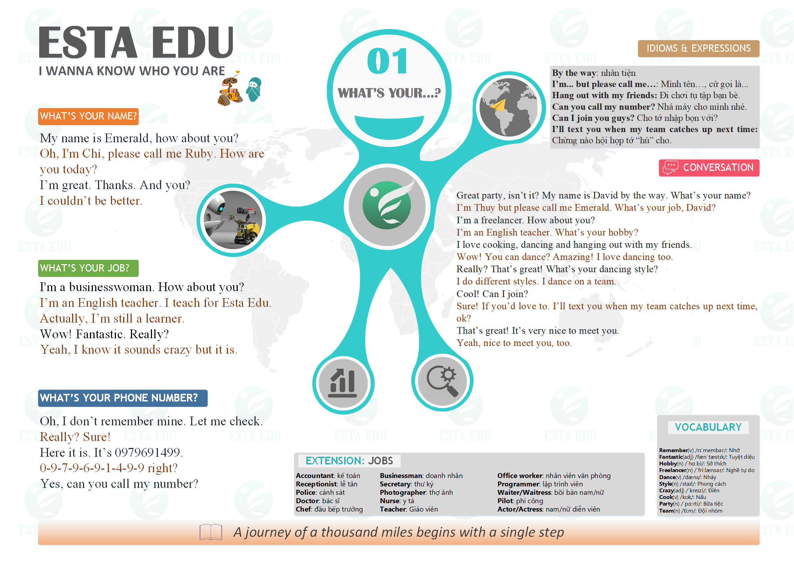
I. ĐOẠN VĂN
1) Tóm tắt
Đoạn văn xoay quanh giới thiệu bản thân lần đầu gặp mặt — ở bữa tiệc, nơi làm việc, lớp học:
- Xin chào, hỏi tên → đặt tên gọi giúp dễ nhớ ("call me Ruby/Emerald").
- Hỏi nghề nghiệp → hai người khác nhau một trời một vực: một người kinh doanh, một người dạy tiếng Anh nhưng vẫn tự coi mình là học viên.
- Trao đổi số điện thoại, đọc số từng con số, hẹn gọi lại.
- Cuối đoạn: hỏi sở thích, phong cách nhảy — và mời nhau tham gia cùng đội/nhóm.
Điểm chốt: đặt 8 – 10 câu hỏi "What's your…?" liên tiếp là cách mở màn quen thuộc của the center để "khám phá" người đối diện.
2) Khi nào sử dụng?
- Khi lần đầu gặp ai đó: bữa tiệc, lớp học, công ty, sự kiện networking.
- Khi cần hỏi thông tin cá nhân cơ bản: tên, nghề nghiệp, số điện thoại, email, màu yêu thích, sở thích.
- Khi làm quen nhóm mới, muốn giữ liên lạc sau buổi gặp.
- Bộ câu hỏi name – job – phone – email – hobby (hoặc favorite color) — lặp lại liên tục như "chương trình" trong mọi cuộc làm quen.
- Mức độ: thân thiện, informal; dùng được cho cả lần gặp đầu lẫn ôn lại "kit" giới thiệu bản thân chuẩn.
3) Bảng cụm từ giao tiếp (IDIOMS & EXPRESSIONS + câu đáng nhớ)
Đọc nhanh như vầy: ⚠️ là lỗi "dịch từ tiếng Việt" hay gặp (gạch = đừng nói) · 💬 là khi nghe ai đó nói cụm này, mình bắt chuyện tiếp bằng câu nào.
| # | Cụm từ | Nghĩa (VI) | Khi nào dùng | Câu mẫu trong bài | ⚠️ Lỗi hay sai | 💬 Đáp lại |
|---|---|---|---|---|---|---|
| 1 | By the way | Nhân tiện | Chuyển sang chủ đề khác một cách nhẹ nhàng | By the way, what's your phone number? | Sure, let me check. (Để tôi xem nhé) | |
| 2 | I'm… but please call me… | Mình tên…, cứ gọi là… | Đặt tên gọi thân mật khi làm quen | I'm Chí, please call me Ruby. | Nice to meet you, Ruby! (Rất vui gặp Ruby!) | |
| 3 | Hang out with my friends | Đi chơi tụ tập bạn bè | Chia sẻ sở thích, cuộc sống cá nhân | I love hanging out with my friends. | Fun! Who do you hang out with? (Vui nhỉ? Thường đi với ai?) | |
| 4 | Can you call my number? | Nhá máy cho mình nhé | Trao đổi số điện thoại, hẹn liên lạc | Yes, can you call my number? | Sure, I'll ring you tonight. (Được, tối tôi gọi) | |
| 5 | Can I join you guys? | Cho tớ nhập bọn với? | Xin tham gia nhóm đang trò chuyện/nhảy | Cool! Can I join? | Sure, come on over! (Được, qua luôn đi!) | |
| 6 | I'll text you when my team catches up next time | Chừng nào hội hợp tớ "hú" cho | Hẹn sau, giữ liên lạc | I'll text you when my team catches up next time, ok? | Deal, see you then! (Chốt, gặp sau nhé!) | |
| 7 | I couldn't be better | Không thể tốt hơn được nữa (tuyệt luôn) | Trả lời "How are you?" một cách tích cực | How are you today? – I couldn't be better. | Glad to hear that! (Nghe mà vui!) | |
| 8 | It's nice to meet you | Rất vui được làm quen | Kết thúc phân đoạn trò chuyện | It's very nice to meet you! – Nice to meet you, too. | Nice to meet you, too! (Tôi cũng vui gặp bạn!) | |
| 9 | How about you? | Còn bạn thì sao? | Đổi câu hỏi ngược sang người đối diện | I'm a businesswoman. How about you? | Oh, me? I'm a teacher. (À tôi à? Tôi dạy học) | |
| 10 | Really? That's great! | Thật à? Tuyệt quá! | Bày tỏ quan tâm khi nghe tin mới | That's great! I believe you can do it! | Thanks, you made my day! (Cảm ơn, vui cả ngày!) |
4) Từ vựng (Vocabulary)
| Từ | Từ loại / Phiên âm | Nghĩa |
|---|---|---|
| Remember | (v) /rɪˈmembər/ | Nhớ |
| Fantastic | (adj) /fænˈtæstɪk/ | Tuyệt diệu |
| Hobby | (n) /ˈhɑːbi/ | Sở thích |
| Freelancer | (n) /ˈfriːlænsər/ | Nghề tự do |
| Dance | (v) /dæns/ | Nhảy |
| Style | (n) /staɪl/ | Phong cách |
| Crazy | (adj) /ˈkreɪzi/ | Điên |
| Cook | (v) /kʊk/ | Nấu |
| Party | (n) /ˈpɑːrti/ | Bữa tiệc |
| Team | (n) /tiːm/ | Đội nhóm |
Extension (Từ vựng bổ sung – JOBS): Accountant (kế toán), Receptionist (lễ tân), Police (cảnh sát), Doctor (bác sĩ), Chef (đầu bếp trưởng), Businessman (doanh nhân), Secretary (thư ký), Photographer (thợ ảnh), Nurse (y tá), Teacher (giáo viên), Office worker (nhân viên văn phòng), Programmer (lập trình viên), Waiter/Waitress (bồi bàn nam/nữ), Pilot (phi công), Actor/Actress (nam/nữ diễn viên).
5) Đoạn hội thoại gốc (Free Talk)
What's your name?
My name is Emerald, how about you?
Oh, I'm Chí, please call me Ruby. How are you today?
I'm great. Thanks. And you?
I couldn't be better.
What's your job?
I'm a businesswoman. How about you?
I'm an English teacher. I teach at a language center. Actually, I'm still a learner.
Wow! Fantastic. Really?
Yeah, I know it sounds crazy but it is.
What's your phone number?
Oh, I don't remember mine. Let me check.
Really? Sure!
Here it is. It's 0979691499.
0-9-7-9-6-9-1-4-9-9 right?
Yes, can you call my number?Conversation (tiếp tục):
Great party, isn't it? My name is David by the way. What's your name?
I'm Thuy but please call me Emerald. What's your job, David?
I'm a freelancer. How about you?
I'm an English teacher. What's your hobby?
I love cooking, dancing and hanging out with my friends.
Wow! You can dance? Amazing! I love dancing too.
Really? That's great! What's your dancing style?
I do different styles. I dance on a team.
Cool! Can I join?
Sure! If you'd love to. I'll text you when my team catches up next time, ok?
That's great! It's very nice to meet you.
Yeah, nice to meet you, too.II. NGỮ PHÁP
Tổng quan: 4 điểm ngữ pháp trong bài
| Điểm | Tên | Ứng dụng nói |
|---|---|---|
| 1 | Present Simple – ToBe (Động từ ToBe thì hiện tại đơn) | Giới thiệu bản thân: tên, nghề, cảm xúc |
| 2 | Dummy Subject (Chủ ngữ giả) – It / There | Câu nhân tiện, câu tồn tại mở đầu |
| 3 | Possessive Adjectives (Tính từ sở hữu) | "my name", "your email" |
| 4 | Possessive Pronouns (Đại từ sở hữu) | Nói gọn "Mine", "Yours", "Theirs" |
Điểm 1. Present Simple – ToBe: S + am/is/are + adj / (a/an) N
Cách dùng: Câu "tả đơ" — không có hành động nào đang chạy, chỉ gắn người với danh tính, nghề, cảm xúc, trạng thái hiện tại: I'm Ruby, I'm happy. Nghề là danh từ đếm được nên phải có a/an: I'm teacher → I'm a teacher. Khác hẳn động từ thường: ToBe tự đảo lên trước chủ ngữ khi hỏi (Are you…?), đừng chèn do vào (Do you are happy? ✗). Mẹo nói: nuốt "I'm" thành một âm I'ma, nhấn nhẹ từ cuối (tea-cher) — nghe người bản xứ liền.
Phản xạ hỏi–đáp:
- ❓ Hỏi danh tính:
What's your name?(Bạn tên gì vậy?) - ➖ Phủ định:
I'm not a businesswoman — I'm a teacher.(Tôi không phải doanh nhân, tôi dạy học) - 💬 Đáp lại:
Nice to meet you, too!(Tôi cũng rất vui gặp bạn!)
Ví dụ:
- Ví dụ 1: I am happy. (Tôi hạnh phúc)
- Ví dụ 2: I am a learner. (Tôi là một learner)
- Ví dụ 3: I am a happy learner. (Tôi là một learner hạnh phúc)
- Ví dụ 4: We are happy learners. (Chúng tôi là những learner hạnh phúc)
- Ví dụ 5: I'm an English teacher. (Tôi là giáo viên tiếng Anh)
Biến tấu (tự luyện):
- Đổi chủ ngữ I → she:
She is an English teacher.(Cô ấy là giáo viên tiếng Anh) - Đổi thì (quá khứ):
I was shy when I was a kid.(Hồi nhỏ tôi nhút nhát lắm)
Điểm 2. Dummy Subject: It + be + adj (+ for someone) + to V · It + be + adj + that + S + V · It + be + (a/an) noun + that + S + V · There + be + noun
Cách dùng: "It" và "There" là hai chiếc ghế trống đặt đầu câu khi chưa có chủ ngữ đáng nói: It bọc ý về thời tiết, giờ, khoảng cách, cảm nhận (It's hot today); There báo hiệu sự tồn tại — "có" gì đó (There is an orange in my bag). Dễ nhầm nhất: nói "có" phải dùng There, không phải It has — There's a party tonight chứ không phải It has a party. Hỏi thì đảo lên: Is it hot? / Are there many people?. Mẹo nói: nuốt there's thành một từ, nói trôi như hơi thở.
Phản xạ hỏi–đáp:
- ❓ Hỏi tồn tại:
Are there many people at the party?(Tiệc đông người không?) - ➖ Phủ định:
It isn't hot today, just warm.(Hôm nay không nóng, chỉ ấm thôi) - 💬 Đáp lại:
Yeah, it's crowded in here.(Ừ, đông đóng trong này)
Ví dụ:
- Ví dụ 1: It's very nice to talk to you. (Rất vui được trò chuyện với bạn)
- Ví dụ 2: It's J-O-H-N. John. (Là J-O-H-N. John.)
- Ví dụ 3: There is an orange in my bag. (Có một quả cam trong túi tô)
- Ví dụ 4: It's hot today. (Hôm nay nắng nóng)
- Ví dụ 5: There are many people at the party. (Có nhiều người ở bữa tiệc)
Biến tấu (tự luyện):
- Đổi danh từ sau There:
There are two oranges in my bag.(Trong túi tôi có hai quả cam) - Đổi thì (quá khứ):
It was cold yesterday.(Hôm qua trời lạnh lắm)
Điểm 3. Possessive Adjectives: my / your / his / her / its / our / their + N
Cách dùng: Tính từ sở hữu là cái nhãn dán — luôn đứng ngay trước danh từ và không sống một mình được (my name, her email). Chọn theo chủ ngữ: I→my, you→your, he→his, she→her, we→our, they→their — học một lần, dùng cả đời. Cản trở thường gặp: the my phone ✗ — trước nó không thêm mạo từ, chỉ chọn một trong hai. Mẹo nói: đọc nối liền cụm sở hữu — my name is → /mai-nay-miz/ — nghe tự nhiên liền.
Phản xạ hỏi–đáp:
- ❓ Hỏi:
What's your email address?(Email của bạn là gì?) - ➖ Phủ định:
That's not my number.(Số đó không phải của tôi đâu) - 💬 Đáp lại:
Let me send you mine.(Để tôi gửi số của tôi cho)
Ví dụ:
- Ví dụ 1: What's your name? (Tên của bạn là gì?)
- Ví dụ 2: My name is X. (Tên của tôi là X)
- Ví dụ 3: Do you know her email address? (Bạn biết địa chỉ email của cô ấy không?)
- Ví dụ 4: I brush my teeth and wash my face every morning. (Mỗi sáng tôi đánh răng, rửa mặt)
- Ví dụ 5: They brush their teeth and wash their faces every morning. (Mỗi sáng họ đánh răng, rửa mặt)
Biến tấu (tự luyện):
- Đổi sở hữu my → his:
Do you know his email address?(Bạn biết email của anh ấy không?) - Đổi danh từ:
She checks her phone every morning.(Cô ấy xem điện thoại mỗi sáng)
Điểm 4. Possessive Pronouns: mine / yours / his / hers / its / ours / theirs
Cách dùng: Khi người nghe đã biết nói về cái gì, ta cắt bỏ danh từ và giữ phần sở hữu: My name is short. Mine is long. Công thức nhớ nhanh: đại từ sở hữu = tính từ sở hữu + N (yours = your name), nên nó đứng một mình, cấm kèm danh từ (mine name ✗). Cực đắt khi so sánh hai bên trong hội thoại nhanh: My phone is here, but yours is in the car. Mẹo nói: nhấn mạnh đại từ này khi phân biệt — MINE is longer.
Phản xạ hỏi–đáp:
- ❓ Hỏi:
Is this yours or mine?(Cái này của bạn hay của tôi?) - ➖ Phủ định:
It's not mine.(Không phải của tôi đâu) - 💬 Đáp lại:
Then it must be hers.(Thế chắc của cô ấy rồi)
Ví dụ:
- Ví dụ 1: Your name is short. Mine is quite long. (Tên bạn ngắn. Tên tôi khá dài) — Mine = My name.
- Ví dụ 2: Her email is easy to remember. Yours is too long. (Email của cô ấy dễ nhớ; của bạn quá dài) — Yours = Your email.
- Ví dụ 3: I want to get a new pair of shoes like theirs. (Tôi muốn mua đôi giày mới giống như của họ) — Theirs = Their shoes.
- Ví dụ 4: My phone is here, but yours is in the car. (Điện thoại tôi ở đây, điện thoại của bạn trong xe)
- Ví dụ 5: This bag is ours; that one is theirs. (Túi này của chúng tôi; túi kia của họ)
Biến tấu (tự luyện):
- Đổi danh từ (name → phone):
My phone is new, but yours is old.(Điện thoại tôi mới, của bạn cũ) - Đổi số ít → số nhiều:
Their emails are easy to remember.(Email của họ dễ nhớ)
III. LUYỆN NÓI (drill)
Echo drill (nhắc lại 3 lần, nói to, nhanh hơn mỗi lần)
- What's your name? — I'm Son, but please call me …
- What's your job? — I'm a(n) …
- By the way, what's your phone number? — Let me check.
- How about you? / I couldn't be better.
- It's very nice to meet you! — Nice to meet you, too.
5 câu hỏi tự luyện (đặt & tự trả lời thành câu 20–30 giây)
- What's your full name and nickname? — My name is … but my friends call me …
- What's your job? — I'm a … I've been doing it for …
- What's your hobby? — I love … and I often … with …
- What's your favorite color/food/day off? — My favorite … is … because …
- What's your email address / phone number? — It's … You can call me anytime.
✅ Checkpoint: trả lời được 5 câu này WITHOUT LOOKING (không nhìn note). Ghi âm và tự nghe lại.
02Where do you ..?Bạn ở đâu / bạn làm gì ở đâu?
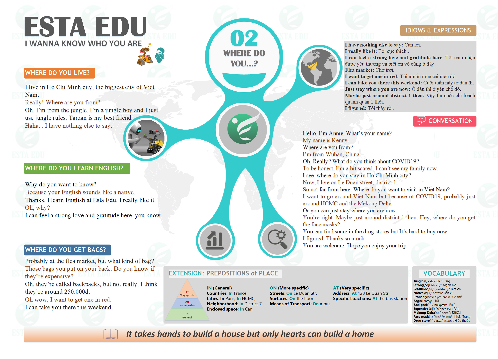
I. ĐOẠN VĂN
1) Tóm tắt
Hai người bạn quen nhau dần qua những câu hỏi "Where do you…?":
- Hỏi quê quán, nơi sống, chỗ làm việc, trường học, thường đi chơi cuối tuần ở đâu.
- Hỏi mua đồ ở đâu → dẫn sang chủ đề chợ trời (flea market): ủng đỏ được mua ở chợ trời, giá rẻ, món đồ độc.
- Nhắc nhau về Mekong Delta (ĐBSCL) và drug store (tiệm thuốc), túi xách/backpack mua ở đâu.
Chốt: "Where do you…?" là chìa khoá mở mọi câu chuyện về địa điểm — sống, làm, học, mua sắm, ăn, chơi.
2) Khi nào sử dụng?
- Hỏi nơi sinh sống / quê quán: Where do you live? / Where are you from?
- Hỏi nơi làm việc / học tập: Where do you work? / Where do you study?
- Hỏi thường xuyên làm gì ở đâu cuối tuần: Where do you usually go at the weekend?
- Hỏi mua sắm: Where do you buy/get…? (quần áo, đồ ăn, khẩu trang...)
- Mở rộng hội thoại tự nhiên: địa danh Việt được gọi trên thế giới (Mekong Delta), chợ trời…
3) Bảng cụm từ giao tiếp (IDIOMS & EXPRESSIONS + câu đáng nhớ)
Đọc nhanh như vầy: ⚠️ là lỗi "dịch từ tiếng Việt" hay gặp (gạch = đừng nói) · 💬 là khi nghe ai đó nói cụm này, mình bắt chuyện tiếp bằng câu nào.
| # | Cụm từ | Nghĩa (VI) | Khi nào dùng | Câu mẫu trong bài | ⚠️ Lỗi hay sai | 💬 Đáp lại |
|---|---|---|---|---|---|---|
| 1 | I have nothing else to say | Cạn lời | Kết thúc câu chuyện vui vẻ | Ha-ha, I have nothing else to say. | Ha-ha, enough for today! (Thôi hôm nay vậy!) | |
| 2 | I really like it | Tôi cực thích | Khen món đồ / nơi chốn | I love this red t-shirt. I really like it. | Me too! Where did you get it? (Tôi cũng thích! Mua ở đâu?) | |
| 3 | I can feel a strong love and gratitude here | Tôi cảm nhận được sự yêu thương và biết ơn vô cùng ở đây | Vừa ăn vừa cảm nhận tình cảm | I can feel a strong love and gratitude here. | Me too, so warm here. (Tôi cũng vậy, ấm áp ghê) | |
| 4 | Flea market | Chợ trời | Mua đồ cũ rẻ, đồ độc lạ | I bought it at a flea market. | Take me there! (Dẫn tôi đi đi!) | |
| 5 | I want to get one in red | Tôi muốn mua cái màu đỏ | Chọn màu khi mua đồ | I want to get one in red. | Red suits you! (Màu đỏ hợp bạn lắm!) | |
| 6 | I can take you there this weekend | Cuối tuần này tôi dẫn đi | Hẹn dẫn đi chơi/mua sắm | If you want one, I can take you there this weekend. | Deal, see you Saturday! (Chốt, thứ bảy gặp nhé!) | |
| 7 | Just stay where you are now | Ở đâu thì ở yên chỗ đó | Dặn đứng yên tại chỗ | Just stay where you are now. | Okay, I'm not moving. (Ok, tôi đứng yên đây) | |
| 8 | Maybe just around District 1 then | Vậy thì chắc chỉ quanh Quận 1 thôi | Gợi ý chỗ chơi gần gũi | Maybe just around District 1 then. | Perfect, close to me too. (Tuyệt, gần nhà tôi luôn) | |
| 9 | I figured | Tôi hiểu / tôi đoán ra rồi | Đáp lại điều vừa nghe hiểu | I figured. | Exactly, you got it. (Chuẩn, cậu hiểu ý mà) |
4) Từ vựng (Vocabulary)
| Từ | Từ loại / Phiên âm | Nghĩa |
|---|---|---|
| Jungle | (n) /ˈdʒʌŋgl/ | Rừng |
| Strong | (adj) /strɔːŋ/ | Mạnh mẽ |
| Gratitude | (n) /ˈgrætɪtuːd/ | Biết ơn |
| Native | (adj) /ˈneɪtɪv/ | Bản xứ |
| Probably | (adv) /ˈprɑːbəbli/ | Có thể |
| Bag | (n) /bæɡ/ | Túi |
| Backpack | (n) /ˈbækpæk/ | Ba lô |
| Expensive | (adj) /ɪkˈspensɪv/ | Đắt |
| Mekong Delta | (n) /ˈdeltə/ | ĐBSCL |
| Face mask | (n) /feɪs//mæsk/ | Khẩu trang |
| Drug store | (n) /drʌɡ//stɔːr/ | Tiệm thuốc |
Extension (PREPOSITIONS of PLACE):
- IN (General – phạm vi rộng): nước, thành phố, khu vực, không gian kín → In France, In Paris, In HCMC, In District 7, In Car.
- ON (More specific): phố, mặt phẳng, phương tiện đi lại → On Le Duan Str., On the floor, On a bus.
- AT (Very specific): địa chỉ, địa điểm cụ thể → At 123 Le Duan Str., At the bus station.
5) Đoạn hội thoại gốc (Free Talk)
Where do you live?
I live in a jungle. There are so many trees and animals around me.
Really? I live in the Mekong Delta. It's a peaceful place.
Sounds nice! Where do you usually go at the weekend?
I often ride a boat to visit my grandmother and do the gardening.
Interesting! Where do you work?
I work for a language center. I teach English online.
Cool! Where do you buy that red backpack?
I got it at a flea market last month. Only 200k!
I want to get one in red. Can you take me there?
Sure! I can take you there this weekend.Conversation (tiếp tục):
Where do you usually shop for clothes?
Just around District 1. There are many nice stores.
Any suggestions?
There is a small shop on Le Duan Street. I love their shirts.
Do you have a face mask? I forgot mine at home.
Yes, I bought two from a drug store. Take one.
Thanks! You save my day.
No problem. Just stay where you are now.(Hội thoại trên là bản rút gọn giữ các câu chốt; để shadowing theo đúng thứ tự từng lời trên map, mở ảnh gốc images/t02-BEOD-MAPS-02-WhereDoYou.png.)
II. NGỮ PHÁP
Tổng quan: 4 điểm ngữ pháp trong bài
| Điểm | Tên | Ứng dụng nói |
|---|---|---|
| 1 | Present Simple – Verb (Động từ thường thì hiện tại đơn) | Hỏi thói quen: Where do you…? |
| 2 | Too / So (…cũng vậy) | Đồng tình nhanh gọn khi trao chuyện |
| 3 | One / Ones (Danh từ thay thế) | Lấp lánh "cái nào" mà không lặp danh từ |
| 4 | Prepositions of Place (IN / ON / AT) | Nói rõ vị trí: nước, phố, địa chỉ |
Điểm 1. Present Simple – Verb: I/we/you/they + V · She/he/it + V(s/es)
Cách dùng: Đây là "cỗ máy thói quen": mọi việc lặp lại, đúng lịch đều dùng nó — sống, làm, học, mua sắm. Khác ToBe: động từ thường phải mượn do/does để hỏi và phủ định (Where do you live? / I don't work here). Chủ ngữ he/she/it thì V khoác áo s/es — quên "s" là lỗi quốc dân (she work ✗). Mẹo nói: gộp do you thành /də-jə/ — Whaddaya do? — tự nhiên như người bản xứ.
Phản xạ hỏi–đáp:
- ❓ Hỏi thói quen:
Where do you buy your groceries?(Bạn mua đồ ăn ở đâu?) - ➖ Phủ định:
I don't go shopping often.(Tôi chẳng đi mua sắm thường xuyên) - 💬 Đáp lại:
Same here, once a month.(Tôi cũng vậy, cả tháng một lần)
Ví dụ:
- Ví dụ 1: I make video homework every day. (Tôi làm video bài tập hàng ngày)
- Ví dụ 2: My husband mops the floor every evening. (Chồng tôi lau nhà mỗi tối)
- Ví dụ 3: My kids want to speak English with me more often. (Các con muốn nói tiếng Anh với tôi thường xuyên hơn)
- Ví dụ 4: She works for the center. (Cô ấy làm cho the center)
- Ví dụ 5: Where do you buy your groceries? (Bạn mua đồ ăn ở đâu?)
Biến tấu (tự luyện):
- Đổi chủ ngữ I → they:
They work for the center.(Họ làm cho the center) - Đổi thì (quá khứ):
I lived in Hanoi last year.(Năm ngoái tôi sống ở Hà Nội)
Điểm 2. Too / So (…cũng vậy): S + V, too. / So + V + S.
Cách dùng: Hai cách "tôi cũng vậy" cực đắt trong speaking. Too gắn đuôi câu sau dấu phẩy (I am, too); So dẫn đầu câu và đảo trợ động từ lên trước chủ ngữ (So do I). Chọn nhanh: nói lướt thì So do I, nói nhát gừng thì …, too. Quan trọng nhất: lặp đúng trợ động từ của câu kia — I live… → So do I, I am… → So am I; lấy sai là câu "lạc quẻ" ngay.
Phản xạ hỏi–đáp:
- ➕ Nói:
I live in District 7. — So do I!(Tôi ở Quận 7. — Tôi cũng vậy!) - ➖ Phủ định:
I don't like shopping. — Neither do I.(Tôi không thích mua sắm. — Tôi cũng không) - 💬 Đáp lại:
We're twins!(Đúng là anh em song sinh!)
Ví dụ:
- Ví dụ 1: You are from your mother. — I am, too. / So am I. (Cậu được sinh ra từ mẹ. Tớ cũng vậy)
- Ví dụ 2: You love English. — I do, too. / So do I. (Bạn yêu tiếng Anh. Tớ cũng thế)
- Ví dụ 3: I live in District 7. — So do I! (Tôi sống ở Quận 7. Tôi cũng vậy!)
- Ví dụ 4: My son likes the red backpack. — Mine does, too. (Con tôi cũng thích ba lô đỏ)
- Ví dụ 5: She works online. — I do, too. (Cô ấy làm online. Tôi cũng vậy)
Biến tấu (tự luyện):
- Đổi chủ ngữ:
She works online. — So does her husband.(Cô ấy làm online. — Chồng cô ấy cũng vậy) - Đổi thì (quá khứ):
I lived in Hanoi. — So did I.(Tôi từng sống ở Hà Nội. — Tôi cũng vậy)
Điểm 3. One / Ones (Danh từ thay thế)
Cách dùng: one/ones là "cái đó" của tiếng Anh — thay danh từ đếm được đã nhắc rồi để khỏi lặp: one = số ít, ones = số nhiều, thường đứng sau this/that/which/the + adj. Danh từ không đếm được (sugar, milk, money) cấm dùng one — phải đổi sang some. Câu hỏi Which one? là cứu cánh mỗi khi bị bắt chọn. Mẹo nói: nhấn "ONE" lên cho rõ — Which ONE?
Phản xạ hỏi–đáp:
- ❓ Hỏi:
Which one do you like better?(Bạn thích cái nào hơn?) - ➖ Phủ định:
Not this one — the red one.(Không phải cái này — cái đỏ í) - 💬 Đáp lại:
The small one, please.(Cho tôi cái nhỏ nhé)
Ví dụ:
- Ví dụ 1: I have 2 kids: one is 8 and one is 5. (Tôi có 2 con, một bé 8 tuổi và một bé 5 tuổi)
- Ví dụ 2: – Excuse me! How much are those jeans? – Which ones? – The dark blue ones, please! (Quần Jeans này giá bao nhiêu? – Cái nào? – Cái màu xanh đậm nhé)
- Ví dụ 3: – What about a cake? – I'll just have a small one. (Em ăn một cái bánh nhé? – Em ăn một miếng nhỏ thôi)
- Ví dụ 4: the center has B-Starter and B-Runner Program. Which one do you like better? – I love the B-starter one better. (Bạn thích chương trình nào? – Tôi thích B-Starter hơn)
- Ví dụ 5: – Which bag do you like, the red or the black one? (Bạn thích túi nào, cái đỏ hay cái đen?)
Biến tấu (tự luyện):
- Đổi số ít → số nhiều:
How much are those shoes? — The white ones.(Đôi giày kia bao nhiêu? — Cặp trắng í) - Đổi sang không đếm được (one → some):
Can I have some sugar?(Cho tôi chút đường nhé)
Điểm 4. Prepositions of Place: IN / ON / AT
Cách dùng: Ba "nút phóng to" vị trí: IN ôm phạm vi rộng (nước, thành phố, không gian kín), ON sát hơn (đường phố, mặt phẳng, phương tiện công cộng), AT chấm cụ thể (địa chỉ, điểm hẹn). Viết địa chỉ thì "zoom" dần: in HCMC → on Le Duan Street → at 123 Le Duan Str. Dễ nhầm: phương tiện — in a car nhưng on a bus (bước lên xuống được). Mẹo nói: nuốt nhẹ giới từ, nhấn vào nơi chốn đứng sau — in HANOI.
Phản xạ hỏi–đáp:
- ❓ Hỏi:
Where do you live?(Bạn sống ở đâu?) - ➖ Phủ định:
I'm not at home right now.(Bây giờ tôi không ở nhà) - 💬 Đáp lại:
Where are you then?(Vậy giờ bạn đang ở đâu?)
Ví dụ:
- Ví dụ 1: I live in HCMC. (Tôi sống ở TP.HCM — thành phố)
- Ví dụ 2: There is a small shop on Le Duan Street. (Cửa hàng nhỏ trên phố Lê Duẩn — đường phố)
- Ví dụ 3: Meet me at 123 Le Duan Str. (Gặp tôi tại số 123 Lê Duẩn — địa chỉ)
- Ví dụ 4: She is waiting at the bus station. (Cô ấy đang chờ ở bến xe bus)
- Ví dụ 5: Your backpack is on the floor, not in the car. (Túi của bạn trên sàn, không phải trong xe)
Biến tấu (tự luyện):
- Đổi nơi chốn (thành phố → đường phố):
I live on Nguyen Hue Street.(Tôi sống trên đường Nguyễn Huệ) - Đổi nơi chốn (đường phố → địa chỉ):
Meet me at 42 Nguyen Hue.(Gặp tôi tại số 42 Nguyễn Huệ)
III. LUYỆN NÓI (drill)
Echo drill (nói to 3 lần, nhanh hơn mỗi lần)
- Where do you live? — I live in HCMC.
- Where do you work? — I work for the center.
- Where do you buy…? — I got it at a flea market.
- I love this. I really like it.
- Maybe just around District 1 then. / I figured.
5 câu hỏi tự luyện (tự hỏi + tự trả lời, mỗi câu 2-3 câu)
- Where do you live? — I live in … It's … (peaceful / busy / green).
- Where do you work? — I work for … I go to the office … days a week.
- Where do you usually go at the weekend? — I usually … at … with …
- Where do you buy your clothes / food / books? — I buy … at … because …
- Where do you want to visit next? — I want to visit … so I can take you there soon!
✅ Checkpoint: nói 5 câu hỏi "Where do you…?" MỚI (không trùng bảng trên) và tự trả lời. Ghi âm lại.
03Can you tell me about ...?Kể mình nghe về… nhé?
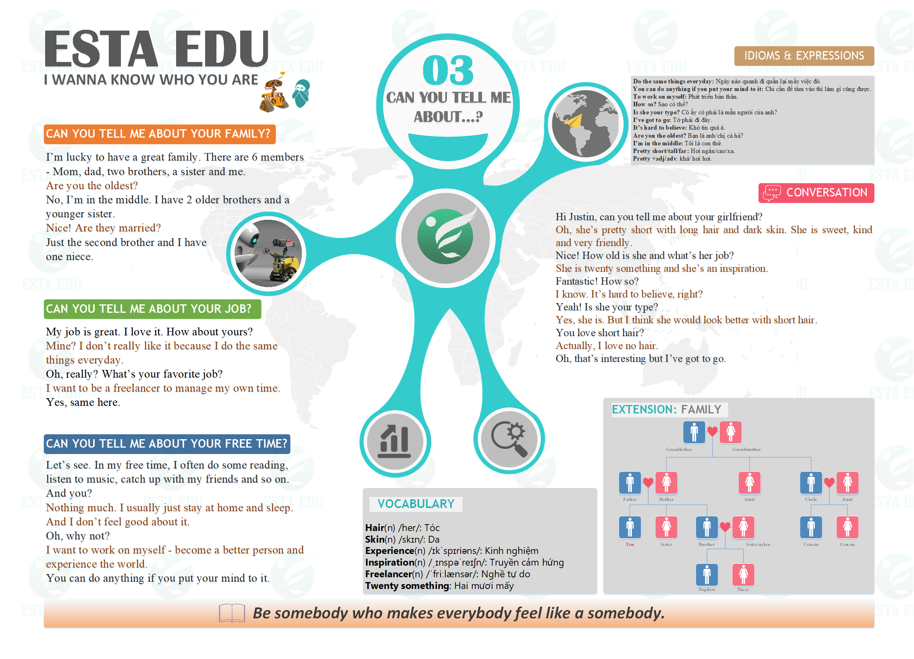
I. ĐOẠN VĂN
1) Tóm tắt
Đoạn văn là bài mở câu chuyện vừa "mở đề" vừa "nghe gặt":
- Hỏi về gia đình: 6 người nhà — mẹ, bố, 2 anh, 1 em gái. Mình ở giữa nhà, có một cháu bé (niece).
- Hỏi về công việc: một người yêu nghề của mình; người kia thì chán vì làm đi làm lại cùng một việc, mơ thành freelancer để tự quản thời gian.
- Hỏi về thời gian rảnh: đọc sách, nghe nhạc, gặp gỡ bạn bè; người kia chỉ ở nhà và ngủ — tự trách bản thân, mong "phát triển chính mình".
- Ở đoạn Conversation: hỏi về bạn gái — hơi lùn, tóc dài, da tối, dễ thương, thân thiện — một "inspiration"; kết thúc vì đi gấp.
Điểm chốt: "Can you tell me about…?" ném cho bạn đáp án dài — người hỏi chỉ việc ngồi nghe và phản hồi bằng cặp "How so?", "It's hard to believe".
2) Khi nào sử dụng?
- Khi bí câu hỏi → câu này là lời "cứu cánh": chỉ cần thay 1 danh từ:
family / job / boss / girlfriend / free time / country / course …
- Khi muốn người kia nói nhiều — người hỏi sẽ được "tha hồ lắng nghe".
- Giúp nghe tốt hơn cách nói tốt: đặt câu hỏi dài, nghe, rồi phản hồi mỗi lượt.
- Kết hợp các câu phản xạ: "How so?", "It's hard to believe", "Is she your type?", "I've got to go".
3) Bảng cụm từ giao tiếp (IDIOMS & EXPRESSIONS + câu đáng nhớ)
Đọc nhanh như vầy: ⚠️ là lỗi "dịch từ tiếng Việt" hay gặp (gạch = đừng nói) · 💬 là khi nghe ai đó nói cụm này, mình bắt chuyện tiếp bằng câu nào.
| # | Cụm từ | Nghĩa (VI) | Khi nào dùng | Câu mẫu trong bài | ⚠️ Lỗi hay sai | 💬 Đáp lại |
|---|---|---|---|---|---|---|
| 1 | Do the same things every day | Ngày nào cũng y hệt, đảo đi đảo lại một việc | Chia sẻ chuyện nghề | I don't really like my job because I do the same things everyday. | Oh really? How so? (Thật à? Sao thế?) | |
| 2 | You can do anything if you put your mind to it | Chỉ cần đặt tâm (tập trung) vào đó, làm gì cũng được | Động viên | You can do anything if you put your mind to it. | I'll try my best! (Tôi sẽ cố hết mình!) | |
| 3 | To work on myself | Phát triển bản thân | Mục tiêu cá nhân | I want to work on myself — become a better person. | That's the spirit! (Phải khí thế chứ!) | |
| 4 | How so? | Sao có thế? / Rồi sao nữa? | Hỏi tiếp cho sâu chuyện | Oh, really? How so? | Well, let me explain. (Để tôi kể nghe nè) | |
| 5 | Is she your type? | Cô ấy có phải là mẫu người của anh? | Chọc để kéo chuyện (hợp kiểu) | Yeah! Is she your type? | Yeah, she's totally my type. (Ừ, đúng gu của tôi) | |
| 6 | I've got to go | Tôi phải đi đây | Tách khỏi hội thoại lịch sự | Interesting, but I've got to go. | No worries, see you soon. (Đâu có sao, gặp lại nhé) | |
| 7 | It's hard to believe | Khó tin thật quá à | Sững lại vì điều vừa nghe | I know. It's hard to believe, right? | Right? I couldn't believe it either. (Đúng chứ, tôi cũng không tin) | |
| 8 | Are you the oldest? | Bạn là anh/chị cả hả? | Hỏi về thứ tự trong nhà | No, I'm in the middle. | No, I'm the youngest. (Không, tôi là út) | |
| 9 | I'm in the middle | Tôi là con thứ | Tự giới thiệu | I have 2 older brothers and a younger sister. | Same, I'm in the middle too. (Tôi cũng kẹp giữa nè) | |
| 10 | Pretty + adj/adv | Hơi / khá (Pretty = khá, hơi) | Làm dịu/thêm mức độ khi tả | She is pretty short with long hair. | She sounds cute! (Nghe dễ thương ghê) | |
| 11 | Same here | Mình cũng vậy | Đồng tình với hoàn cảnh | I want to be a freelancer. — Yes, same here. | Great minds think alike! (Cùng chí hướng cả!) | |
| 12 | Twenty something | Hai mươi mấy | Nói tuổi mơ hồ | She is twenty something. | So, 20 or 29? (Hai mươi hay hai chín?) |
4) Từ vựng (Vocabulary)
| Từ | Từ loại / Phiên âm | Nghĩa |
|---|---|---|
| Hair | (n) /heər/ | Tóc |
| Skin | (n) /skɪn/ | Da |
| Experience | (n) /ɪk ˈspɪriəns/ | Kinh nghiệm |
| Inspiration | (n) /ˌɪnspə ˈreɪʃn/ | Truyền cảm hứng |
| Freelancer | (n) /ˈfriːlænsər/ | Nghề tự do |
| Twenty something | (nh) | Hai mươi tuổi |
Extension (FAMILY TREE — cây gia phả): Grandfather (ông), Grandmother (bà), Father (bố), Mother (mẹ), Aunt (cô/dì/bác gái), Uncle (chú/bác), You (bạn), Sister (chị/em gái), Brother (anh/em trai), Sister-in-law (chị dâu), Niece (cháu gái — con của anh chị), Nephew (cháu trai).
5) Đoạn hội thoại gốc (Free Talk)
Can you tell me about your family?
I'm lucky to have a great family. There are 6 members - Mom, dad, two brothers, a sister and me.
Are you the oldest?
No, I'm in the middle. I have 2 older brothers and a younger sister.
Nice! Are they married?
Just the second brother and I have one niece.
Can you tell me about your job?
My job is great. I love it. How about yours?
Mine? I don't really like it because I do the same things everyday.
Oh, really? What's your favorite job?
I want to be a freelancer to manage my own time.
Yes, same here.
Can you tell me about your free time?
Let's see. In my free time, I often do some reading, listen to music, catch up with my friends and so on. And you?
Nothing much. I usually just stay at home and sleep. And I don't feel good about it.
Oh, why not?
I want to work on myself - become a better person and experience the world.
You can do anything if you put your mind to it.Conversation (tiếp tục):
Hi Justin, can you tell me about your girlfriend?
Oh, she's pretty short with long hair and dark skin. She is sweet, kind and very friendly.
Nice! How old is she and what's her job?
She is twenty something and she's an inspiration.
Fantastic! How so?
I know. It's hard to believe, right?
Yeah! Is she your type?
Yes, she is. But I think she would look better with short hair.
You love short hair?
Actually, I love no hair.
Oh, that's interesting but I've got to go.II. NGỮ PHÁP
Tổng quan: 4 điểm ngữ pháp trong bài
| Điểm | Tên | Ứng dụng nói |
|---|---|---|
| 1 | The Superlative (So sánh nhất) | Tả "nhất" trong nhóm bạn/gia đình |
| 2 | Describe Someone (Tả người) | Tả ngoại hình + tính cách chỉ trong 1 câu |
| 3 | Intonation Questions (Câu hỏi ngữ điệu) | Phản xạ tăng âm cuối câu |
| 4 | S + be + adj + to V | Nói cảm xúc khi làm việc gì |
Điểm 1. The Superlative (So sánh nhất): THE + short Adj-EST · THE MOST + long Adj
Cách dùng: So sánh một người/vật với cả nhóm (lớp, công ty, cả nhà) thì lên "hạng nhất" — và THE không thể thiếu (most beautiful thiếu the là sai ngay). Đo độ dài adj: ngắn (1 âm tiết) thêm -est (tallest), dài (3+ âm tiết) dùng the most; bất quy tắc học thuộc (good → the best, bad → the worst). Khác so sánh hơn (comparative với "than" — so từng đôi một), "nhất" là so cả đám. Mẹo nói: nhấn mũ "-est" lên, câu tự tin hẳn — she's the NICEST.
Phản xạ hỏi–đáp:
- ❓ Hỏi:
Who is the tallest in your class?(Ai cao nhất lớp bạn?) - ➖ Phủ định:
I'm not the oldest in my family.(Tôi không phải anh cả trong nhà) - 💬 Đáp lại:
That would be my brother.(Chắc là anh tôi đấy)
Ví dụ:
- Ví dụ 1: Emerald is the nicest and the most fragile in the center. (Emerald dễ thương & mong manh nhất the center há há)
- Ví dụ 2: Is she the most beautiful learner? (Cô ấy xinh nhất the center?)
- Ví dụ 3: No, she is the craziest one. (Không hề, cô ấy "khìn" nhất thì có)
- Ví dụ 4: My mom cooks the best food in our family. (Mẹ nấu ăn ngon nhất nhà tôi)
- Ví dụ 5: I work the fastest when I listen to music. (Tôi làm việc nhanh nhất khi nghe nhạc)
Biến tấu (tự luyện):
- Đổi adj:
She is the most helpful in our team.(Cô ấy nhiệt tình nhất nhóm) - Đổi nhóm so sánh:
He is the tallest in my family.(Anh ấy cao nhất nhà tôi)
Điểm 2. Describe Someone (Tả người): S + V + (adv) + adj + (N)
Cách dùng: Công thức tả người "một nhịp": chọn NOUN cần tả trước, rồi gắn ADJ phù hợp — tả có thứ tự thì người nghe "nhìn" theo được. Quy tắc nhanh: have + đặc điểm gắn vào người (tóc, da), be + dáng người & tính cách (She has long hair. She is sweet.). Khác tả đồ vật: tả người thì ngoại hình trước, tính cách sau — đảo lại nghe "gượng". Mẹo nói: ghép 2 adj bằng dấu phẩy, nhấn adj cuối — pretty, SWEET.
- Hair: long, short, medium length, curly, straight, wavy
- Skin: dark, fair, pale, brown, white
- Height: tall, short; Weight: heavy, fat, big, fit, thin, slim
- Characteristics: kind, sweet, nice, helpful, responsible, confident
Phản xạ hỏi–đáp:
- ➕ Tả:
She has long hair and dark skin.(Cô ấy tóc dài, da ngăm) - ➖ Phủ định:
She's not tall, just average.(Cô ấy không cao, tầm trung thôi) - 💬 Đáp lại:
She sounds adorable!(Nghe dễ thương ghê)
Ví dụ:
- Ví dụ 1: She has quite long, black hair. (Cô ấy có mái tóc đen khá dài)
- Ví dụ 2: He is kind of tall and fit. (Anh ấy khá là cao và cân đối)
- Ví dụ 3: My boss is a friendly, responsible person. (Sếp tôi là người thân thiện, có trách nhiệm)
- Ví dụ 4: They look very young with short hair. (Họ trẻ ra trông thấy với tóc ngắn)
- Ví dụ 5: My sister is slim and has fair skin. (Chị tôi gọn gàng, da trắng)
Biến tấu (tự luyện):
- Đổi đặc điểm (tóc):
She has short, curly hair.(Cô ấy tóc xoăn ngắn) - Đổi tính cách:
My best friend is confident and helpful.(Bạn thân tôi tự tin và hay giúp người)
Điểm 3. Intonation Questions (Câu hỏi ngữ điệu)
Cách dùng: Câu hỏi "trời cho": giữ nguyên trật tự khẳng định, chỉ hếch giọng lên cuối câu — người nghe tự hiểu là hỏi (You don't believe it?). Khác câu hỏi có trợ động từ (Do you…?): kiểu này không cần do/did, nói cho lẹ, hay dùng khi ngạc nhiên, hoài nghi hoặc không tin điều vừa nghe. Nghe xong thường đáp ngay Really? — hai kiểu câu này luôn đi cặp. Mẹo nói: giọng đi lên ở từ cuối, kéo dài nửa nhịp — Real-ly?↗
Phản xạ hỏi–đáp:
- ❓ Hỏi lên giọng:
You can get up at 4:30 to learn English?(Cậu dậy 4:30 học tiếng Anh thật à?) - ➖ Phủ định:
You don't believe it?(Cậu không tin à?) - 💬 Đáp lại:
I swear, every day!(Thề luôn, ngày nào cũng vậy!)
Ví dụ:
- Ví dụ 1: Really? (Thật hả? — lên giọng)
- Ví dụ 2: She is the craziest one? (Cô ị "khìn" nhất ư?)
- Ví dụ 3: You don't believe it? (Cậu không tin à?)
- Ví dụ 4: You can get up early at 4:30 to learn English? (Thế cậu có dậy sớm lúc 4:30 để học tiếng Anh không?)
- Ví dụ 5: This is your first job? (Đây là công việc đầu tiên của cậu à?)
Biến tấu (tự luyện):
- Đổi câu gốc:
She is your sister?(Cô ấy là chị của cậu á?) - Đổi thì:
You went there alone?(Cậu đi một mình thật à?)
Điểm 4. S + be + adj + to V
Cách dùng: Gói cảm xúc + hành động vào một câu: be + adj + to V — cảm xúc ngồi ở adj, việc sẽ làm là to V (I'm happy to see you). Dùng khi muốn bày tỏ thái độ trước khi hành động: happy, excited, sorry, ready, eager. Dễ nhầm với S + V + to V (I want to go) — đó là "muốn", không phải cảm xúc; adj cảm xúc mới cần cấu trúc này. Mẹo nói: nhấn adj, nói trôi phần to V — I'm so HAPPY to see you.
Phản xạ hỏi–đáp:
- ➕ Nói:
I'm happy to see you.(Mình vui khi thấy cậu) - ➖ Phủ định:
I'm not ready to answer that.(Tôi chưa sẵn sàng trả lời đâu) - 💬 Đáp lại:
I'm glad to hear that!(Nghe vậy tôi mừng quá!)
Ví dụ:
- Ví dụ 1: I'm happy to see you. (Mình vui khi thấy cậu)
- Ví dụ 2: She is eager to travel with him. (Cô ấy háo hức được đi du lịch cùng anh ấy)
- Ví dụ 3: learners are excited to catch up in the campus. (Cư dân the center rất háo hức gặp gỡ nhau tại EH)
- Ví dụ 4: I'm sorry to hear that. (Tôi rất tiếc khi nghe điều đó)
- Ví dụ 5: We are ready to start the next topic. (Chúng tôi đã chuẩn bị sẵn để qua bài mới)
Biến tấu (tự luyện):
- Đổi adj:
I'm lucky to have you.(Tôi may mắn khi có cậu) - Đổi thì (quá khứ):
They were eager to start last week.(Tuần trước họ háo hức bắt đầu lắm)
III. LUYỆN NÓI (drill)
Echo drill (nói to 3 lần, mỗi lần nhanh hơn)
- Can you tell me about your family? — There are 6 members in my family.
- Can you tell me about your job? — My job is great. I love it.
- How so? / It's hard to believe, right? / Same here.
- I've got to go. Nice talking with you!
- She's pretty short with long hair. She is kind and sweet.
5 câu hỏi tự luyện (tự hỏi + trả lời chi tiết)
- Can you tell me about your family? — There are … members: …
- Can you tell me about your job? — I'm … My job is (+adjective) because …
- Can you tell me about your best friend? — He/She is … (height, hair, personality).
- Can you tell me about your free time? — In my free time, I often … and so on.
- Can you tell me about your dream? — My dream is to … I want to work on myself by …
✅ Checkpoint: dùng "Can you tell me about…?" thử được một PF conversation với 1 chủ đề bất kỳ trong 1 phút không ngừng.
04What do you think of ...?Bạn nghĩ gì về…?
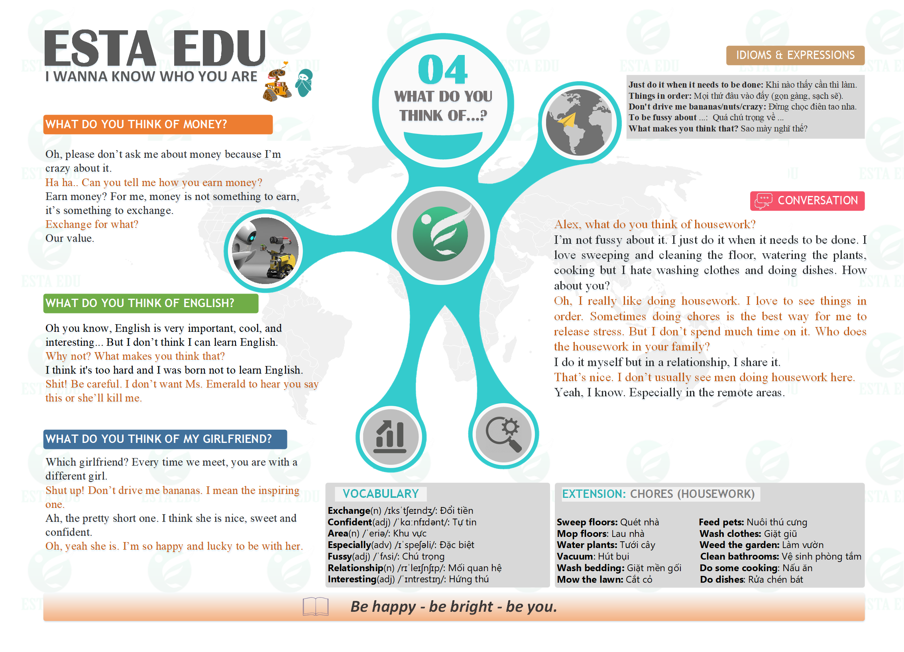
I. ĐOẠN VĂN
1) Tóm tắt
Topic này dạy cách hỏi ý kiến một cách thẳng thắn — "What do you think of…?" — qua 3 chủ đề "căng" hay gặp:
- Tiền: người này coi tiền là thứ "để trao đổi giá trị", không phải thứ "kiếm được".
- Tiếng Anh: người kia chán nản, nghĩ tiếng Anh khó lắm — bạn nhắc nhở y "cẩn thận khi nghĩ thế".
- Bạn gái: mỗi lần gặp là một cô khác — khi chọc quê, ai giải thích "ý là cô tâm linh ấy", được khen: dễ thương, dịu dàng, tự tin.
- Conversation: hỏi về việc nhà — một người "làm lúc thấy cần", thích quét dọn, tưới cây, nấu ăn nhưng ghét giặt giũ; người kia xem việc nhà là cách xả stress; trong quan hệ thì sẽ chia sẻ.
Điểm chốt: khi hỏi ý kiến → nhận cả khen lẫn chê → đừng quên phản xạ "really? / why not? / what makes you think that?".
2) Khi nào sử dụng?
- Khi hỏi ý kiến khách quan về một thứ/sự việc: money, English, teaching, housework, my girlfriend…
- Khi muốn mở chủ đề nhạy cảm (tiền, tình cảm) một cách lịch; lời hỏi "What do you think of…" nhẹ hơn "What's your opinion about…?".
- Dùng trong đời sống thường: công việc nhà, thói quen, người thân.
- Ghép câu phản hồi chéo: "How about you?", "That's nice. I don't usually see…".
3) Bảng cụm từ giao tiếp (IDIOMS & EXPRESSIONS + câu đáng nhớ)
Đọc nhanh như vầy: ⚠️ là lỗi "dịch từ tiếng Việt" hay gặp (gạch = đừng nói) · 💬 là khi nghe ai đó nói cụm này, mình bắt chuyện tiếp bằng câu nào.
| # | Cụm từ | Nghĩa (VI) | Khi nào dùng | Câu mẫu trong bài | ⚠️ Lỗi hay sai | 💬 Đáp lại |
|---|---|---|---|---|---|---|
| 1 | Just do it when it needs to be done | Khi nào thấy cần thì làm | Trả lời về "khi nào" | I'm not fussy about it. I just do it when it needs to be done. | Same approach here. (Tôi cũng làm vậy đó) | |
| 2 | Things in order | Mọi thứ đâu vào đấy (gọn gàng, sạch sẽ) | Nói về việc sắp xếp | I love to see things in order. | Tidy space, tidy mind! (Gọn nhà, gọn tâm!) | |
| 3 | Don't drive me bananas/nuts/crazy | Đừng chọc điên tao nhá | Khi bạn vừa đùa vừa cà khịa | Shut up! Don't drive me bananas. | Okay okay, just joking! (Rồi rồi, đùa thôi!) | |
| 4 | To be fussy about … | Quá chú trọng về… | Trả lời câu hỏi "care about…?" | I'm not fussy about housework. | Me neither, whatever works. (Tôi cũng chẳng kén đâu) | |
| 5 | What makes you think that? | Sao bạn lại nghĩ thế? | Đòi làm rõ chỉ dẫn vừa nghe | Why not? What makes you think that? | Well, experience taught me. (Kinh nghiệm dạy tôi vậy) | |
| 6 | Be crazy about something | Nghiện / mê mệt một thứ | Nói về đam mê cá nhân | Please don't ask me about money because I'm crazy about it. | Me too, high five! (Tôi cũng vậy, bắt tay!) | |
| 7 | Shit! Be careful | Ôi trời! Cẩn thận con | Trợ ý nhắc khéo: cẩn thận lời nói | Shit! Be careful. I don't want Ms. Emerald to hear you say this. | Oops, sorry, my bad! (Ui, xin lỗi tại tôi!) | |
| 8 | Shut up! | Thôi đi (trong thân mật — đùa) | Chặn lời đùa | Shut up! I mean the inspiring one. | Fine, fine, I'll stop. (Được rồi, tôi thôi!) | |
| 9 | I'm so happy and lucky to be with her | Tôi rất hạnh phúc và may mắn khi có cô ấy | Nói cảm xúc tình cảm | Oh, yeah she is. I'm so happy and lucky to be with her. | She's a lucky one too! (Cô ấy cũng may mắn đấy!) |
4) Từ vựng (Vocabulary)
| Từ | Từ loại / Phiên âm | Nghĩa |
|---|---|---|
| Exchange | (n) /ɪks ˈtʃeɪndʒ/ | Đổi tiền |
| Confident | (adj) /ˈkɑːnfɪdənt/ | Tự tin |
| Area | (n) /ˈeriə/ | Khu vực |
| Especially | (adv) /ɪ ˈspeʃəli/ | Đặc biệt |
| Fussy | (adj) /ˈfʌsi/ | Chú trọng |
| Relationship | (n) /rɪ ˈleɪʃnʃɪp/ | Mối quan hệ |
| Interesting | (adj) /ˈɪntrestɪŋ/ | Hứng thú |
Extension (CHORES – HOUSEWORK, việc nhà): Sweep floors (Quét nhà), Mop floors (Lau nhà), Water plants (Tưới cây), Vacuum (Hút bụi), Wash bedding (Giặt mền gối), Mow the lawn (Cắt cỏ), Feed pets (Nuôi thú cưng), Wash clothes (Giặt giũ), Weed the garden (Làm vườn), Clean bathrooms (Vệ sinh phòng tắm), Do some cooking (Nấu ăn), Do dishes (Rửa chén bát).
5) Đoạn hội thoại gốc (Free Talk)
What do you think of money?
Oh, please don't ask me about money because I'm crazy about it.
Ha ha.. Can you tell me how you earn money?
Earn money? For me, money is not something to earn, it's something to exchange.
Exchange for what?
Our value.
What do you think of English?
Oh you know, English is very important, cool, and interesting.. But I don't think I can learn English.
Why not? What makes you think that?
I think it's too hard and I was born not to learn English.
Shit! Be careful. I don't want Ms. Emerald to hear you say this or she'll kill me.
What do you think of my girlfriend?
Which girlfriend? Every time we meet, you are with a different girl.
Shut up! Don't drive me bananas. I mean the inspiring one.
Ah, the pretty short one. I think she is nice, sweet and confident.
Oh, yeah she is. I'm so happy and lucky to be with her.Conversation (tiếp tục):
Alex, what do you think of housework?
I'm not fussy about it. I just do it when it needs to be done. I love sweeping and cleaning the floor, watering the plants, cooking but I hate washing clothes and doing dishes. How about you?
Oh, I really like doing housework. I love to see things in order. Sometimes doing chores is the best way for me to release stress. But I don't spend much time on it. Who does the housework in your family?
I do it myself but in a relationship, I share it.
That's nice. I don't usually see men doing housework here.
Yeah, I know. Especially in the remote areas.II. NGỮ PHÁP
Tổng quan: 4 điểm ngữ pháp trong bài
| Điểm | Tên | Ứng dụng nói |
|---|---|---|
| 1 | Reflexive Pronouns (Đại từ phản thân) | "làm một mình", "âm bản mà", "chính mình" |
| 2 | Too + Adj (for sb) + to V (Quá… để làm gì – phủ định) | Nói "không thể nổi cơ được" |
| 3 | Really + V / Very + Adj/Adv | Lỗi VN-speak "I very love you" |
| 4 | N → S+V / Prep+N → Adv | "My family has…", "In my room, there are…" |
Điểm 1. Reflexive Pronouns: myself / yourself / himself / herself / itself / ourselves / yourselves / themselves
Cách dùng: myself/yourself… là "tấm gương" của chủ ngữ: dùng khi hành động tự làm cho chính mình hoặc muốn nhấn mạnh chính người đó (I do the housework myself). Nó phải khớp chủ ngữ — I→myself, she→herself, we→ourselves; đứng sau động từ/giới từ hoặc cuối câu để "gõ" nhấn mạnh. Cẩn thận: chủ ngữ và tân ngữ là hai người khác nhau thì dùng tân ngữ thường (She loves her sister, không phải herself). Mẹo nói: nhấn từ phản thân lên cho câu có "xung" — I did it MYSELF.
Phản xạ hỏi–đáp:
- ➕ Nói:
I do the housework myself.(Tôi tự làm việc nhà) - ➖ Phủ định:
I can't do it by myself.(Tôi không tự làm một mình nổi) - 💬 Đáp lại:
Let me help you then!(Vậy để tôi giúp nhé!)
Ví dụ:
- Ví dụ 1: Please love yourself first. (Xin hãy yêu thương bản thân em trước nhé)
- Ví dụ 2: She thinks of herself, and people say she is selfish. (Cô ấy nghĩ cho chính mình và mọi người nói rằng cô ấy ích kỷ)
- Ví dụ 3: Even parents themselves don't know how to really behave. (Chính bản thân ba mẹ cũng không biết phải cư xử như thế nào)
- Ví dụ 4: Women should do everything themselves. (Phụ nữ chúng ta nên tự mình làm mọi thứ)
- Ví dụ 5: I do the housework myself, but I share it in a relationship. (Tôi tự làm việc nhà, nhưng trong quan hệ thì sẻ chia)
Biến tấu (tự luyện):
- Đổi chủ ngữ:
She cleans the house herself.(Cô ấy tự dọn nhà) - Đổi thì (quá khứ):
We painted the wall ourselves last weekend.(Cuối tuần rồi tụi tôi tự sơn tường)
Điểm 2. Too + Adj (for sb) + to V: Quá … (cho ai) để làm gì (Phủ định)
Cách dùng: Cấu trúc "quá chừng" nhưng mang nghĩa phủ định ngầm: quá… đến mức không làm được — too heavy to carry = không mang nổi, đừng thêm not vào. Muốn phủ định thật sự thì đặt not trước too: not too heavy to carry = không quá nặng, vẫn mang được. Có thể chèn for sb chỉ người chịu "tác động": too hard for me to say. Mẹo nói: kéo dài "too" cho cảm giác quá chừng — it's toooo early.
Phản xạ hỏi–đáp:
- ➕ Nói:
It's too early to decide.(Còn quá sớm để quyết định) - ➖ Phủ định:
It's not too late to learn.(Chưa quá muộn để học đâu) - 💬 Đáp lại:
Exactly, take your time.(Đúng vậy, từ từ mà)
Ví dụ:
- Ví dụ 1: It's too hard for me to express how much I love Emerald :)) (Thật quá khó để bày tỏ tình yêu của tớ dành cho bà cô ấy)
- Ví dụ 2: It's too crazy to go out this time. (Điên rồi mới đi ra ngoài vào giờ này í)
- Ví dụ 3: It's too early to decide. (Còn quá sớm để quyết định)
- Ví dụ 4: The bag is too heavy for me to carry. (Chiếc túi quá nặng để tôi mang)
- Ví dụ 5: He is too busy to talk now. (Anh ấy quá bận để nói chuyện bây giờ)
Biến tấu (tự luyện):
- Đổi adj:
It's too cold to swim today.(Hôm nay lạnh quá, bơi không nổi) - Đổi "for sb":
The box is too heavy for her to lift.(Thùng quá nặng, cô ấy không nhấc nổi)
Điểm 3. Really + V … / Very + Adj/Adv
Cách dùng: Cặp đôi hay gây "tai nạn" cho người Việt: really bám động từ (I really love you), very bám tính từ/trạng từ (very important). Nhầm hai vị trí là lỗi quốc dân: I very love you ✗. Cứu cánh khi lỡ nói: chuyển very xuống cuối câu thành very much — I love you very much. Mẹo nói: really nói trôi ngay trước V; very đấm vào adj — VERY important.
Phản xạ hỏi–đáp:
- ➕ Nói:
I really like doing housework.(Tôi thật sự thích làm việc nhà) - ➖ Phủ định:
I don't really like shopping.(Tôi chẳng thích mua sắm lắm) - 💬 Đáp lại:
Really? Why not?(Thật à? Sao thế?)
Ví dụ:
- Ví dụ 1: I really love you. / I love you very much. (Tôi rất yêu em)
- Ví dụ 2: I really like doing housework. (Tôi thật sự thích làm việc nhà)
- Ví dụ 3: English is very important and really cool. (Tiếng Anh rất quan trọng và thật sự "chất")
- Ví dụ 4: She is really sweet. (Cô ấy dễ thương thật sự)
- Ví dụ 5: This is very interesting for me. (Điều này rất thú vị với tôi)
Biến tấu (tự luyện):
- Đổi động từ:
I really enjoy this song.(Tôi thật sự thích bài này) - Đổi adj:
The movie is very funny.(Bộ phim vui cực kỳ)
Điểm 4. N → S + V / Prep + N → Adv
Cách dùng: Câu "đếm đồ trong nhà" có hai kiểu mở: cho người/tổ chức làm chủ ngữ rồi hành động — My family has 5 people; hoặc mở đầu bằng cụm giới từ làm trạng từ — In my room, there are 2 people. Cản trở hay gặp: In my family has… ✗ — giới từ không làm được chủ ngữ, phải tháo ra hoặc thêm there be. Mẹo nói: cụm mở đầu nói nhanh, dừng nửa nhịp rồi vào ý chính — nhịp "bối cảnh → thông tin".
Phản xạ hỏi–đáp:
- ❓ Hỏi:
How many people are in your family?(Nhà bạn có mấy người?) - ➖ Phủ định:
There isn't much space in my room.(Phòng tôi chẳng rộng rãi mấy) - 💬 Đáp lại:
Just me and my mom.(Chỉ tôi với mẹ thôi)
Ví dụ:
- Ví dụ 1: My family has 5 people. (Nhà tôi có 5 người)
- Ví dụ 2: In my family, I am the craziest. (Trong nhà, tôi là đứa "khìn" nhất đây ☺)
- Ví dụ 3: In my room, there are 2 people. (Có 2 người ở trong phòng tôi)
- Ví dụ 4: In our class, there are 10 learners. (Trong lớp chúng tôi có 10 learner)
- Ví dụ 5: My company has two offices. (Công ty tôi có hai văn phòng)
Biến tấu (tự luyện):
- Đổi chủ ngữ:
Our team has eight members.(Nhóm tôi có 8 thành viên) - Đổi nơi:
In my hometown, there are many rice fields.(Quê tôi có nhiều cánh đồng lúa)
III. LUYỆN NÓI (drill)
Echo drill (nói to 3 lần, mỗi lần nhanh hơn)
- What do you think of money? — Money is something to exchange.
- What do you think of English? — It's important, cool and interesting.
- Why not? What makes you think that?
- I'm not fussy about it. I just do it when it needs to be done.
- Don't drive me bananas!
5 câu hỏi tự luyện (tự hỏi + trả lời rõ cả khen/chê)
- What do you think of learning English? — For me, it's … because …
- What do you think of money? — To me, money is …
- What do you think of doing housework? — I … ; I love … but I hate …
- What do you think of remote work? — I think it's …, especially …
- What do you think of your best friend changing a job? — I would say … What makes them think that?
✅ Checkpoint: nhận trả lời (khen / chê / neutral) bằng 1 câu tiếng Anh mỗi chủ đề:
💰 · 🇬🇧 · 🧹 · 👫 · 💪.
05How do you like ...?Bạn thích … thế nào?
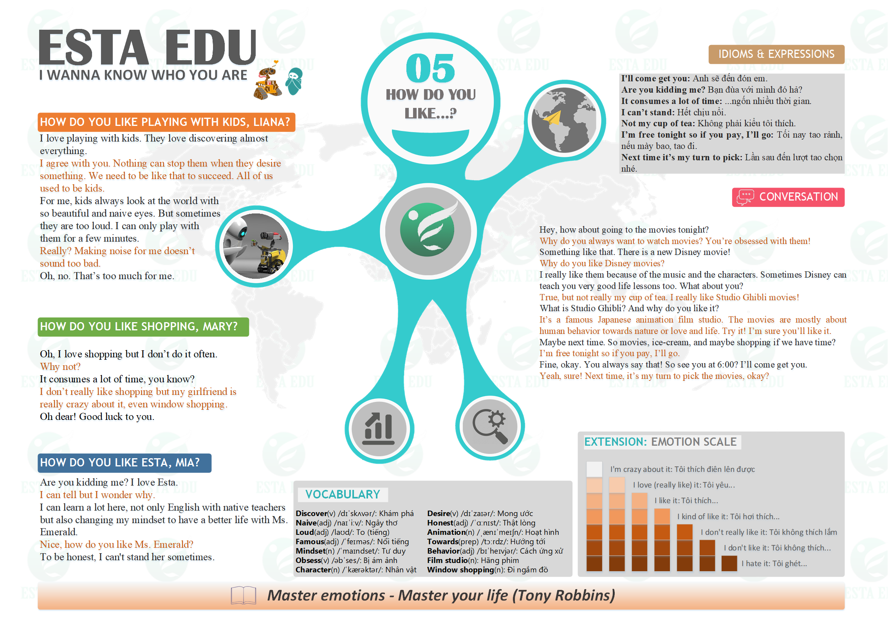
I. ĐOẠN VĂN
1) Tóm tắt
Đoạn văn hỏi về mức độ thích — và câu trả lời luôn là "thang cảm xúc", không phải YES/NO:
- Chơi với trẻ con: mê vì trẻ khám phá mọi thứ, như chính mình ngày xưa; có người chỉ chơi được vài phút vì "trẻ con quá ồn".
- Mua sắm: mê nhưng ít đi vì tốn thời gian; người kia thì "hết chịu nổi" cửa hàng — nhưng bạn gái mê cả window shopping.
- the center: mê tuyệt — vì học cả tiếng Anh với giáo viên bản ngữ lẫn đổi tư duy sống; khen Ms. Emerald rồi đùa "đôi lúc tớ hết chịu nổi."
- Conversation: rủ đi phim tối nay — Disney thì mê vì nhạc và nhân vật, Studio Ghibli "không phải gu" của người kia; người kia đùa "mày bao tiền" → cũng đi; hẹn 6 giờ đến đón.
Điểm chốt: học bảng EMOTION SCALE — từ "crazy about" đến "hate" — đo cảm xúc của mình bằng 7 mức.
2) Khi nào sử dụng?
- Hỏi mức độ thích/không thích một thứ cụ thể: playing with kids, shopping, the center, Ms. Emerald…
- Chỉ cần thay danh từ sau LIKE:
How do you like + N/V-ing…? - Câu trả lời = mô tả cấp độ thích (I really love it / I kind of like it / I can't stand it…), KHÔNG trả lời YES/NO.
- Dùng khi phỏng vấn nhanh bạn bè, đồng nghiệp; rất tự nhiên trong đời thường.
- Chốt cảm xúc bằng 7 mức: crazy about / love / like / kind of like / don't really like / don't like / hate.
3) Bảng cụm từ giao tiếp (IDIOMS & EXPRESSIONS + câu đáng nhớ)
Đọc nhanh như vầy: ⚠️ là lỗi "dịch từ tiếng Việt" hay gặp (gạch = đừng nói) · 💬 là khi nghe ai đó nói cụm này, mình bắt chuyện tiếp bằng câu nào.
| # | Cụm từ | Nghĩa (VI) | Khi nào dùng | Câu mẫu trong bài | ⚠️ Lỗi hay sai | 💬 Đáp lại |
|---|---|---|---|---|---|---|
| 1 | I'll come get you | Anh sẽ đến đón em | Hẹn gặp & chốt hẹn | So see you at 6:00? I'll come get you. | Great, see you at 6! (Ok, 6h gặp nhé!) | |
| 2 | Are you kidding me? | Bạn đùa với mình đó hả? | Nghe tin bất ngờ (thích) | Are you kidding me? I love the center. | No joke, I mean it! (Thật luôn, không đùa đâu!) | |
| 3 | It consumes a lot of time | …ngốn nhiều thời gian | Giải thích vì sao ít đi | Why not? — It consumes a lot of time, you know? | Worth it, though! (Nhưng mà đáng mà!) | |
| 4 | I can't stand | Hết chịu nổi (khó ưa cực độ) | Nói đùa về mối quan tâm | To be honest, I can't stand her sometimes. | She's lovely though, right? (Thế mà cô ấy dễ thương nhỉ) | |
| 5 | Not my cup of tea | Không phải kiểu tôi thích | Chỉnh "không hợp gu" dễ thương | True, but not really my cup of tea. | Fair enough, more for me! (Cũng được, phần tôi nhiều hơn!) | |
| 6 | I'm free tonight so if you pay, I'll go | Tối nay rảnh, mày bao thì đi | Đùa chở đi nếu bạn trả tiền | I'm free tonight so if you pay, I'll go. | Deal, only this time! (Chốt, chỉ lần này thôi!) | |
| 7 | Next time it's my turn to pick | Lần sau đến lượt tao chọn nhé | Hẹn luân phiên nhau | Next time, it's my turn to pick the movies, okay? | Fine, your turn next! (Được, lần sau cậu chọn!) | |
| 8 | I agree with you | Mình đồng ý với bạn | Đồng tình | I agree with you. | Same page then! (Vậy là cùng ý rồi!) | |
| 9 | Good luck to you | Chúc may mắn cho bạn | Chọc vui khi bạn chịu "sự tốn kém" | Oh dear! Good luck to you. | Thanks, I'll need it! (Cảm ơn, tôi cần lắm!) | |
| 10 | Window shopping | Đi ngắm đồ (không mua) | Chia sẻ sở thích | She is really crazy about it, even window shopping. | Fun even without buying! (Không mua vẫn vui mà!) |
4) Từ vựng (Vocabulary)
| Từ | Từ loại / Phiên âm | Nghĩa |
|---|---|---|
| Discover | (v) /dɪˈskʌvər/ | Khám phá |
| Desire | (v) /dɪˈzaɪər/ | Mong ước |
| Naive | (adj) /nɑːˈiːv/ | Ngây thơ |
| Honest | (adj) /ˈɑːnɪst/ | Thật lòng |
| Loud | (adj) /laʊd/ | To (tiếng) |
| Animation | (n) /ˌænɪˈmeɪʃn/ | Hoạt hình |
| Famous | (adj) /ˈfeɪməs/ | Nổi tiếng |
| Towards | (prep) /təˈrɔːdz/ | Hướng tới |
| Mindset | (n) /ˈmaɪndset/ | Tư duy |
| Behavior | (n) /bɪˈheɪvjər/ | Cách ứng xử |
| Obsess | (v) /əbˈses/ | Bị ám ảnh |
| Film studio | (n) | Hãng phim |
| Character | (n) /ˈkærəktər/ | Nhân vật |
| Window shopping | (n) | Đi ngắm đồ |
5) Đoạn hội thoại gốc (Free Talk)
How do you like playing with kids, Liana?
I love playing with kids. They love discovering almost everything.
I agree with you. Nothing can stop them when they desire something. We need to be like that to succeed. All of us used to be kids.
For me, kids always look at the world with so beautiful and naive eyes. But sometimes they are too loud. I can only play with them for a few minutes.
Really? Making noise for me doesn't sound too bad.
Oh, no. That's too much for me.
How do you like shopping, Mary?
Oh, I love shopping but I don't do it often.
Why not?
It consumes a lot of time you know?
I don't really like shopping but my girlfriend is really crazy about it, even window shopping.
Oh dear! Good luck to you.
How do you like the center, Mia?
Are you kidding me? I love the center.
I can tell but I wonder why.
I can learn a lot here, not only English with native teachers but also changing my mindset to have a better life with Ms. Emerald.
Nice, how do you like Ms. Emerald?
To be honest, I can't stand her sometimes.Conversation (tiếp tục):
Hey, how about going to the movies tonight?
Why do you always want to watch movies? You're obsessed with them!
Something like that. There is a new Disney movie!
Why do you like Disney movies?
I really like them because of the music and the characters. Sometimes Disney can teach you very good life lessons too. What about you?
True, but not really my cup of tea. I really like Studio Ghibli movies!
What is Studio Ghibli? And why do you like it?
It's a famous Japanese animation film studio. The movies are mostly about human behavior towards nature or love and life. Try it! I'm sure you'll like it.
Maybe next time. So movies, ice-cream, and maybe shopping if we have time?
I'm free tonight so if you pay, I'll go.
Fine, okay. You always say that! So see you at 6:00? I'll come get you.
Yeah, sure! Next time, it's my turn to pick the movies, okay?II. NGỮ PHÁP
Tổng quan: 5 điểm ngữ pháp trong bài
| Điểm | Tên | Ứng dụng nói |
|---|---|---|
| 1 | Lots of / A lot of (Nhiều…) | Kể số lượng "rất nhiều" |
| 2 | Conditional Type 01 (ĐK loại 1) | "Nếu… thì…" trong giao tiếp hẹn hò |
| 3 | Not only … but also (Không những… mà còn) | Khen/ kể mở rộng ý |
| 4 | S + enjoy(s) + V-ing | Diễn tả sự thích thú khi V-ing |
| 5 | S + be + good at + V-ing | "Giỏi trong việc gì" |
Điểm 1. Lots of / A lot of: lots of + Plural N · a lot of + N (đếm được/ không đếm được)
Cách dùng: Hai anh em "rất nhiều": lots of thân mật, bay bổng; a lot of trung tính, đi được mọi nơi. Cả hai gắn được danh từ đếm được lẫn không đếm được — đừng ghép: a lots of ✗ (chọn một trong hai). Khác much/many: much/many cho câu hỏi & phủ định "lịch sự", lots of là "chuyện thường" đời thường. Mẹo nói: nuốt a lot of thành /ə-lɑ-də/ — nhanh và tự nhiên.
Phản xạ hỏi–đáp:
- ➕ Nói:
Shopping consumes a lot of time.(Mua sắm ngốn nhiều thời gian lắm) - ➖ Phủ định:
I don't have lots of free time.(Tôi chẳng có nhiều thời gian rảnh) - 💬 Đáp lại:
Same here, so busy!(Tôi cũng vậy, bận điếc!)
Ví dụ:
- Ví dụ 1: She has lots of friends. (Cô ấy có rất nhiều bạn bè)
- Ví dụ 2: They have a lot of money. (Họ có rất nhiều tiền đấy)
- Ví dụ 3: I have a lot of homework today. (Hôm nay tôi có nhiều bài tập quá)
- Ví dụ 4: There are lots of people at the party. (Bữa tiệc có rất nhiều người)
- Ví dụ 5: Shopping consumes a lot of time. (Mua sắm ngốn rất nhiều thời gian)
Biến tấu (tự luyện):
- Đổi danh từ:
She has a lot of shoes.(Cô ấy có rất nhiều giày) - Đổi thì (quá khứ):
They had a lot of fun last night.(Tối qua họ vui hết nấc)
Điểm 2. Conditional Type 01: IF + Present Simple, Future Simple
Cách dùng: Điều kiện "có thật trong tương lai": vế if chia hiện tại, vế kết quả mới là will + V — vế if cấm chèn will (if you will pay ✗). Dùng khi hẹn hò, đặt điều kiện vui vui: If you pay, I'll go. Đảo được để nhấn: I'll go if you pick me up. Mẹo nói: vế if nói đều đều, vế will lên giọng — nhịp "điều kiện → kết quả" nghe rõ mồn một.
Phản xạ hỏi–đáp:
- ❓ Hỏi:
If I pay, will you go?(Nếu tôi trả tiền, bạn có đi không?) - ➖ Phủ định:
If it rains, I won't come.(Nếu mưa thì tôi không đi đâu) - 💬 Đáp lại:
Then I'll pay, deal?(Vậy tôi trả tiền, chốt nhé?)
Ví dụ:
- Ví dụ 1: If you go, I'll buy you a book. (Nếu con đi, mẹ sẽ mua cho con một cuốn sách)
- Ví dụ 2: I'll go if you pick me up. (Em sẽ đi nếu anh tới đón em)
- Ví dụ 3: If she asks, I'll tell her the truth. (Nếu cô ấy hỏi, tớ sẽ nói sự thật với cô ấy)
- Ví dụ 4: If she doesn't ask, I'll not say anything. (Nếu cô ấy không hỏi thì tớ sẽ không nói gì đâu)
- Ví dụ 5: If you don't believe, I'll not say anything. (Nếu em không tin, tôi sẽ không nói gì)
Biến tấu (tự luyện):
- Đổi điều kiện:
If you come early, I'll cook dinner.(Nếu bạn tới sớm, tôi nấu tối cho) - Đổi phủ định:
If he doesn't text me, I won't wait.(Nếu anh ấy không nhắn, tôi sẽ không chờ)
Điểm 3. Not only … but also: not only + N/V/Adv but also + N/V/Adv
Cách dùng: Cánh cửa "nâng cấp lời nói": nối hai ý cùng hướng, cùng loại từ (N–N, V–V, adj–adj) — hai vế không cân là câu gãy. Not only có thể dẫn đầu câu và đảo trợ động từ (Not only does she cook…) — nghe sang; đứng giữa câu thì nói bình thường. Khác and: "and" chỉ cộng thêm, "not only…but also" còn nhấn vế sau mới là đỉnh. Mẹo nói: nhấn "not ONLY", hít nhẹ, rồi đấm "but ALSO" — nhịp hai nhịp rõ ràng.
Phản xạ hỏi–đáp:
- ➕ Nói:
He's not only smart but also funny.(Anh ấy không chỉ thông minh mà còn vui tính) - ➖ Phủ định:
It's not only expensive but also boring.(Cái đó vừa đắt vừa chán) - 💬 Đáp lại:
Wow, what a combo!(Ơ, combo ghê vậy!)
Ví dụ:
- Ví dụ 1: Not only Est Tim but also learners like to talk about handsome men. (Không những Est Tim mà các learners đều thích nói về trai đẹp)
- Ví dụ 2: May works not only quickly but also efficiently. (May không những làm việc hiệu quả mà còn rất nhanh nữa)
- Ví dụ 3: I can learn here not only English but also a better mindset. (Ở đây tôi học không chỉ tiếng Anh mà còn tư duy tốt hơn)
- Ví dụ 4: She enjoys not only cooking but also baking. (Cô ấy thích không chỉ nấu ăn mà cả làm bánh)
- Ví dụ 5: We need to be patient not only with kids but also with ourselves. (Cần kiên nhẫn không chỉ với trẻ mà cả với bản thân)
Biến tấu (tự luyện):
- Đổi danh từ:
the center teaches not only English but also life skills.(the center dạy không chỉ tiếng Anh mà còn kỹ năng sống) - Đổi trạng từ:
She sings not only beautifully but also confidently.(Cô ấy hát không chỉ hay mà còn tự tin)
Điểm 4. S + enjoy(s) + V-ing
Cách dùng: enjoy bắt V-ing cứng đầu — enjoy to read ✗. Khác like/love (nối được cả to V lẫn V-ing), enjoy chỉ nhận một đường duy nhất là V-ing. Chủ ngữ ngôi ba (he/she/it) phải chia enjoys. Mẹo nói: nối enjoy + V-ing thành một hơi — enjoy-readin' — trôi xuôi như hát.
Phản xạ hỏi–đáp:
- ❓ Hỏi:
Do you enjoy cooking?(Bạn có thích nấu ăn không?) - ➖ Phủ định:
I don't enjoy doing dishes.(Tôi không thích rửa chén đâu) - 💬 Đáp lại:
Me neither, let's eat out!(Tôi cũng vậy, đi ăn ngoài đi!)
Ví dụ:
- Ví dụ 1: I enjoy learning English. (Tớ yêu học tiếng Anh)
- Ví dụ 2: Emerald enjoys reading Mindset homework. (Emerald khoái đọc bài tập Mindset)
- Ví dụ 3: I enjoy playing with kids every weekend. (Tôi thích chơi với trẻ mỗi cuối tuần)
- Ví dụ 4: My mom enjoys watering plants in the morning. (Mẹ thích tưới cây buổi sáng)
- Ví dụ 5: We enjoy window shopping after work. (Chúng tôi thích đi ngắm đồ sau giờ làm)
Biến tấu (tự luyện):
- Đổi chủ ngữ & V:
He enjoys watching movies at night.(Anh ấy thích xem phim buổi tối) - Đổi thì (quá khứ):
I enjoyed meeting you yesterday.(Hôm qua tôi vui khi gặp bạn)
Điểm 5. S + be + good at + V-ing
Cách dùng: Khen năng lực "chuyên gia": good at + V-ing — at là giới từ nên động từ phía sau phải khoác áo -ing (good at cook ✗). Phủ định khiêm tốn cũng dễ thương: I'm not good at singing, but I enjoy it. Mở rộng sang bad at / terrible at để "chê" chính mình. Mẹo nói: nhấn "good AT" rồi chốt V-ing — good at COOK-ing.
Phản xạ hỏi–đáp:
- ❓ Hỏi:
What are you good at?(Bạn giỏi gì nhất?) - ➖ Phủ định:
I'm not good at singing.(Tôi không giỏi hát đâu) - 💬 Đáp lại:
Practice makes perfect!(Luyện mãi cũng thành tài!)
Ví dụ:
- Ví dụ 1: Mr Ruby is good at taking photos. (Ruby giỏi chụp hình lắm đấy)
- Ví dụ 2: Drajo is good at taking care of children. (Drajo rất giỏi chăm sóc con cái)
- Ví dụ 3: My sister is good at cooking seafood. (Chị tôi giỏi nấu đồ biển)
- Ví dụ 4: I'm good at picking movies for the weekend. (Tôi giỏi chọn phim cho cuối tuần)
- Ví dụ 5: We are good at saving money. (Chúng tôi giỏi để dành tiền)
Biến tấu (tự luyện):
- Đổi kỹ năng:
She's good at remembering names.(Cô ấy giỏi nhớ tên người) - Đổi phủ định + but:
I'm not good at dancing, but I love it.(Tôi không giỏi nhảy, nhưng tôi mê lắm)
★ Extension — EMOTION SCALE (thang cảm xúc 7 mức — dùng cho cả bài)
- I'm crazy about it — Tôi thích điên lên được
- I love it — Tôi yêu…
- I like it — Tôi thích…
- I kind of like it — Tôi hơi thích…
- I don't really like it — Tôi không thích lắm
- I don't like it — Tôi không thích…
- I hate it — Tôi ghét…
"Master emotions - Master your life" — Tony Robbins
III. LUYỆN NÓI (drill)
Echo drill (nói to 3 lần, nhanh hơn mỗi lần)
- How do you like shopping? — I love it, but it consumes a lot of time.
- How do you like the center? — Are you kidding me? I love the center.
- Not really my cup of tea. — Try it! I'm sure you'll like it.
- If you pay, I'll go. So see you at 6:00? I'll come get you.
- Next time, it's my turn to pick the movies, okay?
5 câu hỏi tự luyện (tự đặt + trả lời theo 7 mức cảm xúc)
- How do you like your job? — I really like it because …
- How do you like cooking? — I kind of like it; I only cook …
- How do you like travelling? — I'm crazy about it! I always …
- How do you like getting up early? — I don't really like it, but I have to …
- How do you like your hometown? — I love it; I miss … a lot.
✅ Checkpoint: chọn 5 hoạt động bất kỳ và trả lời theo 5 mức khác nhau trong bảng Emotion Scale — nói đúng cảm xúc thật của bản thân.
06Do you feel like ...?Có muốn / có thấy nếm … không?
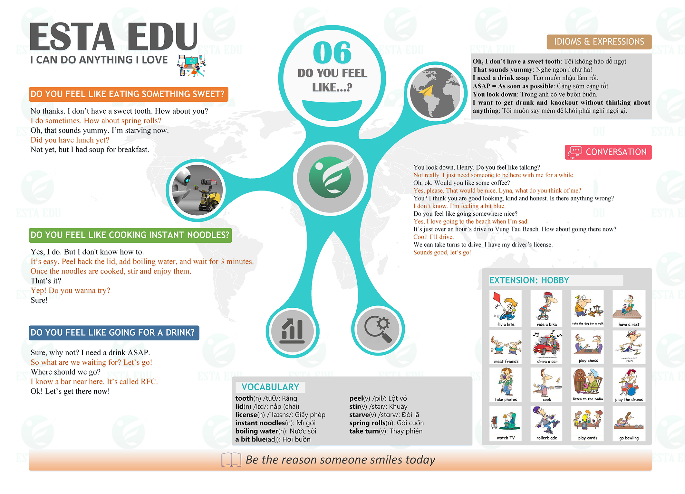
I. ĐOẠN VĂN
1) Tóm tắt
Đoạn văn là câu chào mời vụ lợi nhất tiếng Anh đời thường — "Do you feel like…?":
- Mời ăn ngọt: mình không hảo ngọt (sweet tooth), đổi sang gỏi cuốn — nghe ngon ghê, mình đói lắm rồi, sáng có ăn cháo.
- Mời nấu mì gói: hướng dẫn lột nắp, đổ nước sôi, chờ 3 phút, khuấy và ăn — "Thế thôi à?" — "Ừ! Tự thử đi".
- Mời đi nhậu: "mình cần một ly ASAP" — chọn bar RFC gần nhà, đi ngay.
- Conversation tâm tình hơn: Henry thấy buồn buồn (a bit blue), chỉ cần có ai đó ngồi cạnh; Lyna khen anh "đẹp trai, hiền, thật thà", rủ đi Vũng Tàu — cách đây hơn một tiếng lái, hai người thay phiên nhau cầm lái.
- Điểm chốt: với "Do you feel like…?", ngại ngần = mất cơ hội — trả lời thẳng "Sure, why not?".
2) Khi nào sử dụng?
- Mời rủ làm điều giữa buổi: Do you feel like eating something sweet? / cooking / going for a drink?
- Hỏi nguyện vọng nhẹ nhàng — mềm hơn "Do you want to…?".
- Khi cần để ý tâm trạng người khác: "You look down. Do you feel like talking?"
- Kết hợp câu mời cụ thể lịch sự: "Would you like some coffee?" và câu hỏi ý kiến: "What do you think of me?".
- Câu trả lời chuẩn:
No, thanks / Yes, I do / Sure, why not? / That sounds yummy / Not really.
3) Bảng cụm từ giao tiếp (IDIOMS & EXPRESSIONS + câu đáng nhớ)
Đọc nhanh như vầy: ⚠️ là lỗi "dịch từ tiếng Việt" hay gặp (gạch = đừng nói) · 💬 là khi nghe ai đó nói cụm này, mình bắt chuyện tiếp bằng câu nào.
| # | Cụm từ | Nghĩa (VI) | Khi nào dùng | Câu mẫu trong bài | ⚠️ Lỗi hay sai | 💬 Đáp lại |
|---|---|---|---|---|---|---|
| 1 | I don't have a sweet tooth | Tôi không hảo đồ ngọt | Từ chối ngọt một cách dễ thương | No thanks. I don't have a sweet tooth. | Me neither! (Tớ cũng thế!) | |
| 2 | That sounds yummy | Nghe ngon í chứ hả! | Khen món được mời | Oh, that sounds yummy. I'm starving now. | Then let's get it! (Vậy gọi thôi!) | |
| 3 | I need a drink ASAP | Tao muốn nhậu liền rồi | Nhu nhậu khát với ASAP | Sure, why not? I need a drink ASAP. | Sure, why not? (Được, sao không!) | |
| 4 | ASAP = As soon as possible | Càng sớm càng tốt | Nhấn "ngay bây giờ" | Let's get there ASAP. | Roger, on my way! (Rõ, đang tới đây!) | |
| 5 | You look down | Trông anh có vẻ buồn buồn | Để tâm cảm xúc người khác | You look down, Henry. Do you feel like talking? | Not really, just a bit tired. (Không hẳn, hơi mệt tí thôi) | |
| 6 | I want to get drunk and knockout without thinking about anything | Tao muốn say mèm để không phải nghĩ ngợi gì | Đùa khi rủ nhậu | Yeah, me too. Hahaha. | Yeah, me too! Hahaha. (Ừ, tớ cũng vậy!) | |
| 7 | I'm starving | Mình đói lắm rồi | Nói đang đói cồn cào | Oh, that sounds yummy. I'm starving now. | Me too! Let's eat now! (Tớ cũng vậy, ăn ngay đi!) | |
| 8 | It's just over an hour's drive | Chỉ hơn một tiếng lái xe | Sắp xếp cả chuyến đi | It's just over an hour's drive to Vung Tau Beach. | Cool, I'll drive! (Được, để tớ lái!) | |
| 9 | We can take turns to drive | Mình có thể thay nhau cầm lái | Đề xuất chia công chung | We can take turns to drive. | Sounds good, let's go! (Nghe được, đi thôi!) | |
| 10 | I'm feeling a bit blue | Mình đang hơi buồn | Bày tỏ buồn nhẹ | I don't know. I'm feeling a bit blue. | What's wrong? I'm here. (Sao vậy? Tớ đây nè.) |
4) Từ vựng (Vocabulary)
| Từ | Từ loại / Phiên âm | Nghĩa |
|---|---|---|
| Tooth | (n) /tuːθ/ | Răng |
| Lid | (n) /lɪd/ | Nắp (chai) |
| License | (n) /ˈlaɪsns/ | Giấy phép |
| Instant noodles | (n) | Mì gói |
| Boiling water | (n) | Nước sôi |
| A bit blue | (adj) | Hơi buồn |
| Peel | (v) /piːl/ | Lột vỏ |
| Stir | (v) /stɜːr/ | Khuấy |
| Starve | (v) /stɑːrv/ | Đói lả |
| Spring rolls | (n) | Gỏi cuốn |
| Take turn | (v) | Thay phiên |
Extension (Extension khung hoạt động vui): meet friends (gặp bạn), drive a car (lái xe), play chess (chơi cờ), run (chạy), take photos (chụp ảnh), cook (nấu ăn), listen to the radio (nghe radio), play the drums (chơi trống), watch TV (xem TV), rollerblade (trượt pa tanh), play cards (chơi bài), go bowling (chơi bowling).
5) Đoạn hội thoại gốc (Free Talk)
Do you feel like eating something sweet?
No thanks. I don't have a sweet tooth. How about you?
I do sometimes. How about spring rolls?
Oh, that sounds yummy. I'm starving now.
Did you have lunch yet?
Not yet, but I had soup for breakfast.
Do you feel like cooking instant noodles?
Yes, I do. But I don't know how to.
It's easy. Peel back the lid, add boiling water, and wait for 3 minutes. Once the noodles are cooked, stir and enjoy them.
That's it?
Yep! Do you wanna try?
Sure!
Do you feel like going for a drink?
Sure, why not? I need a drink ASAP.
So what are we waiting for? Let's go!
Where should we go?
I know a bar near here. It's called RFC.
Ok! Let's get there now!Conversation (tiếp tục):
You look down, Henry. Do you feel like talking?
Not really. I just need someone to be here with me for a while.
Oh, ok. Would you like some coffee?
Yes, please. That would be nice. Lyna, what do you think of me?
You? I think you are good looking, kind and honest. Is there anything wrong?
I don't know. I'm feeling a bit blue.
Do you feel like going somewhere nice?
Yeah, I love going to the beach when I'm sad.
It's just over an hour's drive to Vung Tau Beach. How about going there now?
Cool! I'll drive.
We can take turns to drive. I have my driver's license.
Sounds good, let's go!II. NGỮ PHÁP
Tổng quan: 4 điểm ngữ pháp trong bài
| Điểm | Tên | Ứng dụng nói |
|---|---|---|
| 1 | (A/An) + Adj + N (Cụm danh từ) | "a sweet tooth", "an adorable baby" |
| 2 | Some/Any/No + thing/body/one + Adj | Hỏi rõ kiểu "somewhere nice" |
| 3 | Express Our Feelings: I FEEL + ADJ | Điền cảm xúc cho 1 câu |
| 4 | I FEEL … WHEN/BEFORE … (BECAUSE …) | Nói đầy đủ nguyên nhân của cảm xúc |
Điểm 1. (A/An) + Adj + N (Cụm danh từ)
Cách dùng: Tiếng Việt nói "cái ghế cũ", tiếng Anh bắt buộc đảo ngược: (a/an) + Adj + N — an adorable baby, a sweet tooth; tính từ luôn đứng trước danh từ, chen vào là câu nát. A đón âm phụ âm (a cold drink), an đón âm nguyên âm (an adorable baby) — nghe âm đầu, đừng nhìn chữ cái. Số nhiều thì bỏ mạo từ: naughty but lovely kids. Khi nói, nhấn nhẹ vào tính từ — a SWEET tooth — người nghe "nhìn thấy" món đồ trước cả khi biết nó là gì.
Phản xạ hỏi–đáp:
- ➕ Nói:
A cold drink for me, please.(Cho tôi một đồ uống mát nhé) - ➖ Phủ định:
I don't have a sweet tooth.(Tớ không hảo đồ ngọt đâu) - 💬 Đáp lại:
Then spring rolls for you!(Vậy gỏi cuốn cho cậu!)
Ví dụ:
- Ví dụ 1: A sweet tooth. (Hảo ngọt — đi cùng have: I don't have a sweet tooth.)
- Ví dụ 2: An adorable baby. (Một em bé đáng yêu)
- Ví dụ 3: Naughty but lovely kids. (Những đứa trẻ tinh nghịch nhưng dễ thương)
- Ví dụ 4: A cold drink for me, please. (Cho tôi một đồ uống lạnh nhé)
- Ví dụ 5: A nice beach near my house. (Một bãi biển đẹp gần nhà tôi)
Biến tấu (tự luyện):
- Đổi tính từ:
A nice beach near my house.→A quiet beach near my house.(Một bãi biển yên tĩnh gần nhà) - Đổi danh từ:
An adorable baby.→An adorable kitten.(Một em mèo con đáng yêu)
Điểm 2. Some/Any/No + thing/body/one + Adj
Cách dùng: Đại từ không xác định (something, someone, anywhere…) đã "gánh" nghĩa sẵn rồi, nên tính từ phải đuổi theo sau: somewhere nice, anything wrong — người Việt quen đặt "đẹp" trước nên hay nói nice somewhere và nghe rất cụt. Hỏi thì dùng any- (Is there anything wrong?), đưa đề/khao thì dùng some- (Do you want something yummy?). Nhịp nói: ngừng nửa nhịp sau đại từ rồi "thả" tính từ ra — somewhere… nice! — câu tự bung thành hai phần rõ ràng.
Phản xạ hỏi–đáp:
- ❓ Hỏi:
Is there anything wrong?(Có chuyện gì à?) - ➕ Nói:
Do you want something yummy for lunch?(Muốn cái gì ngon ngon cho bữa trưa chứ?) - 💬 Đáp lại:
Let's go somewhere nice!(Đi chỗ nào đẹp đẹp đi!)
Ví dụ:
- Ví dụ 1: Never say: I love sexy someone. → Let's say: I love someone sexy. (Tớ thích những ai gợi cảm)
- Ví dụ 2: Never say: Let's go to nice somewhere. → Let's say: Let's go somewhere nice. (Hãy tới chỗ nào đẹp đẹp)
- Ví dụ 3: Is there anything wrong? (Có chuyện gì à?)
- Ví dụ 4: Do you want something yummy for lunch? (Muốn cái gì ngon ngon cho bữa trưa chứ?)
- Ví dụ 5: I need someone to be here with me for a while. (Tôi chỉ cần có ai đó ngồi đây với mình một lúc)
Biến tấu (tự luyện):
- Đổi tính từ:
Let's go somewhere nice.→Let's go somewhere quiet.(Đi chỗ nào yên yên đi) - Đổi phủ định:
I need someone to talk to.→I have no one to talk to.(Tớ chẳng có ai để tâm sự)
Điểm 3. Express Our Feelings (Bày tỏ cảm xúc): I FEEL + ADJ
Cách dùng: Cảm xúc tiếng Anh đi bằng feel + tính từ, đừng dịch kiểu "tôi là buồn" — mở lời chỉ cần một cụm ngắn: I feel happy / I felt nervous, người nghe tự hỏi "why?" và lúc đó mình mới kéo nguyên nhân (Điểm 4) vào. Dùng thoải mái đủ thì: hiện tại (I feel), quá khứ (I felt), HTHT tiếp diễn (I have been feeling confused). Cản trở: sau feel là tính từ, không phải trạng từ (I feel happily ✗), và đang "buồn buồn" ngay lúc nói thì I'm feeling a bit blue tự nhiên hơn hẳn. Nhịp: nói cụm cảm xúc xuống giọng, chừa một nhịp cho câu "thở".
Phản xạ hỏi–đáp:
- ❓ Hỏi:
How do you feel today?(Hôm nay thấy sao rồi?) - ➕ Nói:
I feel a bit blue today.(Hôm nay mình hơi buồn) - 💬 Đáp lại:
Do you feel like talking?(Có muốn tâm sự không?)
Ví dụ:
- Ví dụ 1: I feel happy. (Tớ cảm thấy hạnh phúc)
- Ví dụ 2: I felt nervous. (Tớ đã cảm thấy hồi hộp í)
- Ví dụ 3: I have been feeling confused. (Tớ đã bối rối lắm)
- Ví dụ 4: I feel a bit blue today. (Hôm nay mình hơi buồn)
- Ví dụ 5: I feel hungry and sleepy right now. (Giờ mình đói và buồn ngủ lắm)
Biến tấu (tự luyện):
- Đổi thì (quá khứ):
I felt nervous before the meeting.(Buổi họp lúc nãy tớ hồi hộp lắm) - Đổi tính từ:
I feel hungry and sleepy right now.→I feel tired and sleepy right now.(Giờ mình mệt và buồn ngủ lắm)
Điểm 4. I FEEL … WHEN / BEFORE …. BECAUSE …
Cách dùng: Công thức 3 tầng cảm xúc → hoàn cảnh (when/before…) → lý do (because…) — một câu, ba nhịp, nối liền như dồn bài. Khi được hỏi cảm xúc, đừng dừng ở I feel happy; thêm when và because là câu sống hẳn lên, nghe "có chuyện" thật. Cản trở: sau when/before phải là mệnh đề (S + V) hoặc V-ing (before seeing her parents), đừng nhét nguyên một câu chia thì thứ hai vào đó. Nhịp: nhấn tính từ đầu và từ cuối của lý do — because… his love — câu dừng đẹp, người nghe nhớ lâu.
Phản xạ hỏi–đáp:
- ❓ Hỏi:
How do you feel when he looks at you?(Cậu thấy sao khi anh ấy nhìn cậu?) - ➕ Nói:
I feel happy when he looks at me because I always can feel his love.(Tớ vui khi anh ấy nhìn tớ vì tớ luôn cảm nhận được tình yêu) - 💬 Đáp lại:
That's so sweet!(Ngọt ngào quá đi!)
Ví dụ:
- Ví dụ 1: I feel happy when he looks at me. (Tôi thấy vui khi anh ấy nhìn tôi)
- Ví dụ 2: I felt nervous before seeing her parents. (Tôi thấy hồi hộp trước khi ra mắt ba mẹ cô ấy)
- Ví dụ 3: I have been feeling confused when she kisses me. (Tôi đã thấy bối rối khi cô ấy hôn tôi)
- Ví dụ 4: I feel happy when he looks at me because I always can feel his love. (Tôi thấy vui khi anh ấy nhìn tôi vì tôi luôn cảm nhận được tình yêu)
- Ví dụ 5: I felt nervous before seeing her parents because they are so strict. (Tôi hồi hộp trước khi gặp ba mẹ cô ấy vì họ nghiêm khắc lắm)
Biến tấu (tự luyện):
- Đổi chủ ngữ:
She feels happy when he looks at her.(Cô ấy vui khi anh ấy nhìn cô ấy) - Đổi lý do:
I felt nervous before the exam because I hadn't reviewed anything.(Tớ hồi hộp trước kỳ thi vì tớ chưa ôn gì cả)
III. LUYỆN NÓI (drill)
Echo drill (nói to 3 lần, nhanh hơn mỗi lần)
- Do you feel like eating something sweet? — No thanks, I don't have a sweet tooth.
- Do you feel like going for a drink? — Sure, why not? I need a drink ASAP.
- You look down. Do you feel like talking? — I'm feeling a bit blue.
- That sounds yummy. I'm starving now.
- We can take turns to drive. Sounds good, let's go!
5 câu hỏi tự luyện (tự đặt cho người thật & trả lời)
- Do you feel like having dinner with me tonight? — Sure, what time?
- Do you feel like watching a movie? — I'd love to, but …
- Do you feel like going to the beach when you're sad? — Yeah, because the sea …
- Do you feel like learning English every day? — Honestly, I … because …
- Do you feel like talking when you're upset? — Not really; I need someone to …
✅ Checkpoint: nói được 3 câu mời thật (ăn / đi chơi / tâm sự) với 3 người thân — và ghi lại phản ứng của họ.
07How much / How many ...?Bao nhiêu…?
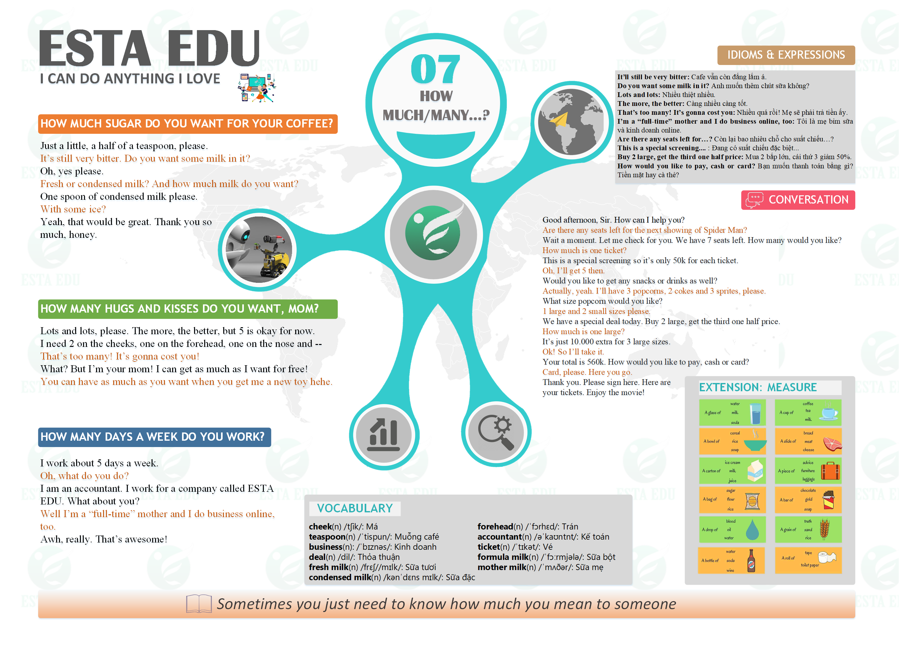
I. ĐOẠN VĂN
1) Tóm tắt
Đoạn văn luyện hỏi và trả lời về số lượng — đường, sữa, ôm hôn, vé xem phim:
- Pha cà phê: hỏi cần bao nhiêu đường — "chỉ một chút, nửa thìa cà phê"; vẫn đắng → thêm sữa tươi hay sữa đặc? một thìa sữa đặc, có đá thì "tuyệt vời".
- Con ôm mẹ: đòi "nhiều thật nhiều, càng nhiều càng tốt" — 5 cái là hơi nhiều "đắt lắm đấy", đổi lại là một món đồ chơi mới.
- Chuyện nghề nghiệp: làm 5 ngày/tuần, nghề kế toán ở trung tâm; đối diện là mẹ "toàn thời gian" kiêm bán hàng online.
- Conversation: đặt vé và bỏng ngô — hỏi còn ghế, vé bao nhiêu tiền (suất đặc biệt 50k), mua 2 size lớn được giảm nửa giá phần thứ ba, tổng 560k — trả thẻ hay tiền mặt?
Điểm chốt: dùng đúng How much cho thứ không đếm được + giá tiền, How many cho thứ đếm được.
2) Khi nào sử dụng?
- Hỏi giá tiền: How much is one ticket? / How much is one large (popcorn)?
- Hỏi lượng không đếm được: How much sugar / milk / money do you want?
- Hỏi số lượng đếm được: How many seats / days a week / hugs and kisses?
- Đặt mua đồ, rạp phim, quán ăn, tiệm tạp hóa — mọi cảnh "cân đo" đời thường.
- Thương lượng, gợi ưu đãi: buy 2 get..., cash or card.
3) Bảng cụm từ giao tiếp (IDIOMS & EXPRESSIONS + câu đáng nhớ)
Đọc nhanh như vầy: ⚠️ là lỗi "dịch từ tiếng Việt" hay gặp (gạch = đừng nói) · 💬 là khi nghe ai đó nói cụm này, mình bắt chuyện tiếp bằng câu nào.
| # | Cụm từ | Nghĩa (VI) | Khi nào dùng | Câu mẫu trong bài | ⚠️ Lỗi hay sai | 💬 Đáp lại |
|---|---|---|---|---|---|---|
| 1 | It's still very bitter (strong) | Vẫn đắng lắm (đậm lắm) | Nhận xét đồ uống, nhờ thêm | It's still very bitter. Do you want some milk in it? | Want some milk in it? (Thêm chút sữa nhé?) | |
| 2 | Do you want some milk in it? | Bạn muốn thêm chút sữa không? | Pha đồ uống cho ai | Do you want some milk in it? — Oh, yes please. | Oh, yes please! (Ừ, cho tớ với!) | |
| 3 | Lots and lots | Nhiều thật nhiều | Trả lời "how many" một cách thích thú | How many hugs…? — Lots and lots, please. | Coming right up! (Đến ngay đây luôn!) | |
| 4 | The more, the better | Càng nhiều càng tốt | Nói về số lượng, mức độ lý tưởng | The more, the better, but 5 is okay for now. | Deal, but 5 is okay! (Chốt, nhưng 5 là đủ!) | |
| 5 | That's too many! It's gonna cost you! | Nhiều quá rồi! Đắt lắm đấy! | Đùa khi ai đó đòi quá nhiều | That's too many! It's gonna cost you! | Fine, I'll buy you a toy! (Ok, đổi cho mẹ đồ chơi!) | |
| 6 | I'm a "full-time" mother | Tôi là mẹ "toàn thời gian" | Giới thiệu công việc ở nhà | Well, I'm a "full-time" mother and I do business online, too. | That's awesome! (Chất quá đấy!) | |
| 7 | Are there any seats left for…? | Còn ghế nào cho… không? | Hỏi vé, đặt chỗ | Are there any seats left for the next showing of Spider Man? | Let me check for you. (Để tôi kiểm tra nhé) | |
| 8 | This is a special screening | Đây là suất chiếu đặc biệt | Nêu lý do giá rẻ | This is a special screening so it's only 50k for each ticket. | Nice, I'll take five! (Vậy cho tôi 5 vé!) | |
| 9 | Buy 2 large, get the third one half price | Mua 2 cái to, cái thứ ba được giảm giá nửa | Đọc ưu đãi, khuyến mãi | We have a special deal today. Buy 2 large, get the third one half price. | Deal, I'll take it! (Chốt, tôi lấy luôn!) | |
| 10 | How would you like to pay, cash or card? | Bạn muốn trả tiền mặt hay thẻ? | Thanh toán | How would you like to pay, cash or card? — Card, please. | Card, please. Here you go. (Thẻ nhé, đây ạ) |
4) Từ vựng (Vocabulary)
| Từ | Từ loại / Phiên âm | Nghĩa |
|---|---|---|
| Cheek | (n) /tʃiːk/ | Má |
| Forehead | (n) /ˈfɔːrhed/ | Trán |
| Teaspoon | (n) /ˈtiːspuːn/ | Thìa cà phê |
| Business deal | (n) /bɪznəs diːl/ | Thương vụ |
| Fresh milk | (n) | Sữa tươi |
| Condensed milk | (n) | Sữa đặc |
| Mother's milk | (n) | Sữa mẹ |
| Formula milk | (n) | Sữa bột / sữa công thức |
| Accountant | (n) /əˈkaʊntənt/ | Kế toán |
| Ticket | (n) /ˈtɪkɪt/ | Vé |
Extension (QUANTIFIER — đơn vị lượng "a … of …"):
- a bowl of soup / noodles (một bát)
- a slice of bread / pizza (một lát)
- a carton of milk / juice (một hộp)
- a piece of paper / cake (một tờ / một miếng)
- a bag of rice / chips (một bịch)
- a bar of chocolate / soap (một thanh)
- a drop of water / milk (một giọt)
- a grain of rice / salt (một hạt)
- a bottle of water / soda (một chai)
- a roll of tissue / paper (một cuộn)
5) Đoạn hội thoại gốc (Free Talk)
How much sugar do you want for your coffee?
Just a little, a half of a teaspoon, please.
It's still very bitter. Do you want some milk in it?
Oh, yes please.
Fresh or condensed milk? And how much milk do you want?
One spoon of condensed milk please.
With some ice?
Yeah, that would be great. Thank you so much, honey.
How many hugs and kisses do you want, Mom?
Lots and lots, please. The more, the better, but 5 is okay for now.
I need 2 on the cheeks, one on the forehead, one on the nose and --
That's too many! It's gonna cost you!
What? But I'm your mom! I can get as much as I want for free!
You can have as much as you want when you get me a new toy hehe.
How many days a week do you work?
I work about 5 days a week.
Oh, what do you do?
I am an accountant. I work for a language center. What about you?
Well I'm a "full-time" mother and I do business online, too.
Awh, really. That's awesome!Conversation (tiếp tục):
Good afternoon, Sir. How can I help you?
Are there any seats left for the next showing of Spider Man?
Wait a moment. Let me check for you. We have 7 seats left. How many would you like?
How much is one ticket?
This is a special screening so it's only 50k for each ticket.
Oh, I'll get 5 then.
Would you like to get any snacks or drinks as well?
Actually, yeah. I'll have 3 popcorns, 2 cokes and 3 sprites, please.
What size popcorn would you like?
1 large and 2 small sizes please.
We have a special deal today. Buy 2 large, get the third one half price.
How much is one large?
It's just 10.000 extra for 3 large sizes.
Ok! So I'll take it.
Your total is 560k. How would you like to pay, cash or card?
Card, please. Here you go.
Thank you. Please sign here. Here are your tickets. Enjoy the movie!II. NGỮ PHÁP
Tổng quan: 6 điểm ngữ pháp trong bài
| Điểm | Tên | Ứng dụng nói |
|---|---|---|
| 1 | The + so sánh hơn, the + so sánh hơn (Càng… càng…) | Nói mức độ lý tưởng: "The more, the better" |
| 2 | N + left (Còn lại) | Hỏi/giải thích chỗ trống, thời gian còn |
| 3 | How much + Be + N (Hỏi giá) | Hỏi giá tiền đồ mua |
| 4 | How much + N không đếm được | Hỏi lượng: đường, sữa, tiền |
| 5 | How many + N số nhiều | Hỏi số lượng đếm được: vé, ghế, ngày |
| 6 | How + far / long / tall / old / big / fast | Nhóm câu hỏi How đo lường |
Điểm 1. The + comparative…, the + comparative…: THE + adj/adv-ER …, THE + adj/adv-ER …
Cách dùng: Bản chất: hai vế cùng mở đầu bằng The — mức độ bên này tăng thì kết quả bên kia tăng theo: The more sugar you add, the sweeter your coffee is. Nói ra khi chốt mức lý tưởng hoặc thuyết phục ai đó tăng thêm, câu ngắn kinh điển là The more, the better. Cản trở: đừng chồng so sánh (more better ✗), và mỗi vế vẫn là câu đầy đủ có S + V chứ không phải cụm lẻ rời. Nhịp nói: hai vế lên giọng – xuống giọng như cân đối xứng, dừng nửa nhịp ở dấu phẩy.
Phản xạ hỏi–đáp:
- ❓ Hỏi:
How many hugs do you want, Mom?(Mẹ muốn bao nhiêu cái ôm?) - ➕ Nói:
The more, the better, but 5 is okay for now.(Càng nhiều càng tốt, nhưng 5 là đủ nhé) - 💬 Đáp lại:
That's too many!(Nhiều quá rồi đấy!)
Ví dụ:
- Ví dụ 1: The more, the better. (Càng nhiều càng tốt)
- Ví dụ 2: The more sugar you add, the sweeter your coffee is. (Càng thêm đường, cà phê của bạn càng ngọt)
- Ví dụ 3: The earlier we leave, the better. (Càng đi sớm càng tốt)
- Ví dụ 4: The more you practice, the better you speak. (Càng luyện nhiều bạn càng nói giỏi)
- Ví dụ 5: The more hugs you give me, the happier I am. (Bạn ôm tôi càng nhiều, tôi càng vui)
Biến tấu (tự luyện):
- Đổi danh từ:
The more books you read, the smarter you get.(Càng đọc nhiều sách bạn càng thông minh) - Đổi trạng từ:
The more you practice, the faster you improve.(Càng luyện nhiều bạn tiến bộ càng nhanh)
Điểm 2. N + left (còn lại): there is/are + N + left · S + have/has + N + left · Any + N + left?
Cách dùng: Bản chất: left là quá khứ phân từ của leave đứng đuôi danh từ — cái còn sót lại sau khi đã đi qua một số: 7 seats left, 2 days left, no milk left. Nói ra khi báo hàng, hỏi còn chỗ, đếm ngược thời gian — chỉ cần gắn left sau N là câu chuẩn. Cản trở: đừng đặt left trước danh từ kiểu tiếng Việt (left seats ✗); câu hỏi dựng bằng Is/Are there any + N + left?. Nhịp: nhấn vào con số đứng trước left — only seven seats left — nghe như nhân viên rạp thật thà.
Phản xạ hỏi–đáp:
- ❓ Hỏi:
Are there any seats left for the next showing?(Còn ghế nào cho suất tới không?) - ➖ Phủ định:
Sorry, there are no seats left.(Tiếc quá, hết ghế rồi ạ) - 💬 Đáp lại:
Then I'll take five!(Vậy cho tôi 5 vé!)
Ví dụ:
- Ví dụ 1: Are there any seats left for the next showing? (Còn ghế nào cho suất tới không?)
- Ví dụ 2: We have 7 seats left. (Chúng tôi còn lại 7 ghế)
- Ví dụ 3: There is only one ticket left. (Chỉ còn lại đúng một vé)
- Ví dụ 4: How much milk is left in the fridge? (Trong tủ lạnh còn lại bao nhiêu sữa?)
- Ví dụ 5: I have 2 days left before my exam. (Tôi còn 2 ngày trước kỳ thi)
Biến tấu (tự luyện):
- Đổi danh từ:
We have 3 hours left before the movie.(Còn 3 tiếng nữa mới tới giờ xem phim) - Đổi loại danh từ:
How many cookies are left in the box?(Trong hộp còn lại bao nhiêu bánh?)
Điểm 3. How much + Be + N (hỏi giá): HOW MUCH + IS/ARE + (the/a/an) N?
Cách dùng: Bản chất: hỏi giá tiền thì How much đi với be, không cần do/does — How much is one ticket?; trả lời gọn It's + giá / They're + giá, đừng lặp lại nguyên câu hỏi. Số ít → is/It's, số nhiều → are/They're; hỏi cả hóa đơn thì How much is the total? Cản trở: đụng How much + danh từ thường (sugar, milk) là hỏi lượng, khác hẳn hỏi giá. Nhịp: ở quầy chỉ vào món rồi hỏi How much is that one? — khỏi cần gọi tên chính xác.
Phản xạ hỏi–đáp:
- ❓ Hỏi:
How much is one ticket?(Một vé bao nhiêu tiền?) - ➕ Nói (báo giá):
It's only 50k for each ticket.(Mỗi vé chỉ 50k thôi ạ) - 💬 Đáp lại:
Oh, I'll take five then.(Vậy tôi lấy 5 vé nhé)
Ví dụ:
- Ví dụ 1: How much is one ticket? (Một vé bao nhiêu tiền?)
- Ví dụ 2: How much is one large popcorn? (Bỏng ngô size to bao nhiêu?)
- Ví dụ 3: How much are the drinks? (Đồ uống bao nhiêu?)
- Ví dụ 4: This is a special screening so it's only 50k for each ticket. (Suất chiếu đặc biệt nên mỗi vé chỉ 50k)
- Ví dụ 5: How much is that new toy? (Món đồ chơi mới đó bao nhiêu?)
Biến tấu (tự luyện):
- Đổi số ít → số nhiều:
How much is one ticket?→How much are these tickets?(Những vé này bao nhiêu tiền?) - Đổi danh từ:
How much is that new toy?→How much is that new phone?(Cái điện thoại mới đó bao nhiêu?)
Điểm 4. How much + Uncountable N: HOW MUCH + (N không đếm được) + do/does + S + want/need?
Cách dùng: Bản chất: thứ không đếm được thì không có số nhiều, không có a/an — hỏi bằng How much + N + do/does + S + want?, trả lời bằng đơn vị đong: a little / a half of a teaspoon / one spoon of…. Nói ra ở cảnh pha chế, nấu nướng, hỏi lương. Cản trở: đụng danh từ đếm được (seats, days, hugs) phải đổi sang How many — đây là lỗi "sống sót" dai dẳng nhất của người Việt. Mẹo: không nhớ đếm được hay không thì gói vào đơn vị — a cup of, a spoon of — câu nào cũng đứng vững.
Phản xạ hỏi–đáp:
- ❓ Hỏi:
How much sugar do you want for your coffee?(Bạn muốn bao nhiêu đường cho cà phê?) - ➖ Phủ định:
Not much — just a little, please.(Không nhiều đâu, một chút thôi) - 💬 Đáp lại:
One spoon of condensed milk, please.(Một thìa sữa đặc nhé)
Ví dụ:
- Ví dụ 1: How much sugar do you want for your coffee? (Bạn muốn bao nhiêu đường cho cà phê?)
- Ví dụ 2: Just a little, a half of a teaspoon, please. (Một chút thôi, nửa thìa cà phê nhé)
- Ví dụ 3: How much milk do you want? — One spoon of condensed milk, please. (Bạn muốn bao nhiêu sữa? — Một thìa sữa đặc)
- Ví dụ 4: How much money do you make every month? (Mỗi tháng bạn kiếm bao nhiêu tiền?)
- Ví dụ 5: There is too much ice in my drink. (Trong ly của tôi nhiều đá quá)
Biến tấu (tự luyện):
- Đổi danh từ:
How much ice do you want?(Bạn muốn bao nhiêu đá?) - Đổi thì:
How much money did you spend last week?(Tuần trước bạn tiêu bao nhiêu tiền?)
Điểm 5. How many + Plural N: HOW MANY + N(s/es) + do/does + S + …?
Cách dùng: Bản chất: danh từ đếm được phải số nhiều đứng ngay sau How many — How many days a week do you work?; trả lời bằng số + đơn vị: about 5 days, 7 seats. Nói ra khi hỏi tần suất, đếm hàng, chốt đơn. Cản trở: mắt quen "bao nhiêu" tiếng Việt khiến người hay viết How much days — nhớ much = không đếm, many = đếm được. Nhịp: trả lời ngắn about + số là đủ tự nhiên, khỏi cần câu dài.
Phản xạ hỏi–đáp:
- ❓ Hỏi:
How many days a week do you work?(Một tuần bạn làm mấy ngày?) - ➕ Nói:
I work about 5 days a week.(Tôi làm chừng 5 ngày một tuần) - 💬 Đáp lại:
Wow, that's a lot!(Trời, nhiều thật đấy!)
Ví dụ:
- Ví dụ 1: How many hugs and kisses do you want, Mom? (Mẹ muốn bao nhiêu cái ôm và nụ hôn?)
- Ví dụ 2: How many would you like? (Bạn muốn mấy (vé) thế?)
- Ví dụ 3: How many days a week do you work? (Một tuần bạn làm mấy ngày?)
- Ví dụ 4: I work about 5 days a week. (Tôi làm chừng 5 ngày một tuần)
- Ví dụ 5: How many popcorns did you buy? (Bạn mua mấy hộp bỏng ngô?)
Biến tấu (tự luyện):
- Đổi danh từ:
How many hours a night do you sleep?(Một đêm bạn ngủ mấy tiếng?) - Đổi chủ ngữ:
How many hugs do your kids want?(Các con mẹ muốn bao nhiêu cái ôm?)
Điểm 6. How + far / long / tall / old / big / fast (Câu hỏi How đo lường)
Cách dùng: Bản chất: How + adj/adv hỏi đúng "chuyên ngành" từng loại — far (khoảng cách), long (thời lượng), tall (chiều cao), old (tuổi), big (kích cỡ), fast (tốc độ); sau đó là be + S hoặc do/does + S + V. Nói ra khi cần số đo thật, hỏi thẳng cho nhanh: How tall? chớ How height?. Cản trở: How long hỏi thời gian bao lâu, How far hỏi quãng đường bao xa — hai chữ này hay bị tráo chỗ. Nhịp: đáp số ngay (about 2 km, 2 hours) tự nhiên hơn cả câu dài.
Phản xạ hỏi–đáp:
- ❓ Hỏi:
How far is the cinema from your house?(Rạp phim cách nhà bạn bao xa?) - ➕ Nói:
About 2 km, ten minutes by bike.(Chừng 2 km, đi xe đạp mười phút) - 💬 Đáp lại:
Not far at all!(Gần lắm chứ đâu xa!)
Ví dụ:
- Ví dụ 1: How far is the cinema from your house? (Rạp phim cách nhà bạn bao xa?)
- Ví dụ 2: How long does the movie last? (Bộ phim kéo dài bao lâu?)
- Ví dụ 3: How tall is your brother? (Anh trai bạn cao bao nhiêu?)
- Ví dụ 4: How old are your kids? (Các con bạn bao nhiêu tuổi?)
- Ví dụ 5: How big is your new house? How fast can you type? (Nhà mới của bạn to cỡ nào? Bạn gõ phím nhanh cỡ nào?)
Biến tấu (tự luyện):
- Đổi từ hỏi:
How tall is your brother?→How old is your brother?(Anh trai bạn bao nhiêu tuổi?) - Đổi thì:
How long did the trip last?(Chuyến đi kéo dài bao lâu?)
III. LUYỆN NÓI (drill)
Echo drill (nói to 3 lần, nhanh hơn mỗi lần)
- How much sugar do you want? — Just a little, a half of a teaspoon, please.
- The more, the better, but 5 is okay for now.
- Are there any seats left for the next showing? — We have 7 seats left.
- How much is one ticket? — It's only 50k for each ticket.
- How would you like to pay, cash or card? — Card, please.
5 câu hỏi tự luyện (tự hỏi + trả lời)
- How much milk do you drink every day? — I drink … of milk a day.
- How many hours do you sleep a night? — I sleep about … hours.
- How much is your phone? — It's about …
- How many people are there in your team? — There are … people.
- How many days are left until your next holiday? — There are … days left.
✅ Checkpoint: đi siêu thị / rạp phim, tự nói thầm 5 câu How much / How many cho 5 món thật quanh mình — và trả lời luôn (số lượng + đơn vị).
08What would you like to ...?Bạn muốn… gì không?
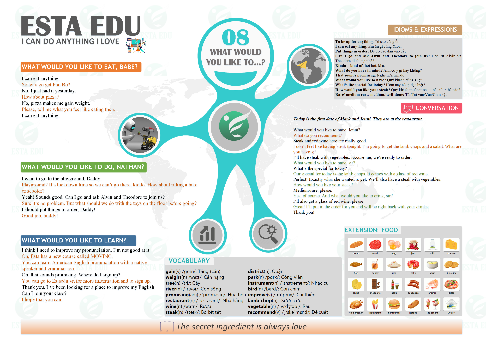
I. ĐOẠN VĂN
1) Tóm tắt
Đoạn văn là "đi kén" theo cách lịch sự — "What would you like to…?":
- Chọn món ăn với người yêu: "Em ăn gì cũng được" — nhưng phở thì ăn hôm qua rồi, pizza thì tăng cân; cuối vẫn phải "please, tell me what you feel like eating".
- Bố con đi chơi: tụi nhỏ muốn ra công viên — nhưng đang lockdown → gợi ý đi xe đạp/scooter; trước khi đi phải dọn đồ chơi ra khỏi sàn ("put things in order") — "Good job, buddy!"
- Vấn đề học tập: cần cải thiện phát âm → the center có khóa phát âm: chuẩn Mỹ + ngữ pháp; đăng ký tại trung tâm — "I've been looking for a place to improve my English."
- Conversation: buổi hẹn đầu tiên của Mark & Jenni ở nhà hàng — recommend steak + red wine; cô chọn sườn cừu + salad; bò nấu medium-rare; món đặc biệt hôm nay đúng là món em muốn gọi.
Điểm chốt: "Would you like…" là câu hỏi lịch sự nhất để hỏi ý muốn — từ rủ đề với người yêu, cha con, đến gọi món trong nhà hàng.
2) Khi nào sử dụng?
- Đưa đề, hỏi ý muốn lịch sự: What would you like to eat / do / learn / have?
- Ở nhà hàng: hỏi khách — What would you like to have? / How would you like your steak?
- Xin phép/rủ ai đó: Can I go and ask Alvin and Theodore to join us?
- Hỏi ý tưởng người khác đang nghĩ: What do you have in mind?
- Giới thiệu khóa học/đề xuất: That sounds promising! Where do I sign up?
3) Bảng cụm từ giao tiếp (IDIOMS & EXPRESSIONS + câu đáng nhớ)
Đọc nhanh như vầy: ⚠️ là lỗi "dịch từ tiếng Việt" hay gặp (gạch = đừng nói) · 💬 là khi nghe ai đó nói cụm này, mình bắt chuyện tiếp bằng câu nào.
| # | Cụm từ | Nghĩa (VI) | Khi nào dùng | Câu mẫu trong bài | ⚠️ Lỗi hay sai | 💬 Đáp lại |
|---|---|---|---|---|---|---|
| 1 | To be up for anything | Tớ sao cũng ổn | Đáp "would you like…?" thẳng thắn | What would you like to do? — I'm up for anything. | Then let's do it all! (Vậy chơi hết cả list!) | |
| 2 | I can eat anything | Em ăn gì cũng được | Trả lời chọn món dễ chịu | What would you like to eat, babe? — I can eat anything. | Then I'll pick for you! (Vậy để tôi chọn!) | |
| 3 | Put things in order | Để đồ đạc đâu vào đấy | Dặn dò/khuyên dọn dẹp | I should put things in order, Daddy! | Good job, buddy! (Giỏi lắm em trai!) | |
| 4 | Can I go and ask … to join us? | Con rủ … đi cùng nhé? | Xin phép rủ bạn cùng chơi | Can I go and ask Alvin and Theodore to join us? | Sure, no problem! (Ừ, không sao cả!) | |
| 5 | Kinda = kind of | Hơi hơi / khá là | Làm câu nói mềm lại (informal) | It's kinda hard. = It's kind of hard. | Need a hand? (Cần tớ giúp không?) | |
| 6 | What do you have in mind? | Anh có ý gì hay không? | Hỏi kế hoạch/ý tưởng của đối phương | What do you have in mind? | How about a bike ride? (Đi xe đạp thì sao?) | |
| 7 | That sounds promising! | Nghe hứa hẹn đấy! | Bày tỏ hứng thú khi nghe giới thiệu | Oh, that sounds promising. Where do I sign up? | Where do I sign up? (Đăng ký ở đâu thế?) | |
| 8 | What would you like to have? | Quý khách muốn dùng gì ạ? | Nhân viên hỏi khách gọi món | What would you like to have, sir? | I'll get the lamb chops. (Cho tôi sườn cừu nhé) | |
| 9 | What's the special for today? | Hôm nay có món gì đặc biệt? | Hỏi món đặc sản hôm nay | The special for today is the lamb chops. | It's the lamb chops. (Hôm nay là sườn cừu ạ) | |
| 10 | How would you like your steak? | Bạn muốn món bò nấu như thế nào? | Hỏi mức độ chín của món thịt | Medium-rare, please. | Medium-rare, please! (Tái vừa nhé ạ!) | |
| 11 | Rare / medium-rare / medium / well-done | Tái / tái vừa / vừa / chín kỹ | Chọn mức chín khi đặt món | Medium-rare, please. | One medium-rare, coming up! (Một phần tái vừa nhé!) |
4) Từ vựng (Vocabulary)
| Từ | Từ loại / Phiên âm | Nghĩa |
|---|---|---|
| Gain (weight) | (v) /geɪn/ /weɪt/ | Tăng (cân) |
| Weight | (n) /weɪt/ | Cân nặng |
| Tree | (n) /triː/ | Cây |
| River | (n) /ˈrɪvər/ | Con sông |
| Promising | (adj) /ˈprɑːməsɪŋ/ | Hứa hẹn |
| Restaurant | (n) /ˈrestrɑːnt/ | Nhà hàng |
| Wine | (n) /waɪn/ | Rượu (vang) |
| Steak | (n) /steɪk/ | Bò bít tết |
| District | (n) /ˈdɪstrɪkt/ | Quận |
| Park | (n) /pɑːrk/ | Công viên |
| Instrument | (n) /ˈɪnstrəmənt/ | Nhạc cụ |
| Bird | (n) /bɜːrd/ | Con chim |
| Improve | (v) /ɪmˈpruːv/ | Cải thiện |
| Lamb chop | (n) | Sườn cừu |
| Vegetable | (n) /ˈvedʒtəbl/ | Rau |
| Recommend | (v) /ˈrekəmend/ | Đề xuất, gợi ý |
Extension (FOOD — đồ ăn): bread (bánh mì), meat (thịt), egg (trứng), jam (mứt), milk (sữa), cheese (phô mai), fish (cá), honey (mật ong), rice (cơm), cake (bánh), soup (súp), biscuits (bánh quy), chips (khoai tây giòn), chocolate (sô-cô-la), coke (coca), sausages (xúc xích), shrimp (tôm), pizza (pizza), fried chicken (gà rán), fried potato (khoai tây chiên), hamburger (hamburger), hotdog (bánh mì kẹp xúc xích), ice-cream (kem), yogurt (sữa chua).
5) Đoạn hội thoại gốc (Free Talk)
What would you like to eat, babe?
I can eat anything.
So let's go get Pho Bo?
No, I just had it yesterday.
How about pizza?
No, pizza makes me gain weight.
Please, tell me what you feel like eating then.
I can eat anything.
What would you like to do, Nathan?
I want to go to the playground, Daddy.
Playground? It's lockdown time so we can't go there, kiddo. How about riding a bike or scooter?
Yeah! Sounds good. Can I go and ask Alvin and Theodore to join us?
Sure it's no problem. But what should we do with the toys on the floor before going?
I should put things in order, Daddy!
Good job, buddy!
What would you like to learn?
I think I need to improve my pronunciation. I'm not good at it.
Oh, the center has a new course called MOVING. You can learn American English pronunciation with a native speaker and grammar too.
Oh, that sounds promising. Where do I sign up?
You can go to the centeredu.vn for more information and to sign up.
Thank you. I've been looking for a place to improve my English. Can I join your class?
I hope that you can.Conversation (tiếp tục):
Today is the first date of Mark and Jenni. They are at the restaurant.
What would you like to have, Jenni?
What do you recommend?
Steak and red wine here are really good.
I don't feel like having steak tonight. I'm going to get the lamb chops and a salad. What are you having?
I'll have steak with vegetables. Excuse me, we're ready to order.
What would you like to have, sir?
What's the special for today?
Our special for today is the lamb chops. It comes with a glass of red wine.
Perfect! Exactly what she wanted to get. We'll also have a steak with vegetables.
How would you like your steak?
Medium-rare, please.
Yes, of course. And what would you like to drink, sir?
I'll also get a glass of red wine, please.
Great! I'll put in the order for you and will be right back with your drinks.
Thank you!II. NGỮ PHÁP
Tổng quan: 4 điểm ngữ pháp trong bài
| Điểm | Tên | Ứng dụng nói |
|---|---|---|
| 1 | Let / Let's (Đề nghị, cho phép) | "Để tôi yên" / "Nói chuyện nào" |
| 2 | Linking Verbs + Adj (Động từ nối + tính từ) | Nhận xét: It looks great! |
| 3 | Present Perfect (Hiện tại hoàn thành) | "Tôi tìm em đã lâu lắm rồi" |
| 4 | Present Perfect Continuous (HTHT tiếp diễn) | "Chúng tôi dạy ở the center gần 3 năm nay" |
Điểm 1. Let / Let's: LET + O + V · LET'S (= Let us) + V
Cách dùng: Bản chất: Let + O + V nguyên mẫu — let là "cho phép tự do", sau nó không bao giờ có to hay -ing: Let her go, đừng nói Let her to go / Let her going. Let's = let us — rủ cả hai cùng làm: Let's go get Pho Bo tonight. Nói ra khi rủ nhẹ, cho phép, hoặc "buông tha": Let me be. Cản trở: dễ lẫn với allow — allow mới cần to (allow her to go). Nhịp: Let's… nói dồn, kéo nhẹ lên cuối câu như lời mời — Let's taaalk.
Phản xạ hỏi–đáp:
- ❓ Hỏi:
Can I go and ask Alvin and Theodore to join us?(Con rủ Alvin với Theodore đi cùng nhé?) - ➕ Nói:
Let's go get Pho Bo tonight.(Tối nay mình đi ăn phở bò nào) - 💬 Đáp lại:
Sure, no problem!(Ừ, không sao cả!)
Ví dụ:
- Ví dụ 1: Let me be. (Để tôi yên)
- Ví dụ 2: Let him say something. (Để anh ấy nói đôi lời)
- Ví dụ 3: Let's talk. (Nói chuyện nào)
- Ví dụ 4: Let's go get Pho Bo tonight. (Tối nay mình đi ăn phở bò nào)
- Ví dụ 5: Let her go. — never say "Let her to go / going". (Để cô ấy đi nhé)
Biến tấu (tự luyện):
- Đổi chủ ngữ:
Let him say something.(Để anh ấy nói đôi lời) - Lịch sự hơn:
Let's talk.→Shall we talk?(Mình nói chuyện nhé?)
Điểm 2. Linking Verbs + Adj: S + SOUND / TASTE / SMELL / LOOK / SEEM / BE + adj
Cách dùng: Bản chất: sound/taste/smell/look/seem/be là cây cầu cảm nhận — nối chủ ngữ với tính từ chứ không diễn tả hành động, nên sau nó cấm trạng từ: It looks great ✔, It looks greatly ✗. Nói ra khi nhận xét nhanh: món ăn, âm nhạc, kế hoạch, người vừa gặp. Cản trở: look nghĩa "trông có vẻ" (It looks great) khác look at — hành động nhìn, lúc đó mới dùng trạng từ (look at me carefully). Nhịp: dồn hết cảm nhận vào tính từ cuối — It sounds SWEET — người nghe "nếm" được luôn.
Phản xạ hỏi–đáp:
- ❓ Hỏi:
What do you think of me?(Anh thấy em thế nào?) - ➕ Nói:
He sounds sweet.(Nghe anh ấy ngọt ngào thật đấy) - 💬 Đáp lại:
Oh, that sounds promising!(Ôi, nghe hứa hẹn ghê!)
Ví dụ:
- Ví dụ 1: He sounds sweet. (Anh ấy thật ngọt ngào)
- Ví dụ 2: It looks great! (Trông ngon lành đấy)
- Ví dụ 3: They seem funny. (Họ có vẻ "bẩn bựa")
- Ví dụ 4: Luna looks "scary". (Trồng Luna hình sự quá)
- Ví dụ 5: We are so happy. (Tụi tớ vui lắm)
Biến tấu (tự luyện):
- Đổi linking verb:
It looks great!→It smells great!(Ngửi thấy thơm phức đấy) - Đổi thì (quá khứ):
It looked great last night.(Tối qua trông nó ngon lành lắm)
Điểm 3. Present Perfect Tense: HAVE/HAS + V3/Vp.p
Cách dùng: Bản chất: nhìn về kết quả đến tận bây giờ, không quan tâm đúng lúc nào — I've been looking for you for ages. Dấu hiệu chắc chắn: just / already / yet, since + mốc (since 2015), for + khoảng (for 2 months). Nói ra khi báo thành quả (We have just done topic 7) hay hỏi tình trạng (Have you signed up yet?). Cản trở: có mốc thời gian xác định (yesterday, in 2015) thì cấm HTHT — phải về quá khứ đơn: I have seen him yesterday ✗. Nhịp: yet thường chốt câu hỏi/phủ định, already đứng giữa câu khẳng định.
Phản xạ hỏi–đáp:
- ❓ Hỏi:
Have you signed up for the MOVING course yet?(Bạn đăng ký khóa MOVING chưa?) - ➕ Nói:
We have just done topic 7 of B-Runner.(Chúng tôi vừa học xong topic 7 của B-Runner) - 💬 Đáp lại:
Yes, signed up yesterday!(Rồi, đăng ký hôm qua rồi!)
Ví dụ:
- Ví dụ 1: She has been here for a while. (Cô ấy ở đây được một lúc rồi)
- Ví dụ 2: We have known him since 2015. (Chúng tôi biết anh ấy từ năm 2015)
- Ví dụ 3: We have just done topic 7 of B-Runner. (Chúng tôi vừa học xong topic 7 của B-Runner)
- Ví dụ 4: I've been looking for you for ages. (Tôi tìm em đã lâu lắm rồi)
- Ví dụ 5: Have you signed up for the MOVING course yet? (Bạn đã đăng ký khóa MOVING chưa?)
Biến tấu (tự luyện):
- Đổi chủ ngữ:
He has been here for an hour.(Anh ấy ở đây được một tiếng rồi) - Đổi mốc thời gian:
We have known him since high school.(Bọn tớ quen anh ấy từ hồi cấp 3)
Điểm 4. Present Perfect Continuous: HAVE/HAS + BEEN + V-ing
Cách dùng: Bản chất: HTHT mang thêm been + V-ing — nhấn quá trình còn chạy, chưa dứt: I've been learning English every day this month. Nói ra khi kể sự kiên trì hay than phiền: Ms has been talking for 1 hour (mỏi tai thật). Cản trở: HTHT thường (have done) nói kết quả, dạng này nói hành trình — đổi giữa hai cái là đổi cảm giác cả câu; for/since dùng y như nhau. Nhịp: dồn vế I've been… rồi thả vế cuối — …every day this month — nghe rất kể chuyện.
Phản xạ hỏi–đáp:
- ❓ Hỏi:
Have you been waiting long?(Anh chờ lâu chưa ạ?) - ➕ Nói:
We've been teaching in the center for almost 3 years.(Chúng tôi dạy ở the center gần 3 năm nay) - 💬 Đáp lại:
Wow, you're so patient!(Trời, kiên nhẫn ghê luôn!)
Ví dụ:
- Ví dụ 1: I've been looking for you for ages. (Tôi tìm em đã lâu lắm rồi)
- Ví dụ 2: We've been teaching in the center for almost 3 years. (Chúng tôi dạy ở the center gần 3 năm nay)
- Ví dụ 3: Ms has been talking for 1 hour. (Ui, Ms nói suốt 1 tiếng đồng hồ rồi đấy)
- Ví dụ 4: I've been learning English every day this month. (Tháng này tôi ngày nào cũng học tiếng Anh)
- Ví dụ 5: He has been waiting for his food since 7 p.m. (Anh ấy chờ món từ 7 giờ tối)
Biến tấu (tự luyện):
- Đổi sang HTHT thường (nói kết quả):
I've learned 200 new words this month.(Tháng này tôi học được 200 từ mới) - Đổi chủ ngữ:
She has been waiting for the bus since 6 p.m.(Cô ấy chờ xe buýt từ 6 giờ tối)
III. LUYỆN NÓI (drill)
Echo drill (nói to 3 lần, nhanh hơn mỗi lần)
- What would you like to eat, babe? — I can eat anything.
- What do you recommend? — Steak and red wine here are really good.
- What's the special for today? — It's the lamb chops.
- How would you like your steak? — Medium-rare, please.
- That sounds promising. Where do I sign up?
5 câu hỏi tự luyện (tự hỏi + trả lời)
- What would you like to eat right now? — I feel like … tonight.
- What would you like to do this weekend? — I'm up for anything. Maybe …
- What would you like to learn next year? — I need to improve … so …
- What would you like to have at a restaurant — a steak or lamb chops? — I'd like …, cooked …
- What would you like to change about your English? — I've been trying to … for …
✅ Checkpoint: đi nhà hàng/quán thật, tự đặt món bằng 5 câu "What would you like…?" với mình và 5 câu trả lời — từ món chính, mức chín, đồ uống đến thanh toán. Ghi âm lại.
09What kind of ...?Bạn thích loại… nào?
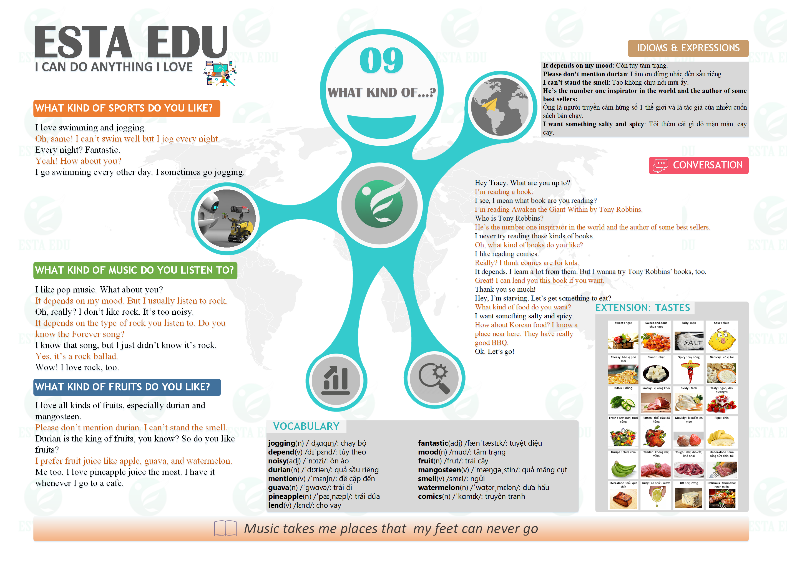
I. ĐOẠN VĂN
1) Tóm tắt
Đoạn văn dùng "What kind of…?" để đào sâu sở thích — thể thao, nhạc, quả, sách, đồ ăn:
- Thể thao: mê bơi + chạy bộ; một người bơi kém nhưng chạy bộ mỗi tối, người kia bơi cách ngày.
- Nhạc: mê pop; người kia nghe tùy tâm trạng, thường là rock — "rock ồn ào mà!" — nhưng bản Forever hóa ra là rock ballad, nghe xong mê luôn.
- Quả: mê hết mọi loại quả, đặc biệt sầu riêng (vua của các loại quả) và mãng cầu; người kia "làm ơn đừng nhắc sầu riêng" — chịu không nổi mùi — chỉ thích nước ép: táo, ổi, dưa hấu, dứa.
- Conversation: đang đọc sách gì? — Awaken the Giant Within của Tony Robbins, "người truyền cảm hứng số 1 thế giới"; tớ chỉ mê truyện tranh → mượn sách thử; đói bụng → thèm gì đó mặn mặn cay cay → đi BBQ Hàn.
Điểm chốt: "What kind of…?" đào thẳng vào gu cá nhân — và cuộc trò chuyện dừng đúng ở gu người nghe thích.
2) Khi nào sử dụng?
- Hỏi loại/gu cụ thể: What kind of sports / music / fruits / books / food do you like?
- Khi muốn tìm hiểu sâu hơn về sở thích người đối diện (không chỉ "do you like…?").
- Trả lời bằng nguyên tắc: mê gì, tùy tâm trạng gì, ghét mùi/taste gì.
- Dùng cho cả đồ vật (kind of book), đồ ăn (kind of food), hoạt động (kind of sports).
3) Bảng cụm từ giao tiếp (IDIOMS & EXPRESSIONS + câu đáng nhớ)
Đọc nhanh như vầy: ⚠️ là lỗi "dịch từ tiếng Việt" hay gặp (gạch = đừng nói) · 💬 là khi nghe ai đó nói cụm này, mình bắt chuyện tiếp bằng câu nào.
| # | Cụm từ | Nghĩa (VI) | Khi nào dùng | Câu mẫu trong bài | ⚠️ Lỗi hay sai | 💬 Đáp lại |
|---|---|---|---|---|---|---|
| 1 | It depends on my mood | Còn tùy tâm trạng | Trả lời "gu" của mình một cách mở | It depends on my mood. But I usually listen to rock. | So what's today's mood? (Vậy hôm nay mood gì?) | |
| 2 | Please don't mention durian! | Làm ơn đừng nhắc đến sầu riêng! | Chặn chủ đề mình ghét | Please don't mention durian. I can't stand the smell. | Oops, my bad! (Ui, lỗi tớ đây!) | |
| 3 | I can't stand the smell! | Tao chịu không nổi mùi ấy! | Bày tỏ khó chịu rất mạnh | I can't stand the smell. | Same, let's skip it! (Tớ cũng vậy, bỏ qua đi!) | |
| 4 | He's the number one inspirator in the world and the author of some best sellers | Ông là người truyền cảm hứng số 1 thế giới, tác giả nhiều cuốn sách bán chạy | Giới thiệu tác giả/giá trị | I'm reading Awaken the Giant Within by Tony Robbins. | Wow, I wanna read it! (Trời, tớ muốn đọc quá!) | |
| 5 | I want something salty and spicy | Tôi thèm cái gì đó mặn mặn, cay cay | Nói khẩu vị khi chọn đồ ăn | What kind of food do you want? — I want something salty and spicy. | How about Korean BBQ? (BBQ Hàn thì sao?) |
4) Từ vựng (Vocabulary)
| Từ | Từ loại / Phiên âm | Nghĩa |
|---|---|---|
| Jogging | (n) /ˈdʒɑːɡɪŋ/ | Chạy bộ |
| Depend | (v) /dɪˈpend/ | Tùy theo |
| Noisy | (adj) /ˈnɔɪzi/ | Ồn ào |
| Durian | (n) /ˈdʊəriən/ | Quả sầu riêng |
| Mention | (v) /ˈmenʃn/ | Đề cập đến |
| Guava | (n) /ˈɡwɑːvə/ | Trái ổi |
| Pineapple | (n) /ˈpaɪnæpl/ | Trái dứa |
| Lend | (v) /lend/ | Cho mượn |
| Fantastic | (adj) /fænˈtæstɪk/ | Tuyệt diệu |
| Mood | (n) /muːd/ | Tâm trạng |
| Fruit | (n) /fruːt/ | Trái cây |
| Mangosteen | (n) /ˈmæŋɡəstiːn/ | Quả mãng cầu |
| Smell | (v) /smel/ | Ngửi; mùi |
| Watermelon | (n) /ˈwɔːtərmelən/ | Dưa hấu |
| Comics | (n) /ˈkɑːmɪks/ | Truyện tranh |
Extension (TASTE & FOOD CONDITION — vị và tình trạng đồ ăn):
- Hương vị: Bitter (đắng) · Smoky (xông khói) · Sickly (tanh) · Tasty (ngon, đúng vị) · Juicy (nhiều nước) · Delicious (thơm ngon)
- Tình trạng: Fresh (tươi mới) · Rotten (thối rữa, hỏng) · Mouldy (mốc, mọi) · Ripe (chín) · Unripe (chưa chín) · Off (ôi/hỏng — sữa, bơ)
- Độ chín thịt: Tender (mềm, không dai) · Tough (dai, khó nhai) · Under-done (tái, nửa sống) · Over-done (nấu quá chín)
5) Đoạn hội thoại gốc (Free Talk)
What kind of sports do you like?
I love swimming and jogging.
Oh, same! I can't swim well but I jog every night.
Every night? Fantastic.
Yeah! How about you?
I go swimming every other day. I sometimes go jogging.
What kind of music do you listen to?
I like pop music. What about you?
It depends on my mood. But I usually listen to rock.
Oh, really? I don't like rock. It's too noisy.
It depends on the type of rock you listen to. Do you know the Forever song?
I know that song, but I just didn't know it's rock.
Yes, it's a rock ballad.
Wow! I love rock, too.
What kind of fruits do you like?
I love all kinds of fruits, especially durian and mangosteen.
Please don't mention durian. I can't stand the smell.
Durian is the king of fruits, you know? So do you like fruits?
I prefer fruit juice like apple, guava, and watermelon.
Me too. I love pineapple juice the most. I have it whenever I go to a cafe.Conversation (tiếp tục):
Hey Tracy. What are you up to?
I'm reading a book.
I see, I mean what book are you reading.
I'm reading Awaken the Giant Within by Tony Robbins.
Who is Tony Robbins?
He's the number one inspirator in the world and the author of some best sellers.
I never try reading those kinds of books.
Oh, what kind of book do you like?
I like reading comics.
Really? I think comics are for kids.
It depends. I learn a lot from them. But I wanna try Tony Robbins' books, too.
Great! I can lend you this book if you want.
Thank you so much! Hey, I'm starving. Let's go get something to eat.
What kind of food do you want?
I want something salty and spicy.
How about Korean food? I know a place near here. They have really good BBQ.
Ok. Let's go!II. NGỮ PHÁP
Tổng quan: 4 điểm ngữ pháp trong bài
| Điểm | Tên | Ứng dụng nói |
|---|---|---|
| 1 | Try + to V / V-ing (Cố gắng vs Thử) | Nói nỗ lực vs thử nghiệm |
| 2 | Can't stand / stop + V-ing/N (Chịu không nổi / không nén được) | Bày tỏ khó chịu, kích thích |
| 3 | GO + V-ing (Đi làm gì) | Rủ và kể thói quen đi chơi |
| 4 | PREFER (Thích hơn) | So gu, chọn lựa giữa 2 thứ |
Điểm 1. Try: TRY + to V (cố gắng làm gì) · TRY + V-ing / N (thử làm gì đó)
Cách dùng: Bản chất: try to V = nỗ lực (có khó khăn, cần quyết tâm — try to jog every night); try V-ing/N = thử nghiệm (làm xem sao, cho biết — try listening to rock ballads). Nói ra khi kể nỗ lực của mình hoặc rủ ai thử cái mới. Cản trở: đổi to/V-ing là đổi cả nghĩa — I tried to open the door (cố mà không nổi) khác I tried opening the door (thử xem có mở được không). Nhịp: rủ ai thì dùng try + N (try Tony Robbins' books) — ngắn, nhẹ, không sức ép.
Phản xạ hỏi–đáp:
- ❓ Hỏi:
Have you tried listening to rock ballads?(Bạn đã thử nghe rock ballad chưa?) - ➕ Nói:
I try to speak English with my kids every day.(Tôi cố gắng nói tiếng Anh với các con mỗi ngày) - 💬 Đáp lại:
Sure, I'll give it a try!(Ừ, để tớ thử xem sao!)
Ví dụ:
- Ví dụ 1: I try to speak English with my kids every day. (Tôi cố gắng nói tiếng Anh với các con mỗi ngày)
- Ví dụ 2: I try learning English one more time. (Tôi thử học tiếng Anh thêm 1 lần nữa)
- Ví dụ 3: I never try reading those kinds of books. (Tôi chưa bao giờ thử đọc thể loại sách đó)
- Ví dụ 4: Try listening to rock ballads — it's not always noisy. (Thử nghe rock ballad xem — không phải rock nào cũng ồn đâu)
- Ví dụ 5: I try to jog every night, even when it rains. (Tôi cố gắng chạy bộ mỗi tối, kể cả khi trời mưa)
Biến tấu (tự luyện):
- Đổi to V → V-ing:
I try speaking English with strangers sometimes.(Thi thoảng tớ thử nói tiếng Anh với người lạ) - Đổi danh từ:
Try reading comics before bed.(Thử đọc truyện tranh trước khi ngủ xem)
Điểm 2. Can't + stand / stop + V-ing / N: "Không thể chịu được… ai/điều gì"
Cách dùng: Bản chất: hai cụm cùng khuôn can't + stand/stop + V-ing/N nhưng chiều cảm xúc ngược nhau — stand = ghét đến chịu không nổi, stop = mê đến không buông được. Sau stand/stop có thể là danh từ trần: can't stand the smell. Nói ra khi bày tỏ cảm xúc mạnh, đừng phí cho chuyện vặt vãnh. Cản trở: đừng chen giới từ (can't stand with the smell ✗ — stand + O thẳng), và đừng nhầm stand (chịu đựng) với stand (đứng) — ngữ cảnh quyết định. Nhịp: dồn sức vào can't STAND, kéo dài chữ "sta-and" — giọng cáu thật mới thật.
Phản xạ hỏi–đáp:
- ❓ Hỏi:
What kind of fruit can't you stand?(Bạn chịu không nổi loại quả nào?) - ➕ Nói:
I can't stand the smell of durian.(Tớ chịu không nổi mùi sầu riêng) - 💬 Đáp lại:
Same! Don't mention it!(Tớ cũng vậy, đừng nhắc nữa!)
Ví dụ:
- Ví dụ 1: I can't stop laughing when Emerald scolds at me. (Tớ không thể nhịn cười khi Emerald la lối)
- Ví dụ 2: I can't stand seeing you crying. (Tôi không nỡ lòng nào khi thấy em khóc)
- Ví dụ 3: I can't stand the smell of durian. (Tôi chịu không nổi mùi sầu riêng)
- Ví dụ 4: I can't stop listening to this rock ballad. (Tớ ngừng nghe bài rock ballad này không nổi)
- Ví dụ 5: Some kids can't stand the taste of bitter melon. (Nhiều đứa trẻ chịu không nổi vị đắng của mướp đắng)
Biến tấu (tự luyện):
- Đổi stand → stop (chiều ngược):
I can't stop listening to this rock ballad.(Tớ ngừng nghe bài này không nổi) - Đổi danh từ:
I can't stand the taste of bitter melon.(Tớ chịu không nổi vị đắng của mướp đắng)
Điểm 3. GO + V-ing: GO + shopping / swimming / fishing / jogging / camping …
Cách dùng: Bản chất: go + V-ing là bộ đôi cố định cho hoạt động "ra ngoài giải trí" — go swimming, go shopping, go camping; V-ing dính liền, không to, không for. Kèm tần suất every other day/week = cách 1 ngày/1 tuần — nghe "đều đều" như người bản xứ. Nói ra khi kể thói quen hoặc rủ đi chơi cuối tuần. Cản trở: go to swimming ✗, go for swimming ✗ — bỏ hết giới từ. Nhịp: dồn go + V-ing thành một nhịp — go SWIMming, go SHOPping — nghe rất bản địa.
Phản xạ hỏi–đáp:
- ❓ Hỏi:
Do you go jogging every night?(Bạn có chạy bộ mỗi tối không?) - ➕ Nói:
I go jogging every night.(Tớ chạy bộ mỗi tối) - 💬 Đáp lại:
Wow, that's discipline!(Trời, kỷ luật ghê chưa!)
Ví dụ:
- Ví dụ 1: I often go shopping with my mom at weekend. (Tớ thường đi mua sắm với mẹ vào cuối tuần)
- Ví dụ 2: Our children will go swimming this afternoon. (Chiều nay bọn trẻ nhà tớ sẽ đi bơi)
- Ví dụ 3: My father goes fishing every other week. (Cứ 2 tuần ba tớ lại đi câu 1 lần đấy)
- Ví dụ 4: learners will go camping in Da Lat this summer. (Mùa hè này cư dân the center sẽ đi cắm trại ở Đà Lạt)
- Ví dụ 5: I go jogging every night. (Tớ chạy bộ mỗi tối)
Biến tấu (tự luyện):
- Đổi hoạt động:
I go swimming every other day.(Tớ bơi cách ngày một lần) - Đổi tần suất:
My father goes fishing every Sunday.(Chủ nhật nào ba tớ cũng đi câu)
Điểm 4. PREFER: S + PREFER + to + V · S + PREFER + V-ing/N + TO + V-ing/N
Cách dùng: Bản chất: prefer là so gu có dữ kiện — prefer + to V (thích làm gì), prefer + V-ing/N + to + V-ing/N (thích A hơn B). Nói ra khi so sánh gu: I prefer pop music to rock. Cản trở: sau prefer phải là to, không phải than — prefer pop than rock ✗; so hai V-ing thì "to" vẫn giữ nguyên, đừng đổi thành than cho "hợp lý". Nhịp: nhấn vào thứ mình chọn — I prefer POP to rock — gu dồn hết ở đó.
Phản xạ hỏi–đáp:
- ❓ Hỏi:
What kind of music do you prefer?(Bạn thích thể loại nhạc nào hơn?) - ➕ Nói:
I prefer pop music to rock.(Tớ thích pop hơn rock) - 💬 Đáp lại:
Depends on my mood!(Tùy tâm trạng của tớ!)
Ví dụ:
- Ví dụ 1: I prefer to watch movies. (Tớ thích xem phim cơ)
- Ví dụ 2: She prefers eating to cooking. (Cô ấy thích ăn hơn nấu nướng cơ)
- Ví dụ 3: They prefer mountains to beaches. (Chúng thì thích núi hơn biển)
- Ví dụ 4: I prefer pop music to rock. (Tớ thích pop hơn rock)
- Ví dụ 5: I prefer fruit juice to whole fruits. (Tớ thích nước ép hơn cả quả)
Biến tấu (tự luyện):
- Đổi danh từ:
I prefer comics to novels.(Tớ thích truyện tranh hơn tiểu thuyết) - Đổi động từ:
I prefer to cook at home.(Tớ thích nấu ở nhà hơn)
III. LUYỆN NÓI (drill)
Echo drill (nói to 3 lần, nhanh hơn mỗi lần)
- What kind of sports do you like? — I love swimming and jogging.
- What kind of music do you listen to? — It depends on my mood.
- Please don't mention durian! I can't stand the smell.
- What kind of food do you want? — I want something salty and spicy.
- I can lend you this book if you want.
5 câu hỏi tự luyện (tự hỏi + trả lời)
- What kind of movies do you like? — I'm crazy about … (kind/genre).
- What kind of music do you listen to when you're tired? — It depends … but usually …
- What kind of fruit can't you stand? — I can't stand … because the taste is …
- What kind of books do you read before bed? — I prefer … to … . I learn a lot from them.
- What kind of food do you want after work? — I want something … , like … .
✅ Checkpoint: đặt 5 câu "What kind of…?" cho 5 đối tượng thật (bạn bè / đồng nghiệp) — mỗi câu trả lời phải có 2 lí do. Ghi âm lại.
10How can ...?Làm sao … có thể…?
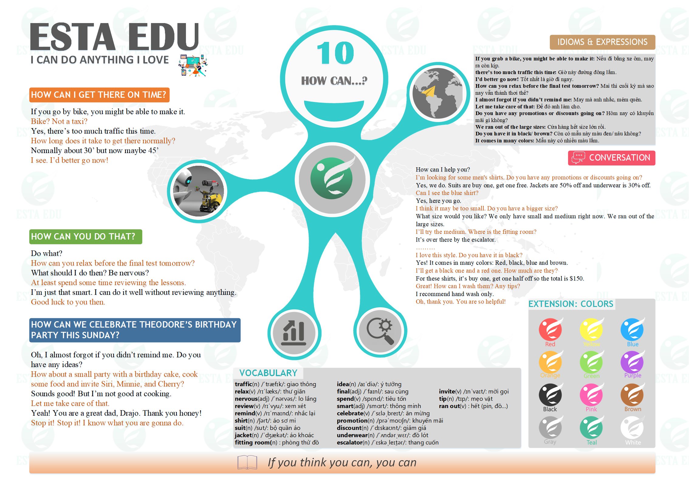
I. ĐOẠN VĂN
1) Tóm tắt
Đoạn văn xử lý tình huống "làm sao để kịp / làm sao mà vậy / làm sao mua được":
- Đi đường: hỏi đi sao cho đúng giờ — đi xe ôm may ra kịp vì giờ này đường đông; bình thường 30 phút, giờ chắc 45 — "vậy phải đi ngay!"
- Trước kỳ thi: nhắc trách "mai thi cuối mà sao vẫn bình thản?" — người kia tự tin "tôi thông minh, không ôn vẫn làm tốt" — bạn chỉ nước "Good luck to you then".
- Tiệc sinh nhật Theodore: suýt quên nếu không được nhắc; lên kế hoạch bánh + nấu ăn + mời Siri, Minnie, Cherry; người này không giỏi nấu → người kia nhận "để tôi lo chuyện đó" — You are a great dad, Drajo!
- Conversation: mua sắm — hỏi khuyến mãi: suit mua 1 tặng 1, jacket giảm 50%, đồ lót giảm 30%; cần size to hơn nhưng hết size L; thử size M (phòng thử ở cạnh thang cuộn); mua đen + đỏ — mua 1 tặng nửa giá, tổng 150$; mẹo: giặt tay thôi.
Điểm chốt: "How can…?" vừa hỏi năng lực, vừa hỏi cách giải quyết — và câu trả lời luôn nằm trong lời khuyên cụ thể (by bike / go now / let me take care).
2) Khi nào sử dụng?
- Hỏi cách thức/khả năng: How can I get there on time? / How can we celebrate…? / How can I wash them?
- Hỏi người khác giúp gì: How can I help you? (mẫu câu bán hàng)
- Ngạc nhiên về năng lực của ai đó: How can you relax before the test? / How can Ms. Emerald work that hard?
- Trong cửa hàng: hỏi size/màu/khuyến mãi và cách giặt/bảo quản.
3) Bảng cụm từ giao tiếp (IDIOMS & EXPRESSIONS + câu đáng nhớ)
Đọc nhanh như vầy: ⚠️ là lỗi "dịch từ tiếng Việt" hay gặp (gạch = đừng nói) · 💬 là khi nghe ai đó nói cụm này, mình bắt chuyện tiếp bằng câu nào.
| # | Cụm từ | Nghĩa (VI) | Khi nào dùng | Câu mẫu trong bài | ⚠️ Lỗi hay sai | 💬 Đáp lại |
|---|---|---|---|---|---|---|
| 1 | If you go by a bike, you might be able to make it | Nếu đi bằng xe ôm, may ra có kịp | Gợi ý phương tiện khi ít thời gian | How can I get there on time? — If you go by a bike… | Got it, I'm off now! (Ok, tôi đi liền đây!) | |
| 2 | There's too much traffic this time | Giờ này đường đông đúc lắm | Giải thích vì sao trễ/kẹt xe | Bike? Not a taxi? — Yes, there's too much traffic this time. | Then I'd better go now! (Vậy tốt nhất đi ngay!) | |
| 3 | I'd better go now! | Tốt nhất là giờ đi ngay | Chốt dịp, phải đi liền | I see. I'd better go now! | Go go, be careful! (Đi đi, cẩn thận nhé!) | |
| 4 | How can you relax before the final test tomorrow? | Mai thi cuối kỳ mà sao vẫn bình thản vậy? | Ngạc nhiên + trách nhẹ | How can you relax before the final test tomorrow? | I'm just that smart! (Tôi thông minh thế cơ mà!) | |
| 5 | I almost forgot if you didn't remind me | May mà anh nhắc, tôi suýt quên | Cảm ơn lời nhắc | I almost forgot if you didn't remind me. | Anytime, friends do that! (Có gì đâu, bạn bè mà!) | |
| 6 | Let me take care of that | Để tôi lo việc đó | Nhận việc giúp người khác | I'm not good at cooking. — Let me take care of that. | You're a lifesaver! (Cậu là cứu tinh!) | |
| 7 | Do you have any promotions or discounts going on? | Hôm nay có khuyến mãi gì không? | Hỏi ưu đãi trong tiệm | Do you have any promotions or discounts going on? | Yes, buy one get one free! (Có, mua 1 tặng 1 đấy!) | |
| 8 | We ran out of the large sizes | Cửa hàng hết size lớn rồi | Báo hết hàng | We ran out of the large sizes. | Then I'll try medium! (Vậy tôi lấy size M!) | |
| 9 | Do you have it in black/brown? | Mẫu này có màu đen/nâu không? | Hỏi màu sản phẩm | Do you have it in black? | Sure, it comes in many colors. (Có ạ, nhiều màu lắm!) | |
| 10 | It comes in many colors | Hàng này có nhiều màu lắm | Giới thiệu màu | It comes in many colors: red, black, blue and brown. | I'll get a black one! (Cho tôi cái đen nhé!) |
4) Từ vựng (Vocabulary)
| Từ | Từ loại / Phiên âm | Nghĩa |
|---|---|---|
| Traffic | (n) /ˈtræfɪk/ | Giao thông |
| Relax | (v) /rɪˈlæks/ | Thư giãn |
| Nervous | (adj) /ˈnɜːrvəs/ | Lo lắng |
| Review | (v) /rɪˈvjuː/ | Xem xét; ôn bài |
| Remind | (v) /rɪˈmaɪnd/ | Nhắc lại |
| Shirt | (n) /ʃɜːrt/ | Áo sơ mi |
| Suit | (n) /suːt/ | Bộ quần áo |
| Jacket | (n) /ˈdʒækɪt/ | Áo khoác |
| Fitting room | (n) | Phòng thử đồ |
| Idea | (n) /aɪˈdɪə/ | Ý tưởng |
| Final | (adj) /ˈfaɪnl/ | Cuối cùng (kỳ thi cuối) |
| Spend | (v) /spend/ | Tiêu tốn |
| Smart | (adj) /smɑːrt/ | Thông minh |
| Celebrate | (v) /ˈselɪbreɪt/ | Ăn mừng |
| Promotion | (n) /prəˈmoʊʃn/ | Khuyến mãi |
| Discount | (n) /ˈdɪskaʊnt/ | Giảm giá |
| Underwear | (n) /ˈʌndərwer/ | Đồ lót |
| Escalator | (n) /ˈeskəleɪtər/ | Thang cuộn |
| Invite | (v) /ɪnˈvaɪt/ | Mời gọi |
| Tip | (n) /tɪp/ | Mẹo vặt |
| Run out | (v) | Hết (pin, đồ…) |
Extension (COLORS — màu sắc): Red (đỏ) · Yellow (vàng) · Blue (xanh dương) · Orange (cam) · Green (xanh lá) · Purple (tím) · Black (đen) · Pink (hồng) · Brown (nâu) · Gray (xám) · Teal (xanh ngọc) · White (trắng).
5) Đoạn hội thoại gốc (Free Talk)
How can I get there on time?
If you go by bike, you might be able to make it.
Bike? Not a taxi?
Yes, there's too much traffic this time.
How long does it take to get there normally?
Normally about 30' but now maybe 45'.
I see. I'd better go now!
How can you do that?
Do what?
How can you relax before the final test tomorrow?
What should I do then? Be nervous?
At least spend some time reviewing the lessons.
I'm just that smart. I can do it well without reviewing anything.
Good luck to you then.
How can we celebrate Theodore's birthday party this Sunday?
Oh, I almost forgot if you didn't remind me. Do you have any ideas?
How about a small party with a birthday cake, cook some food and invite Siri, Minnie, and Cherry?
Sounds good! But I'm not good at cooking.
Let me take care of that.
Yeah! You are a great dad, Drajo. Thank you honey!
Stop it! Stop it! I know what you are gonna do.Conversation (tiếp tục):
How can I help you?
I'm looking for some men's shirts. Do you have any promotions or discounts going on?
Yes, we do. Suits are buy one, get one free. Jackets are 50% off and underwear is 30% off.
Can I see the blue shirt?
Yes, here you go.
I think it may be too small. Do you have a bigger size?
What size would you like? We only have small and medium right now. We ran out of the large sizes.
I'll try the medium. Where is the fitting room?
It's over there by the escalator.
………
I love this style. Do you have it in black?
Yes! It comes in many colors: Red, black, blue and brown.
I'll get a black one and a red one. How much are they?
For these shirts, it's buy one, get one half off so the total is $150.
Great! How can I wash them? Any tips?
I recommend hand wash only.
Oh, thank you. You are so helpful!II. NGỮ PHÁP
Tổng quan: 5 điểm ngữ pháp trong bài
| Điểm | Tên | Ứng dụng nói |
|---|---|---|
| 1 | That + adv/adj (…đến thế) | Ngạc nhiên: cook that fast |
| 2 | How much + be + N/S (Giá bao nhiêu?) | Hỏi giá trong cửa hàng |
| 3 | Anyway (Dù sao thì) | Chốt câu, đổi chủ đề |
| 4 | IN + size/color | Hỏi size, màu đồ mua |
| 5 | BY & WITH (Bằng/thuộc cách) | Phân biệt cách thức & công cụ |
Điểm 1. That + adv/adj: S + V + THAT + adv/adj (…đến chừng ấy/đến thế)
Cách dùng: Bản chất: that tạm làm trạng từ mức độ ("đến chừng ấy") — đứng ngay trước adv/adj: cook that fast, that smart. Nói ra khi ngạc nhiên, nghi ngờ năng lực ai đó, thường sau can't believe hay câu hỏi How can…?. Cản trở: that's smart (that + be = "cái đó thông minh") là câu khác hẳn I'm just that smart ("tôi thông minh đến mức đó") — đổi chỗ là đổi nghĩa. Nhịp: nhấn thật mạnh vào that — that HARD? — giọng ngạc nhiên là tới nơi.
Phản xạ hỏi–đáp:
- ❓ Hỏi:
How can you relax before the final test?(Mai thi mà sao bình thản vậy?) - ➕ Nói:
I'm just that smart.(Tôi thông minh đến mức đó đấy) - 💬 Đáp lại:
Good luck to you then!(Vậy thì chúc may mắn nhé!)
Ví dụ:
- Ví dụ 1: Can't believe you cook that fast. (Không tin nổi cậu nấu nướng nhanh thế)
- Ví dụ 2: Emerald cooks that bad? (Emerald nấu ăn dở đến thế sao?)
- Ví dụ 3: She didn't miss you that much. (Cô ấy không nhớ cậu đến thế đâu)
- Ví dụ 4: I'm just that smart. (Tôi thông minh đến mức đó đấy)
- Ví dụ 5: I didn't know Jessica works that hard. (Không ngờ Jessica làm vất vả đến thế)
Biến tấu (tự luyện):
- Đổi adv:
Can't believe you run that fast.(Không tin nổi cậu chạy nhanh thế) - Đổi adj:
The traffic is that bad?(Đường kẹt đến mức đó à?)
Điểm 2. How much + Be + N/S: HOW MUCH IS/ARE + N? — … giá bao nhiêu? Trả lời: It is … / They are …
Cách dùng: Bản chất: How much hỏi giá thì đi với be — is/are khớp với món hỏi, và câu trả lời cũng phải khớp chủ ngữ: How much are these shoes? — They're 300k. Nói ra ở mọi quầy hàng, cả khi hỏi tổng: How much is the total?. Cản trở: trả lời lệch chủ ngữ là lỗi số 1 — hỏi are mà đáp It's nghe cụt; và đừng nhét do/does vào câu hỏi giá. Nhịp: lặp lại đúng Be của câu hỏi khi đáp — hỏi are, đáp They're — nghe như người quen quầy.
Phản xạ hỏi–đáp:
- ❓ Hỏi:
How much are they?(Mấy cái này bao nhiêu tiền?) - ➕ Nói:
It's $150 for both.(Hai cái cộng lại 150 đô) - 💬 Đáp lại:
Great, I'll take them!(Được, tôi lấy cả hai!)
Ví dụ:
- Ví dụ 1: How much is that book? — It's 250.000đ. (Cuốn sách đấy bao nhiêu? — 250 nghìn đ)
- Ví dụ 2: How much are these shoes? — They're 300.000đ. (Đôi giày này bao nhiêu? — 300 nghìn đ)
- Ví dụ 3: How much are they? (Mấy cái này bao nhiêu?)
- Ví dụ 4: How much is the total? — It's $150. (Tổng cộng bao nhiêu? — 150 đô)
- Ví dụ 5: How much is one medium? (Size vừa một cái bao nhiêu?)
Biến tấu (tự luyện):
- Đổi số nhiều → số ít:
How much is that book?(Cuốn sách đấy bao nhiêu tiền?) - Đổi danh từ:
How much is the delivery?(Phí giao hàng bao nhiêu thế?)
Điểm 3. Anyway: ANYWAY … = Dù sao thì / Dù sao đi nữa
Cách dùng: Bản chất: anyway là "cần câu" của người nói — chốt một vòng trao đổi hoặc bẻ lái sang chuyện mới mà không làm ai khó chịu. Đặt đầu câu kèm dấu phẩy: Anyway, I have to get there on time; cũng nằm được cuối câu: I'll love you anyway. Nói ra khi chuyện bàn mãi không tới đâu, hoặc mình muốn khép lại lịch sự. Cản trở: đừng tráo với by the way — anyway là kết chuyện, by the way là mở chuyện mới. Nhịp: nói nhanh, nhẹ, hạ giọng cuối — anywaaay — kiểu "thôi bỏ qua đi vậy".
Phản xạ hỏi–đáp:
- ❓ Hỏi:
What time is the final test tomorrow, anyway?(Dù sao thì mai thi mấy giờ nhỉ?) - ➕ Nói:
Anyway, I have to get there on time.(Dù sao thì tôi cũng phải tới đúng giờ) - 💬 Đáp lại:
Right, back to work then!(Ừ, mình làm việc tiếp đi!)
Ví dụ:
- Ví dụ 1: I'll love you anyway. (Dù gì tôi vẫn yêu em)
- Ví dụ 2: Anyway, I have to let you go. (Dù sao thì tôi vẫn phải để em ra đi)
- Ví dụ 3: Anyway, I have to get there on time. (Dù sao thì tôi cũng phải đến đúng giờ)
- Ví dụ 4: I'm not good at cooking, but anyway I'll try my best. (Tôi không giỏi nấu, nhưng dù sao tôi vẫn hết sức)
- Ví dụ 5: Anyway, what time is the final test tomorrow? (Dù sao thì mai thi cuối kỳ mấy giờ nhỉ?)
Biến tấu (tự luyện):
- Đổi mệnh đề sau:
Anyway, I have to go now.(Dù sao thì tôi cũng phải đi bây giờ) - Đổi vị trí (cuối câu):
I'll try my best, anyway.(Dù sao tôi cũng hết sức thôi)
Điểm 4. IN + size/color: DO (YOU) HAVE IT IN + size/color? · IT COMES IN + N colors/sizes
Cách dùng: Bản chất: in nghĩa "nằm trong" — màu, size "ở trong" sản phẩm: Do you have it in black? It comes in many colors; xác nhận khi lấy: I'll get it in medium. Nói ra ở mọi cửa hàng quần áo, giày dép — hai chữ là mua được hàng. Cản trở: giới từ này không đổi theo tình huống — of black, with black, by black đều cụt cả câu. Nhịp: chỉ tay vào món + nói gọn in + màu — in black? — như người mua nhiều lần rồi.
Phản xạ hỏi–đáp:
- ❓ Hỏi:
Do you have it in black?(Mẫu này có màu đen không ạ?) - ➕ Nói:
It comes in many colors: red, black, blue and brown.(Mẫu này nhiều màu: đỏ, đen, xanh, nâu) - 💬 Đáp lại:
Then I'll take black!(Vậy cho tôi màu đen nhé!)
Ví dụ:
- Ví dụ 1: Do you have it in black? (Cô có cái mẫu này màu đen không?)
- Ví dụ 2: Do you have this shirt in small? (Cái áo này có size nhỏ không?)
- Ví dụ 3: This bag comes in many colors. (Mẫu túi này có rất nhiều màu)
- Ví dụ 4: Does it come in blue? (Nó có màu xanh không?)
- Ví dụ 5: I'll get it in medium. (Tôi lấy size vừa nhé)
Biến tấu (tự luyện):
- Đổi màu:
Do you have it in brown?(Mẫu này có màu nâu không ạ?) - Đổi size:
Does it come in large?(Mẫu này có size lớn không ạ?)
Điểm 5. BY & WITH: BY + tác nhân / phương tiện / cách thức · WITH + công cụ / đối tượng
Cách dùng: Bản chất: by gắn với cách thức "trừu tượng", gốc gác — phương tiện (by bus), tác nhân (by her boyfriend), làm bằng tay (by hand); with gắn với công cụ cầm được, vật liệu cụ thể (with the oven, with wood). Nói ra khi kể đi lại, sửa chữa, làm đồ. Cản trở: đi bộ là ngoại lệ đúng chuẩn on foot — by foot nghe rất "tây lơ tơ lắc" với người bản xứ. Nhịp: đồ cụ thể chạm tay được → with; khái niệm cách đi/effect → by — chọn nhanh là nói đúng.
Phản xạ hỏi–đáp:
- ❓ Hỏi:
How can I get there on time?(Làm sao tôi đến kịp giờ?) - ➕ Nói:
I go to work by bus every day.(Tôi đi làm bằng xe bus mỗi ngày) - 💬 Đáp lại:
Same, see you there!(Tôi cũng vậy, gặp nhau đó!)
Ví dụ:
- Ví dụ 1: We say: I go to work by bus every day. — Never say:
by foot→ Let's say: I go to work on foot every day. (Tôi đi làm bằng xe bus hàng ngày / đi bộ) - Ví dụ 2: She made that cake by hand. (Chiếc bánh đó cô ấy làm bằng tay đấy)
- Ví dụ 3: The door was repaired by her boyfriend. (Cánh cửa đã được bạn trai cô ấy sửa lại rồi)
- Ví dụ 4: She made that cake with the oven. (Cô ấy làm chiếc bánh đó bằng lò nướng)
- Ví dụ 5: She made that cake with the video instruction on Youtube. The door was repaired with wood. (Cô ấy làm bánh theo video hướng dẫn trên Youtube. Cánh cửa được sửa lại bằng gỗ)
Biến tấu (tự luyện):
- Đổi phương tiện:
I go to work by bike every day.(Tôi đi làm bằng xe đạp mỗi ngày) - Đổi by → with (công cụ):
She cut that cake with a knife.(Cô ấy cắt chiếc bánh bằng con dao)
III. LUYỆN NÓI (drill)
Echo drill (nói to 3 lần, nhanh hơn mỗi lần)
- How can I get there on time? — If you go by a bike, you might be able to make it.
- I'd better go now! There's too much traffic this time.
- How can you relax before the final test? — I'm just that smart.
- Do you have any promotions or discounts going on?
- How can I wash them? — I recommend hand wash only.
5 câu hỏi tự luyện (tự hỏi + trả lời)
- How can I improve my pronunciation? — By listening to … and repeating …
- How can you get to work without being late? — I go by … so I …
- How can we celebrate our next success? — How about … and …?
- How can I help you? — I'm looking for … . Do you have any promotions?
- How can I keep my new shirt nice? — Hand wash only — you get a tip from the shop.
✅ Checkpoint: tạo 5 câu "How can…?" cho hoàn cảnh của mình hôm nay (đi lại, học, mua đồ, giúp ai đó, sửa lỗi) — và tự trả lời với BY / WITH / IN thật đúng.
11What time do you ...?Mấy giờ bạn…?
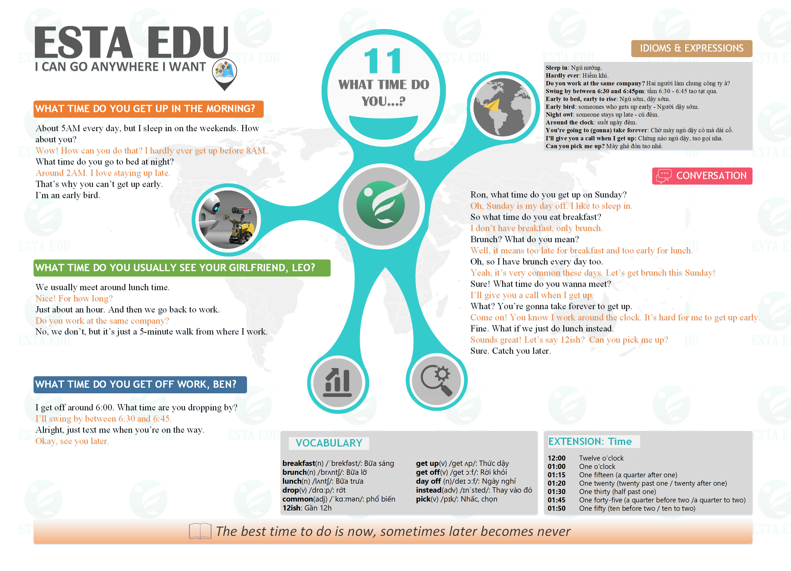
I. ĐOẠN VĂN
1) Tóm tắt
Đoạn văn là cuộc "đối xử giờ giấc" giữa sớm khuya:
- Dậy sớm vs ngủ nướng: dậy 5h mỗi sáng nhưng cuối tuần ngủ nướng; người kia hiếm khi dậy trước 8h; ai ngủ 2h sáng — "chí phải cú đêm".
- Hẹn bạn gái: gặp chuẩn giờ trưa, khoảng 1 tiếng rồi về làm; hai người không cùng công ty nhưng cách nhau 5 phút đi bộ — "nghe ngọt đấy".
- Tan làm & ghé qua: tan làm ~6h — "mấy giờ anh ghé?" — "giữa 6:30–6:45" — "trên đường đi thì nhắn tin nhé".
- Conversation chế nhạo hơn: chủ nhật ngủ nướng, ăn brunch (bữa lửng sáng-trưa) — "quá muộn cho sáng, quá sớm cho trưa"; đi làm suốt ngày đêm nên khó dậy sớm — đổi hẹn sang trưa, "12h đại khái? Đón tôi nhé".
Điểm chốt: học "What time do you…?" và ba cách trả lời: lặp hành động + giờ; "It's + giờ"; hoặc chỉ nêu mốc ("At 6", "Around 2AM").
2) Khi nào sử dụng?
- Hỏi giờ cụ thể của thói quen hiện tại: What time do you get up / go to bed / get off work?
- Hỏi giờ dự định/hẹn hò: What time are you dropping by? → trả lời giữa 6:30 và 6:45.
- So sánh "đám dậy sớm" vs "đám cú đêm": early bird vs night owl.
- Mở rộng chủ đề: công việc nam/nữ, ngày nghỉ (day off), brunch, 12ish.
3) Bảng cụm từ giao tiếp (IDIOMS & EXPRESSIONS + câu đáng nhớ)
Đọc nhanh như vầy: ⚠️ là lỗi "dịch từ tiếng Việt" hay gặp (gạch = đừng nói) · 💬 là khi nghe ai đó nói cụm này, mình bắt chuyện tiếp bằng câu nào.
| # | Cụm từ | Nghĩa (VI) | Khi nào dùng | Câu mẫu trong bài | ⚠️ Lỗi hay sai | 💬 Đáp lại |
|---|---|---|---|---|---|---|
| 1 | Sleep in | Ngủ nướng | Cuối tuần dậy trễ | I sleep in on the weekends. | sleep in (chủ ý) ≠ oversleep (ngủ quên) — |
You lazy bones! (Đồ lười!) |
| 2 | Hardly ever | Hiếm khi | Phủ định tần suất, lịch sự | I hardly ever get up before 8am. | Same here! (Tớ cũng vậy!) | |
| 3 | Early bird | Người dậy sớm | Dán nhãn lối sống dậy sớm | I'm an early bird. | Wow, respect! I'm a night owl. (Khen đấy! Tớ cú đêm) | |
| 4 | Night owl | Cú đêm (người thức khuya) | Dán nhãn lối sống thức khuya | I love staying up late; I'm a night owl! | Đừng dịch sát "con cú" — nó là biệt danh người, gọi thẳng I'm a night owl | No wonder you can't get up early. (Chẳng trách cậu không dậy sớm nổi) |
| 5 | Early to bed, early to rise | Ngủ sớm, dậy sớm | Khuyên lối sống lành mạnh | Early to bed, early to rise keeps you healthy! | Proverb cố định — |
You sound like my mom! (Cậu nói y như mẹ tớ!) |
| 6 | Swing by between … and … | Tầm … mình ghé qua | Hẹn giờ mềm khi ghé qua | I'll swing by between 6:30 and 6:45. | Alright, text me when you're on the way. (Được, gần tới nhắn nhé) | |
| 7 | Around the clock | Suốt ngày đêm | Nói công việc không ngừng | I work around the clock. It's hard for me to get up early. | No wonder you're tired! (Chẳng trách cậu mệt) | |
| 8 | You're gonna take forever | Mày chắc chắn dậy mãi không xong | Chọc ai dậy quá trễ / làm chậm | You're gonna take forever to get up! | Come on, five more minutes! (Thôi mà, thêm 5 phút!) | |
| 9 | I'll give you a call when I get up | Dậy xong tớ gọi cho cậu | Hẹn liên lạc sau | I'll give you a call when I get up. | Deal, but don't make me wait. (Được, nhưng đừng bắt tớ chờ) | |
| 10 | Can you pick me up? | Ghé đón tôi nhé | Nhờ ai đó đón mình | Can you pick me up? — Sure. Catch you later. | Sure! Where are you now? (Được! Giờ cậu ở đâu?) | |
| 11 | Let's say 12ish | Đại khái 12h đi | Hẹn giờ "mềm", không chính xác | Let's say 12ish? Can you pick me up? | Sounds great! / That works for me. (Nghe được đấy!) |
4) Từ vựng (Vocabulary)
| Từ | Từ loại / Phiên âm | Nghĩa |
|---|---|---|
| Breakfast | (n) /ˈbrekfəst/ | Bữa sáng |
| Brunch | (n) /brʌntʃ/ | Bữa "sáng-trưa" (lửng) |
| Lunch | (n) /lʌntʃ/ | Bữa trưa |
| Drop by | (v) /drɑːp/ | Ghé qua (đừng rót!) |
| Common | (adj) /ˈkɑːmən/ | Phổ biến |
| 12ish | (adv) | Gần 12h |
| Get up | (v) /get ʌp/ | Thức dậy |
| Get off | (v) /get ɔːf/ | Rời khỏi (tan làm) |
| Day off | (n) /deɪ ɔːf/ | Ngày nghỉ |
| Instead | (adv) /ɪnˈsted/ | Thay vào đó |
| Pick up | (v) /pɪk/ | Đón (chọn) |
Extension (TIME — cách đọc đồng hồ):
- 12:00 — Twelve o'clock
- 01:00 — One o'clock
- 01:15 — One fifteen (a quarter after one)
- 01:20 — One twenty (twenty past one / twenty after one)
- 01:30 — One thirty (half past one)
- 01:45 — One forty-five (a quarter before two / a quarter to two)
- 01:50 — One fifty (ten before two / ten to two)
5) Đoạn hội thoại gốc (Free Talk)
What time do you get up in the morning?
About 5AM every day, but I sleep in on the weekends. How about you?
Wow! How can you do that? I hardly ever get up before 8am.
What time do you go to bed at night?
Around 2AM. I love staying up late.
That's why you can't get up early. I'm an early bird.
What time do you usually see your girlfriend, Leo?
We usually meet around lunch time.
Nice! For how long?
Just about an hour. And then we go back to work.
Do you work at the same company?
No we don't, but it's just a 5-minute walk from where I work.
What time do you get off work, Ben?
I get off around 6:00. What time are you dropping by?
I'll swing by between 6:30 and 6:45.
Alright, just text me when you're on the way.
Okay, see you later.Conversation (tiếp tục):
Ron, what time do you usually get up on Sunday?
Oh, Sunday is my day off. I like to sleep in.
So what time do you eat breakfast?
I don't have breakfast, only brunch.
Brunch? What do you mean?
Well, it means too late for breakfast and too early for lunch.
Oh, so I have brunch every day too.
Yeah, it's very common these days. Let's get brunch this Sunday!
Sure! What time do you wanna meet?
I'll give you a call when I get up.
What? You're gonna take forever to get up!
Come on! You know I work around the clock. It's hard for me to get up early.
Fine. What if we just do lunch instead?
Sounds great! Let's say 12ish? Can you pick me up?
Sure. Catch you later.II. NGỮ PHÁP
Tổng quan: 5 điểm ngữ pháp trong bài
| Điểm | Tên | Ứng dụng nói |
|---|---|---|
| 1 | Modal Verbs + V (Động từ khuyết thiếu) | will/shall/can/may/must + V |
| 2 | Just + V/N/Adv/Adj (Chỉ thế / Cứ) | Lấp lánh "chỉ" trong giao tiếp |
| 3 | Negation – Negative verbs (Phủ định động từ) | Khẳng định → phủ định chuẩn |
| 4 | Negative words (No / None / Never / No one…) | Trả lời tuyệt đối "zero" |
| 5 | Negative adverbs (Hardly / Scarcely / Barely) | "Hiếm khi / hầu như không" |
Điểm 1. Modal Verbs + V: WILL / SHALL / CAN / COULD / MAY / MIGHT / MUST + V (nguyên mẫu)
Cách dùng: Sau modal luôn là V nguyên mẫu, không "to" — nghĩ kiểu "modal trước, động từ trần sau". Modal không đổi theo chủ ngữ: I must / she must, không có musts hay must to. Nếu modal là will mà sau là tính từ thì phải chèn be: will be happy (đừng nói will happy). Cần nhờ/xin phép nhẹ nhàng thì thay can bằng could / may — cùng nghĩa, sang hơn.
Phản xạ hỏi–đáp:
- ❓ Hỏi xin phép:
May I come at 6ish?(Mình ghé khoảng 6h được không?) - ➖ Phủ định / từ chối:
Sorry, I'm afraid you can't.(Tiếc quá, anh không được đâu) - 💬 Đồng ý đáp lại:
Sure, come around 6.(Được thôi, ghé tầm 6 nhé)
Ví dụ:
- Ví dụ 1: Never say:
I must to see you.→ Let's say: I must see you. (Anh phải gặp em) - Ví dụ 2: Never say:
You will happy.→ Let's say: You will be happy. (Em sẽ hạnh phúc) - Ví dụ 3: I can get up early, but I can't sleep in. (Tớ dậy sớm được nhưng không ngủ nướng nổi)
- Ví dụ 4: You should spend some time reviewing the lesson. (Bạn nên dành chút thời gian ôn bài)
- Ví dụ 5: May I come at 6ish? (Mình có thể ghé khoảng 6h được không?)
Biến tấu (tự luyện):
- Đổi chủ ngữ I → she:
She must see you.(Cô ấy phải gặp anh) - Đổi can → could cho lịch sự:
Could you pick me up?(Anh ghé đón mình giúp được không?)
Điểm 2. Just + V / N / Adv / Adj: JUST … = Chỉ thế / Cứ …
Cách dùng: "Just" là từ giảm thanh của tiếng Anh nói — đặt ngay trước từ chính (V/N/Adv/Adj) để câu bớt nặng: nhờ nhẹ (just text me), chốt gọn (just that?), an ủi (just sad?). Khác only: only nặng về số lượng, hay gặp khi viết; just là lựa chọn của miệng. Vị trí quyết định nghĩa — đứng ngay trước cái mình muốn "làm nhẹ đi", đổi chỗ là câu nát.
Phản xạ hỏi–đáp:
- ➕ Nói:
Just text me when you're on the way.(Gần tới thì cứ nhắn tớ nhé) - ➖ Bật lại cho mạnh hơn:
Not just that — I also made dinner.(Không chỉ thế — tớ còn nấu tối nữa) - 💬 Đáp lại (thắc mắc):
Just that? I expected more!(Chỉ thế thôi à? Tớ tưởng nhiều hơn!)
Ví dụ:
- Ví dụ 1: I just need you here. (Chỉ cần em bên tôi lúc này)
- Ví dụ 2: Just that? (Chỉ thế thôi ư?)
- Ví dụ 3: Just text me. (Cứ nhắn tớ là được)
- Ví dụ 4: Just sad? I thought you're broken. (Chỉ là buồn thôi ư? Tớ tưởng cậu đau lòng lắm)
- Ví dụ 5: Just let me know. (Chỉ cần báo cho em là được)
Biến tấu (tự luyện):
- Đổi động từ:
Just text me.→Just call me.→Just let me know.(Cứ nhắn / Cứ gọi / Cứ báo) - Đổi thì (vừa làm xong):
I just texted you.(Tớ vừa nhắn cho cậu rồi đó)
Điểm 3. Negation – Negative verbs: DON'T / DOESN'T · ISN'T / AREN'T / AM NOT · WON'T / CAN'T · SHOULDN'T / WOULDN'T · HAVEN'T / HASN'T
Cách dùng: Tiếng Việt phủ định bao nhiêu lần cũng được, tiếng Anh một câu chỉ một lần: chọn đúng 1 trong 3 chỗ bám — (1) trợ động từ (don't/can't/haven't…), (2) từ phủ định (nobody/no… — Điểm 4), (3) trạng từ mềm (hardly… — Điểm 5). Phủ định luôn bám vào trợ động từ đứng trước V chính, và V trở về nguyên mẫu: I don't have breakfast (đừng nói I don't has).
Phản xạ hỏi–đáp:
- ➕ Khẳng định:
We work at the same company.(Chúng tôi làm chung công ty) - ➖ Phủ định:
We don't work at the same company.(Chúng tôi không làm chung công ty) - 💬 Đáp lại:
Neither do we!(Bọn tớ cũng không làm chung đâu!)
Ví dụ:
- Ví dụ 1: We haven't spoken English for a long time. (Chúng tôi đã lâu không nói tiếng Anh rồi)
- Ví dụ 2: Why shouldn't I try that way? (Sao tôi lại không nên thử kiểu đó?)
- Ví dụ 3: I don't have breakfast, only brunch. (Tôi không ăn sáng, chỉ ăn brunch thôi)
- Ví dụ 4: We don't work at the same company. (Chúng tôi không làm chung công ty)
- Ví dụ 5: I can't get up early because I have to work around the clock. (Tớ không dậy sớm nổi vì làm việc suốt ngày đêm)
Biến tấu (tự luyện):
- Đổi chủ ngữ we → they:
They don't have breakfast, only brunch.(Họ không ăn sáng, chỉ ăn brunch thôi) - Đổi thì hiện tại → quá khứ:
I didn't have breakfast yesterday.(Hôm qua tôi không ăn sáng)
Điểm 4. Negative words: NO / NOT / NONE / NEITHER / NEVER · NO ONE / NOBODY / NOTHING / NOWHERE
Cách dùng: Phủ định tuyệt đối (zero) — khi dùng thì động từ giữ dạng khẳng định, đừng thêm don't nữa (Nobody doesn't know ✗). Chọn nhanh: no + danh từ (no time, no plan), nothing = không có gì (vật), nobody / no one = không ai, nowhere = không có nơi nào, none of + nhóm = trong nhóm đó không ai. Câu đã có don't thì đổi sang họ any-: not anything / not anywhere.
Phản xạ hỏi–đáp:
- ➕ Nói:
I have nowhere to go this Sunday.(Chủ nhật này tớ chẳng có đâu để đi) - ➖ Đừng nói kép:
I don't have nowhere to go✗ →I don't have anywhere to go.✓ (Đã có don't thì dùng anywhere) - 💬 Đáp lại:
Then come with me!(Vậy thì đi cùng tớ đi!)
Ví dụ:
- Ví dụ 1: She has nothing to be unhappy about. (Cô ấy chẳng có lý do gì để không vui cả)
- Ví dụ 2: In my center, it's no way that you have no friends. (Ở the center làm gì có chuyện bạn không có bạn bè chứ)
- Ví dụ 3: Nobody knows what time he goes to bed. (Chẳng ai biết anh ấy ngủ lúc mấy giờ)
- Ví dụ 4: I have nowhere to go this Sunday. (Chủ nhật này tôi chẳng có chỗ nào để đi cả)
- Ví dụ 5: None of my friends are early birds. (Không một ai bạn tôi là người dậy sớm)
Biến tấu (tự luyện):
- Đổi danh từ sau no:
I have no plan this Sunday.(Chủ nhật này tôi chẳng có kế hoạch gì) - Đổi chủ ngữ:
Nobody in my class is an early bird.(Cả lớp chẳng có ai dậy sớm)
Điểm 5. Negative adverbs: HARDLY / SCARCELY / BARELY (+ any / ever)
Cách dùng: Phủ định mềm — "gần như không": hardly ever = hiếm khi (gần 0 lần), hardly / barely any = không còn bao nhiêu, barely = vừa đủ lướt qua. Đặt ngay trước V chính; tự nó đã là "không" nên cấm thêm don't / never (double negative). Thang mạnh để so: never (0 lần) > hardly ever (gần như không) > rarely (ít khi, nhưng vẫn có).
Phản xạ hỏi–đáp:
- ➕ Nói:
I barely wake up before 8am.(Tớ gần như không bao giờ dậy trước 8h) - ➖ Đừng nói kép:
I don't barely wake up before 8am✗ →I hardly ever wake up before 8am.✓ (Tớ hiếm khi dậy trước 8h) - 💬 Đáp lại:
Same here — I'm a night owl.(Tớ cũng vậy — tớ cú đêm mà)
Ví dụ:
- Ví dụ 1: He hardly says some "sến súa" things. (Anh ấy hiếm khi nói mấy lời "sến súa" lắm cơ)
- Ví dụ 2: They scarcely eat out. (Họ hiếm khi đi ăn ở ngoài)
- Ví dụ 3: Never say:
I hardly have no time for gossiping.→ Let's say: I hardly have time for gossiping. (Tớ hầu như không có thời gian đi tám chuyện) - Ví dụ 4: I barely wake up before 8am. (Tớ hầu như không bao giờ dậy trước 8h)
- Ví dụ 5: She has barely any free time this week. (Tuần này cô ấy gần như không còn thời gian rảnh)
Biến tấu (tự luyện):
- Đổi trạng từ hardly → barely:
She barely eats out.(Cô ấy gần như không đi ăn ngoài) - Đổi hardly ever (tần suất) → hardly any (số lượng):
We have hardly any homework today.(Hôm nay tụi mình hầu như không có bài tập về nhà)
III. LUYỆN NÓI (drill)
Echo drill (nói to 3 lần, nhanh hơn mỗi lần)
- What time do you get up in the morning? — About 5AM every day, but I sleep in on the weekends.
- I'm an early bird. / I'm a night owl.
- What time do you get off work? — I get off around 6:00.
- I'll swing by between 6:30 and 6:45. Just text me when you're on the way.
- Let's say 12ish? Can you pick me up?
5 câu hỏi tự luyện (tự hỏi + trả lời)
- What time do you usually wake up on weekdays? — I usually get up at …, but I sleep in on …
- What time do you go to bed? — Around … . I'm a night owl / I'm an early bird.
- What time do you get off work? — Around … . And you?
- What time do you have brunch on Sundays? — Around 10ish, because …
- What time are you dropping by my house tomorrow? — I'll swing by between … and … . Just text me.
✅ Checkpoint: hỏi & trả lời "What time…?" với 5 giờ thật trong ngày (dậy, ăn, làm, tan, ngủ) — nhớ dùng "around/…ish/between … and …". Ghi âm lại.
12When do you ...? / When is your birthday?Khi nào? Sinh nhật bạn khi nào?
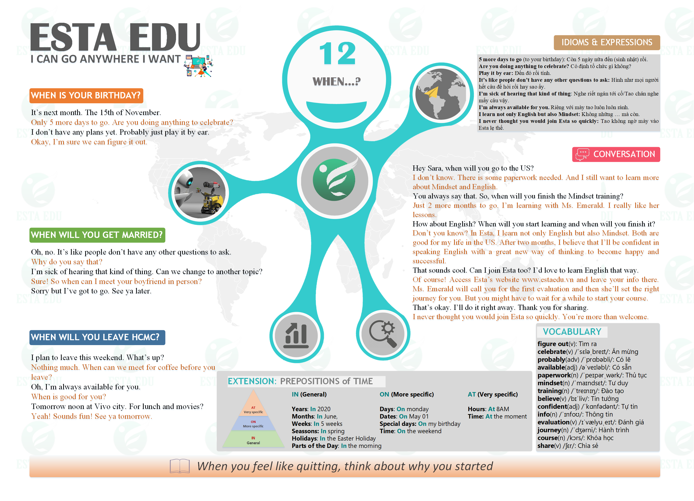
I. ĐOẠN VĂN
1) Tóm tắt
Đoạn văn là cuộc truy lùng mốc thời gian, từ sinh nhật tới chuyện kết hôn:
- Hỏi sinh nhật: "When is your birthday?" — "It's next month. The 15th of November." — "Only 5 more days to go. Are you doing anything to celebrate?" — vẫn chưa có plan, "Probably just play it by ear" (đến đó rồi tính) — "Okay, I'm sure we can figure it out", cứ bình tĩnh, sẽ tìm ra cách.
- Câu hỏi làm người khác khó chịu: "When will you get married?" — nghe phát này nản luôn: "It's like people don't have any other questions to ask" — "I'm sick of hearing that kind of thing. Can we change to another topic?" — vừa đổi chủ đề, lại bị hỏi ngược "When can I meet your boyfriend in person?" — đối phương "Sorry but I've got to go" — chạy đâu cho thoát.
- Hẹn hò nhiệt tình: "When will you leave HCMC?" — "I plan to leave this weekend. What's up?" — "Nothing much. When can we meet for coffee before you leave?" — "I'm always available for you. When is good for you?" — "Tomorrow noon at Vivo city. For lunch and movies?" — "Yeah! Sounds fun!" — nghe ngọt đấy.
- Conversation: Sara sắp bay Mỹ nhưng còn paperwork và muốn học tiếp Mindset + English (2 tháng nữa) — "In my center I learn not only English but also Mindset" — được recommend "leave your info, Ms Emerald sẽ gọi evaluation rồi set journey của bạn" — "I never thought you would join the center so quickly!"
Điểm chốt: When…? hỏi thời gian chung — tổng quát của sự việc/kế hoạch (khác What time hỏi giờ cụ thể); trả lời có thể là giờ, thứ, ngày, tháng — và khi nói dự định thì dùng cả "plan to / will / be going to".
2) Khi nào sử dụng?
- Hỏi thời điểm của một sự việc, dự định, kế hoạch (mang tính chung & tổng quát hơn What time): When is your birthday? / When is your flight to Japan? — trả lời bằng giờ, thứ, ngày, tháng.
- Biến thể When is…? / When do you…? / When will…? / When can…?: When will you get married? (hỏi dự định), When can we meet for coffee? (hẹn giờ), When do you start your plans / finish work? (từ FREE TALK sheet).
- Hỏi kế hoạch đang nung nấu (hiện tại tiếp diễn cho tương lai gần): Are you doing anything to celebrate?
- Thoát lịch sự khi bị hỏi nhạy cảm: "Can we change to another topic?"
- Kế hoạch qua 5 cách nói: I plan to… / I will… / I'm going to… / I'm about to… / I'm heading to….
3) Bảng cụm từ giao tiếp (IDIOMS & EXPRESSIONS + câu đáng nhớ)
Đọc nhanh như vầy: ⚠️ là lỗi "dịch từ tiếng Việt" hay gặp (gạch = đừng nói) · 💬 là khi nghe ai đó nói cụm này, mình bắt chuyện tiếp bằng câu nào.
| # | Cụm từ | Nghĩa (VI) | Khi nào dùng | Câu mẫu trong bài | ⚠️ Lỗi hay sai | 💬 Đáp lại |
|---|---|---|---|---|---|---|
| 1 | 5 more days to go (to your birthday) | Còn 5 ngày nữa đến (sinh nhật) rồi | Đếm ngược mốc sự kiện sắp tới | Only 5 more days to go. Are you doing anything to celebrate? | Really? Time flies! (Thật à? Thời gian ghê thật!) | |
| 2 | Are you doing anything to celebrate? | Có định tổ chức gì để ăn mừng không? | Hỏi kế hoạch ăn mừng của ai đó | Are you doing anything to celebrate? — I don't have any plans yet. | Not yet, any ideas? (Chưa, cậu có ý tưởng gì không?) | |
| 3 | Play it by ear | Đến đó rồi tính | Chưa kịp plan, ứng biến theo tình hình | I don't have any plans yet. Probably just play it by ear. | Sure, just go with the flow. (Được, tuỳ tình hình thôi) | |
| 4 | It's like people don't have any other questions to ask | Hình như mọi người hết câu để hỏi rồi hay sao ấy | Trách móc vui khi bị hỏi câu nhàm | Oh, no. It's like people don't have any other questions to ask. | Ha, I feel you! (Trời, tớ hiểu cảm giác đó!) | |
| 5 | I'm sick of hearing that kind of thing | Nghe riết ngán tới cổ — chán mấy câu này rồi | Than phiền chuyện bị hỏi đi hỏi lại | I'm sick of hearing that kind of thing. Can we change to another topic? | Sorry! Let's talk about something else. (Xin lỗi! Mình nói chuyện khác đi) | |
| 6 | I'm always available for you | Riêng với cậu, tớ luôn luôn rảnh | Hứa hẹn "lúc nào cũng rảnh để gặp bạn" | Oh, I'm always available for you. When is good for you? | Aww, you're so sweet! (Trời, cậu ngọt ngào quá!) | |
| 7 | I learn not only English but also Mindset | Không những tiếng Anh mà còn Mindset | Giới thiệu "hai trong một" khi khoe study | In my center I learn not only English but also Mindset. | Nice combo! How's it going? (Kết hợp hay đấy! Dạo này thế nào?) | |
| 8 | I never thought you would join the center so quickly | Không ngờ cậu join the center lẹ thế | Ngạc nhiên vui trước quyết định nhanh | I never thought you would join the center so quickly. You're more than welcome. | Me neither, but I love it! (Tớ cũng không ngờ, mà mê lắm!) | |
| 9 | Can we change to another topic? | Đổi chủ đề khác đi nhé? | Lịch sự "nhảy" khỏi chủ đề nhạy cảm | I'm sick of hearing that kind of thing. Can we change to another topic? | Sure, what do you wanna talk about? (Được, cậu muốn nói gì?) | |
| 10 | What's up? — Nothing much | Có chuyện gì không? — Chẳng có gì đâu | Mở chuyện, hỏi tình hình trước khi hỏi cần gì | When will you leave HCMC? — I plan to leave this weekend. What's up? — Nothing much. | Just chilling, you? (Chilling thôi, còn cậu?) |
4) Từ vựng (Vocabulary)
| Từ | Từ loại / Phiên âm | Nghĩa |
|---|---|---|
| Figure out | (v) | Tìm ra (cách, lời giải) |
| Celebrate | (v) /ˈseləˌbreɪt/ | Ăn mừng |
| Probably | (adv) /ˈprɑbəbli/ | Có lẽ |
| Available | (adj) /əˈveɪləbl/ | Có sẵn (rảnh) |
| Paperwork | (n) /ˈpeɪpərˌwɜrk/ | Thủ tục (giấy tờ) |
| Mindset | (n) /ˈmaɪndset/ | Tư duy |
| Training | (n) /ˈtreɪnɪŋ/ | Đào tạo |
| Believe | (v) /bɪˈliv/ | Tin tưởng |
| Confident | (adj) /ˈkɑnfədənt/ | Tự tin |
| Info | (n) /ˈɪnfoʊ/ | Thông tin |
| Evaluation | (n) /ɪˈvælyuˌeɪʃ/ | Đánh giá |
| Journey | (n) /ˈdʒɜrni/ | Hành trình |
| Course | (n) /kɔrs/ | Khóa học |
| Share | (v) /ʃer/ | Chia sẻ |
| Lend sb sth | (v) | Cho ai đó mượn cái gì |
| Borrow sth | (v) | Mượn cái gì (từ ai đó) |
| Pay sth back | (v) | Trả lại (tiền, đồ đã mượn) |
| Introduce s.o to s.o | (v) | Giới thiệu ai đó với ai |
| Project | (n) | Dự án |
Extension (PREPOSITIONS of TIME — giới từ chỉ thời gian):
- Kim tự tháp từ đáy tới đỉnh: IN (General) → ON (More specific) → AT (Very specific) — càng cụ thể càng nhích lên AT.
- IN (General): Years — In 2020 · Months — In June · Weeks — In 5 weeks · Seasons — In spring · Holidays — In the Easter Holiday · Parts of the day — In the morning
- ON (More specific): Days — On Monday · Dates — On May 01 · Special days — On my birthday · On the weekend
- AT (Very specific): Hours — At 8AM · At the moment
5) Đoạn hội thoại gốc (Free Talk)
When is your birthday?
It's next month. The 15th of November.
Only 5 more days to go. Are you doing anything to celebrate?
I don't have any plans yet. Probably just play it by ear
Okay, I'm sure we can figure it out.
When will you get married?
Oh, no. It's like people don't have any other questions to ask.
Why do you say that?
I'm sick of hearing that kind of thing. Can we change to another topic?
Sure! So when can I meet your boyfriend in person?
Sorry but I've got to go. See ya later.
When will you leave HCMC?
I plan to leave this weekend. What's up?
Nothing much. When can we meet for coffee before you leave?
Oh, I'm always available for you.
When is good for you?
Tomorrow noon at Vivo city. For lunch and movies?
Yeah! Sounds fun! See ya tomorrowConversation (tiếp tục):
Hey Sara, when will you go to the US?
I don't know. There is some paperwork needed. And I still want to learn more about Mindset and English.
You always say that. So, when will you finish the Mindset training?
Just 2 more months to go. I'm learning with Ms. Emerald. I really like her lessons.
How about English? When will you start learning and when will you finish it?
Don't you know? In my center I learn not only English but also Mindset. Both are good for my life in the US. After two months. I believe that I'll be confident in speaking English with a great new way of thinking to become happy and successful.
That sounds cool. Can I join the center too? I'd love to learn English that way.
Of course! Check the center's website and leave your info there. Ms Emerald will call you for the first evaluation and then she'll set the right journey for you. But you might have to wait for a while to start your course.
That's okay. I'll do it right away. Thank you for sharing.
I never thought you would join the center so quickly. You're more than welcome.II. NGỮ PHÁP
Tổng quan: 4 điểm ngữ pháp trong bài
| Điểm | Tên | Ứng dụng nói |
|---|---|---|
| 1 | Maybe & May be (Có lẽ / có thể) | Phân biệt "chắc thế" và "có thể" lúc đồn đoán |
| 2 | What + a/an + N! (Câu cảm thán) | Khen một phát cảm xúc lại đê |
| 3 | LIKE (V & prep) (Thích / giống như) | Nói sở thích & so sánh "giống ai" |
| 4 | Ways to say about the plans (Cách nói về kế hoạch) | Trả lời When…? bằng 5 khung dự định |
Điểm 1. Maybe & May be: MAYBE + CÂU (đầu/ giữa/ cuối) · S + MAY BE + …
Cách dùng: Maybe là trạng từ "có lẽ" — bay tự do ở đầu, giữa hoặc cuối câu, thậm chí giấu cuối câu vẫn giữ nguyên nghĩa. May be thì khác hẳn: là may + be (động từ khuyết thiếu "có thể"), sống luôn trong vị trí vị ngữ, bám sát sau chủ ngữ, không nhảy ra đầu câu được. Mẹo phân biệt cực nhanh: chỗ thay được bằng perhaps thì dùng maybe, còn chỗ cần một động từ phía sau chủ ngữ thì may be. Nhầm hai đứa này là lỗi kinh điển của người mới học đấy.
Phản xạ hỏi–đáp:
- ➕ Nói:
Maybe he is late.(Có lẽ anh ấy tới trễ đấy) - ➖ Lắc đầu:
Maybe not — I still have paperwork to do.(Có lẽ không — tớ còn giấy tờ chưa xong) - 💬 Đáp lại:
Maybe! I'll let you know soon.(Có thể nhé! Mai tớ báo liền)
Ví dụ:
- Ví dụ 1: Maybe he is late. (Chắc là anh ấy tới trễ đấy)
- Ví dụ 2: He may be late. (Có thể anh ấy tới trễ đấy)
- Ví dụ 3: She is on her way here, maybe. (Có lẽ cô ấy đang trên đường tới đây đấy)
- Ví dụ 4: She may be on her way here. (Có lẽ cô ấy đang trên đường tới đây)
- Ví dụ 5: Maybe I'll have to wait for a while to start my course. (Có thể mình sẽ phải đợi một lúc mới vào được khóa học)
Biến tấu (tự luyện):
- Đổi chủ ngữ he → she:
Maybe she is late.(Có lẽ cô ấy tới trễ đấy) - Đổi thì hiện tại → tương lai:
Maybe I'll go abroad next year.(Có lẽ sang năm tớ đi nước ngoài)
Điểm 2. What + a/an + N! (Câu cảm thán): WHAT + A/ AN + ADJ + N !
Cách dùng: Câu cảm thán khen/chê một phát cho dữ dội — bản chất là "what + một cái N đáng khen đó". Chọn a/an theo âm đầu của tính từ đi ngay sau (an adorable baby), còn N thì luôn là số ít đếm được. Nhấn tính chất, không kèm danh từ thì đổi sang How + adj! — How beautiful!; có N đứng sau thì đừng nói How beautiful girl nhé. Nói thì kéo nhẹ "Whaaaat a…" rồi thả N ra, cảm xúc dâng liền.
Phản xạ hỏi–đáp:
- ➕ Khen:
What a beautiful day!(Ngày đẹp trời quá!) - ➖ Chê ngược:
What a mess!(Lộn xộn thật!) - 💬 Đáp lại (khi được khen):
Thank you! You made my day.(Cảm ơn! Cậu làm tớ vui cả ngày)
Ví dụ:
- Ví dụ 1: What a beautiful girl! (Thật là một cô gái xinh đẹp)
- Ví dụ 2: What an adorable baby! (Quá là một em bé tuyệt vời)
- Ví dụ 3: What a hot man! ;) (Thật là một người đàn ông nổi bật)
- Ví dụ 4: What a great new way of thinking! (Quả là một cách nhìn đời mới tuyệt vời)
- Ví dụ 5: What a busy week — so much paperwork! (Quả là một tuần bận rộn — cứ thủ tục hoài)
Biến tấu (tự luyện):
- Đổi danh từ:
What a great surprise!(Bất ngờ tuyệt vời quá!) - Đổi a → an (âm đầu nguyên âm):
What an awesome trip!(Chuyến đi tuyệt vời quá!)
Điểm 3. LIKE (V & prep): LIKE (V) = ENJOY, LOVE · LIKE (PREP) = SIMILAR TO · IT LOOKS LIKE … = CÓ VẺ NHƯ
Cách dùng: Like hai vai hai tính: làm động từ là "thích, yêu thích" (ngang hàng với enjoy, love); làm giới từ là "giống như" — đứng ngay sau be/look/seem. Cụm It looks like… = "có vẻ như", dùng để phán đoán mềm khi trò chuyện. Mẹo: nhìn chỗ nó đứng là biết vai — trước một danh từ thì là "giống như", trước một hành động thì là "thích".
Phản xạ hỏi–đáp:
- ❓ Hỏi:
Do you like her way of teaching?(Cậu thích cách cô ấy dạy chứ?) - ➖ Phủ định:
Not really, I like coffee more.(Không hẳn, tớ mê cà phê hơn) - 💬 Đáp lại:
Me too, I like it a lot!(Tớ cũng vậy, thích lắm!)
Ví dụ:
- Ví dụ 1: I like your smile. (Tôi thích nụ cười của em)
- Ví dụ 2: Do you like her way of teaching? (Bạn thích cách mà cô ấy giảng dạy chứ?)
- Ví dụ 3: They are very much like their parents. (Chúng trông giống ba mẹ của chúng nhỉ)
- Ví dụ 4: It looks like you have to go. (Có vẻ như em sắp phải đi rồi)
- Ví dụ 5: I am like a stranger here? (Tớ có giống một người lạ ở đây không vậy?)
Biến tấu (tự luyện):
- Đổi chủ ngữ I → she:
She likes your smile.(Cô ấy thích nụ cười của anh) - Đổi like (V) → like (prep):
He looks like his dad.(Anh ấy giống ba nhỉ)
Điểm 4. Ways to say about the plans: S + WILL + V · S + BE + GOING TO + V · S + BE + ABOUT TO + V · S + PLAN TO + V · S + BE + HEADING TO (A PLACE)
Cách dùng: Trả lời When…? về dự định thì có 5 "quân số", khác nhau ở độ chắc chắn và tức thời: will là hứa/quyết ngay tại chỗ; be going to là đã định từ trước; be about to là sắp ngay tắp lự; plan to là kế hoạch có lên lịch; be heading to là đang trên đường tới nơi. Nói ra khung nào, người nghe tự biết mình "chắc" tới mức nào. Mẹo: hẹn lịch thì plan to / be going to là hai quân dùng nhiều nhất, đừng lúc nào cũng nhét will cho lười.
Phản xạ hỏi–đáp:
- ❓ Hỏi:
When are you going to leave HCMC?(Khi nào cậu định rời Sài Gòn?) - ➖ Phủ định:
I'm not going anywhere this weekend.(Cuối tuần này tớ không đi đâu cả) - 💬 Đáp lại:
Sounds fun! I'm heading there too.(Nghe vui đấy! Tớ cũng đang đi tới đó)
Ví dụ:
- Ví dụ 1: I will join the teachers team soon. (Tớ sẽ sớm tham gia vào đội ngũ giáo viên trung tâm)
- Ví dụ 2: I'm going to join the teachers team. (Tớ định tham gia vào đội ngũ giáo viên trung tâm)
- Ví dụ 3: I'm about to join the teachers team. (Tớ sắp vào đội ngũ giáo viên trung tâm rồi đấy)
- Ví dụ 4: I plan to join the teachers team. (Tớ có kế hoạch tham gia đội ngũ giáo viên trung tâm)
- Ví dụ 5: I'm heading to the campus. (Tớ đang đến the campus đấy)
Biến tấu (tự luyện):
- Đổi chủ ngữ I → we:
We plan to leave this weekend.(Bọn tớ định đi cuối tuần này) - Đổi danh từ (điểm đến):
I'm heading to the airport.(Tớ đang trên đường ra sân bay)
III. LUYỆN NÓI (drill)
Echo drill (nói to 3 lần, nhanh hơn mỗi lần)
- When is your birthday? — It's next month. The 15th of November.
- Only 5 more days to go. Are you doing anything to celebrate? — Probably just play it by ear.
- When will you leave HCMC? — I plan to leave this weekend. What's up? — Nothing much.
- When can we meet for coffee? — I'm always available for you. When is good for you?
- I'm heading to the campus. I'm about to join the team.
5 câu hỏi tự luyện (tự hỏi + trả lời)
- When is your birthday? — It's in … . Only … more days to go! This year I'll probably just play it by ear.
- When do you start your plans / finish work? — I usually plan in the … and get off work around … . When is good for you?
- When will you finish your training? — Just … more months to go. Maybe … . I believe that I'll be confident after that.
- When can we meet for coffee before you leave? — I'm always available for you. Tomorrow noon? For lunch and movies?
- What do you think if we start on Monday next week? — Yeah! Sounds fun! See ya Monday.
✅ Checkpoint: hỏi & trả lời "When…?" với cả 4 biến thể (When is / do / will / can…?) — mỗi câu trả lời bằng một mốc thời gian khác nhau (giờ, thứ, ngày, tháng), nhớ nhét thêm "plan to / play it by ear". Ghi âm lại.
13How may I help you?Tôi có thể giúp gì cho anh?
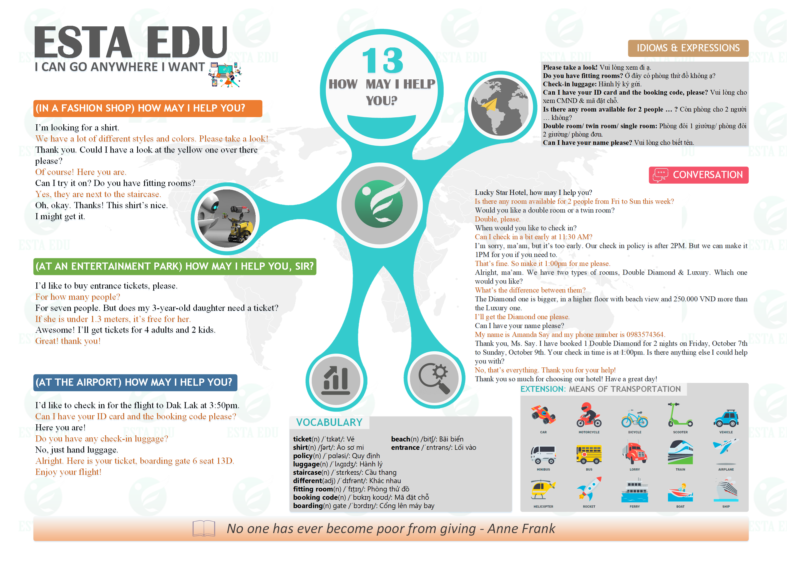
I. ĐOẠN VĂN
1) Tóm tắt
Đoạn văn là một ngày "làm khách" trọn gói:
- Tiệm quần áo: nhân viên chào "How may I help you?" — khách nói thẳng "I'm looking for a shirt" — được mời "Please take a look!", xin xem cái vàng, hỏi phòng thử đồ (nằm cạnh cầu thang) — ưng miệng: "This shirt's nice. I might get it."
- Công viên giải trí: mua vé cho cả nhà 7 miệng — con gái 3 tuổi dưới 1m3 thì miễn phí — chốt 4 adults and 2 kids, nghe như cả đại gia đình đi chơi.
- Sân bay: check-in chuyến 3:50pm đi Dak Lak — xuất trình CMND + mã đặt chỗ, không ký gửi chỉ xách tay — "boarding gate 6 seat 13D. Enjoy your flight!"
- Conversation — khách sạn Lucky Star: gọi điện đặt phòng cuối tuần, chọn double hay twin, mặc cả giờ nhận phòng (quy định sau 2PM nhưng "we can make it 1PM for you"), so Diamond vs Luxury — to hơn, tầng cao, view biển, đắt hơn 250k — lấy Diamond, để lại tên + số điện thoại cho xong.
Điểm chốt: khi được hỏi "How may I help you?" thì nói thẳng điều mình cần — I'm looking for… / I'd like to…; có nhu cầu thì "YES, PLEASE…", không thì "No, THANKS".
2) Khi nào sử dụng?
- Bạn là người phục vụ — cửa hàng, nhà hàng, khách sạn, rạp phim, siêu thị, sân bay: chào khách bằng How may I help you? (biến thể cực phổ biến: Can I help you?).
- Bạn là khách — được hỏi thì trả thẳng điều mình cần: I'm looking for… / I'd like to buy… / I'd like to check in for…
- Xin/đề nghị lịch sự: Can I have your name, please? · Can I try it on? · Could I have a look at…?
- Nhân viên khép phiên phục vụ: Is there anything else I could help you with? → No, that's everything.
3) Bảng cụm từ giao tiếp (IDIOMS & EXPRESSIONS + câu đáng nhớ)
Đọc nhanh như vầy: ⚠️ là lỗi "dịch từ tiếng Việt" hay gặp (gạch = đừng nói) · 💬 là khi nghe ai đó nói cụm này, mình bắt chuyện tiếp bằng câu nào.
| # | Cụm từ | Nghĩa (VI) | Khi nào dùng | Câu mẫu trong bài | ⚠️ Lỗi hay sai | 💬 Đáp lại |
|---|---|---|---|---|---|---|
| 1 | Please take a look! | Vui lòng xem đi ạ | Mời khách ngắm hàng | We have a lot of different styles and colors. Please take a look! | Thanks, I'm just looking around. (Cảm ơn, tôi ngắm thôi ạ) | |
| 2 | Do you have fitting rooms? | Ở đây có phòng thử đồ không ạ? | Hỏi trước khi thử đồ | Can I try it on? Do you have fitting rooms? | Sure, they're next to the staircase. (Được, ở cạnh cầu thang ạ) | |
| 3 | Check-in luggage | Hành lý ký gửi | Khai tại quầy check-in | Do you have any check-in luggage? — No, just hand luggage. | No, just hand luggage. (Không, chỉ xách tay thôi) | |
| 4 | Can I have your ID card and the booking code, please? | Vui lòng cho xem CMND & mã đặt chỗ | Nhân viên xin giấy tờ của khách | Can I have your ID card and the booking code please? — Here you are! | Here you are! (Đây ạ!) | |
| 5 | Is there any room available for 2 people …? | Còn phòng cho 2 người … không? | Gọi điện đặt phòng | Is there any room available for 2 people from Fri to Sun this week? | Double, please. (Phòng đôi nhé) | |
| 6 | Double room / twin room / single room | Phòng đôi 1 giường / phòng đôi 2 giường / phòng đơn | Chọn loại phòng khi đặt | Would you like a double room or a twin room? — Double, please. | What's the difference? (Khác gì nhau ạ?) | |
| 7 | Can I have your name please? | Vui lòng cho biết tên | Lấy thông tin để đặt/giữ chỗ | Can I have your name please? — My name is Amanda Say. | My name is Amanda Say. (Tôi là Amanda Say ạ) | |
| 8 | I'm looking for… | Tôi đang tìm… | Nói thẳng nhu cầu khi được hỏi "How may I help you?" | I'm looking for a shirt. | Sure, what size do you need? (Được, anh cần size nào?) | |
| 9 | Can I try it on? | Tôi thử cái này được không? | Thử đồ, thử giày | Can I try it on? Do you have fitting rooms? | Of course, this way please. (Được, mời anh bên này ạ) | |
| 10 | I might get it. | Vậy chắc tôi lấy cái này | Đã ưng nhưng chưa chốt mua | This shirt's nice. I might get it. | Take your time! (Anh cứ từ từ chọn ạ!) | |
| 11 | We can make it 1PM for you. | Chúng tôi dời lại cho anh vào 1PM được | Nhân viên nhượng bộ về giờ | Our check in policy is after 2PM. But we can make it 1PM for you. | Perfect, see you at 1! (Tuyệt, hẹn 1h nhé) | |
| 12 | What's the difference between them? | Hai cái này khác gì nhau? | So sánh hai lựa chọn | We have two types of rooms… Which one would you like? — What's the difference between them? | The bigger one has beach view. (Cái to hơn có view biển ạ) | |
| 13 | Is there anything else I could help you with? | Còn gì nữa tôi giúp được không ạ? | Nhân viên hỏi trước khi khép phiên | Is there anything else I could help you with? — No, that's everything. | No, that's everything. (Không, hết rồi ạ) | |
| 14 | No, that's everything. | Không, hết rồi ạ | Lịch sự chặn dòng hỏi | No, that's everything. Thank you for your help! | Thank you for your help! (Cảm ơn vì đã giúp ạ!) | |
| 15 | Enjoy your flight! | Chúc chuyến bay vui vẻ! | Chúc khách trước khi bay | Here is your ticket, boarding gate 6 seat 13D. Enjoy your flight! | Thank you so much! (Cảm ơn nhiều ạ!) |
4) Từ vựng (Vocabulary)
| Từ | Từ loại / Phiên âm | Nghĩa |
|---|---|---|
| Ticket | (n) /ˈtɪkət/ | Vé |
| Shirt | (n) /ʃɜːt/ | Áo sơ mi |
| Policy | (n) /ˈpɒləsi/ | Quy định |
| Luggage | (n) /ˈlʌɡɪdʒ/ | Hành lý |
| Staircase | (n) /ˈsteəkeɪs/ | Cầu thang |
| Different | (adj) /ˈdɪfrənt/ | Khác nhau |
| Fitting room | (n) /ˈfɪtɪŋ ruːm/ | Phòng thử đồ |
| Booking code | (n) /ˈbʊkɪŋ kəʊd/ | Mã đặt chỗ |
| Boarding gate | (n) /ˈbɔːdɪŋ/ | Cổng lên máy bay |
| Beach | (n) /biːtʃ/ | Bãi biển |
| Entrance | (n) /ˈentrəns/ | Lối vào |
| Hand luggage | (n) | Hành lý xách tay |
| Get to know sb more | (idiom) | Hiểu thêm về ai đó |
| Help s.o get better | (idiom) | Giúp ai lấy lại tinh thần |
| Work permit | (n) /wɜːk ˈpɜːmɪt/ | Giấy phép lao động |
| Paperwork | (n) /ˈpeɪpərwɜːk/ | Giấy tờ, thủ tục |
Extension (MEANS OF TRANSPORTATION — phương tiện giao thông):
- Car — Ô tô
- Motorcycle — Xe máy
- Bicycle — Xe đạp
- Scooter — Xe tay ga / xe trượt
- Vehicle — Phương tiện (gọi chung)
- Minibus — Xe buýt nhỏ
- Bus — Xe buýt
- Lorry — Xe tải lớn (kiểu Anh)
- Train — Tàu hỏa
- Airplane — Máy bay
- Helicopter — Trực thăng
- Rocket — Tên lửa
- Ferry — Phà
- Boat — Thuyền / xuồng
- Ship — Tàu thủy lớn
5) Đoạn hội thoại gốc (Free Talk)
(In a fashion shop) How may I help you?
I'm looking for a shirt.
We have a lot of different styles and colors. Please take a look!
Thank you. Could I have a look at the yellow one over there please?
Of course! Here you are.
Can I try it on? Do you have fitting rooms?
Yes, they are next to the staircase.
Oh, okay. Thanks! This shirt's nice. I might get it.
(At an entertainment park) How may I help you, sir?
I'd like to buy entrance tickets, please.
For how many people?
For seven people. But does my 3 year-old daughter need a ticket?
If she is under 1.3 meters, it's free for her.
Awesome! I'll get tickets for 4 adults and 2 kids.
Great! thank you!
(At the airport) How may I help you?
I'd like to check in for the flight to Dak Lak at 3:50pm.
Can I have your ID card and the booking code please?
Here you are!
Do you have any check-in luggage?
No, just hand luggage.
Alright. Here is your ticket, boarding gate 6 seat 13D. Enjoy your flight!Conversation (tiếp tục):
Lucky Star Hotel, how may I help you?
Is there any room available for 2 people from Fri to Sun this week?
Would you like a double room or a twin room?
Double, please.
When would you like to check in?
Can I check in a bit early at 11:30 AM?
I'm sorry, ma'am, but it's too early. Our check in policy is after 2PM. But we can make it 1PM for you if you need to.
That's fine. So make it 1:00pm for me please.
Alright, ma'am. We have two types of rooms, Double Diamond & Luxury. Which one would you like?
What's the difference between them?
The Diamond one is bigger, in a higher floor with beach view and 250.000 VND more than the Luxury one.
I'll get the Diamond one please.
Can I have your name please?
My name is Amanda Say and my phone number is 0983574364.
Thank you, Ms. Say. I have booked 1 Double Diamond for 2 nights on Friday, October 7th to Sunday, October 9th. Your check in time is at 1:00pm. Is there anything else I could help you with?
No, that's everything. Thank you for your help!
Thank you so much for choosing our hotel! Have a great day!II. NGỮ PHÁP
Tổng quan: 5 điểm ngữ pháp trong bài
| Điểm | Tên | Ứng dụng nói |
|---|---|---|
| 1 | Can I have + N, please? (Xin lịch sự) | Xin tên, số điện thoại, giấy tờ, đồ dùng |
| 2 | Look + giới từ (Look at/for/after/back) | Nhìn / tìm kiếm / chăm sóc / nhìn lại |
| 3 | Here + Pronoun + V (Đây ạ / Đây rồi) | Đưa đồ, báo "tìm ra rồi" |
| 4 | Take a + N (Trang trọng hơn) | Take a look / seat / bath / hike… |
| 5 | Thank you & Thanks | Cảm ơn chuẩn: Thank you FOR…, Thanks + tên |
Điểm 1. Can I have + N, please?: CAN I HAVE + N, PLEASE?
Cách dùng: Xin đồ/xin thông tin kiểu lịch sự có "xin xò" — bản chất là "cho tôi nhận được cái đó": xin tên, xin số, xin giấy tờ đều dùng được. Nói nhanh với bạn bè thì bỏ please vẫn nghe được, nhưng ra tiệm, làm thủ tục thì cứ thêm vào cho ngọt. Khác Could I have…? sang và mềm hơn, còn Give me… là ra lệnh — đừng dùng với khách. Mẹo: giọng đi lên nhẹ ở cuối câu, kèm nụ cười là đạt.
Phản xạ hỏi–đáp:
- ❓ Hỏi xin:
Can I have your phone number?(Cho tớ xin số điện thoại nha?) - ➖ Từ chối:
Sorry, I'd rather not share it.(Xin lỗi, tớ không muốn cho lắm) - 💬 Đáp lại:
Sure, here you are.(Được, đây ạ)
Ví dụ:
- Ví dụ 1: Can I have your name, please? = What's your name? (Vui lòng cho tớ xin tên được không?)
- Ví dụ 2: Can I have your phone number? (Cho tớ xin số điện thoại của cậu nha?)
- Ví dụ 3: Can I have your book, please? (Cho tớ cuốn sách của cậu nha?)
- Ví dụ 4: Can I have milk tea? (Cho tớ ly trà sữa này nha?)
- Ví dụ 5: Can I have your ID card and the booking code please? (Vui lòng cho xin CMND và mã đặt chỗ ạ?)
Biến tấu (tự luyện):
- Đổi danh từ xin:
Can I have a menu, please?(Cho tớ xin menu với ạ?) - Lịch sự hơn can → could:
Could I have your name, please?(Vui lòng cho xin tên ạ?)
Điểm 2. Look + giới từ: LOOK AT / LOOK FOR / LOOK AFTER / LOOK BACK (ON)
Cách dùng: Một mình look chỉ là "nhìn"; giới từ quyết định nghĩa hoàn toàn: at là nhìn vào, for là tìm kiếm, after là chăm sóc, back (on) là nhìn lại quá khứ. Học lỏng từng giới từ sẽ quên — hãy học cả cụm như một từ vựng mới. Câu mua sắm quen thuộc I'm looking for… chính là cặp look for dùng nhiều nhất. Mẹo nói: nhấn vào giới từ, nghĩa tự rõ.
Phản xạ hỏi–đáp:
- ❓ Hỏi:
What are you looking for?(Anh đang tìm gì thế?) - ➖ Phủ định:
Nothing, just looking around.(Chẳng tìm gì, ngắm thôi ạ) - 💬 Đáp lại:
Let me know if you need help.(Cần gì thì cứ nói với em nhé)
Ví dụ:
- Ví dụ 1: Look at = watch. Are you looking at me? (Anh đang nhìn tôi ư?)
- Ví dụ 2: Look for = search, find. No, I'm looking for your smile. (Không, anh đang tìm kiếm nụ cười của em ☺)
- Ví dụ 3: Look after = take care. Please look after the baby while I go to the market. (Chăm con giúp em trong lúc em đi chợ nhé)
- Ví dụ 4: Look back (on) = think of sth happening in the past. When I look back, I feel happy for what I've done. (Nhìn lại, tôi thấy hạnh phúc vì những điều đã làm)
- Ví dụ 5: Could I have a look at the yellow one over there, please? (Cho tớ xem cái màu vàng kia được không ạ?)
Biến tấu (tự luyện):
- Đổi danh từ:
I'm looking for my keys.(Tớ đang tìm chìa khóa) - Đổi look for → look at:
Look at this dress!(Nhìn cái đầm này kìa!)
Điểm 3. Here + Pronoun + V: HERE YOU ARE / HERE IT IS / HERE YOU GO
Cách dùng: Đây là câu "đưa đồ + báo tìm ra" — nói cụn, không cần câu đầy đủ. Chọn theo người cầm: Here you are / Here you go là mình đưa cho người khác, Here it is là chính mình vừa tìm ra đồ. Cả ba cùng một tinh thần "Đây ạ", nói ngắn mà lịch sự. Mẹo: nhấn mạnh chữ here rồi thả đồ ra, người nghe hiểu liền.
Phản xạ hỏi–đáp:
- ➕ Đưa/tìm ra:
Here it is!(Đây rồi!) - ➖ Không tìm thấy:
Sorry, I can't find it anywhere.(Xin lỗi, tìm khắp nơi không thấy) - 💬 Đáp lại:
Thanks! You're a lifesaver.(Cảm ơn! Cậu cứu mạng tớ đó)
Ví dụ:
- Ví dụ 1: Here you are. (Đây ạ)
- Ví dụ 2: Here it is. (Đây rồi)
- Ví dụ 3: Here you go. (Của bạn đây)
- Ví dụ 4: Here you are! — đưa CMND ở quầy check-in (Đây ạ!)
- Ví dụ 5: Here is your ticket, boarding gate 6 seat 13D. (Đây là vé của anh, cổng lên máy bay 6, ghế 13D)
Biến tấu (tự luyện):
- Đổi danh từ đưa:
Here is your boarding pass.(Đây là thẻ lên máy bay của anh) - Đổi số ít → số nhiều:
Here are your tickets.(Đây là vé của hai anh)
Điểm 4. Take a + N: TAKE A SEAT / BATH / LOOK / DEEP BREATH / HIKE = Thường trang trọng hơn
Cách dùng: TAKE A + N = "làm một cú" — thường trang trọng, mềm mại hơn động từ đơn: take a look nhẹ hơn look, take a seat nhã hơn sit down. Bản chất: hành động tạm thời, khe khẽ, nên nghe lịch sự. Cẩn thận cặp take a hike = "go away" — nghĩa mỉa, gắt, đừng nói với khách. Mẹo: học theo cặp ready-made, thả ra là nghe tự nhiên như người bản xứ.
Phản xạ hỏi–đáp:
- ➕ Mời:
Please take a seat.(Mời anh ngồi ạ) - ➖ Từ chối nhẹ:
Thanks, I'd rather stand.(Cảm ơn, tôi đứng thôi ạ) - 💬 Đáp lại:
Thank you! Just for a minute.(Cảm ơn! Chút xíu thôi)
Ví dụ:
- Ví dụ 1: Please take a seat and wait for a while. (Vui lòng ngồi và đợi một chút nhé)
- Ví dụ 2: Ms takes a bath once a week. (Ms tắm mỗi tuần một lần)
- Ví dụ 3: Let's take a look at the long conversation in the map. (Hãy nhìn vào đoạn hội thoại lớn trong map)
- Ví dụ 4: Let's take a deep breath and just enjoy your life. (Hãy hít một hơi thật sâu và tận hưởng cuộc sống thôi)
- Ví dụ 5: I don't want to talk to you anymore, just take a hike. (Tôi không muốn nói chuyện với anh nữa, đi đi chứ)
Biến tấu (tự luyện):
- Đổi danh từ:
Take a deep breath and try again.(Hít một hơi thật sâu rồi thử lại nhé) - Đổi thành rủ rê:
Let's take a break.(Nghỉ tay chút đi)
Điểm 5. Thank you & Thanks: THANK YOU FOR + V-ING / N · THANKS + TÊN / ANYWAY
Cách dùng: Cảm ơn "dài" thì Thank you for + việc/đồ — nêu rõ mình cảm ơn vì cái gì; cảm ơn nhanh thì Thanks + tên người. Hai lỗi kinh điển: Thank Emerald (thank là động từ, phải có you) và Thanks you (thanks đã chứa "you" sẵn rồi). Mẹo: kết thúc cuộc gọi, nhận quà, được giúp đỡ — thả một câu Thanks, Emerald! là vừa ngọt vừa tự nhiên.
Phản xạ hỏi–đáp:
- ➕ Cảm ơn:
Thank you for your help!(Cảm ơn vì đã giúp ạ!) - ➖ Nhún nhẹ khi được cảm ơn:
No problem at all!(Có gì đâu mà cảm ơn!) - 💬 Đáp lại:
Thanks a lot, Emerald!(Cảm ơn Emerald nhiều nhé!)
Ví dụ:
- Ví dụ 1: Thank you for calling my name. (Cảm ơn vì đã gọi tên tớ)
- Ví dụ 2: Thank you for being so sweet to me. (Cảm ơn vì đã ngọt ngào với tớ như vậy)
- Ví dụ 3: Thank you for my birthday gift. (Cảm ơn vì món quà sinh nhật nhé)
- Ví dụ 4: Never say:
Thank Emerald.→ Let's say: Thanks, Emerald. Or: Many thanks, Emerald. (Cảm ơn Emerald nhé) - Ví dụ 5: Never say:
Thanks you→ Let's say: Thank you! (Cảm ơn bạn!)
Biến tấu (tự luyện):
- Đổi danh từ sau for:
Thank you for the ride.(Cảm ơn vì đã chở nhé) - Đổi Thank you → Thanks + tên:
Thanks, Emerald!(Cảm ơn Emerald nhé!)
III. LUYỆN NÓI (drill)
Echo drill (nói to 3 lần, nhanh hơn mỗi lần)
- How may I help you? — I'm looking for a shirt.
- Can I have your ID card and the booking code please? — Here you are!
- Can I try it on? Do you have fitting rooms? — Yes, they are next to the staircase.
- Is there anything else I could help you with? — No, that's everything. Thank you for your help!
- Yes, please… / No, thanks!
5 câu hỏi tự luyện (tự hỏi + trả lời)
- How may I help you with your luggage? — Đề nghị cầm giúp: "May I carry it for you?" — "Yes, please! It's heavy."
- How may I get to know you more? — "How about we grab a coffee after class?"
- Can I have your name and phone number, please? — "It's Son, S-O-N, and my number is 09…"
- Can we meet for coffee someday to talk more about it? — "Sure! What time is fine for you?"
- When do we need to get this report done? — "Let's make it Friday — but I can make it earlier for you if you need to."
✅ Checkpoint: diễn 3 vai liên hoàn — cửa hàng, sân bay, khách sạn — hỏi "How may I help you?", đáp "I'm looking for… / I'd like to…", chốt bằng Yes, please / No, thanks. Ghi âm lại.
14Do you know where…?Anh có biết … ở đâu không?
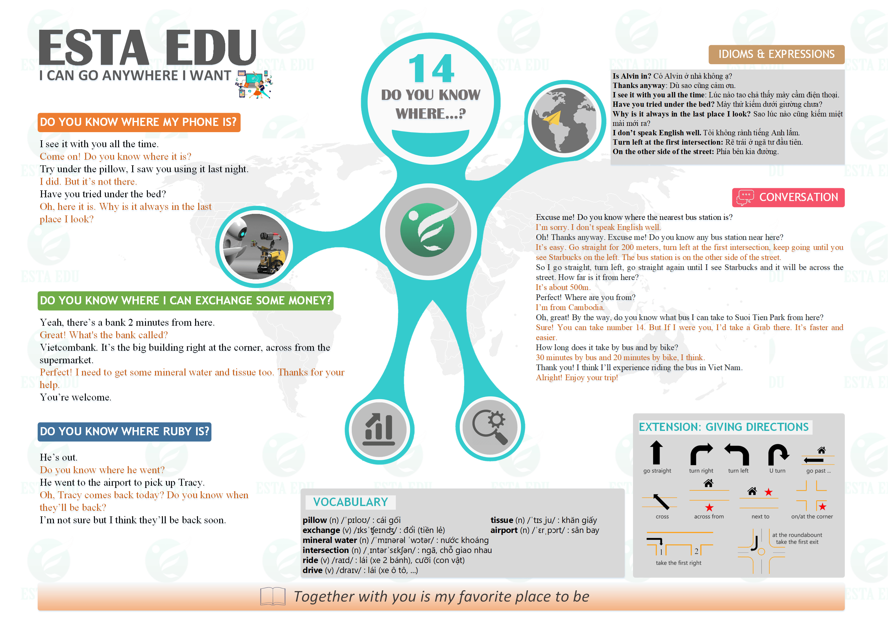
I. ĐOẠN VĂN
1) Tóm tắt
Đoạn văn là ba màn "đi hỏi" kinh điển:
- Màn 1 — tìm điện thoại: "Do you know where my phone is?" — bị bạn trêu "I see it with you all the time", lần lượt thử dưới gối, dưới giường — cuối cùng "Oh, here it is!" — rồi than thở: sao lúc nào nó cũng nằm ở chỗ cuối cùng mình tìm?
- Màn 2 — đổi tiền: "Do you know where I can exchange some money?" — có ngân hàng cách 2 phút, tên Vietcombank, tòa nhà to ngay góc, đối diện siêu thị; tiện tay mua thêm nước khoáng + khăn giấy.
- Màn 3 — tìm người: "Do you know where Ruby is?" — "He's out", đi sân bay đón Tracy; không chắc giờ về nhưng "chắc chắn sắp về thôi".
- Conversation — hỏi đường lên bến xe: người đầu tiên xua tay "I don't speak English well" (vẫn được cảm ơn anyway!); người sau chỉ từng bước: đi thẳng 200m, rẽ trái ở ngã tư đầu, đi tiếp tới khi thấy Starbucks — bến xe ở bên kia đường, khoảng 500m; chỉ luôn chuyến 14 đi Suối Tiên nhưng khuyên mềm: "If I were you, I'd take a Grab — faster and easier".
Điểm chốt: "Do you know where + S + V…?" là câu hỏi gián tiếp — mệnh đề sau "where" giữ nguyên S + V, không đảo (where my bag is, không phải where IS my bag); muốn suồng sã, thân mật thì hỏi thẳng "Where…?" cho lẹ.
2) Khi nào sử dụng?
- Đi du lịch/lạc đường, không rành đường sá: Do you know where I can exchange some money? / Do you know where the nearest bus station is?
- Tìm đồ thất lạc: Do you know where my phone/keys are? → được chỉ chỗ: Try under the bed.
- Tìm người: Do you know where Ruby is? — He's out. · Do you know when they'll be back? (biến thể với when)
- Trong công việc: Do you know where the marketing department is? / Do you know what bus I can take…? (biến thể với what)
- Suồng sã, thân mật thì hỏi thẳng Where…?; lịch sự, gián tiếp thì Do you know where…? — và nhớ: mệnh đề sau where là S + V, không đảo.
3) Bảng cụm từ giao tiếp (IDIOMS & EXPRESSIONS + câu đáng nhớ)
Đọc nhanh như vầy: ⚠️ là lỗi "dịch từ tiếng Việt" hay gặp (gạch = đừng nói) · 💬 là khi nghe ai đó nói cụm này, mình bắt chuyện tiếp bằng câu nào.
| # | Cụm từ | Nghĩa (VI) | Khi nào dùng | Câu mẫu trong bài | ⚠️ Lỗi hay sai | 💬 Đáp lại |
|---|---|---|---|---|---|---|
| 1 | Is Alvin in? | Có Alvin ở nhà không ạ? | Hỏi xem ai đó có "có mặt" không | Is Alvin in? — He's out. | No, he's out. (Không, anh ấy đi rồi ạ) | |
| 2 | Thanks anyway | Dù sao cũng cảm ơn | Cảm ơn khi người ta không giúp được | I'm sorry. I don't speak English well. — Oh! Thanks anyway. | No worries, good luck! (Không sao, chúc may mắn!) | |
| 3 | I see it with you all the time | Lúc nào tao cũng thấy mày cầm cái đó | Trêu bạn tìm thứ mà tự tay luôn cầm | Do you know where my phone is? — I see it with you all the time. | Come on, help me find it! (Thôi mà, giúp tớ tìm đi!) | |
| 4 | Have you tried under the bed? | Mày thử tìm dưới giường chưa? | Gợi chỗ để tìm đồ thất lạc | Have you tried under the bed? | Oh yes! Here it is! (Rồi! Đây rồi!) | |
| 5 | Why is it always in the last place I look? | Sao lúc nào nó cũng ở chỗ cuối cùng mình tìm? | Vừa tìm ra đồ vừa than trời | Oh, here it is. Why is it always in the last place I look? | Story of my life! (Câu chuyện đời tớ đó!) | |
| 6 | I don't speak English well | Tôi không rành tiếng Anh lắm | Từ chối lịch sự khi không giúp được | I'm sorry. I don't speak English well. | No worries, let me show you. (Không sao, để tôi chỉ cho) | |
| 7 | Turn left at the first intersection | Rẽ trái ở ngã tư đầu tiên | Chỉ đường | Go straight for 200 meters, turn left at the first intersection. | Got it, then where? (Rồi, xong thì đi đâu ạ?) | |
| 8 | On the other side of the street | Phía bên kia đường | Chỉ vị trí đối diện | The bus station is on the other side of the street. | Oh, right across from here? (À, đối diện ngay đây hả?) | |
| 9 | Here it is | Đây rồi | Vừa tìm ra đồ thì reo lên | Oh, here it is. | Finally! I told you so. (Cuối cùng! Tớ nói rồi mà) | |
| 10 | There's a bank 2 minutes from here | Có một ngân hàng cách đây 2 phút | Chỉ chỗ nào đó gần đây | Do you know where I can exchange some money? — Yeah, there's a bank 2 minutes from here. | Great, what's it called? (Tuyệt, ngân hàng tên gì ạ?) | |
| 11 | Right at the corner, across from the supermarket | Ngay góc, đối diện siêu thị | Mô tả vị trí dễ nhận ra | It's the big building right at the corner, across from the supermarket. | Oh, I know that building! (À, tớ biết tòa nhà đó!) | |
| 12 | How far is it from here? | Cách đây bao xa? | Hỏi khoảng cách | How far is it from here? — It's about 500m. | About 500m, five minutes' walk. (Khoảng 500m, đi bộ 5 phút) | |
| 13 | If I were you, I'd take a Grab | Nếu tôi là bạn, tôi sẽ bắt Grab | Khuyên mềm một lựa chọn hơn | You can take number 14. But If I were you, I'd take a Grab there. | Good idea, let's Grab it. (Hay đấy, gọi Grab thôi) | |
| 14 | By the way | Nhân tiện | Chêm một ý mới giữa cuộc nói chuyện | By the way, do you know what bus I can take to Suôi Tien Park from here? | Sure, ask away! (Ừ, cứ hỏi đi!) | |
| 15 | Enjoy your trip! | Chúc chuyến đi vui vẻ! | Chúc ai sắp đi chơi/du lịch | Alright! Enjoy your trip! | Thank you! I sure will. (Cảm ơn! Chắc chắn rồi) |
4) Từ vựng (Vocabulary)
| Từ | Từ loại / Phiên âm | Nghĩa |
|---|---|---|
| Pillow | (n) /ˈpɪloʊ/ | Cái gối |
| Exchange | (v) /ɪksˈtʃeɪndʒ/ | Đổi (tiền lẻ) |
| Mineral water | (n) /ˈmɪnərəl ˈwɔːtər/ | Nước khoáng |
| Intersection | (n) /ˌɪntərˈsɪkʃən/ | Ngã tư, chỗ giao nhau |
| Ride | (v) /raɪd/ | Lái (xe 2 bánh), cưỡi (con vật) |
| Drive | (v) /draɪv/ | Lái (xe ô tô, …) |
| Tissue | (n) /ˈtɪsju/ | Khăn giấy |
| Airport | (n) /ˈerˌpɔːrt/ | Sân bay |
| Glass | (n) | Thủy tinh, cái ly |
| Glasses | (pl. n) | Mắt kính |
| Correction pen | (n) | Bút xoá |
| Export ≠ Import | (v/n) | Xuất khẩu (đối lập) nhập khẩu |
| Warehouse | (n) /ˈwerhaʊs/ | Nhà kho |
| Cafeteria = Canteen | (n) | Quán tự phục vụ (căng tin) |
Extension (GIVING DIRECTIONS — chỉ đường):
- Go straight — Đi thẳng
- Turn right / Turn left — Rẽ phải / rẽ trái
- U turn — Quay đầu xe (lái ngược chiều lại)
- Go past … — Đi qua (nơi nào đó)…
- Cross — Băng qua (đường)
- Across from — Đối diện (bên kia đường)
- Next to — Ngay bên cạnh
- On / at the corner — Ở góc đường
- Take the first right — Rẽ phải ở lối rẽ đầu tiên
- At the roundabout, take the first exit — Ở vòng xoay, ra lối ra đầu tiên
5) Đoạn hội thoại gốc (Free Talk)
Do you know where my phone is?
I see it with you all the time.
Come on! Do you know where it is?
Try under the pillow, I saw you using it last night.
I did. But it's not there.
Have you tried under the bed?
Oh, here it is. Why is it always in the last place I look?
Do you know where I can exchange some money?
Yeah, there's a bank 2 minutes from here.
Great! What's the bank called?
Vietcombank. It's the big building right at the corner, across from the supermarket.
Perfect! I need to get some mineral water and tissue too. Thanks for your help.
You're welcome.
Do you know where Ruby is?
He's out.
Do you know where he went?
He went to the airport to pick up Tracy.
Oh, Tracy comes back today? Do you know when they'll be back?
I'm not sure but I think they'll be back soon.Conversation (tiếp tục):
Excuse me! Do you know where the nearest bus station is?
I'm sorry. I don't speak English well.
Oh! Thanks anyway. Excuse me! Do you know any bus station near here?
It's easy. Go straight for 200 meters, turn left at the first intersection, keep going until you see Starbucks on the left. The bus station is on the other side of the street.
So I go straight, turn left, go straight again until I see Starbucks and it will be across the street. How far is it from here?
It's about 500m.
Perfect! Where are you from?
I'm from Cambodia.
Oh, great! By the way, do you know what bus I can take to Suôi Tien Park from here?
Sure! You can take number 14. But If I were you, I'd take a Grab there. It's faster and easier.
How long does it take by bus and by bike?
30 minutes by bus and 20 minutes by bike, I think.
Thank you! I think I'll experience riding the bus in Viet Nam.
Alright! Enjoy your trip!II. NGỮ PHÁP
Tổng quan: 3 điểm ngữ pháp trong bài
| Điểm | Tên | Ứng dụng nói |
|---|---|---|
| 1 | Change vs Exchange (Đổi khác vs Trao đổi) | Chọn đúng từ "đổi" — đồ lấy đồ hay làm khác đi |
| 2 | Do you know where S + V? (Câu gián tiếp) | Hỏi đường/tìm đồ lịch sự, mệnh đề không đảo |
| 3 | Mạo từ THE (The + N xác định) | Nói "cái…" đã rõ; tránh "the" trước tên riêng |
Điểm 1. Change vs Exchange: CHANGE = make different / replacing · EXCHANGE = a trade
Cách dùng: Change = làm khác đi, thay thế (và cả đổi tiền); Exchange = trao đổi — đưa cái này lấy cái khác. Chỗ nào có "trao đi lấy về" thì exchange, chỗ nào chỉ "khác hơn" thì change — Change can mean exchange, but exchange doesn't mean change. Đổi áo lấy size nhỏ dùng cả hai được, nhưng "đổi cuộc đời" thì chỉ change my life, đừng nói exchange my life. Mẹo: nhìn xem có hai bên trao cho nhau không.
Phản xạ hỏi–đáp:
- ❓ Hỏi:
Where can I exchange some money?(Đổi tiền ở đâu nhỉ?) - ➖ Phủ định:
I don't want to change anything.(Tớ chẳng muốn đổi gì cả) - 💬 Đáp lại:
There's a bank 2 minutes from here.(Có ngân hàng cách đây 2 phút)
Ví dụ:
- Ví dụ 1: I want to change this shirt to a smaller size. (Tôi muốn đổi lấy cái size bé hơn)
- Ví dụ 2: I want to exchange this shirt for something else. (Tôi muốn đổi cái áo này lấy một thứ khác…)
- Ví dụ 3: I will change the light bulbs in the kitchen. (Replacing) (Anh sẽ thay cái bóng đèn trong nhà bếp)
- Ví dụ 4: Don't say:
I want to exchange my life.→ Let's say: I want to change my life. (Tôi muốn thay đổi cuộc đời) - Ví dụ 5: Do you know where I can exchange some money? (Anh có biết tôi có thể đổi tiền ở đâu không?)
Biến tấu (tự luyện):
- Đổi danh từ:
I want to exchange dollars for VND.(Tớ muốn đổi đô lấy VND) - Đổi thì:
I changed my plan yesterday.(Hôm qua tớ đổi kế hoạch rồi)
Điểm 2. Do you know where S + V…?: DO YOU KNOW WHERE + S + V…? = WHERE + AUX.V + S?
Cách dùng: Câu hỏi gián tiếp: sau where/when/what, mệnh đề giữ nguyên trật tự S + V, không đảo — where my bag is, không phải where is my bag. Bản chất: cả cụm sau where đã là một câu trần, chỉ thiếu từ nghi vấn đứng đầu. Muốn lịch sự, mềm mại — dùng gián tiếp; hỏi nhanh với bạn thân — Where…? cho lẹ. Mẹo: nói xong "Do you know where…" cứ đi tiếp như đọc một câu trần, đừng đảo lên.
Phản xạ hỏi–đáp:
- ❓ Hỏi:
Do you know where the bus station is?(Anh có biết bến xe ở đâu không?) - ➖ Không biết:
Sorry, I have no idea.(Xin lỗi, tớ chịu) - 💬 Đáp lại:
Yeah, it's just around the corner.(Ừ, ngay gần góc đường đó)
Ví dụ:
- Ví dụ 1: Where is my bag? = Do you know where my bag is? (Anh có biết túi xách của em ở đâu không?)
- Ví dụ 2: Where is the campus? = Do you know where the campus is? (Bạn có biết the campus ở đâu không?)
- Ví dụ 3: Do you know where my phone is? (Anh có biết điện thoại của tôi ở đâu không?)
- Ví dụ 4: Do you know where I can exchange some money? (Bạn có biết chỗ nào đổi tiền được không?)
- Ví dụ 5: Do you know when they'll be back? (Bạn có biết bao giờ họ về không?) — cùng cấu trúc, đổi "where" thành "when"
Biến tấu (tự luyện):
- Đổi where → when:
Do you know when they'll be back?(Bạn có biết bao giờ họ về không?) - Đổi danh từ trong mệnh đề:
Do you know where my keys are?(Bạn có biết chìa khóa ở đâu không?)
Điểm 3. Mạo từ THE: THE + DANH TỪ XÁC ĐỊNH — KHÔNG "the" trước TÊN RIÊNG
Cách dùng: The đánh dấu "cái đó, chắc chắn người nghe biết" — đã xác định thì thêm the. Tên riêng (Big C, the campus) tự thân đã xác định, không thêm the trước nó; nhưng "the + N + thành phần định nghĩa" (the bus station, the nearest ATM) thì vẫn thêm. Mẹo: tự hỏi người nghe đã biết "cái nào" chưa — biết rồi thì the, chưa thì a/an hoặc tên riêng.
Phản xạ hỏi–đáp:
- ❓ Hỏi:
Excuse me, where's the bus station?(Xin lỗi, bến xe ở đâu ạ?) - ➖ Đừng thêm the trước tên riêng:
the campus is near my house.(the campus gần nhà tớ) - 💬 Đáp lại:
Oh, the one on the corner?(À, cái ở góc đường đó hả?)
Ví dụ:
- Ví dụ 1: Don't say:
I'm looking for the Big C supermarket.→ Let's say: I'm looking for the supermarket. Or: I'm looking for Big C supermarket. (Tôi đang tìm siêu thị Big C) - Ví dụ 2: Excuse me! Do you know where the nearest bus station is? (Xin lỗi, anh có biết bến xe gần nhất ở đâu không?)
- Ví dụ 3: It's the big building right at the corner. (Là tòa nhà to ngay ở góc đường)
- Ví dụ 4: The bus station is on the other side of the street. (Bến xe ở phía bên kia đường)
- Ví dụ 5: Where is the campus? — tên riêng thì không thêm "the" (the campus ở đâu thế?)
Biến tấu (tự luyện):
- Đổi danh từ:
Do you know where the nearest ATM is?(Bạn có biết ATM gần nhất ở đâu không?) - Đổi sang tên riêng (bỏ the):
I'm looking for Big C supermarket.(Tớ đang tìm siêu thị Big C)
III. LUYỆN NÓI (drill)
Echo drill (nói to 3 lần, nhanh hơn mỗi lần)
- Do you know where my phone is? — Try under the pillow. Oh, here it is!
- Do you know where I can exchange some money? — There's a bank 2 minutes from here.
- Do you know where the nearest bus station is? — Go straight, turn left at the first intersection.
- Why is it always in the last place I look? — Thanks anyway.
- If I were you, I'd take a Grab there. It's faster and easier.
5 câu hỏi tự luyện (tự hỏi + trả lời)
- Do you know where my glasses are? — Try under the bed / I think they're on the top shelf.
- Do you know where I can get some beer around here? — There's a convenience store 2 minutes from here, across from…
- Do you know where I can stay in Đà Lạt? — If I were you, I'd book a homestay near the lake — it's cheaper and nicer.
- Do you know where the marketing department is? — It's next to the warehouse, on/at the corner of the second floor.
- Do you know what we can get in the cafeteria? — I'm not sure but I think they have coffee, bánh mì and mineral water.
✅ Checkpoint: hỏi 5 chỗ quanh mình bằng "Do you know where + S + V…?" (không đảo!), chỉ đường lại bằng go straight / turn left / across from — ghi âm lại.
15Have you ever…?Đã bao giờ bạn… chưa?
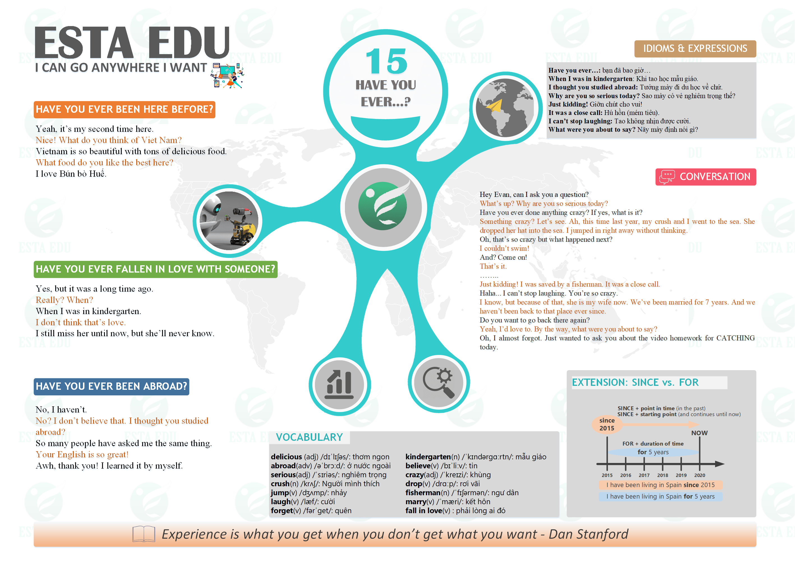
I. ĐOẠN VĂN
1) Tóm tắt
Đoạn văn là cuộc "đào quá khứ" bằng Have you ever:
- Lần thứ hai đến Việt Nam: "Have you ever been here before?" — "Yeah, it's my second time here." — Việt Nam đẹp với ton of món ngon, và người kia là fan cứng Bún bò Huế.
- Mối tình hồi mẫu giáo: hỏi "đã từng yêu ai chưa?" — có, When I was in kindergarten; người nghe chê "đấy đâu phải yêu", nhưng anh vẫn nhớ cô bé đó đến tận giờ, mà cô bé thì đâu có biết.
- Điều tra "du học": hỏi "Have you ever been abroad?" — No, I haven't; nhưng giọng Anh quá chuẩn nên ai cũng tưởng đã du học — hóa ra tự học (I learned it by myself), và rất nhiều người đã hỏi y hệt câu đó.
- Chuyện điên rồ nhất đời: năm ngoái nhảy xuống biển vớ mũ cho crush mà không biết bơi — được ngư dân cứu vớt, "It was a close call"; nhờ chuyện đó cô ấy thành vợ, cưới nhau được 7 năm rồi, chưa bao giờ quay lại chỗ đó.
Điểm chốt: học "Have you ever + V3/PP?" và chuỗi trả lời "Yes, I have. / No, I haven't." rồi kể tiếp mốc thời gian quá khứ (When I was…, It was … ago).
2) Khi nào sử dụng?
- Hỏi về trải nghiệm đã từng / chưa từng (tính đến hiện tại): Have you ever been abroad / fallen in love / done anything crazy?
- Trả lời theo mạch: Yes, I have. + chi tiết hoặc No, I haven't. + lý do; rồi hỏi xoáy thêm Really? When? / What happened next?
- Đặt mốc thời gian quá khứ: When I was in kindergarten / when I was 5 / It was 2 years ago.
- Nói về số lần đến một nơi: It's my second time here.; khoe chuyện tự học: I learned it by myself.
- Trêu đùa & khắc họa cảm xúc: Just kidding!, It was a close call, I can't stop laughing.
3) Bảng cụm từ giao tiếp (IDIOMS & EXPRESSIONS + câu đáng nhớ)
Đọc nhanh như vầy: ⚠️ là lỗi "dịch từ tiếng Việt" hay gặp (gạch = đừng nói) · 💬 là khi nghe ai đó nói cụm này, mình bắt chuyện tiếp bằng câu nào.
| # | Cụm từ | Nghĩa (VI) | Khi nào dùng | Câu mẫu trong bài | ⚠️ Lỗi hay sai | 💬 Đáp lại |
|---|---|---|---|---|---|---|
| 1 | Have you ever…? | Bạn đã bao giờ… chưa? | Mở đầu hỏi về trải nghiệm quá khứ | Have you ever been here before? | No, I haven't. Why do you ask? (Chưa, sao cậu hỏi vậy?) | |
| 2 | When I was in kindergarten | Khi tao học mẫu giáo | Nêu mốc thời gian trong quá khứ | When I was in kindergarten. | Aww, that's so sweet! (Trời, dễ thương thật!) | |
| 3 | I thought you studied abroad | Tưởng mày đi du học về chứ | Bày tỏ sự nhầm tưởng về ai | I thought you studied abroad? | I wish! I learned it by myself. (Ước thế! Tớ tự học đấy) | |
| 4 | Why are you so serious today? | Sao mày có vẻ nghiêm trọng thế? | Hỏi khi bạn đột nhiên nghiêm túc | Why are you so serious today? | I have something to ask. (Tớ có chuyện muốn hỏi) | |
| 5 | Just kidding! | Giỡn chút cho vui! | Trêu đùa rồi bỏ qua | Just kidding! I was saved by a fisherman. | You got me again! (Tớ lại bị cậu lừa rồi!) | |
| 6 | It was a close call | Hú hồn (mém tiêu) | Chuyện suýt va chạm, vuột qua sát nút | I was saved by a fisherman. It was a close call. | Glad you're okay! (May mà anh ổn!) | |
| 7 | I can't stop laughing | Không nhịn được cười | Cười mất điều khiển | Haha.. I can't stop laughing. | Come on, it was scary! (Thôi, chuyện đó sợ lắm đó!) | |
| 8 | What were you about to say? | Nãy mày định nói gì? | Hỏi lại khi ai nói dở dang | By the way, what were you about to say? | Oh, almost forgot — about homework. (À suýt quên — chuyện bài tập) | |
| 9 | It's my second time here | Đây là lần thứ hai mình đến đây | Trả lời câu hỏi "đã từng đến chưa" | Yeah, it's my second time here. | So you know the good spots! (Vậy cậu rành chỗ ngon rồi!) | |
| 10 | I learned it by myself | Tớ tự học đấy | Kể chuyện tự học, không ai dạy | Awh, thank you! I learned it by myself. | Wow, self-taught? Respect! (Trời, tự học cơ à? Khen đấy!) | |
| 11 | We've been married for 7 years | Chúng tôi cưới nhau được 7 năm rồi | Nói thời gian đã kéo dài đến hiện tại | We've been married for 7 years. | Time really flies! (Thời gian trôi ghê thật!) |
4) Từ vựng (Vocabulary)
| Từ | Từ loại / Phiên âm | Nghĩa |
|---|---|---|
| Delicious | (adj) /dɪˈlɪʃəs/ | Thơm ngon |
| Abroad | (adv) /əˈbrɔːd/ | Ở nước ngoài |
| Serious | (adj) /ˈsɪriəs/ | Nghiêm trọng |
| Crush | (n) /krʌʃ/ | Người mình thích |
| Jump | (v) /dʒʌmp/ | Nhảy |
| Laugh | (v) /læf/ | Cười |
| Forget | (v) /fərˈget/ | Quên |
| Kindergarten | (n) /ˈkɪndərɡɑːrtn/ | Mẫu giáo |
| Believe | (v) /bɪˈliːv/ | Tin |
| Crazy | (adj) /ˈkreɪzi/ | Khùng, điên rồ |
| Drop | (v) /drɑːp/ | Rơi vãi |
| Fisherman | (n) /ˈfɪʃərmən/ | Ngư dân |
| Marry | (v) /ˈmæri/ | Kết hôn |
| Fall in love (with s.o) | (v) | Phải lòng ai đó |
| Win the lottery | (v) /ˈlɑːtəri/ | Trúng số |
| Tattoo | (v/n) /təˈtuː/ | Xăm, hình xăm |
| Argument | (n) /ˈɑːrɡjumənt/ | Tranh luận, tranh cãi |
| Work under pressure | (v.phr) /ˈpreʃər/ | Làm việc dưới áp lực lớn |
Extension (SINCE vs. FOR — từ mốc nào, kéo dài bao lâu):
- SINCE + mốc thời điểm trong quá khứ (point in time — and continues until now): I have been living in Spain since 2015. (Tôi sống ở Tây Ban Nha từ năm 2015 đến giờ.)
- FOR + khoảng thời gian (duration of time): I have been living in Spain for 5 years. (Tôi đã sống ở Tây Ban Nha 5 năm.)
5) Đoạn hội thoại gốc (Free Talk)
Have you ever been here before?
Yeah, it's my second time here.
Nice! What do you think of Viet Nam?
Vietnam is so beautiful with tons of delicious food.
What food do you like the best here?
I love Bún bò Huế.
Have you ever fallen in love with someone?
Yes, but it was a long time ago.
Really? When?
When I was in kindergarten.
I don't think that's love.
I still miss her until now but she'll never know.
Have you ever been abroad?
No, I haven't.
No? I don't believe that. I thought you studied abroad?
So many people have asked me the same thing.
Your English is so great!
Awh, thank you! I learned it by myself.Conversation (tiếp tục):
Hey Evan, can I ask you a question?
What's up? Why are you so serious today?
Have you ever done anything crazy? If yes, what is it?
Something crazy? Let's see. Ah, this time last year, my crush and I went to the sea. She dropped her hat into the sea. I jumped in right away without thinking.
Oh, that's so crazy but what happened next?
I couldn't swim!
And? Come on!
That's it.
…….
Just kidding! I was saved by a fisherman. It was a close call.
Haha.. I can't stop laughing. You're so crazy.
I know, but because of that, she is my wife now. We've been married for 7 years. And we haven't been back to that place ever since.
Do you want to go back there again?
Yeah, I'd love to. By the way, what were you about to say?
Oh, I almost forgot. Just wanted to ask you about the video homework for CATCHING today.II. NGỮ PHÁP
Tổng quan: 5 điểm ngữ pháp trong bài
| Điểm | Tên | Ứng dụng nói |
|---|---|---|
| 1 | It was + time + ago (Be + mốc quá khứ) | Chỉ lại thời điểm "đã… rồi" |
| 2 | S + was/were + in + N (thời kỳ quá khứ) | Kể giai đoạn học hành, cuộc sống |
| 3 | When + S + was/were + age/noun | Gắn chuyện với tuổi/định danh quá khứ |
| 4 | Have you ever + V3/PP (Hiện tại hoàn thành) | Hỏi trải nghiệm "đã từng chưa" |
| 5 | "X and I" — đặt mình ra sau (lịch sự) | Kể chuyện có mình + người khác |
Điểm 1. It was + time + ago: IT WAS + (TIME) + AGO
Cách dùng: Chỉ mốc quá khứ gọn lỏn, không cần câu dài — ago luôn đứng cuối cụm thời gian và câu phải chia quá khứ đơn: I met her 5 years ago, không phải I have met her for 5 years ago. Bản chất: ago kéo thời gian ngược về quá khứ tính từ hiện tại. Mẹo nói: nhấn số rồi thả "ago" xuống — Two years ago! nghe tự nhiên là đạt.
Phản xạ hỏi–đáp:
- ❓ Hỏi:
When did you start learning English?(Cậu học tiếng Anh từ khi nào?) - ➖ Phủ định:
Not long ago, just a few months.(Không lâu đâu, vài tháng thôi) - 💬 Đáp lại:
Wow, that fast? Impressive!(Trời, nhanh vậy? Giỏi ghê!)
Ví dụ:
- Ví dụ 1: It was 2 years ago. (Đã 2 năm qua)
- Ví dụ 2: It was 5 months ago. (Đã 5 tháng qua)
- Ví dụ 3: It was a long time ago. (Đã lâu lắm rồi)
- Ví dụ 4: — When did you fall in love? — It was a long time ago. (Đã lâu lắm rồi)
- Ví dụ 5: Never say:
I have met her for 5 years ago.→ Let's say: I met her 5 years ago. (Tôi đã gặp cô ấy 5 năm trước)
Biến tấu (tự luyện):
- Đổi mốc thời gian:
It was 10 years ago.(Đã 10 năm rồi) - Đổi chủ ngữ it → I:
I moved here 2 years ago.(Tớ chuyển tới đây 2 năm trước)
Điểm 2. S + was/were + in + N: WHEN + S + WAS/WERE + IN + GRADE 1 / HIGH SCHOOL / KINDERGARTEN…
Cách dùng: Nói mình đang ở giai đoạn học hành/nơi chốn nào đó trong quá khứ — in + kindergarten/high school/college. Chia was/were theo chủ ngữ (I was, we were — đừng nói when we was). Cặp này là "mở đầu truyện" kinh điển khi kể chuyện cũ. Mẹo: nói nhẹ "When I was in…" rồi dừng một nhịp, người nghe lập tức vào story.
Phản xạ hỏi–đáp:
- ❓ Hỏi:
Were you in high school back then?(Hồi đó cậu đang học cấp ba hả?) - ➖ Phủ định:
No, I was in college back then.(Không, hồi đó tớ đang học đại học) - 💬 Đáp lại:
Me too — same era!(Tớ cũng vậy — cùng thời luôn!)
Ví dụ:
- Ví dụ 1: When I was in grade 1. (Khi tớ đang học lớp 1)
- Ví dụ 2: When we were in high school. (Khi tớ đang học cấp 2)
- Ví dụ 3: I first fell in love when I was in kindergarten. (Tớ yêu lần đầu là khi tớ đang học mẫu giáo đấy)
- Ví dụ 4: I met my best friend when I was in primary school. (Tớ thân với bạn thân nhất từ hồi tiểu học)
- Ví dụ 5: I lived in Da Nang when I was in college. (Tớ sống ở Đà Nẵng thời còn học đại học)
Biến tấu (tự luyện):
- Đổi giai đoạn:
I learned cooking when I was in college.(Tớ học nấu ăn hồi đại học) - Đổi chủ ngữ I → we:
We played football when we were in high school.(Bọn tớ đá bóng hồi cấp ba)
Điểm 3. When + S + was/were + age/noun: WHEN + S + WAS/WERE + AGE / A LITTLE GIRL / A STUDENT…
Cách dùng: Gắn câu chuyện với tuổi hoặc danh phận quá khứ — when I was 5 / when she was a little girl / when I was a student. Khác Điểm 2: chỗ này nói tuổi và "lúc đó là ai", chỗ kia nói giai đoạn nơi chốn. Bỏ "years old" vẫn rõ nghĩa, nói lướt rất tự nhiên. Mẹo: sau was/were là tuổi hoặc danh từ, đừng nhét động từ vào.
Phản xạ hỏi–đáp:
- ❓ Hỏi:
When did you learn to ride a bike?(Cậu học đạp xe lúc mấy tuổi?) - ➖ Phủ định:
Never — I still can't ride one.(Chưa bao giờ — giờ tớ vẫn không đạp nổi) - 💬 Đáp lại:
When I was 7, I think.(Lúc 7 tuổi thì phải)
Ví dụ:
- Ví dụ 1: When I was 5 (years old). (Khi tớ lên 5 tuổi)
- Ví dụ 2: When she was a little girl, I knew she was my type. (Khi cô ấy còn bé xíu tớ đã biết đó là hình mẫu của mình)
- Ví dụ 3: I learned to ride a bike when I was 7. (Tớ học đạp xe lúc 7 tuổi)
- Ví dụ 4: When I was a student, I skipped breakfast every day. (Thời còn đi học, tớ bỏ bữa sáng mỗi ngày)
- Ví dụ 5: When he was a teenager, he played the guitar every night. (Hồi thiếu niên, anh ấy đánh đàn mỗi tối)
Biến tấu (tự luyện):
- Đổi tuổi:
When I was 10, I moved to HCMC.(Lên 10 tuổi tớ chuyển vào Sài Gòn) - Đổi danh phận:
When I was a student, I stayed up late.(Thời sinh viên tớ thức khuya lắm)
Điểm 4. Have you ever + V3/PP: HAVE/HAS + S + EVER + V3/PP?
Cách dùng: Hỏi trải nghiệm tính đến hiện tại — chưa cần mốc thời gian, chỉ hỏi "đã từng hay chưa". Trả lời theo mạch Yes, I have. / No, I haven't. rồi mới kể chi tiết; đã nhét mốc vào (ago, yesterday) thì chuyển sang quá khứ đơn. Ever chỉ đứng trong câu hỏi, trả lời thì bỏ ever. Mẹo: nghe "ever" là nhớ ngay V3/PP, đừng nói Have you ever went.
Phản xạ hỏi–đáp:
- ❓ Hỏi:
Have you ever won the lottery?(Cậu đã từng trúng số chưa?) - ➖ Phủ định:
No, I haven't — not even once.(Chưa — một lần cũng chưa) - 💬 Đáp lại:
Really? When? Tell me more!(Thật à? Khi nào? Kể tiếp đi!)
Ví dụ:
- Ví dụ 1: Have you ever made someone cry? (Bạn đã từng làm ai đó khóc chưa?)
- Ví dụ 2: Have you ever asked him directly? (Cậu đã bao giờ hỏi thẳng anh ấy chưa?)
- Ví dụ 3: Have you ever been abroad? — No, I haven't. (Bạn đã từng ra nước ngoài chưa? — Chưa)
- Ví dụ 4: Have you ever cooked instant noodles? — Yes, I have. A thousand times. (Bạn đã từng nấu mì gói chưa? — Rồi, nghìn lần rồi)
- Ví dụ 5: So many people have asked me the same thing. (Rất nhiều người đã hỏi tôi y hệt câu đó)
Biến tấu (tự luyện):
- Đổi động từ:
Have you ever gotten a tattoo?(Cậu từng xăm hình chưa?) - Đổi chủ ngữ you → she:
Has she ever been abroad?(Cô ấy từng ra nước ngoài chưa?)
Điểm 5. Đặt mình ra sau (lịch sự): X AND I (người khác trước, "I" sau)
Cách dùng: Kể chuyện có mình + người khác thì đặt người khác trước, "I" sau cùng — khiêm tốn, nghe tự nhiên, người bản xứ nói thế cả ngày. Lỗi kinh điển: I and my girlfriend. Lưu ý: khi làm tân ngữ vẫn đổi thành me (she met my wife and me). Mẹo: cứ nhớ nguyên tắc "mình đứng cuối" là đúng 90%.
Phản xạ hỏi–đáp:
- ➕ Nói:
My brother and I love spicy food.(Tớ và anh trai mê đồ cay) - ➖ Đừng nói:
I and my brother…→My brother and I…✓ (Mình đứng sau cùng) - 💬 Đáp lại:
Nice, introduce me sometime!(Hay đấy, giới thiệu tớ với đi!)
Ví dụ:
- Ví dụ 1: Never say:
I and my girlfriend love doing crazy thing.→ Let's say: My girlfriend and I love doing crazy things. (Tớ và bạn gái khoái mấy chuyện điên rồ) - Ví dụ 2: My friends and I went to the sea last year. (Tớ và hội bạn đi biển năm ngoái)
- Ví dụ 3: My wife and I have been married for 7 years. (Tôi và vợ cưới nhau được 7 năm rồi)
- Ví dụ 4: My brother and I shared a room when we were kids. (Tớ và anh trai ở chung phòng hồi nhỏ)
- Ví dụ 5: You and he should call her now. (Bạn và anh ấy nên gọi cho cô ấy ngay bây giờ)
Biến tấu (tự luyện):
- Đổi danh từ:
My co-workers and I go out every Friday.(Tớ với đồng nghiệp đi chơi mỗi thứ sáu) - Đổi động từ:
My girlfriend and I travel twice a year.(Tớ và bạn gái đi chơi hai lần mỗi năm)
III. LUYỆN NÓI (drill)
Echo drill (nói to 3 lần, nhanh hơn mỗi lần)
- Have you ever been here before? — Yeah, it's my second time here.
- Have you ever fallen in love with someone? — Yes, but it was a long time ago. When I was in kindergarten.
- Have you ever been abroad? — No, I haven't. I thought you studied abroad? So many people have asked me the same thing.
- Vietnam is so beautiful with tons of delicious food. — I love Bún bò Huế.
- Just kidding! I was saved by a fisherman. It was a close call. I can't stop laughing.
5 câu hỏi tự luyện (tự hỏi + trả lời)
- Have you ever met Emerald in person / checked in at the the campus? — Yes, I have. It was… / No, I haven't, but I'm going to…
- Have you ever won the lottery / got a tattoo / made Chưng Cake / tried spicy noodles? — No, I haven't. I'm afraid of… / Yes, and it was a close call.
- Have you ever fallen in love with someone? When? — When I was in…, it was … ago. I still miss him/her until now.
- Have you ever worked overtime / worked under pressure / had an argument with your co-workers? — Yes, I have. I felt… because… (How did you feel?)
- Have you ever started your own business / worked for a foreign company / made the same mistake twice? — No, I haven't, but I'm thinking of…
✅ Checkpoint: hỏi & đáp "Have you ever…?" với 5 trải nghiệm thật của mình — nhớ Yes, I have / No, I haven't rồi kể mốc thời gian (When I was…, It was … ago). Ghi âm lại.
16Did you…?Bạn đã… chưa?
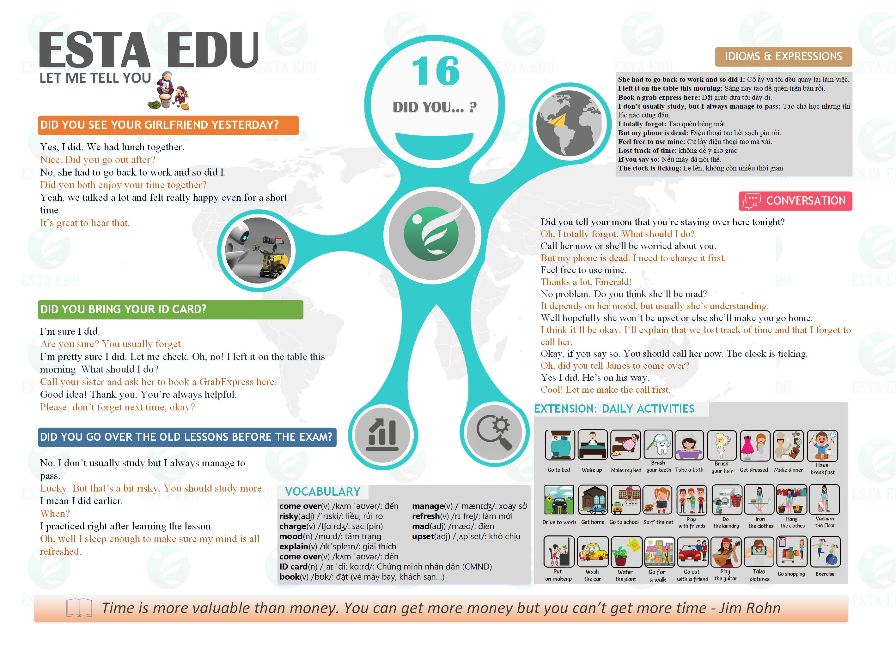
I. ĐOẠN VĂN
1) Tóm tắt
Đoạn văn là cuộc "báo cáo quá khứ" bằng Did you…?:
- Hẹn hò hôm qua: hỏi "Did you see your girlfriend yesterday?" — có, hai đứa ăn trưa chung; hỏi tiếp "có ra ngoài sau đó không?" — không, vì cả hai phải quay lại làm việc (and so did I); dù ngắn ngủi mà nói chuyện vui, thấy thật sự hạnh phúc.
- CMND trên bàn: hỏi "Did you bring your ID card?" — "chắc chắn có rồi"; kiểm tra lại thì để quên trên bàn sáng nay — gọi chị gái đặt GrabExpress giao tới; lời nhắc đanh thép: "lần sau đừng quên nữa nhé".
- Ôn bài trước thi: hỏi "có ôn lại bài cũ trước thi chưa?" — câu trả lời "tao chả học nhưng lúc nào cũng đậu"; bị chê liều, rủi ro, hóa ra là ôn ngay sau khi học bài, còn người kia thì ngủ đủ để đầu óc refresh.
- Ở lại nhà bạn đêm: quên báo mẹ đang ngủ lại đây (I totally forgot), mà điện thoại thì hết sạch pin — mượn máy bạn gọi về; mẹ thì "tùy tâm trạng nhưng thường dễ hiểu"; lý do: quên mất giờ giấc (lost track of time); giục nhau "The clock is ticking"; xong hỏi luôn "did you tell James to come over? — rồi, đang trên đường".
Điểm chốt: học "Did you + V2/ed?" → trả lời Yes, I did. / No, I didn't. rồi mở rộng theo chủ đề, kèm mốc thời gian quá khứ (yesterday, last night, this morning).
2) Khi nào sử dụng?
- Hỏi việc đã làm hay chưa, tại một thời điểm quá khứ cụ thể: Did you see your girlfriend yesterday? / Did you bring your ID card? / Did you go over the old lessons before the exam?
- Trả lời: Yes, I did. + mở rộng hoặc No, I didn't. + lý do/kế hoạch (I'll call her this weekend.)
- Hỏi dồn dập kiểu "điều tra": Did you go out after? — Did you both enjoy your time together? — Are you sure?
- Xin lỗi & nhắc nhở sau sự cố: I totally forgot. / I left it on the table this morning. / Lost track of time. / Please, don't forget next time, okay?
- Biến thể "đồng tình": She had to go back to work and so did I. — cũng dùng cho mình.
3) Bảng cụm từ giao tiếp (IDIOMS & EXPRESSIONS + câu đáng nhớ)
Đọc nhanh như vầy: ⚠️ là lỗi "dịch từ tiếng Việt" hay gặp (gạch = đừng nói) · 💬 là khi nghe ai đó nói cụm này, mình bắt chuyện tiếp bằng câu nào.
| # | Cụm từ | Nghĩa (VI) | Khi nào dùng | Câu mẫu trong bài | ⚠️ Lỗi hay sai | 💬 Đáp lại |
|---|---|---|---|---|---|---|
| 1 | … and so did I | Cô ấy và tôi đều quay lại làm việc | Đồng tình "tôi cũng vậy" ở quá khứ | No, she had to go back to work and so did I. | Yeah, same for me. (Ừ, tớ cũng vậy mà) | |
| 2 | I left it on the table this morning | Sáng nay tao để quên trên bàn rồi | Kể việc bỏ quên đồ | Oh, no! I left it on the table this morning. | Oh no, go get it fast! (Trời, chạy đi lấy lẹ!) | |
| 3 | Book a GrabExpress here | Đặt grab đưa tới đây đi | Nhờ ai đặt dịch vụ giao đồ | Call your sister and ask her to book a GrabExpress here. | Good idea, calling her now. (Hay đấy, gọi chị ngay đây) | |
| 4 | I don't usually study, but I always manage to pass | Tao chả học nhưng thi lúc nào cũng đậu | Khoe kiểu "học dở nhưng vẫn qua ải" | No, I don't usually study but I always manage to pass. | Lucky you, still risky! (May ghê, mà vẫn liều đó!) | |
| 5 | I totally forgot | Tao quên beng mất | Nhận lỗi khi quên việc | Oh, I totally forgot. | Chill, just call her now. (Bình tĩnh, gọi mẹ ngay đi) | |
| 6 | But my phone is dead | Điện thoại tao hết sạch pin rồi | Xin lỗi không gọi/nhắn được | But my phone is dead. I need to charge it first. | Feel free to use mine. (Cứ lấy máy tớ mà xài) | |
| 7 | Feel free to use mine | Cứ lấy điện thoại tao mà xài | Cho mượn đồ của mình | Feel free to use mine. | Thanks a lot, Emerald! (Cảm ơn Emerald nhiều!) | |
| 8 | Lost track of time | Không để ý giờ giấc | Xin lỗi vì quên thời gian | I'll explain that we lost track of time… | Happens to me too! (Tớ cũng dính hoài!) | |
| 9 | If you say so | Nếu mày đã nói thế (mày nói sao thì nghe) | Chấp nhận lời người khác, kèm hoài nghi vui | Okay, if you say so. | I mean it, call her now! (Tớ nói thật, gọi mẹ đi!) | |
| 10 | The clock is ticking | Lẹ lên, không còn nhiều thời gian | Giục giã khi thời gian cạn | You should call her now. The clock is ticking. | Okay, calling her right now! (Ừ ừ, gọi mẹ liền đây!) | |
| 11 | It depends on her mood | Còn tùy tâm trạng của mẹ ấy | Trả lời khi không chắc chắn | It depends on her mood, but usually she's understanding. | Fingers crossed then! (Vậy thì cầu may thôi!) | |
| 12 | I'm pretty sure I did | Tớ khá chắc là đã làm rồi | Khẳng định dịu dàng khi bị nghi ngờ | I'm pretty sure I did. Let me check. | Better check it twice! (Kiểm tra lại cho chắc đi!) | |
| 13 | Please, don't forget next time, okay? | Lần sau đừng quên nữa nhé | Nhắc khéo sau lỗi quên | Please, don't forget next time, okay? | I promise I won't! (Tớ hứa là không quên!) |
4) Từ vựng (Vocabulary)
| Từ | Từ loại / Phiên âm | Nghĩa |
|---|---|---|
| Come over | (v) /kʌm ˈəʊvər/ | Đến (ghé nhà ai đó) |
| Risky | (adj) /ˈriski/ | Liều, rủi ro |
| Charge | (v) /tʃaːrdʒ/ | Sạc (pin) |
| Mood | (n) /muːd/ | Tâm trạng |
| Explain | (v) /ɪkˈspleɪn/ | Giải thích |
| ID card | (n) /ˌaɪ ˈdiː kɑːrd/ | Chứng minh nhân dân (CMND) |
| Book | (v) /bʊk/ | Đặt (vé máy bay, khách sạn…) |
| Manage | (v) /ˈmænɪdʒ/ | Xoay sở |
| Refresh | (v) /rɪˈfreʃ/ | Làm mới |
| Mad | (adj) /mæd/ | Điên |
| Upset | (adj) /ˌʌpˈset/ | Khó chịu |
| Latest | (adj) /ˈleɪtɪst/ | Gần nhất, mới nhất |
Extension (Daily Activities — hoạt động hằng ngày):
- Go to bed — đi ngủ
- Wake up — thức dậy
- Make my bed — dọn giường
- Brush your teeth — đánh răng
- Take a bath — tắm
- Brush your hair — chải tóc
- Get dressed — mặc đồ
- Make dinner — nấu bữa tối
- Have breakfast — ăn sáng
- Drive to work — lái xe đi làm
- Get home — về đến nhà
- Go to school — đi học
- Surf the net — lướt mạng
- Play with friends — chơi với bạn
- Do the laundry — giặt đồ
- Iron the clothes — ủi quần áo
- Hang the clothes — phơi quần áo
- Vacuum the floor — hút bụi sàn
- Put on makeup — trang điểm
- Wash the car — rửa xe
- Water the plant — tưới cây
- Go for a walk — đi dạo
- Go out with a friend — đi chơi với bạn
- Play the guitar — đánh đàn
- Take pictures — chụp ảnh
- Go shopping — đi mua sắm
- Exercise — tập thể dục
- Nhớ luật nhỏ: sau giới từ (prep), động từ luôn ở dạng V-ing — before going to the party / joining the center…, I'm afraid of making you cry.
5) Đoạn hội thoại gốc (Free Talk)
Did you see your girlfriend yesterday?
Yes, I did. We had lunch together.
Nice. Did you go out after?
No, she had to go back to work and so did I.
Did you both enjoy your time together?
Yeah, we talked a lot and felt really happy even for a short time.
It's great to hear that.
Did you bring your ID card?
I'm sure I did.
Are you sure? You usually forget.
I'm pretty sure I did. Let me check.
Oh, no! I left it on the table this morning. What should I do?
Call your sister and ask her to book a GrabExpress here.
Good idea! Thank you. You're always helpful.
Please, don't forget next time, okay?
Did you go over the old lessons before the exam?
No, I don't usually study but I always manage to pass.
Lucky. But that's a bit risky. You should study more.
I mean I did earlier.
When?
I practiced right after learning the lesson.
Oh, well I sleep enough to make sure my mind is all refreshed.Conversation (tiếp tục):
Did you tell your mom that you're staying over here tonight?
Oh, I totally forgot. What should I do?
Call her now or she'll be worried about you.
But my phone is dead. I need to charge it first.
Feel free to use mine.
Thanks a lot, Emerald!
No problem. Do you think she'll be mad?
It depends on her mood, but usually she's understanding.
Well hopefully she won't be upset or else she'll make you go home.
I think it'll be okay. I'll explain that we lost track of time and that I forgot to call her.
Okay, if you say so. You should call her now. The clock is ticking.
Oh, did you tell James to come over?
Yes I did. He's on his way.
Cool! Let me make the call first.II. NGỮ PHÁP
Tổng quan: 5 điểm ngữ pháp trong bài
| Điểm | Tên | Ứng dụng nói |
|---|---|---|
| 1 | Each other / One another / Together | Nói "cùng nhau" đúng cách |
| 2 | Or nối 2 khả năng | Hỏi chọn A hay B |
| 3 | Or sau động từ phủ định | "Không A cũng không B" |
| 4 | Or = if not (cảnh báo) | Giục: làm X đi, không là… |
| 5 | Or để diễn đạt lại / chỉnh câu | Nói lại từ/câu cho rõ hơn |
Điểm 1. Each other – One another – Together (cùng nhau): S + V + EACH OTHER / ONE ANOTHER / TOGETHER
Cách dùng: Ba mùi "cùng nhau": each other cho 2 người có tác động qua lại (hỗ trợ nhau, hiểu nhau); one another dùng tương tự nhưng thiên về 3 người trở lên; together là làm chung một việc nhưng không nhất thiết tác động lẫn nhau (đi chung, ăn chung). Nói help together khi ý là giúp nhau là lệch nghĩa ngay. Mẹo: có qua lại → each other/one another; chỉ cù làm → together.
Phản xạ hỏi–đáp:
- ❓ Hỏi:
Do you two talk to each other often?(Hai đứa hay nói chuyện với nhau không?) - ➖ Phủ định:
No, we hardly ever see each other.(Không, tụi tớ hiếm khi gặp nhau) - 💬 Đáp lại:
Yeah, we help each other a lot.(Ừ, tụi tớ giúp nhau nhiều mà)
Ví dụ:
- Ví dụ 1: May and Ms always support each other. (May và Ms luôn hỗ trợ cho nhau)
- Ví dụ 2: We've understood a lot about one another after the trip. (Chúng tôi đã hiểu nhiều về nhau sau chuyến đi)
- Ví dụ 3: We went to Da Lat together last week. (Tuần trước tụi tớ đi Đà Lạt cùng nhau)
- Ví dụ 4: We had lunch together yesterday. (Hôm qua tụi tớ ăn trưa cùng nhau)
- Ví dụ 5: The two of us call each other every night. (Hai đứa gọi cho nhau mỗi tối)
Biến tấu (tự luyện):
- Đổi each other → together:
We went to Da Lat together.(Bọn tớ đi Đà Lạt cùng nhau) - Đổi chủ ngữ:
My classmates help one another before exams.(Bạn cùng lớp giúp nhau trước kỳ thi)
Điểm 2. Or nối 2 khả năng khác nhau: CHỌN A OR B
Cách dùng: Or đặt giữa hai lựa chọn cùng loại (V với V, N với N) — hỏi xem chọn cái nào. Bản chất: hai vế phải "ngang hàng", lệch loại là câu rơi rớt. Mẹo: đọc to hai vế, thấy cân đối là đúng; câu hỏi chọn A hay B là chỗ dùng or nhiều nhất.
Phản xạ hỏi–đáp:
- ❓ Hỏi:
Should we call her now or tomorrow?(Gọi bây giờ hay chờ mai?) - ➖ Trả lấp lờ:
Either is fine, you pick.(Cái nào cũng được, cậu chọn đi) - 💬 Đáp lại:
Tea, please!(Trà nhé!)
Ví dụ:
- Ví dụ 1: Could we meet on Sunday or Monday? (Chúng ta có thể gặp nhau vào chủ nhật hoặc thứ hai không?)
- Ví dụ 2: Do you feel like going out or staying at home now? (Bây giờ em muốn ra ngoài ăn hay ở nhà?)
- Ví dụ 3: Did you go out or stay home after lunch? (Sau bữa trưa cậu có ra ngoài không hay ở nhà?)
- Ví dụ 4: Do you want tea or coffee? (Cậu muốn trà hay cà phê?)
- Ví dụ 5: Should we call her now or tomorrow morning? (Gọi ngay bây giờ hay chờ sáng mai đây?)
Biến tấu (tự luyện):
- Đổi danh từ:
Do you want juice or milk tea?(Cậu muốn nước ép hay trà sữa?) - Đổi thì:
Will you stay home or go out tonight?(Tối nay cậu ở nhà hay đi chơi?)
Điểm 3. Or sau động từ phủ định: NOT / NEVER / HARDLY … + A OR B
Cách dùng: Đứng sau not/never/hardly, or mang nghĩa "và cũng không" — hai vế cùng phủ định, chỉ cần một lần phủ định ở trợ động từ là đủ, đừng phủ định lại lần hai. Mẹo: nói She didn't call or didn't text là thừa; bỏ nốt "didn't" thứ hai, câu gọn mà nghĩa vẫn phủ đủ.
Phản xạ hỏi–đáp:
- ➕ Nói:
She never calls or texts me first.(Cô ấy chẳng bao giờ gọi hay nhắn trước) - ❓ Hỏi xác nhận:
You didn't eat or drink anything?(Cậu không ăn không uống gì à?) - 💬 Đáp lại:
I was in such a hurry.(Sáng tớ vội quá mà)
Ví dụ:
- Ví dụ 1: She hardly smiles or laughs. (Cô ấy hiếm khi mỉm cười hay cười to)
- Ví dụ 2: They never feel happy or relaxed. (Họ chưa bao giờ thấy vui vẻ hay thư thái)
- Ví dụ 3: I didn't eat or drink anything this morning. (Sáng nay tôi không ăn cũng không uống gì cả)
- Ví dụ 4: She didn't call me or text me back. (Cô ấy không gọi cũng không nhắn lại cho tôi)
- Ví dụ 5: He doesn't like coffee or tea. (Anh ấy không thích cà phê cũng không thích trà)
Biến tấu (tự luyện):
- Đổi động từ:
She doesn't sing or dance at parties.(Cô ấy không hát không múa ở tiệc) - Đổi thì quá khứ → hiện tại:
He doesn't call or text me.(Anh ấy chẳng gọi chẳng nhắn gì)
Điểm 4. Or = "If not" (nếu không thì…): MỆNH LỆNH / LỜI KHUYÊN + , OR + S + WILL…
Cách dùng: Mệnh lệnh/lời khuyên + , or + S + will… = "nếu không thì sẽ…" — công thức giục giã cực hiệu quả. Bản chất: or ở đây là "if not" rút gọn, chỉ áp sau mệnh lệnh/khuyên. Mẹo: lên giọng ở chữ or cho hơi cảnh báo, người nghe sẽ lẹ tay hành động.
Phản xạ hỏi–đáp:
- ➕ Giục:
Call her now, or she'll be worried.(Gọi mẹ ngay đi, không là mẹ lo lắng) - ➖ Trả "gắt" kiểu đùa:
Or what? I'm not scared.(Không là sao? Tớ có sợ đâu) - 💬 Đáp lại:
Okay, okay, I'm calling!(Rồi rồi, gọi đây!)
Ví dụ:
- Ví dụ 1: You should drink more water, or you'll be thirsty. (Con nên uống nhiều nước hơn, không là khát nước đấy)
- Ví dụ 2: Hurry up, or we'll have to leave without you. (Nhanh nào, không là tụi này bỏ con mà đi đó)
- Ví dụ 3: Call her now, or she'll be worried about you. (Gọi cho mẹ ngay đi, không là mẹ lo lắng lắm)
- Ví dụ 4: Charge your phone, or you can't text me. (Sạc pin đi, không là không nhắn được cho tớ)
- Ví dụ 5: Study more, or you'll regret it. (Học chăm hơn đi, không là sau này phải hối hận)
Biến tấu (tự luyện):
- Đổi mệnh lệnh:
Hurry up, or we'll miss the bus.(Lẹ lên, không là lỡ xe buýt) - Đổi hệ quả:
Eat breakfast, or you'll be hungry by ten.(Ăn sáng đi, không là 10h đói meo)
Điểm 5. Or để diễn đạt lại, giải thích, chỉnh câu: A, OR B (= B là cách nói lại / sửa lại của A)
Cách dùng: Or nối hai cách nói tương đương, hoặc để tự sửa câu vừa nói — đóng vai "tức là / chính xác hơn / à quên". Khi quên từ chuẩn, nói ra từ gần đúng rồi "or more exactly…" là xong, tự nhiên như người bản xứ. Mẹo: dùng khi giải thích từ khó — She's my crush, or the person I secretly like.
Phản xạ hỏi–đáp:
- ➕ Sửa câu vừa nói:
We meet on Monday — or Tuesday, sorry.(Gặp thứ hai — à không, thứ ba, xin lỗi) - ❓ Hỏi lại cho rõ:
Monday or Tuesday, which one?(Thứ hai hay thứ ba nhỉ?) - 💬 Đáp lại:
Tuesday works better for me.(Thứ ba tiện cho tớ hơn)
Ví dụ:
- Ví dụ 1: Emerald, or Ms, is the craziest person I know. (Emerald, hay còn gọi là Ms, là người "khùng" nhất mà tớ biết)
- Ví dụ 2: Things have been going very well recently. Or they were, until two days ago. (Gần đây mọi thứ diễn ra rất tốt. Thực ra là trước đây — cho đến 2 ngày trước)
- Ví dụ 3: He's a doctor, or more exactly, a surgeon. (Anh ấy là bác sĩ, hay chính xác hơn là bác sĩ phẫu thuật)
- Ví dụ 4: She's my crush, or the person I secretly like. (Cô ấy là crush của tớ, nghĩa là người tớ thầm thích)
- Ví dụ 5: Send it by GrabExpress, or express delivery. (Gửi bằng GrabExpress, tức là dịch vụ giao hỏa tốc)
Biến tấu (tự luyện):
- Đổi danh từ:
He's my idol, or the person I look up to.(Anh ấy là thần tượng, nghĩa là người tớ ngưỡng mộ) - Đổi động từ:
I'll book it online, or reserve it by phone.(Tớ đặt online, hoặc đặt qua điện thoại)
III. LUYỆN NÓI (drill)
Echo drill (nói to 3 lần, nhanh hơn mỗi lần)
- Did you see your girlfriend yesterday? — Yes, I did. We had lunch together.
- Did you bring your ID card? — I'm pretty sure I did. Oh, no! I left it on the table this morning.
- Did you go over the old lessons before the exam? — No, I don't usually study but I always manage to pass.
- Oh, I totally forgot. But my phone is dead. — Feel free to use mine.
- Okay, if you say so. Call her now. The clock is ticking.
5 câu hỏi tự luyện (tự hỏi + trả lời)
- Did you do your video homework / prepare the lesson before joining our class? — Yes, I did. I… / No, I didn't. I'll do it this…
- Did you have a good sleep last night / watch the latest movies of Disney? — Yes, I did. It was… / No, I didn't, because… (How was it?)
- Did you go to the party last night / join the meeting yesterday? — Yes, I did. Who was there? Anything special happened?
- Did you check my email / meet our new co-worker yesterday? — Yes, I did. We talked a lot and…
- Did you go to work last weekend / inform the team leaders that you will be off tomorrow? — No, I didn't. I forgot… / I'll… (Why did you…?)
✅ Checkpoint: hỏi & đáp "Did you…?" cho 5 việc hôm qua thật của mình — nhớ Yes, I did / No, I didn't rồi mở rộng lý do, kèm "and so did I". Ghi âm lại.
17What were you doing when…?Bạn đang làm gì khi…?
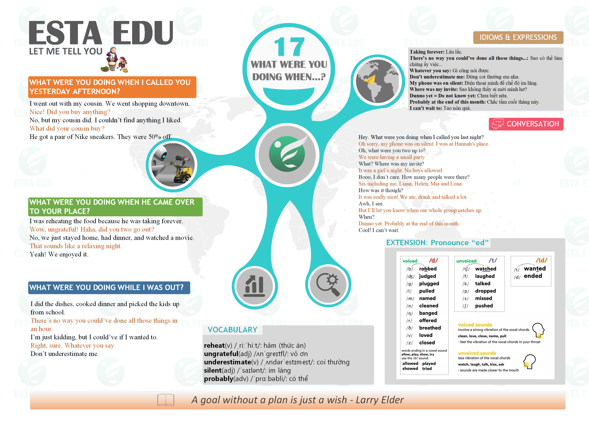
I. ĐOẠN VĂN
1) Tóm tắt
Đoạn văn là một vòng "truy lý do" dễ thương sau những cuộc gọi nhỡ:
- Cuộc gọi chiều qua: gọi cho bạn mà không ai bắt máy — hóa ra bạn đang đi mua sắm với chị họ ở trung tâm phố; bạn thì không mua nổi thứ gì, còn chị họ tậu một đôi Nike giảm 50% — "Nice! Did you buy anything?"
- Khi "he" ghé nhà: đang hâm thức ăn vì cậu ấy lâu lắc không chịu tới; tối đó hai người chẳng đi đâu, chỉ ở nhà ăn tối, xem phim — "nghe như một đêm thư giãn".
- Khi tớ đi vắng: tự hào khoe làm hết rửa bát, nấu ăn, đón trẻ trong một tiếng — "sao có thể!" — "đùa thôi, nhưng muốn là tớ làm được" — "ừ thì, cậu nói gì cũng được" — "đừng coi thường em nha!"
- Conversation: gọi tối qua vẫn không được — máy để chế độ im lặng, vì đang ở nhà Hannah dự tiệc nhỏ toàn con gái "không cho con trai vào"; 6 người ăn uống, tám chuyện vui vẻ, hẹn cả nhóm gặp lại chắc tầm cuối tháng — "Cool! I can't wait!"
Điểm chốt: học cách hỏi "What were you doing when…?" (mệnh đề when chia quá khứ đơn hoặc quá khứ tiếp diễn) và trả lời bằng quá khứ tiếp diễn (I was + V-ing) — kể chuyện mình đang làm gì khi một chuyện khác xảy ra.
2) Khi nào sử dụng?
- Hỏi ai đó đang làm gì tại một mốc thời gian cụ thể trong quá khứ: What were you doing when I called you yesterday afternoon?
- Trả lời bằng thì quá khứ tiếp diễn nói về việc đang diễn ra: I was reheating the food. / We were having a small party.
- Khi việc đang làm thì một việc khác chen vào (when + quá khứ đơn): What were you doing when he came over to your place?
- Hai việc song song trong quá khứ (while + quá khứ tiếp diễn): What were you doing while I was out?
- Biến thể từ sheet FREE TALK: …when I meditated yesterday / when the kids cried / when it rained this morning / when we first met?
3) Bảng cụm từ giao tiếp (IDIOMS & EXPRESSIONS + câu đáng nhớ)
Đọc nhanh như vầy: ⚠️ là lỗi "dịch từ tiếng Việt" hay gặp (gạch = đừng nói) · 💬 là khi nghe ai đó nói cụm này, mình bắt chuyện tiếp bằng câu nào.
| # | Cụm từ | Nghĩa (VI) | Khi nào dùng | Câu mẫu trong bài | ⚠️ Lỗi hay sai | 💬 Đáp lại |
|---|---|---|---|---|---|---|
| 1 | Taking forever | Lâu lắc | Chê ai chậm chịp, chờ mãi không tới | I was reheating the food because he was taking forever. | I know, right! (Đúng vậy, phải không!) | |
| 2 | There's no way you could've done all those things… | Sao có thể làm chừng ấy việc... | Bày tỏ không tin ai làm được nhiều việc thế | There's no way you could've done all those things in an hour. | I could've if I wanted to! (Muốn là mình làm được!) | |
| 3 | Whatever you say | Gì cũng nói được | Đáp kiểu "ừ thì cậu nói gì cũng được", nửa tin nửa chơi | Right, sure. Whatever you say. | Don't underestimate me! (Đừng coi thường em nha!) | |
| 4 | Don't underestimate me | Đừng coi thường em nha | Nhắc ai đừng xem thường năng lực mình | Don't underestimate me. | Right, sure. Whatever you say. (Ừ thì, cậu nói gì cũng được) | |
| 5 | My phone was on silent | Điện thoại mình để chế độ im lặng | Xin lỗi vì lỡ gọi/nhắn của ai đó | Oh sorry, my phone was on silent. | What? Where was my invite? (Ơ, sao không thấy mời mình?) | |
| 6 | Where was my invite | Sao không thấy ai mời mình hở? | "Ăn dày" khi bạn bè tiệc tùng mà quên mời mình | What? Where was my invite? | It was a girl's night! (Đêm đó toàn con gái thôi!) | |
| 7 | Dunno yet = Do not know yet | Chưa biết nữa | Trả lời ngắn gọn "chưa biết đâu" khi bị hỏi kế hoạch | Dunno yet. Probably at the end of this month. | Probably at the end of this month. (Chắc tầm cuối tháng này) | |
| 8 | Probably at the end of this month | Chắc tầm cuối tháng này | Nêu dự đoán thời gian "mềm", chưa chắc chắn | Dunno yet. Probably at the end of this month. | Cool! I can't wait. (Nghe đỉnh, nôn quá!) | |
| 9 | I can't wait to | Tao nôn quá | Thể hiện háo hức, nôn nóng chờ điều gì | Cool! I can't wait. | Me too — so excited! (Tớ cũng — nôn quá!) |
4) Từ vựng (Vocabulary)
| Từ | Từ loại / Phiên âm | Nghĩa |
|---|---|---|
| Reheat | (v) /ˌriːˈhiːt/ | Hâm (thức ăn) |
| Ungrateful | (adj) /ʌnˈgreɪtfl/ | Vô ơn |
| Underestimate | (v) /ˌʌnderˈestɪmeɪt/ | Coi thường |
| Silent | (adj) /ˈsaɪlənt/ | Im lặng |
| Probably | (adv) /ˈprɑːbəbli/ | Có thể (khoảng chừng) |
| Meditate | (v) /ˈmedɪteɪt/ | Ngồi thiền |
| Meditation | (n) /ˌmedɪˈteɪʃn/ | Sự thiền định |
| Evaluate | (v) /ɪˈvæljueɪt/ | Đánh giá |
| Cry | (v/n) /kraɪ/ | Khóc, la; tiếng khóc, tiếng la |
| Work from home | (idm) | Làm việc ở nhà (từ xa) |
Extension (Pronounce "ed" — đọc đuôi -ED):
- Voiced → đọc /d/: robbed (/b/), judged (/dʒ/), plugged (/g/), pulled (/l/), named (/m/), cleaned (/n/), banged (/ŋ/), offered (/r/), breathed (/ð/), loved (/v/), closed (/z/)
- Từ kết thúc bằng nguyên âm (allow, play, show, try) → cũng đọc /d/: allowed, played, showed, tried
- Unvoiced → đọc /t/: watched (/tʃ/), laughed (/f/), talked (/k/), dropped (/p/), missed (/s/), pushed (/ʃ/)
- Sau âm gió /t/, /d/ → đọc /ɪd/: wanted (/t/), ended (/d/)
- Voiced sounds: dây thanh rung mạnh — clean, love, close, name, pull — đặt tay lên cổ họng để cảm nhận rung
- Unvoiced sounds: dây thanh rung ít, âm tạo gần miệng hơn — watch, laugh, talk, kiss, ask
5) Đoạn hội thoại gốc (Free Talk)
What were you doing when I called you yesterday afternoon?
I went out with my cousin. We went shopping downtown.
Nice! Did you buy anything?
No, but my cousin did. I couldn’t find anything I liked.
What did your cousin buy?
He got a pair of Nike sneakers. They were 50% off.
What were you doing when he came over to your place?
I was reheating the food because he was taking forever.
Wow, ungrateful! Haha, did you two go out?
No, we just stayed home, had dinner, and watched a movie.
That sounds like a relaxing night.
Yeah! We enjoyed it.
What were you doing while I was out?
I did the dishes, cooked dinner and picked the kids up from school.
There’s no way you could’ve done all those things in an hour.
I’m just kidding, but I could’ve if I wanted to.
Right, sure. Whatever you say.
Don’t underestimate me.Conversation (tiếp tục):
Hey. What were you doing when I called you last night?
Oh sorry, my phone was on silent. I was at Hannah's place.
Oh, what were you two up to?
We were having a small party.
What? Where was my invite?
It was a girl’s night. No boys allowed.
Booo, I don’t care. How many people were there?
Six including me, Liana, Helen, Mia and Lona.
How was it though?
It was really nice! We ate, drank and talked a lot.
Awh, I see.
But I’ll let you know when our whole group catches up.
When?
Dunno yet. Probably at the end of this month.
Cool! I can’t wait.II. NGỮ PHÁP
Tổng quan: 6 điểm ngữ pháp trong bài
| Điểm | Tên | Ứng dụng nói |
|---|---|---|
| 1 | Do work, jobs, tasks (DO việc, việc làm) | Do homework / housework / a good job |
| 2 | Do hoạt động chung, không cụ thể | do something / nothing / anything |
| 3 | Do thay thế động từ khác | do the dishes = wash the dishes |
| 4 | Participles – Adj (Tính từ dạng phân từ) | relaxing (vật) · relaxed (người) |
| 5 | Past continuous (QKTD) | S + was/were + V-ing |
| 6 | Shopping: go shopping | Nói "đi mua sắm" đúng chuẩn |
Điểm 1. Do work, jobs, tasks: DO + homework / housework / a good job / …
Cách dùng: dùng DO khi nói về công việc, việc làm hoặc nhiệm vụ — thường không tạo ra một vật thể hữu hình (đối thủ là MAKE, thứ ra sản phẩm). Nói ra do mỗi lần liệt kê việc nhà, bài vở, nhiệm vụ: do homework, do housework, do a good job. Dễ nhầm: make homework — tiếng Việt "làm bài tập" nghe như "make", nhưng tiếng Anh việc thì do, đồ vật mới make. Mẹo nói: chụm do với danh từ liền một nhịp — do-the-housework — đừng ngắt lửng.
Phản xạ hỏi–đáp:
- ➕ Nói việc mình làm:
I have to do my homework tonight.(Tối nay tớ phải làm bài tập rồi) - ➖ Phủ định:
I haven't done my homework yet.(Con vẫn chưa làm xong bài tập) - 💬 Đáp lại:
Good job! Now go rest.(Làm tốt lắm! Đi nghỉ đi)
Ví dụ:
- Ví dụ 1: Do homework. (Làm bài tập)
- Ví dụ 2: Do housework. (Làm việc nhà)
- Ví dụ 3: Do a good job. (Làm tốt một việc)
- Ví dụ 4: Have you done your homework? (Con đã làm xong bài tập chưa?)
- Ví dụ 5: I did the housework before my cousin came over. (Tớ làm việc nhà xong trước khi chị họ ghé)
Biến tấu (tự luyện):
- Đổi chủ ngữ I → he:
He did his homework before dinner.(Nó làm bài tập xong trước bữa tối) - Đổi thì quá khứ → tương lai:
I will do the housework tomorrow.(Ngày mai tớ sẽ làm việc nhà)
Điểm 2. Do hoạt động chung, không cụ thể: DO NOTHING / ANYTHING / SOMETHING
Cách dùng: DO chỉ hoạt động nói chung, không cụ thể — thường đi kèm từ có đuôi "-thing": something, nothing, anything. Bản chất là "đủ ý mà không cần nói rõ làm gì" — hỏi thăm, thúc giục, chối keo đều xài được. Cẩn thận trật tự phủ định: câu đã có don't thì dùng anything (don't do nothing ✗); muốn phủ định "sạch" thì do nothing. Mẹo nói: nhấn nhẹ vế -thing — do someTHING — câu nghe tự nhiên, đừng đọc chẻ từng chữ.
Phản xạ hỏi–đáp:
- ❓ Hỏi thăm:
Did you do anything fun last night?(Tối qua có làm gì vui không?) - ➖ Phủ định:
I did nothing — just stayed home.(Tớ chẳng làm gì — chỉ ở nhà thôi) - 💬 Đáp lại:
Lucky you! I worked all day.(Sướng nhỉ! Tớ làm việc cả ngày)
Ví dụ:
- Ví dụ 1: Do nothing. (Không làm gì cả)
- Ví dụ 2: Do anything. (Làm bất cứ việc gì)
- Ví dụ 3: Do something. (Làm gì đó đi)
- Ví dụ 4: Don't just stand there — do something! (Đừng đứng đực ra như thế — làm gì đi!)
- Ví dụ 5: Is there anything I can do to help you? (Tôi có thể giúp gì cho anh không?)
Biến tấu (tự luyện):
- Đổi nothing → something:
Let's do something this weekend.(Cuối tuần mình làm gì đó đi) - Đổi thì → quá khứ:
Did you do anything special yesterday?(Hôm qua có làm gì đặc biệt không?)
Điểm 3. Do thay thế động từ khác: DO MY HAIR = BRUSH MY HAIR · DO THE DISHES = WASH THE DISHES · DO THE LAUNDRY = WASH & DRY CLOTHES
Cách dùng: đôi khi DO thay thế một động từ mà nghĩa của nó đã rõ ràng hoặc được chỉ ra trước đó — nghe "bản địa", gọn hơn. Bản chất là "khoán" động tác vào do: chải tóc, rửa bát, giặt đồ thành do my hair / do the dishes / do the laundry. Dễ nhầm: make the dishes — make chỉ khi tạo ra cái mới (nấu ra món), rửa bát là "dọn sạch" nên do. Mẹo nói: chụm do với the thành một cụm — də-the-dishes — nghe mượt như người bản xứ.
Phản xạ hỏi–đáp:
- ❓ Hỏi nhờ:
Have you done the dishes yet?(Con đã rửa bát chưa thế?) - ➖ Phủ định:
Not yet — I'll do them after dinner.(Chưa đâu — ăn tối xong tớ làm ngay) - 💬 Đáp lại:
Deal! I'll dry them.(Được! Tớ lau khô cho)
Ví dụ:
- Ví dụ 1: Do my hair = brush my hair. (Chải tóc)
- Ví dụ 2: Do the dishes = wash the dishes. (Rửa bát)
- Ví dụ 3: Do the laundry = wash & dry clothes. (Giặt và phơi đồ)
- Ví dụ 4: Have you done the dishes yet? (Con đã rửa bát chưa thế?)
- Ví dụ 5: I did the dishes, cooked dinner and picked the kids up from school. (Tớ rửa bát, nấu bữa tối rồi đón bọn trẻ từ trường về)
Biến tấu (tự luyện):
- Đổi danh từ:
do the dishes→do the laundry:I did the laundry this morning.(Sáng nay tớ giặt đồ rồi) - Đổi chủ ngữ I → she:
She did my hair for the party.(Nó chải tóc cho tớ đi dự tiệc)
Điểm 4. Participles – Adj (Tính từ dạng phân từ): V-ING (chủ động → tả vật) · V3/ED (bị động → tả người)
Cách dùng: Present participle (V-ing) mang tính chủ động, bản chất, thường bổ nghĩa cho vật; Past participle (V3/ed) mang tính bị động, cảm xúc do bị tác động, thường bổ nghĩa cho người. Nói ra -ing khi "cái gì đó gây ra cảm xúc" — a relaxing night, an amazing girl; nói -ed khi "người nhận cảm xúc" — I feel relaxed, I was amazed. Dễ nhầm: I am boring — người mà dùng -ing là tự chê mình "nhạt nhẽo", phải là I am bored. Mẹo ghi nhớ một nhịp: "cái gì thì -ing, ai thì -ed" — đọc nhấn đuôi cho câu nghe chắc.
Phản xạ hỏi–đáp:
- ➕ Nói cảm nhận:
That sounds like a relaxing night.(Nghe như một đêm thật thư giãn) - ➖ Phủ định:
I'm not interested in horror movies.(Tớ không mê phim kinh dị đâu) - 💬 Đáp lại:
Really? They amaze me!(Thật à? Tớ mê lắm!)
Ví dụ:
- Ví dụ 1: It's a relaxing night. (Một đêm thư giãn)
- Ví dụ 2: She is an amazing girl. (Một cô gái thật tuyệt)
- Ví dụ 3: He feels so relaxed. (Anh ấy cảm thấy rất thư thái)
- Ví dụ 4: He was so amazed to see her there. (Anh ấy đã rất ngạc nhiên khi gặp cô ở đó)
- Ví dụ 5: That sounds like a relaxing night. (Nghe như một đêm thật thư giãn)
Biến tấu (tự luyện):
- Đổi relaxing → boring:
The meeting was so boring.(Buổi họp chán ngắt) - Đổi chủ ngữ vật → người:
She is interested in meditation.(Cô ấy thích thiền định)
Điểm 5. Past continuous (QKTD): S + WAS / WERE + V-ING
Cách dùng: diễn tả hành động đang diễn ra tại một thời điểm hoặc khi một hành động khác chen vào trong quá khứ — việc "chạy nền" thì was/were + V-ing, việc "chen ngang" thì quá khứ đơn. Nói ra nó khi được hỏi What were you doing when…? — kể chuyện quá khứ mà thiếu QKTD thì câu nghe phẳng như đọc biên bản. Dễ nhầm: I was go out — was phải bám V-ing (I was going out); còn câu trả lời I went out with my cousin dùng QKĐ vì đó là việc xong xuôi. Mẹo nhịp: kéo was một hơi rồi mới rơi vào V-ing — I waaas reheating — nghe đúng "chất" người kể chuyện.
Phản xạ hỏi–đáp:
- ❓ Hỏi chuyện quá khứ:
What were you doing when I called you last night?(Tối qua tớ gọi cậu đang làm gì thế?) - ➖ Phủ định:
I wasn't sleeping — I was at Hannah's place.(Tớ không ngủ đâu — tớ ở nhà Hannah mà) - 💬 Đáp lại:
Oh, sorry — my phone was on silent.(Ơ, xin lỗi — máy tớ để im lặng)
Ví dụ:
- Ví dụ 1: Were you sleeping when I called you last night? (Tối qua lúc tớ gọi cậu ngủ rồi ư?)
- Ví dụ 2: No, I was talking with her on the phone. (Không, tớ đang nói chuyện điện thoại với nàng)
- Ví dụ 3: I was reheating the food because he was taking forever. (Tớ đang hâm thức ăn vì cậu ấy lâu lắc không chịu tới)
- Ví dụ 4: We were having a small party. (Chúng tôi đang có một bữa tiệc nhỏ)
- Ví dụ 5: What were you doing when I called you yesterday afternoon? — I went out with my cousin. (Chiều qua tớ gọi thì cậu đang làm gì thế? — Tớ đi chơi với chị họ)
Biến tấu (tự luyện):
- Đổi chủ ngữ you → they:
What were they doing when it rained?(Trời mưa thì họ đang làm gì?) - Đổi when → while (hai việc song song):
While I was cooking, she was watching TV.(Lúc tớ nấu ăn, nó xem TV)
Điểm 6. Shopping: GO SHOPPING (≠ go to shopping)
Cách dùng: nói "đi mua sắm" là go shopping — tuyệt đối đừng lồng "to" vào giữa; cũng có thể nói go to shop. Bản chất: go + V-ing là nhóm "đi làm hoạt động" — go shopping, go swimming, go fishing — không ai chen to vào giữa cả. Dễ nhầm: go to shopping vì quen miệng với go to school; nhớ: to chỉ bám danh từ nơi chốn (go to the shop), không bám V-ing. Mẹo nói: gộp go-shoppin' thành một nhịp, đuôi -ing buông nhẹ cho gọn.
Phản xạ hỏi–đáp:
- ❓ Hỏi thói quen:
Do you go shopping every weekend?(Cuối tuần nào cậu cũng đi mua sắm à?) - ➖ Phủ định:
No, I didn't buy anything downtown.(Không, ở trung tâm phố tớ chẳng mua gì) - 💬 Đáp lại:
Me neither — I just window-shopped.(Tớ cũng vậy — chỉ đi ngắm thôi)
Ví dụ:
- Ví dụ 1: Never say:
I go to shopping every weekend.→ Let's say: I go shopping every weekend. (Cuối tuần nào tớ cũng đi mua sắm) - Ví dụ 2: I go to shop every weekend. (Cuối tuần nào tớ cũng ghé các cửa hàng)
- Ví dụ 3: We went shopping downtown. (Chúng tôi đi mua sắm ở trung tâm phố)
- Ví dụ 4: Did you buy anything? (Cậu có mua được gì không?)
- Ví dụ 5: He got a pair of Nike sneakers. They were 50% off. (Cậu ấy mua một đôi giày Nike, giảm giá 50%)
Biến tấu (tự luyện):
- Đổi go shopping → go swimming:
We went swimming last Sunday.(Chủ nhật trước tụi tớ đi bơi) - Đổi chủ ngữ I → she + về hiện tại:
She goes shopping every Friday.(Thứ sáu nào chị ấy cũng đi mua sắm)
III. LUYỆN NÓI (drill)
Echo drill (nói to 3 lần, nhanh hơn mỗi lần)
- What were you doing when I called you yesterday afternoon? — I went out with my cousin. We went shopping downtown.
- I was reheating the food because he was taking forever.
- No, we just stayed home, had dinner, and watched a movie. — That sounds like a relaxing night!
- There's no way you could've done all those things in an hour. — I'm just kidding, but I could've if I wanted to.
- Oh sorry, my phone was on silent. — What? Where was my invite?
5 câu hỏi tự luyện (tự hỏi + trả lời)
- What were you doing when I called you yesterday? — I was meditating in my room / I was just reheating the food…
- What were you doing when it rained this morning / when the kids cried? — I was still sleeping / I was cooking breakfast…
- What were you doing when Emerald called you to evaluate your English? — I was working from home, so I was free to talk…
- What were you doing when we first met? — I was joining the center's first lesson / I was so nervous, I was shaking…
- To talk more: Did you enjoy doing it? Who did you do it with? What did you really think at that time? — Yes! I went out with my cousin; we ate, drank and talked a lot…
✅ Checkpoint: đặt 5 câu hỏi "What were you doing when…?" với 5 mốc quá khứ thật (cuộc gọi nhỡ, trời mưa, sếp ghé, lần đầu gặp nhau…) và trả lời bằng I was + V-ing. Ghi âm lại — như lời bài học nhắn: "Bạn thật tuyệt vời! Yêu thương! 💌"
18Why did you...?Tại sao bạn…?
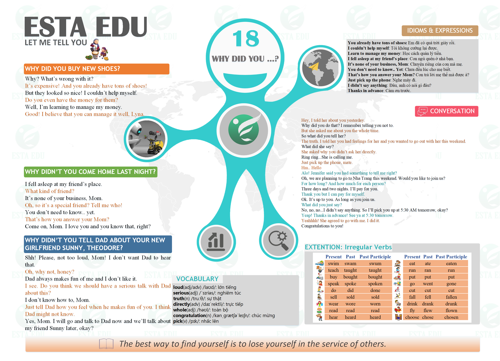
I. ĐOẠN VĂN
1) Tóm tắt
Ba pha "đấu nghiện nguyên do" của bài này:
- Mua giày mới: hỏi Why did you buy new shoes? — đắt lắm mà đã có quá trời giày; tự bào chữa "nhìn đẹp quá, không cưỡng lại được", rồi viện cớ đang học cách quản lý tiền — "vậy là tốt, tin là cậu giám sát nổi ví tiền của mình, Lyna".
- Về nhà muộn: Why didn't you come home last night? — ngủ quên ở nhà bạn; mẹ hỏi "bạn gì?" thì đáp chuyện riêng của con mà, mẹ ạ; nghe "bạn đặc biệt?" thì né — chưa đến lúc cho mẹ biết đâu… rồi cười xòa con yêu mẹ có biết không?
- Giấu bố chuyện có người yêu: không nói với bố vì bố cứ trêu con hoài; mẹ khuyên cứ nói cho bố cảm xúc thật khi bị trêu — có lẽ bố chưa biết mình làm con buồn; con sẽ đi nói chuyện với bố trước, chuyện Sunny bàn sau.
- Conversation: nói với cô ấy về cậu rồi — "tại sao làm thế? Tôi nhớ là dặn cậu rồi mà" — cô ấy cứ hỏi suốt nên tôi nói sự thật: chàng thích nàng, muốn rủ đi chơi cuối tuần này. Nàng gọi điện ngay — mời đi Nha Trang 3 ngày 2 đêm, giành trả tiền nhưng nàng tự trả — rồi hẹn 5:30 sáng mai đến đón; chàng vui như điên: "She agreed to go with me. I did it!"
- Điểm chốt: Why did (didn't) you + V nguyên mẫu hỏi nguyên do trong quá khứ; trả lời luôn mở đầu bằng Because + mệnh đề thì quá khứ đơn.
2) Khi nào sử dụng?
- Hỏi lý do của việc đã làm: Why did you buy new shoes / join the center Edu / laugh at me?
- Hỏi lý do của việc KHÔNG làm: Why didn't you come home last night / tell Dad / sign the employment contract?
- Trả lời bằng Because + S + Quá khứ đơn: Why did you get there so soon? — Because I wanted to meet her. / Because I was worried that you would get angry.
- Khi lý do "khó nói": né khéo — It's none of your business, Mom, You don't need to know.. yet.
- Bắt mạch câu chuyện: What did she say? / What did you just say? / What do you think of that decision? Do you want to change anything? (theo Free Talk sheet).
3) Bảng cụm từ giao tiếp (IDIOMS & EXPRESSIONS + câu đáng nhớ)
Đọc nhanh như vầy: ⚠️ là lỗi "dịch từ tiếng Việt" hay gặp (gạch = đừng nói) · 💬 là khi nghe ai đó nói cụm này, mình bắt chuyện tiếp bằng câu nào.
| # | Cụm từ | Nghĩa (VI) | Khi nào dùng | Câu mẫu trong bài | ⚠️ Lỗi hay sai | 💬 Đáp lại |
|---|---|---|---|---|---|---|
| 1 | You already have tons of shoes | Em đã có quá trời giày rồi | Chê người mua sắm quá tay | It's expensive! And you already have tons of shoes! | But they looked so nice! (Mà nhìn đẹp quá mà!) | |
| 2 | I couldn't help myself | Tôi không cưỡng lại được | Bào chữa khi "tay hơ tay mách" | But they looked so nice! I couldn't help myself. | Me too, every single time. (Tớ cũng, lần nào cũng thế) | |
| 3 | Learn to manage my money | Học cách quản lý tiền | Viện cớ khi tiêu tiền | Well, I'm learning to manage my money. | Good! Keep it up! (Tốt! Cứ vậy nhé!) | |
| 4 | I fell asleep at my friend's place | Con ngủ quên ở nhà bạn | Giải thích vì sao về muộn | Why didn't you come home last night? — I fell asleep at my friend's place. | What kind of friend? (Bạn gì mà lạ thế?) | |
| 5 | It's none of your business, Mom | Chuyện riêng của con mà, mẹ ạ | Chặn lịch sự câu hỏi thăm riêng tư | What kind of friend? — It's none of your business, Mom. | That's how you answer your Mom? (Con trả lời mẹ thế à?) | |
| 6 | You don't need to know.. yet | Chưa đến lúc cho mẹ biết đâu | Trả lời lửng lơ, giữ sự tò mò | Oh, so it's a special friend? — You don't need to know.. yet. | Ugh, you're killing me! (Trời, làm mẹ thóc me!) | |
| 7 | That's how you answer your Mom? | Con trả lời mẹ thế mà được à? | Tái mặt trước câu trả lời cộc lốc | That's how you answer your Mom? | Come on, Mom, I love you! (Thôi mà mẹ, con yêu mẹ!) | |
| 8 | Just pick up the phone | Nghe máy đi | Thúc khi điện thoại reo | Ring ring... She is calling me. — Just pick up the phone, mate. | Hello? Who's this? (Alo? Ai đấy thế?) | |
| 9 | I didn't say anything | Đâu, anh có nói gì đâu? | Chối quanh trước "vừa nói gì đó hả?" | What did you just say? — No, no, no... I didn't say anything. | Yes you did — I heard it! (Có chứ — tớ nghe thấy rồi!) | |
| 10 | Thanks in advance | Cảm ơn trước | Nhờ trước — cảm ơn trước khi được giúp | So I'll pick you up at 5:30 AM tomorrow. — Yeap! Thanks in advance! | No problem! See ya tomorrow! (Khỏi cảm ơn — mai gặp!) |
4) Từ vựng (Vocabulary)
| Từ | Từ loại / Phiên âm | Nghĩa |
|---|---|---|
| Loud | (adj/adv) /laʊd/ | Lớn tiếng |
| Serious | (adj) /ˈsɪriəs/ | Nghiêm túc |
| Truth | (n) /truːθ/ | Sự thật |
| Directly | (adv) /daɪˈrektli/ | Trực tiếp |
| Whole | (adj) /həʊl/ | Toàn bộ |
| Congratulation | (n) /kənˌɡrætʃəˈleɪʃn/ | Lời chúc mừng |
| Pick | (v) /pɪk/ | Nhắc lên (pick up máy = nhấc máy) |
| Laugh at s.o | (v) | Cười nhạo ai đó |
| Trust s.o | (v) | Tin tưởng (chắc chắn hơn Believe) |
| Employment contract | (n) | Hợp đồng lao động |
| Company regulation | (n) | Quy định của công ty |
Extension (Irregular Verbs):
- swim — swam — swum
- teach — taught — taught
- buy — bought — bought
- speak — spoke — spoken
- do — did — done
- sell — sold — sold
- wear — wore — worn
- read — read — read
- hear — heard — heard
- eat — ate — eaten
- run — ran — run
- put — put — put
- go — went — gone
- cut — cut — cut
- fall — fell — fallen
- drink — drank — drunk
- fly — flew — flown
- choose — chose — chosen
5) Đoạn hội thoại gốc (Free Talk)
Why did you buy new shoes?
Why? What's wrong with it?
It's expensive! And you already have tons of shoes!
But they looked so nice! I couldn't help myself.
Do you even have the money for them?
Well, I'm learning to manage my money.
Good! I believe that you can manage it well, Lyna.
Why didn't you come home last night?
I fell asleep at my friend's place.
What kind of friend?
It's none of your business, Mom.
Oh, so it's a special friend? Tell me who!
You don't need to know.. yet.
That's how you answer your Mom?
Come on, Mom. I love you and you know that, right?
Why didn't you tell Dad about your new girlfriend Suny, Theodore?
Shh! Please, not too loud, Mom! I don't want Dad to hear that.
Oh, why not, honey?
Dad always makes fun of me and I don't like it.
I see. Do you think we should have a serious talk with Dad about this?
I don't know how to, Mom.
Just tell Dad how you feel when he makes fun of you. I think Dad might not know.
Yes, Mom. I will go and talk to Dad now and we'll talk about my friend Sunny later, okay?Conversation (tiếp tục):
Hey, I told her about you yesterday.
Why did you do that? I remember telling you not to.
But she asked me about you the whole time.
So what did you tell her?
The truth. I told her you had feelings for her and you wanted to go out with her this weekend.
What did she say?
She asked why you didn't ask her directly.
Ring ring... She is calling me.
Just pick up the phone, mate.
Hm.. Hello!
Alo! Jennifer said you had something to tell me right?
Oh, we are planning to go to Nha Trang this weekend. Would you like to join us?
For how long? And how much for each person?
Three days and two nights. I'll pay for you.
Thank you but I can pay for myself.
Ok. It's up to you. As long as you join us.
What did you just say?
No, no, no... I didn't say anything.
So I'll pick you up at 5:30 AM tomorrow, okay?
Yeap! Thanks in advance! See ya at 5:30 tomorrow.
Yeahhhh! She agreed to go with me. I did it.
Congratulations to you!II. NGỮ PHÁP
Tổng quan: 7 điểm ngữ pháp trong bài
| Điểm | Tên | Ứng dụng nói |
|---|---|---|
| 1 | Thì QKĐ với động từ thường (Simple past with ordinary verbs) | Kể việc đã xong + hỏi Why did you…? |
| 2 | Sở hữu cách (Possessive 's) | Nói "cái gì của ai" gọn lẹ |
| 3 | MAKE — chế tạo/thứ gì đó mới | Đồ vật làm từ chất liệu gì |
| 4 | MAKE — gây ra hành động/phản ứng | Bào chữa, trách móc về chuyện cười |
| 5 | MAKE + danh từ kế hoạch/quyết định | Sắp xếp chuyện, chọn lựa |
| 6 | MAKE + danh từ việc nói & tiếng động | Bình luận, phát biểu, làm ồn |
| 7 | MAKE + đồ ăn/đồ uống/bữa ăn | Nấu bếp, mời một tách trà |
Điểm 1. Thì QKĐ với động từ thường: S + V2/ED + C · S + DIDN'T + V + C · (WH) + DID + S + V + C?
Cách dùng: sự việc đã kết thúc trong quá khứ — cả câu hỏi Why did (didn't) you…? lẫn câu trả lời Because + S + V (QKĐ) đều nằm ở công thức này. Bản chất: khi hỏi, did đã "gánh" quá khứ rồi nên động từ về nguyên mẫu — Why did you bought ✗. Khác QKTD của topic 17: QKĐ là "đóng gói xong", QKTD là "đang chạy" — kể nguyên do là chuyện đã xong xuôi, nên QKĐ là vua. Nhịp nói: nhấn nhẹ did/didn't, buông V nguyên mẫu thoải mái — Why DID you BUY new shoes?
Phản xạ hỏi–đáp:
- ❓ Hỏi nguyên do:
Why did you buy new shoes?(Sao cậu mua giày mới thế?) - ➖ Phủ định:
I didn't come home last night.(Tối qua con không về nhà) - 💬 Đáp lại:
Because they looked so nice! (Vì chúng đẹp quá mà!)
Ví dụ:
- Ví dụ 1: We learned English and drank online yesterday. (Hôm qua tụi tớ học tiếng Anh và nhậu online luôn)
- Ví dụ 2: Emerald didn't join us because we didn't tell her. (Emerald không dự vì tụi tớ không bảo nó)
- Ví dụ 3: Did she say anything? — No, she just cried. (Cô ấy có nói gì không? — Không, chỉ khóc thôi.)
- Ví dụ 4: Why did you get there so soon? Because I wanted to meet her. (Sao cậu đến sớm thế? Vì tớ muốn gặp cô ấy)
- Ví dụ 5: Why didn't you come home last night? I fell asleep at my friend's place. (Tối qua sao con không về nhà? Con ngủ quên ở nhà bạn)
Biến tấu (tự luyện):
- Đổi did → didn't:
Why didn't you sign the contract?(Sao cậu không ký hợp đồng?) - Đổi chủ ngữ you → she:
Why did she laugh at you?(Sao cô ấy cười nhạo cậu?)
Điểm 2. Sở hữu cách: N SỐ ÍT + 'S + N · N SỐ NHIỀU KHÔNG 'S + 'S + N · N SỐ NHIỀU CÓ S + ' + N
Cách dùng: nói "của ai" ngắn gọn — số ít thêm 's; số nhiều không có s (children, men) thêm 's; số nhiều có sẵn s chỉ cần thêm dấu nháy ('). Bản chất: 's "dán" chủ sở hữu lên danh từ — đọc ra luôn có âm /s/ hoặc /z/, không im re. Dễ nhầm: my friend place — thiếu 's là câu nát; còn my friends' place (nháy sau s) là nhà "mấy đứa bạn", khác nhà một bạn. Mẹo nói: chụm 's vào tiếng trước — friend's place — nghe liền một mạch.
Phản xạ hỏi–đáp:
- ❓ Hỏi chủ sở hữu:
Whose phone is this?(Điện thoại này của ai thế?) - ➖ Phủ định:
That's not my friend's car.(Cái đó không phải xe của bạn tớ đâu) - 💬 Đáp lại:
Then whose car is it?(Vậy xe của ai?)
Ví dụ:
- Ví dụ 1: I love your son's name. (Tớ thích cái tên con trai cậu ghê)
- Ví dụ 2: I love Hollywood men's style. (Tui thích phong cách đàn ông kiểu Hollywood đấy)
- Ví dụ 3: She really loves my sons' names. (Cô ấy thực sự khoái tên mấy cậu con trai nhà tớ)
- Ví dụ 4: I fell asleep at my friend's place. (Con ngủ quên ở nhà bạn)
- Ví dụ 5: I love my sister's style. (Tớ thích phong cách của chị tớ)
Biến tấu (tự luyện):
- Đổi số ít → số nhiều (nháy sau s):
my friend's place→my friends' place:I slept at my friends' place.(Tớ ngủ ở nhà mấy đứa bạn) - Đổi danh từ:
my sister's style→your sister's style:I love your sister's style.(Tớ thích phong cách chị cậu)
Điểm 3. MAKE — chế tạo/thứ gì đó mới: S + MAKE/MADE + N (chỉ nguồn gốc hoặc chất liệu ban đầu)
Cách dùng: make chỉ việc "chế tạo ra" một thứ mới, thường kèm chất liệu ban đầu — be made of + chất liệu. Nói ra nó khi dõi theo nguồn gốc đồ vật: nhẫn bằng vàng, bàn bằng gỗ, giày làm ở đâu. Dễ nhầm với be made from: of là chất liệu nhìn ra được (bàn gỗ), from là chất liệu đã "biến hình" (giấy làm từ gỗ). Mẹo giọng: made nhấn đuôi /eɪd/ cho rõ, đừng nuốt thành "met".
Phản xạ hỏi–đáp:
- ❓ Hỏi nguồn gốc:
Where was your jacket made?(Cái áo khoác của bạn làm ở đâu?) - ➕ Nói chất liệu:
This table is made of wood.(Cái bàn này làm bằng gỗ) - 💬 Đáp lại:
Really? It looks classy! (Thật à? Trông sang ghê!)
Ví dụ:
- Ví dụ 1: That ring is made of gold. (Chiếc nhẫn đó làm bằng vàng)
- Ví dụ 2: This table is made of wood. (Cái bàn này làm bằng gỗ)
- Ví dụ 3: Where was your jacket made? (Cái áo khoác của bạn làm ở đâu vậy?)
- Ví dụ 4: I made this bracelet myself. (Tự tay tớ làm cái vòng này đó)
- Ví dụ 5: They make these shoes in Vietnam. (Họ làm đôi giày này ở Việt Nam)
Biến tấu (tự luyện):
- Đổi chất liệu:
made of wood→made of silver:My necklace is made of silver.(Sợi dây chuyền của tớ bằng bạc) - Đổi of → from:
Paper is made from trees.(Giấy được làm từ cây)
Điểm 4. MAKE — gây ra hành động/phản ứng: MAKE + O + V (nguyên mẫu) · MAKE FUN OF + O
Cách dùng: make khiến ai phải làm gì (make me do it) hoặc tạo ra phản ứng trêu chọc (make fun of me). Bản chất "ép buộc": sau tân ngữ là V nguyên mẫu, không "to" — made me to do it ✗. Chỗ này make/let không cần to, còn ask/tell bắt buộc phải có (told me to go) — nhớ cặp đôi để khỏi rối. Nói ra nó khi trách móc, bào chữa, kể chuyện bị trêu — cảm xúc luôn có "người chủ mưu". Nhịp nói: chụm make-fun-of thành một cụm, đừng tách rời từng tiếng.
Phản xạ hỏi–đáp:
- ❓ Hỏi trách:
Did he make you do that?(Hắn bắt cậu làm vậy hả?) - ➖ Phủ định:
He didn't make me — I did it myself.(Không phải hắn ép — tớ tự làm) - 💬 Đáp lại:
So stop making fun of me! (Vậy đừng trêu tớ nữa!)
Ví dụ:
- Ví dụ 1: You make fun of me? (Anh biến em thành trò vui ư?)
- Ví dụ 2: It's not my fault. He made me do it! (Không phải do tôi. Hắn bắt tôi làm vậy!)
- Ví dụ 3: Dad always makes fun of me and I don't like it. (Bố cứ trêu con hoài mà con không thích)
- Ví dụ 4: Your joke made us all laugh. (Truyện cười của cậu khiến cả nhà cười)
- Ví dụ 5: She made me tell the truth. (Cô ấy bắt tôi nói sự thật)
Biến tấu (tự luyện):
- Đổi make → let (cho phép):
Dad lets me stay out late.(Bố cho con đi chơi khuya) - Đổi chủ ngữ:
Her story made me cry.(Chuyện của cô ấy làm tớ khóc)
Điểm 5. MAKE + danh từ kế hoạch/quyết định: MAKE + THE ARRANGEMENTS · MAKE + A CHOICE
Cách dùng: make đi cùng danh từ chỉ kế hoạch, sự sắp xếp hoặc lựa chọn — make the arrangements (sắp xếp), make a choice (đưa ra lựa chọn), make plans / make a decision. Bản chất: cặp đôi cố định (collocation) — tiếng Anh chỉ nhận make, cấm do plans hay take a decision. Nói ra nó khi chốt chuyện: chuyến đi, lựa chọn, quyết định nhanh chậm. Mẹo nói: make a đọc chụm thành "mey-kơ", choice nhấn đuôi /ɔɪs/ cho chắc.
Phản xạ hỏi–đáp:
- ❓ Hỏi nhờ sắp xếp:
Can you make the arrangements for the trip?(Cậu sắp xếp chuyến đi giúp tớ được không?) - ➕ Nói chốt:
I've made my choice already.(Tớ chốt lựa chọn rồi) - 💬 Đáp lại:
Ok, it's up to you! (Ok, tuỳ cậu thôi!)
Ví dụ:
- Ví dụ 1: She has to make a choice between her family & career. (Cô ấy phải lựa chọn giữa gia đình và sự nghiệp)
- Ví dụ 2: Can you make the arrangements for the trip? (Bạn sắp xếp chuyến đi giúp mình được không?)
- Ví dụ 3: Why did you make that decision so fast? (Tại sao cậu quyết định nhanh vậy?)
- Ví dụ 4: We made plans to go to Nha Trang this weekend. (Cuối tuần tụi tôi đã lên kế hoạch đi Nha Trang)
- Ví dụ 5: It's up to you, the final choice is yours. (Tuỳ cậu thôi — quyết định cuối ở cậu)
Biến tấu (tự luyện):
- Đổi danh từ:
make plans→make a decision:We made a decision last night.(Tối qua tụi tớ quyết xong rồi) - Đổi thì → tương lai:
I'll make the arrangements tomorrow.(Ngày mai tớ sẽ sắp xếp chu đáo)
Điểm 6. MAKE + danh từ việc nói & tiếng động: MAKE + A COMMENT · MAKE + A NOISE · MAKE + A SPEECH
Cách dùng: make đi cùng danh từ chỉ hành động nói và âm thanh — bình luận, phát biểu, làm ồn. Bản chất: tiếng Anh "hóa" động tác thành danh từ rồi giao cho make — say a comment ✗, phải là make a comment. Dễ nhầm: do a speech ✗ — bài nói là make a speech, "do" chỉ dành cho việc nhà, bài vở. Nhịp nói: khi xin nhỏ tiếng thì giọng tụt xuống — please, not too loud — nghe như xin xỏ thật.
Phản xạ hỏi–đáp:
- ➕ Nói xin xỏ:
Please, not too loud — don't make a noise.(Ở ơi, nhỏ tiếng thôi — đừng làm ồn) - ➖ Phủ định:
I didn't make any comment.(Tớ có bình luận gì đâu) - 💬 Đáp lại:
Sorry, I'll keep it down. (Xin lỗi, tớ nhỏ tiếng ngay)
Ví dụ:
- Ví dụ 1: Ruby'll make a speech in front of the whole school. (Ruby sẽ có 1 bài nói chuyện trước toàn trường)
- Ví dụ 2: Please, not too loud — don't make a noise. (Ở ơi, nhỏ tiếng thôi — đừng làm ồn)
- Ví dụ 3: He made a comment about my new shoes. (Anh ấy bình luận về đôi giày mới của tôi)
- Ví dụ 4: I'll make an announcement at the meeting. (Tôi sẽ thông báo trong cuộc họp)
- Ví dụ 5: Don't make a sound when we sneak home. (Đừng phát ra tiếng khi ta lẻn về nhà nhé)
Biến tấu (tự luyện):
- Đổi danh từ:
make a speech→make an announcement:She'll make an announcement soon.(Cô ấy sẽ thông báo sớm thôi) - Đổi chủ ngữ Ruby → I:
I made a speech at the wedding.(Tớ phát biểu ở đám cưới rồi)
Điểm 7. MAKE + đồ ăn/đồ uống/bữa ăn: MAKE + A CAKE · MAKE + A CUP OF TEA · MAKE + DINNER
Cách dùng: make "làm/chế biến" — đồ ăn, thức uống, bữa ăn: make a cake, make a cup of tea, make dinner. Bản chất: từ nguyên liệu thành thành phẩm thì make, khác cook (đun nấu) và do (việc chung chung). Dễ nhầm: do dinner ✗ — bữa ăn luôn đi với make; pha cho ai thì make a cup of tea for you, đừng quên for. Mẹo rủ rê ấm áp: Let me make you a cup of tea — nghe tình cảm hơn I will make.
Phản xạ hỏi–đáp:
- ➕ Nói rủ rê:
Let's make sandwiches for lunch.(Trưa nay mình làm bánh mì kẹp ăn nhé) - ➖ Phủ định:
I don't make dinner on Fridays.(Thứ sáu tớ không nấu tối đâu) - 💬 Đáp lại:
Sure! I'll bring the bread. (Được! Tớ mang bánh mì)
Ví dụ:
- Ví dụ 1: Can you show me how to make a cake, mom? (Mẹ ơi chỉ cho con cách làm bánh nhé?)
- Ví dụ 2: I'll make a cup of tea for you. (Tớ sẽ pha một tách trà cho cậu)
- Ví dụ 3: Who made dinner yesterday? (Hôm qua ai nấu bữa tối vậy?)
- Ví dụ 4: Mom is making dinner in the kitchen. (Mẹ đang nấu bữa tối trong bếp)
- Ví dụ 5: Let's make sandwiches for lunch. (Trưa nay mình làm bánh mì kẹp ăn nhé)
Biến tấu (tự luyện):
- Đổi danh từ:
make a cake→make a cup of tea:I'll make you a cup of tea.(Tớ pha tách trà cho cậu nhé) - Đổi thì → hiện tại tiếp diễn:
Mom is making breakfast now.(Mẹ đang làm bữa sáng nè)
III. LUYỆN NÓI (drill)
Echo drill (nói to 3 lần, nhanh hơn mỗi lần)
- Why did you buy new shoes? — But they looked so nice! I couldn't help myself.
- Why didn't you come home last night? — I fell asleep at my friend's place.
- It's none of your business, Mom. — That's how you answer your Mom?
- Dad always makes fun of me and I don't like it. Just tell Dad how you feel.
- So I'll pick you up at 5:30 AM tomorrow, okay? — Yeap! Thanks in advance!
5 câu hỏi tự luyện (tự hỏi + trả lời)
- Why did you laugh at me yesterday? — (Because your joke was too funny — I couldn't help myself!)
- Why didn't you buy that book? — (Because I already have tons of books at home.)
- Why did you get up so early this morning? — (Because I wanted to wait for you at the station.)
- Why didn't you sign the employment contract? — (Because the company regulation is too strict for me.)
- Why did you present an award to her directly? — (Because she was the best student this year — do you want to change anything?)
✅ Checkpoint: hỏi & trả lời "Why did (didn't) you…?" với 5 việc đã làm/lỡ hẹn trong tuần — câu trả lời luôn mở đầu bằng Because + mệnh đề quá khứ đơn. Ghi âm lại.
19How was ...?Chuyện đó thế nào?
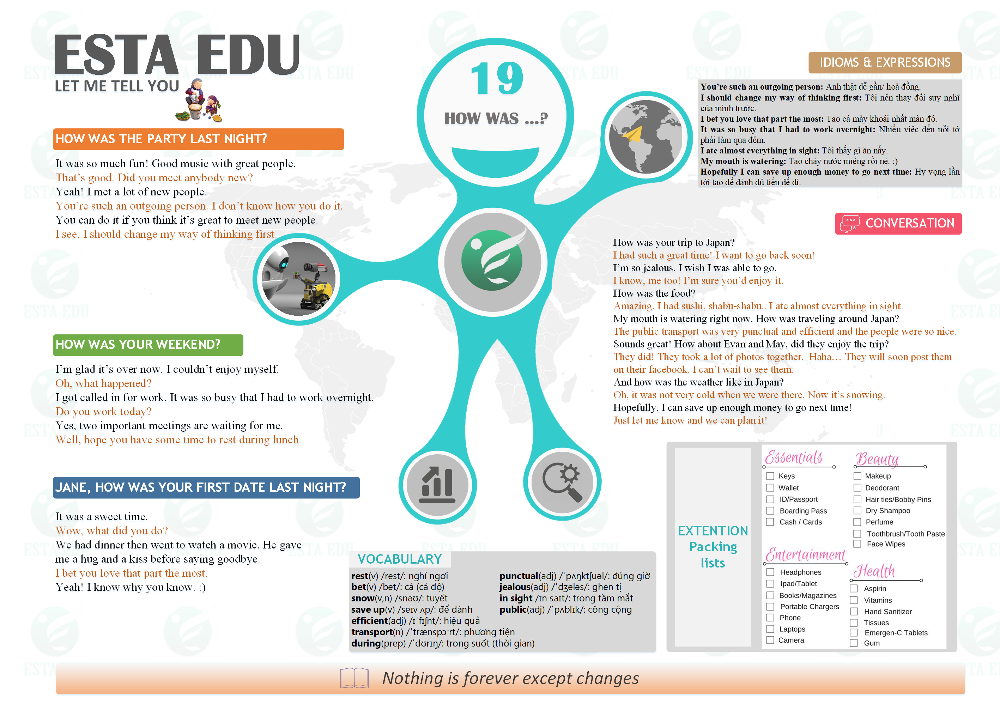
I. ĐOẠN VĂN
1) Tóm tắt
Đoạn văn là cuộc "hỏi thăm dư âm" sau những chuyện đã qua:
- Bữa tiệc tối qua: How was the party last night? — It was so much fun! Nhạc hay, người tuyệt; lại gặp thêm cả hội bạn mới — "cậu dễ gần thật đấy, tớ chịu"; người kia đáp: cứ nghĩ rằng gặp gỡ người mới là điều tuyệt thì làm được — "uhm, phải đổi cách nghĩ trước đã".
- Cuối tuần tệ nhất: How was your weekend? — "May quá là nó kết thúc rồi. Tớ chẳng vui nổi tí nào" — bị gọi vào làm, bận đến nỗi phải làm việc qua đêm; hôm nay còn 2 cuộc họp quan trọng chờ sẵn — "hy vọng trưa còn tí nghỉ ngơi nhé".
- Buổi hẹn đầu tiên của Jane: How was your first date last night? — "It was a sweet time"; đi ăn rồi xem phim, chia tay được một cái ôm và một nụ hôn — "chắc cậu khoái nhất màn đó" — "yeah, cậu biết vì sao mà 😆".
- Conversation là chuyến Nhật kể chất đầy cảm xúc: How was your trip to Japan? — "I had such a great time!"; đồ ăn amazing — sushi, shabu-shabu, thấy gì ăn nấy; người nghe "chảy nước miếng rồi nè"; phương tiện công cộng đúng giờ và hiệu quả, dân địa phương thân thiện; hồi đó trời không lạnh lắm, giờ đang có tuyết — "hy vọng để dành đủ tiền lần tới đi" — "cứ báo tớ, mình cùng lên kế hoạch!".
- Điểm chốt: học "How was + sự việc trong quá khứ?" → trả lời bằng "It was + adj" (great / fantastic / a sweet time / so much fun…), kể tiếp chi tiết bằng so + adj + that….
2) Khi nào sử dụng?
- Hỏi cảm nhận về một sự việc vừa qua: How was the party last night? / How was your weekend? / How was your first date? / How was your trip to Japan? → trả lời It was…
- Hỏi từng khía cạnh của chuyện đó: How was the food? / How was traveling around Japan? / How was the weather like in Japan?
- Trả lời hớn hở hoặc than thở: It was fantastic! / I'm glad it's over now. I couldn't enjoy myself.
- Nhấn mạnh mức độ khi kể: It was so busy that I had to work overnight. (bận đến nỗi phải làm qua đêm)
- Quan tâm người nghe sau khi nghe chuyện: Well, hope you have some time to rest during lunch.
3) Bảng cụm từ giao tiếp (IDIOMS & EXPRESSIONS + câu đáng nhớ)
Đọc nhanh như vầy: ⚠️ là lỗi "dịch từ tiếng Việt" hay gặp (gạch = đừng nói) · 💬 là khi nghe ai đó nói cụm này, mình bắt chuyện tiếp bằng câu nào.
| # | Cụm từ | Nghĩa (VI) | Khi nào dùng | Câu mẫu trong bài | ⚠️ Lỗi hay sai | 💬 Đáp lại |
|---|---|---|---|---|---|---|
| 1 | You're such an outgoing person | Anh thật dễ gần/ hoà đồng | Khen người dễ kết bạn, sôi nổi | You're such an outgoing person. I don't know how you do it. | I don't know how you do it. (Tớ chịu, làm sao cậu làm được) | |
| 2 | I should change my way of thinking first | Tôi nên thay đổi suy nghĩ của mình trước | Thừa nhận cần đổi góc nhìn | I see. I should change my way of thinking first. | Take it slow, step by step. (Từ từ, từng bước thôi) | |
| 3 | I bet you love that part the most | Tao cá mày khoái nhất màn đó | Chọc bạn về đoạn "ngọt" nhất | I bet you love that part the most. | Yeah! I know why you know. (Đúng rồi, cậu biết vì sao mà) | |
| 4 | It was so busy that I had to work overnight | Nhiều việc đến nỗi tớ phải làm qua đêm | Kể chuyện quá bận (so…that) | I got called in for work. It was so busy that I had to work overnight. | Hope you rest during lunch. (Trưa tranh thủ nghỉ nhé) | |
| 5 | I ate almost everything in sight | Tôi thấy gì ăn nấy | Khoe chuyện ăn uống "rủng rỉnh" | Amazing. I had sushi, shabu-shabu.. I ate almost everything in sight. | My mouth is watering! (Tớ chảy nước miếng rồi!) | |
| 6 | My mouth is watering | Tao chảy nước miếng rồi nè. :) | Nghe kể đồ ăn mà thèm | My mouth is watering right now. | Then you should go try it! (Vậy cậu nên đi thử đi!) | |
| 7 | Hopefully I can save up enough money to go next time | Hy vọng lần tới tao để dành đủ tiền để đi | Hẹn chuyến đi sau khi "đói" chuyến cũ | Hopefully, I can save up enough money to go next time! | Just let me know, we'll plan it! (Báo tớ, mình cùng lên kế hoạch!) |
4) Từ vựng (Vocabulary)
| Từ | Từ loại / Phiên âm | Nghĩa |
|---|---|---|
| rest | (v) /rest/ | Nghỉ ngơi |
| bet | (v) /bet/ | Cá (cá độ) |
| snow | (v,n) /snəʊ/ | Tuyết |
| save up | (v) /seɪv ʌp/ | Để dành |
| efficient | (adj) /ɪˈfɪʃnt/ | Hiệu quả |
| transport | (n) /ˈtrænspɔːrt/ | Phương tiện |
| during | (prep) /ˈdʊrɪŋ/ | Trong suốt (thời gian) |
| punctual | (adj) /ˈpʌŋktʃuəl/ | Đúng giờ |
| jealous | (adj) /ˈdʒeləs/ | Ghen tị |
| in sight | /ɪn saɪt/ | Trong tầm mắt |
| public | (adj) /ˈpʌblɪk/ | Công cộng |
| Attitude | (n) /ˈætɪtʃuːd/ | Thái độ |
| Present | (v) /prɪˈzent/ | Thuyết trình, trình bày |
| Presentation | (n) /ˌprezənˈteɪʃn/ | Bài thuyết trình |
| Presenter | (n) /prɪˈzentə(r)/ | Người thuyết trình |
| Negotiate | (v) /nɪˈɡəʊʃieɪt/ | Đàm phán |
| Negotiation | (n) /nɪˌɡəʊʃiˈeɪʃn/ | Cuộc đàm phán |
Extension (Packing lists — checklist đồ đi du lịch):
- Essentials: Keys, Wallet, ID/Passport, Boarding Pass, Cash / Cards
- Beauty: Makeup, Deodorant, Hair ties/Bobby Pins, Dry Shampoo, Perfume, Toothbrush/Tooth Paste, Face Wipes
- Entertainment: Headphones, Ipad/Tablet, Books/Magazines, Portable Chargers, Phone, Laptops, Camera
- Health: Aspirin, Vitamins, Hand Sanitizer, Tissues, Emergen-C Tablets, Gum
5) Đoạn hội thoại gốc (Free Talk)
How was the party last night?
It was so much fun! Good music with great people.
That's good. Did you meet anybody new?
Yeah! I met a lot of new people.
You're such an outgoing person. I don't know how you do it.
You can do it if you think it's great to meet new people.
I see. I should change my way of thinking first.
How was your weekend?
I'm glad it's over now. I couldn't enjoy myself.
Oh, what happened?
I got called in for work. It was so busy that I had to work overnight.
Do you work today?
Yes, two important meetings are waiting for me.
Well, hope you have some time to rest during lunch.
Jane, how was your first date last night?
It was a sweet time.
Wow, what did you do?
We had dinner then went to watch a movie. He gave me a hug and a kiss before saying goodbye.
I bet you love that part the most.
Yeah! I know why you know.Conversation (tiếp tục):
How was your trip to Japan?
I had such a great time! I want to go back soon!
I'm so jealous. I wish I was able to go.
I know, me too! I'm sure you'd enjoy it.
How was the food?
Amazing. I had sushi, shabu-shabu.. I ate almost everything in sight.
My mouth is watering right now. How was traveling around Japan?
The public transport was very punctual and efficient and the people were so nice.
Sounds great! How about Evan and May, did they enjoy the trip?
They did! They took a lot of photos together. Haha… They will soon post them on their facebook. I can't wait to see them.
And how was the weather like in Japan?
Oh, it was not very cold when we were there. Now it's snowing.
Hopefully, I can save up enough money to go next time!
Just let me know and we can plan it!II. NGỮ PHÁP
Tổng quan: 4 điểm ngữ pháp trong bài
| Điểm | Tên | Ứng dụng nói |
|---|---|---|
| 1 | Simple past tense with TOBE (Thì QKĐ với động từ TOBE) | It was… — trả lời "How was…?" |
| 2 | Prep + V-ing/ N (Giới từ + động từ V-ing/Danh từ) | afraid of waking, think of doing, how about going |
| 3 | Dùng ADV chỉ cấp độ trong so sánh (much/ many/ far/ almost…) | Làm rõ hơn mức độ so sánh |
| 4 | So sánh về số lần (half/ twice/ three times…) | Gấp đôi, gấp ba, một nửa |
Điểm 1. Simple past tense with TOBE: S + WAS/WERE + ADJ/ N · S + WAS/WERE + NOT + ADJ/ N · (WH) + WAS/WERE + S + ADJ/N?
Cách dùng: hỏi và kể trạng thái của sự việc trong quá khứ — "How was…?" luôn được đáp bằng "It was + adj", phủ định thì chèn not ngay sau was/were. Bản chất: was/were là "quá khứ của be", bám trạng thái (đẹp, bận, vui) chứ không phải hành động — kể chuyện "thế nào" chứ không "làm gì". Dễ nhầm: How was the weather like — dính "like" thừa (chỉ What was the weather like? mới dùng like); và kể chuyện tuần trước mà nói It is fun là "xuống thác" giữa đường, phải giữ It was. Mẹo giọng: kéo was nhẹ một nhịp trước tính từ — It waaas… so much fun — nghe như đang tận hưởng kỷ niệm.
Phản xạ hỏi–đáp:
- ❓ Hỏi cảm nhận:
How was the party last night?(Bữa tiệc tối qua thế nào?) - ➖ Phủ định:
It was not very cold when we were there.(Hồi tụi mình ở đó trời không lạnh lắm đâu) - 💬 Đáp lại:
Really? I'm glad to hear that! (Thật à? Nghe vui quá!)
Ví dụ:
- Ví dụ 1: How was the party last night? — It was cool and special. (Bữa tiệc tối qua thế nào? — Chất và đặc biệt lắm.)
- Ví dụ 2: It was so much fun! Good music with great people. (Vui hết nấc! Nhạc hay với hội bạn tuyệt vời)
- Ví dụ 3: It was a sweet time. (Một buổi hẹn ngọt ngào)
- Ví dụ 4: It was not very cold when we were there. (Hồi tụi mình ở đó trời không lạnh lắm đâu)
- Ví dụ 5: It was so busy that I had to work overnight. (Bận đến nỗi tớ phải làm qua đêm)
Biến tấu (tự luyện):
- Đổi chủ ngữ it → they:
They were amazing — the food and the people!(Tuyệt vời — cả đồ ăn lẫn người!) - Đổi thì quá khứ → hiện tại:
It is always fun when we meet.(Mỗi lần gặp là vui như thường)
Điểm 2. Prep + V-ing/ N: GIỚI TỪ + V-ING / DANH TỪ (afraid of / think of / how about …)
Cách dùng: sau giới từ, động từ phải ở dạng V-ing (hoặc dùng danh từ) — bộ ba afraid of, think of, how about cực hợp để bộc lộ nỗi lo và rủ rê. Bản chất: giới từ là "cửa kiểm soát", chỉ cho V-ing đi qua — afraid of wake you up ✗, phải afraid of waking. Nói ra nó khi lo lắng, mơ mộng, rủ rê: I'm thinking of going back soon, How about trying sushi?. Dễ nhầm: How about going to swimming — chen to thừa, chỉ How about going swimming? thôi.
Phản xạ hỏi–đáp:
- ❓ Hỏi rủ rê:
How about going swimming now?(Hay là giờ mình đi bơi đi?) - ➕ Nói nỗi lo:
We were afraid of waking you up.(Chúng tớ sợ làm cậu thức giấc) - 💬 Đáp lại:
Sure, count me in! (Được thôi, tính tớ một chân!)
Ví dụ:
- Ví dụ 1: We were afraid of waking you up. (Chúng tớ sợ làm cậu thức giấc)
- Ví dụ 2: Have you thought of doing something crazy? (Có bao giờ bạn nghĩ đến việc làm một cái gì đó điên rồ?)
- Ví dụ 3: How about going swimming now? (Hay là giờ mình đi bơi đi?)
- Ví dụ 4: I'm thinking of going back to Japan soon. (Tớ đang nghĩ đến chuyện sớm quay lại Nhật)
- Ví dụ 5: How about trying sushi this Sunday? (Hay là chủ nhật này mình đi thử sushi nhé?)
Biến tấu (tự luyện):
- Đổi going swimming → eating out:
How about eating out this Friday?(Thứ sáu này mình đi ăn ngoài nhé?) - Đổi afraid of → tired of:
I'm tired of working overnight.(Tớ chán ngấy làm qua đêm rồi)
Điểm 3. Dùng ADV chỉ cấp độ: MUCH / MANY / FAR / ALMOST + so sánh hơn (better / more …)
Cách dùng: chèn trạng từ chỉ cấp độ trước so sánh hơn để làm rõ hơn mức độ — gọi vui là "so sánh chắt hơn" :)). Bản chất: much/far bơm lực cho better/more, còn many more + danh từ đếm được là "nhiều hơn từng cái". Dễ nhầm: very better ✗ — "very" không nuôi được so sánh hơn, phải là much/far better. Nói ra nó khi khen chê cho "đã miệng" — khoe mức chênh giữa hai thứ. Mẹo nhịp: ngắt far — better than I imagined, gồng giọng ở "far" cho câu đắt.
Phản xạ hỏi–đáp:
- ➕ Nói khen:
The trip was much better than I expected.(Chuyến đi tuyệt hơn tớ tưởng nhiều) - ➖ Phủ định:
It wasn't much better than last time.(Không hơn được bao nhiêu so với lần trước) - 💬 Đáp lại:
Still way better than nothing! (Vẫn hơn là không mà!)
Ví dụ:
- Ví dụ 1: It's far better than I could imagine. (Điều này tốt hơn tôi tưởng tượng nhiều)
- Ví dụ 2: I love you much more than I can express. (Tôi yêu em nhiều hơn rất nhiều những gì tôi có thể nói)
- Ví dụ 3: He bought many more books than he said. (Anh ấy mua nhiều sách hơn anh ấy nói)
- Ví dụ 4: The trip was much better than I expected. (Chuyến đi tuyệt hơn tớ tưởng nhiều)
- Ví dụ 5: The food in Japan is far more amazing than in the photos. (Đồ ăn ở Nhật chắt hơn trong ảnh xa lắc)
Biến tấu (tự luyện):
- Đổi much better → far worse:
The weekend was far worse than I imagined.(Cuối tuần tệ hơn tớ tưởng xa lắc) - Đổi danh từ đếm được:
I bought many more shoes than I planned.(Tớ mua nhiều giày hơn dự định)
Điểm 4. So sánh về số lần: HALF / TWICE / THREE TIMES + AS + ADJ/ ADV + AS …
Cách dùng: nói một nửa / gấp đôi / gấp ba — nhớ dùng cấu trúc so sánh bằng và xác định danh từ là đếm được hay không. Công thức: half / twice / three times + as + adj/adv + as — twice as expensive as, three times as big as. Dễ nhầm: twice more expensive ✗ — nói "gấp đôi" không dùng "more"; danh từ không đếm được thì giữ as much as (half as much money as). Nói ra nó khi so giá, lương, kích cỡ — chuyện định lượng ai cũng thích nghe. Mẹo nhịp: nhấn twice/three times — đó là "từ đắt" bán cả câu.
Phản xạ hỏi–đáp:
- ❓ Hỏi mức chênh:
Is your salary twice as high as before?(Lương cậu gấp đôi hồi trước hả?) - ➕ Nói so sánh:
This phone costs twice as much as mine.(Cái điện thoại này đắt gấp đôi cái của tớ) - 💬 Đáp lại:
Wow, then get the cheaper one! (Trời, vậy mua cái rẻ đi!)
Ví dụ:
- Ví dụ 1: Petrol is twice as expensive as it was last year. (Giá xăng bây giờ đắt gấp đôi giá xăng năm ngoái)
- Ví dụ 2: Her bag costs three times as much as mine. (Túi xách của cô ấy giá đắt hơn 3 lần của tôi)
- Ví dụ 3: My salary is twice as high as my first one. (Lương bây giờ của tớ gấp đôi lương đầu tiên)
- Ví dụ 4: Our new office is three times as big as the old one. (Văn phòng mới của tụi mình gấp ba cái cũ)
- Ví dụ 5: I spent half as much money as you did. (Tớ tiêu chỉ nửa số tiền của cậu thôi)
Biến tấu (tự luyện):
- Đổi twice → half:
I paid half as much for this bag.(Túi này tớ trả chỉ nửa giá thôi) - Đổi danh từ:
three times as big→three times as long:The movie is three times as long as the trailer.(Phim dài gấp ba cái teaser)
III. LUYỆN NÓI (drill)
Echo drill (nói to 3 lần, nhanh hơn mỗi lần)
- How was the party last night? — It was so much fun! Good music with great people.
- You're such an outgoing person. — I see. I should change my way of thinking first.
- How was your weekend? — I'm glad it's over now. It was so busy that I had to work overnight.
- Amazing. I had sushi, shabu-shabu.. I ate almost everything in sight. — My mouth is watering right now!
- The public transport was very punctual and efficient and the people were so nice. Hopefully, I can save up enough money to go next time!
5 câu hỏi tự luyện (tự hỏi + trả lời)
- How was your day yesterday? — It was … (so busy / so much fun), because … .
- How was the movie last night? / the weather yesterday? — It was fantastic! It was not very cold. And you?
- How was your first class with your native teacher? — It was … . I was excited but nervous.
- How was your first date / your Tet holiday? — It was a sweet time. When was it? What did you do? Who was there with you?
- How was your presentation / negotiation? — It was … . My attitude was calm and I hope to rest during lunch after that.
✅ Checkpoint: hỏi & trả lời "How was…?" với 5 sự việc thật (tiệc, cuối tuần, buổi hẹn, chuyến đi, đồ ăn) — luôn đáp "It was + adj", kể tiếp bằng so … that. Ghi âm lại.
20When was the ...?Lần đầu/ lần cuối bạn… là khi nào?
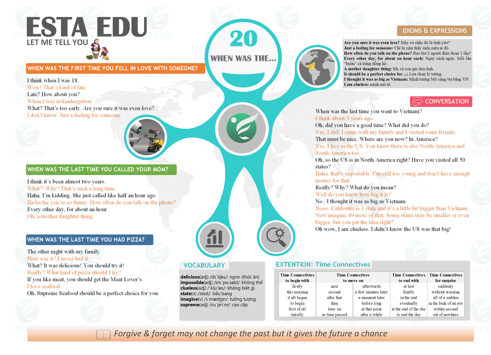
I. ĐOẠN VĂN
1) Tóm tắt
Đoạn văn là cuộc "truy tìm kỷ niệm" — lần đầu và lần cuối:
- Lần đầu "tan chảy": When was the first time you fell in love with someone? — "hồi tôi 18" — "trễ nhỉ?" — "trễ? còn cậu?" — "máu me từ mẫu giáo luôn" — "sao, hơi sớm đó! Cậu chắc đó là tình yêu hả?" — "không biết, chỉ là thấy mến mến ai đó thôi".
- Gọi điện cho mẹ: When was the last time you called your mom? — "hồi đó tới giờ… gần 2 năm rồi" — "trời đất, lâu vậy?!" — "đùa đó, mẹ vừa gọi khoảng nửa tiếng trước xong"; hai mẹ con nói chuyện ngày cách ngày, mỗi lần cả tiếng — "thiệt là chuyện riêng của mẹ con".
- Pizza chung đồ: When was the last time you had pizza? — "bữa kia, đi cùng gia đình" — "nghe ngon quá mà tôi chưa ăn bao giờ!" — "ngon tuyệt! Phải thử đi!" — thích thịt thì chọn Meat Lover's, mê hải sản thì Supreme Seafood — lựa chọn lý tưởng.
- Conversation là cuộc "so bự" về nước Mỹ: When was the last time you went to Vietnam? — "khoảng 3 năm trước"; về chơi cùng gia đình và thăm bạn bè; giờ sống ở Mỹ — "cậu đã từng ghé đủ 50 tiểu bang chưa?" — "hết ý luôn, còn trẻ mà chẳng đủ tiền"; California là 1 tiểu bang mà to hơn Việt Nam xíu, tưởng tượng thêm 49 cái nữa đi — "mình mù tịt, không ngờ Mỹ to đến vậy!"
- Điểm chốt: học "When was the first/ last time + S + V (quá khứ)?" → trả lời bằng mốc thời gian quá khứ (when I was 18 / 3 years ago / the other night / half an hour ago).
2) Khi nào sử dụng?
- Hỏi lần đầu tiên trải nghiệm: When was the first time you fell in love / went to the cinema / traveled alone? → trả lời It was on my 15th birthday. / When I was in kindergarten.
- Hỏi lần gần nhất (mới đây nhất): When was the last time you called your mom / had pizza / went to Vietnam? → trả lời It's just 5 minutes ago. / About 3 years ago. / The other night.
- Đổi tần suất sau đó: How often do you talk on the phone? → Every other day, for about an hour each.
- Chọc ghẹo hoặc thắc mắc về kỷ niệm: Are you sure it was even love? / That's kind of late. / That's too early.
- Khi kể lại, nối chuyện bằng time connectives (firstly, after that, finally…) và bổ sung cảm nhận: It was delicious! / It should be a perfect choice for you.
3) Bảng cụm từ giao tiếp (IDIOMS & EXPRESSIONS + câu đáng nhớ)
Đọc nhanh như vầy: ⚠️ là lỗi "dịch từ tiếng Việt" hay gặp (gạch = đừng nói) · 💬 là khi nghe ai đó nói cụm này, mình bắt chuyện tiếp bằng câu nào.
| # | Cụm từ | Nghĩa (VI) | Khi nào dùng | Câu mẫu trong bài | ⚠️ Lỗi hay sai | 💬 Đáp lại |
|---|---|---|---|---|---|---|
| 1 | Are you sure it was even love? | Mày có chắc đó là tình yêu? | Chọc ghẹo chuyện "yêu" tuổi thơ | What? That's too early. Are you sure it was even love? | I don't know, just a feeling. (Không biết, chỉ thấy mến thôi) | |
| 2 | Just a feeling for someone | Chỉ là cảm thấy mến mến ai đó | Trả lời mơ hồ về tình cảm | I don't know. Just a feeling for someone. | Aw, that's still cute! (Ơ, vẫn dễ thương mà!) | |
| 3 | How often do you talk on the phone? | Bao lâu 2 người điện thoại 1 lần? | Hỏi tần suất gọi điện | How often do you talk on the phone? — Every other day. | Every other day, for about an hour. (Ngày cách ngày, mỗi lần cả tiếng) | |
| 4 | Every other day, for about an hour each | Ngày cách ngày. Mỗi lần "buồn" cả tiếng đồng hồ | Nói tần suất "tâm sự" gia đình | Every other day, for about an hour each. | A mother daughter thing. (Chuyện riêng mẹ con thôi) | |
| 5 | A mother daughter thing | Mẹ và con gái tâm tình | Giải thích chuyện riêng mẹ — con gái | Oh, a mother daughter thing. | So sweet! Call her often! (Ngọt thế! Gọi mẹ nhiều vào!) | |
| 6 | It should be a perfect choice for … | Lựa chọn lý tưởng | Gợi ý, giới thiệu món/vật gì đó | Oh, Supreme Seafood should be a perfect choice for you. | Sounds tasty! I'll try it! (Nghe ngon! Mình thử ngay!) | |
| 7 | I thought it was as big as Vietnam | Mình tưởng Mỹ cũng bự bằng VN | Thừa nhận mình tưởng sai một sự thật | No.. I thought it was as big as Vietnam. | Wow, imagine 49 more! (Ơ, tưởng tượng thêm 49 cái nữa!) | |
| 8 | I am clueless | Mình mù tịt | Thừa nhận không biết gì về chuyện đó | Oh wow, I am clueless. I didn't know the US was that big! | Now you know, haha! (Giờ biết rồi nhé, haha!) |
4) Từ vựng (Vocabulary)
| Từ | Từ loại / Phiên âm | Nghĩa |
|---|---|---|
| delicious | (adj) /dɪˈlɪʃəs/ | Ngon (thức ăn) |
| impossible | (adj) /ɪmˈpɑːsəbl/ | Không thể |
| clueless | (adj) /ˈkluːləs/ | Không biết gì |
| state | (n) /steɪt/ | Tiểu bang |
| imagine | (v) /ɪˈmædʒɪn/ | Tưởng tượng |
| supreme | (adj) /suˈpriːm/ | Cao cấp |
| Do something alone = do sth by oneself | (phrase) | Một mình, tự mình |
| Climb (a mountain, a tree) | (v) /klaɪm/ | Leo núi, trèo cây… |
Extension (Time Connectives — từ nối chỉ thời gian):
- To begin with: firstly, this morning, it all began, to begin, first of all, initially
- To move on: next, second, after that, then, later on, as time passed, afterwards, a few minutes later, a moment later, before long, at that point, after a while
- To end with: at last, finally, in the end, eventually, at the end of the day, to end the day
- For surprise: suddenly, without warning, all of a sudden, in the blink of an eye, within seconds, out of nowhere
5) Đoạn hội thoại gốc (Free Talk)
When was the first time you fell in love with someone?
I think when I was 18.
Wow! That's kind of late.
Late? How about you?
When I was in kindergarten.
What? That's too early. Are you sure it was even love?
I don't know. Just a feeling for someone.
When was the last time you called your mom?
I think it's been almost two years.
What?! Why? That's such a long time.
Haha, I'm kidding. She just called like half an hour ago.
Ha ha ha, you're so funny. How often do you talk on the phone?
Every other day, for about an hour
Oh, a mother daughter thing.
When was the last time you had pizza?
The other night with my family
How was it? I never had it.
What? It was delicious! You should try it!
Really? What kind of pizza should I try?
If you like meat, you should get the Meat Lover's.
I love seafood.
Oh, Supreme Seafood should be a perfect choice for you.Conversation (tiếp tục):
When was the last time you went to Vietnam?
I think about 3 years ago.
Oh, did you have a good time? What did you do?
Yes, I did! I came with my family and I visited some friends.
That must be nice. Where are you now? In America?
Yes, I live in the US. You know there is also North America and South America too.
Oh, so the US is in North America right? Have you visited all 50 states?
Haha, that's impossible. I'm still too young and don't have enough money for that.
Really? Why? What do you mean?
Well do you know how big it is?
No.. I thought it was as big as Vietnam.
Nooo. California is 1 state and it's a little bit bigger than Vietnam. Now imagine 49 more of that. Some states may be smaller or even bigger, but you get the idea right?
Oh wow, I am clueless. I didn't know the US was that big!II. NGỮ PHÁP
Tổng quan: 4 điểm ngữ pháp trong bài
| Điểm | Tên | Ứng dụng nói |
|---|---|---|
| 1 | NOUN + LESS = NO… (ADJ) | clueless = no clue — "mù tịt" |
| 2 | Time vs Times | Thời gian (không đếm) vs lần (đếm được) |
| 3 | Such (a/an) + adj/ adv + N! | Câu cảm thán "quá là…" |
| 4 | The last time/ first time | Lần cuối cùng/ lần đầu tiên bạn làm việc gì đó |
Điểm 1. NOUN + LESS = NO… (ADJ): CLUE / HOME / LOVE / HOPE + -LESS
Cách dùng: gắn đuôi -less vào danh từ là thành tính từ "không có…" — clueless = no clue (không manh mối); dùng để tự nhận mình "mù tịt" rất tiện. Bản chất: -less là "hộp đựng sự thiếu hụt" — homeless, hopeless, loveless, priceless (chết rồi, cái này ngược nghĩa: "vô giá"!). Nói ra nó khi tự trêu mình hoặc tả người/vật thiếu thứ gì — I'm clueless about directions. Dễ nhầm: I am a clueless ✗ — clueless là tính từ, không có "a"; nói "clueless về chuyện gì" thì thêm about: clueless about love. Mẹo giọng: nhấn đuôi -less — clue-LESS — câu tự hào kiểu "ta đây chịu thua" nghe duyên hơn.
Phản xạ hỏi–đáp:
- ➕ Nói tự trêu:
I am clueless about directions.(Tớ mù tịt đường đi lối về) - ➖ Phủ định:
I'm not clueless — I just forgot.(Tớ không mù tịt đâu — chỉ quên thôi) - 💬 Đáp lại:
Then let's find out together! (Vậy cùng tìm hiểu đi!)
Ví dụ:
- Ví dụ 1: I am clueless where to find her. (Tôi chẳng biết tìm em nơi đâu)
- Ví dụ 2: He is hopelessly crying her name. (Anh gọi tên cô trong vô vọng)
- Ví dụ 3: Homeless = no home. (Vô gia cư)
- Ví dụ 4: Loveless = no love. (Không tình yêu)
- Ví dụ 5: Hopeless = no hope. (Vô vọng)
Biến tấu (tự luyện):
- Đổi danh từ:
clueless→hopeless:I'm hopeless at dancing.(Nhảy nhót thì tớ bó tay) - Đổi chủ ngữ I → he:
He is clueless about love.(Anh ấy mù mờ chuyện tình cảm)
Điểm 2. Time vs Times: TIME (N không đếm được): thời gian · TIME(S) (N đếm được): lần
Cách dùng: time không đếm được là thời gian, time(s) đếm được là lần — hỏi số lần bằng How many times…? / Is this the first time…?. Bản chất: thêm s là "đóng gói từng lần" — three times this year; không có s là thời gian trôi chung chung — I have no time for gossip. Dễ nhầm: How much times ✗ — đếm được thì How many times; và no times ✗ — "không có thời gian" là no time. Mẹo nói: times nhả rõ /z/ cuối — nghe ra "lần" ngay, đừng nuốt thành "time".
Phản xạ hỏi–đáp:
- ❓ Hỏi số lần:
How many times have you been there?(Nơi đó cậu đi bao nhiêu lần rồi?) - ➖ Phủ định:
I have no time for gossip today.(Hôm nay tớ chẳng có thời gian tám chuyện) - 💬 Đáp lại:
Me neither — too busy lately! (Tớ cũng vậy — dạo này bận quá!)
Ví dụ:
- Ví dụ 1: I have no time for cock and bull story. (Tớ chẳng có thời gian buôn chuyện không đâu)
- Ví dụ 2: How many times have you kissed her? (Con đã thầm có ấy bao nhiêu lần rồi? :))
- Ví dụ 3: Is this the first time you came here? (Lần đầu em đến đây phải không?)
- Ví dụ 4: When was the last time you had pizza? — The other night. (Lần gần nhất cậu ăn pizza là khi nào? — Bữa kia, đi cùng gia đình)
- Ví dụ 5: I've been there three times this year. (Năm nay tớ đã đến đó ba lần rồi)
Biến tấu (tự luyện):
- Đổi số lần three → twice:
I've been there twice this year.(Năm nay tớ đến đó hai lần) - Đổi first → second:
This is the second time you've called.(Đây là lần thứ hai cậu gọi rồi đó)
Điểm 3. Such (a/an) + adj/ adv + N: SUCH (A/ AN) + ADJ/ ADV + N!
Cách dùng: câu cảm thán nhấn mạnh mức độ — đặt such trước (a/an) + adj + danh từ để "khen cho ào ào". Bản chất: such phải có danh từ đằng sau — such a great time, such an outgoing person; danh từ không đếm được thì bỏ a/an — such good music. Dễ nhầm: so great time ✗ — "so" bám tính từ trần (so great), "such" bám cả cụm có danh từ. Mẹo giọng: such a đọc chụm "sớ-chơ" rồi nhấn mạnh tính từ — such a GREAT time!
Phản xạ hỏi–đáp:
- ➕ Nói khen:
She has such a sweet voice!(Giọng cô ấy ngọt như mía!) - ➖ Phủ định:
It wasn't such a bad day after all.(Hóa ra cũng không đến nỗi tệ đâu) - 💬 Đáp lại:
Aww, you're too kind! (Trời, cậu khen quá lố!)
Ví dụ:
- Ví dụ 1: You are such a great father! (Anh là một người cha tuyệt vời!)
- Ví dụ 2: It's such a beautiful day! (Quá là một ngày thật đẹp!)
- Ví dụ 3: Such a long time that we meet again! (Thiệt lâu rồi chúng ta mới gặp lại ha)
- Ví dụ 4: You're such an outgoing person. (Cậu thật dễ gần/ hoà đồng)
- Ví dụ 5: It was such a great time! (Quả thật là một khoảng thời gian tuyệt vời)
Biến tấu (tự luyện):
- Đổi danh từ:
such a great time→such a sweet voice:You have such a sweet voice!(Giọng cậu ngọt lịm!) - Bỏ a/an (danh từ không đếm được):
We had such good music at the party.(Nhạc ở bữa tiệc hay lắm!)
Điểm 4. The last time/ first time: WHEN WAS THE FIRST/ LAST TIME + S + V2/ED? · THE FIRST/ LAST TIME + S + V2/ED
Cách dùng: hỏi thời điểm lần đầu/ lần cuối bạn làm việc gì đó — trả lời bằng mốc thời gian quá khứ; khi kể lại dùng The first/ last time + S + V2/ed. Bản chất: câu này "khoá" chuyện vào một lần duy nhất nên động từ lùi về quá khứ — When was the last time you have pizza ✗, phải là you had pizza. Nói ra nó khi "truy kỷ niệm": lần đầu yêu, lần cuối gọi mẹ, lần cuối ăn pizza. Dễ nhầm: When did you last time ✗ — giữ nguyên khung When was the (first/last) time + S + V2/ed thôi. Mẹo nhịp: lên giọng ở first/last — đó là "từ đắt" của câu.
Phản xạ hỏi–đáp:
- ❓ Hỏi kỷ niệm:
When was the last time you called your mom?(Lần gần nhất cậu gọi cho mẹ là khi nào?) - ➖ Phủ định:
I haven't called her for two years.(Tớ gần 2 năm chưa gọi cho mẹ) - 💬 Đáp lại:
Call her now — she'll be so happy! (Gọi ngay đi — mẹ vui lắm!)
Ví dụ:
- Ví dụ 1: When was the first time you fell in love with someone? — I think when I was 18. (Lần đầu cậu yêu ai là khi nào? — Chắc là hồi tôi 18)
- Ví dụ 2: When was the last time you called your mom? — She just called like half an hour ago. (Lần gần nhất cậu gọi cho mẹ là khi nào? — Mẹ vừa gọi khoảng nửa tiếng trước)
- Ví dụ 3: The first time I met him was 2 years ago. (Tôi gặp anh ấy lần đầu tiên là cách đây 2 năm)
- Ví dụ 4: The last time we talked was yesterday. (Lần nói chuyện gần đây nhất của chúng tôi là hôm qua)
- Ví dụ 5: When was the first time you went to the cinema? — It was on my 15th birthday. (Lần đầu cậu đi xem phim là khi nào? — Là vào sinh nhật lần thứ 15 của tôi)
Biến tấu (tự luyện):
- Đổi last → first:
When was the first time you had pizza?(Lần đầu cậu ăn pizza là khi nào?) - Đổi động từ:
When was the last time you climbed a mountain?(Lần cuối cậu leo núi là khi nào?)
III. LUYỆN NÓI (drill)
Echo drill (nói to 3 lần, nhanh hơn mỗi lần)
- When was the first time you fell in love with someone? — I think when I was 18.
- When was the last time you called your mom? — She just called like half an hour ago. Every other day, for about an hour.
- When was the last time you had pizza? — The other night with my family. It was delicious!
- If you like meat, you should get the Meat Lover's. — Oh, Supreme Seafood should be a perfect choice for you.
- I thought it was as big as Vietnam. — Nooo. California is 1 state and it's a little bit bigger than Vietnam.
5 câu hỏi tự luyện (tự hỏi + trả lời)
- When was the first time you fell in love with someone? — I think when I was … . Just a feeling for someone.
- When was the first time you went to the zoo / traveled alone? — It was … . I did it by myself.
- When was the last time you called your mom? — Like … ago. We talk every other day — a mother daughter thing.
- When was the last time you had pizza / went to Vietnam? — The other night. It was delicious! What kind of … should I try?
- When was the last time you bought your mom a gift / told s.o you loved them? — … . How did you feel at that time? Why did you do it?
✅ Checkpoint: hỏi & trả lời "When was the first/ last time…?" với 5 kỷ niệm thật — đáp bằng mốc thời gian quá khứ, hỏi thêm How often…? và How did you feel at that time?. Ghi âm lại.
21[FOR REFERENCE ONLY] Why don't...?Tại sao… không?
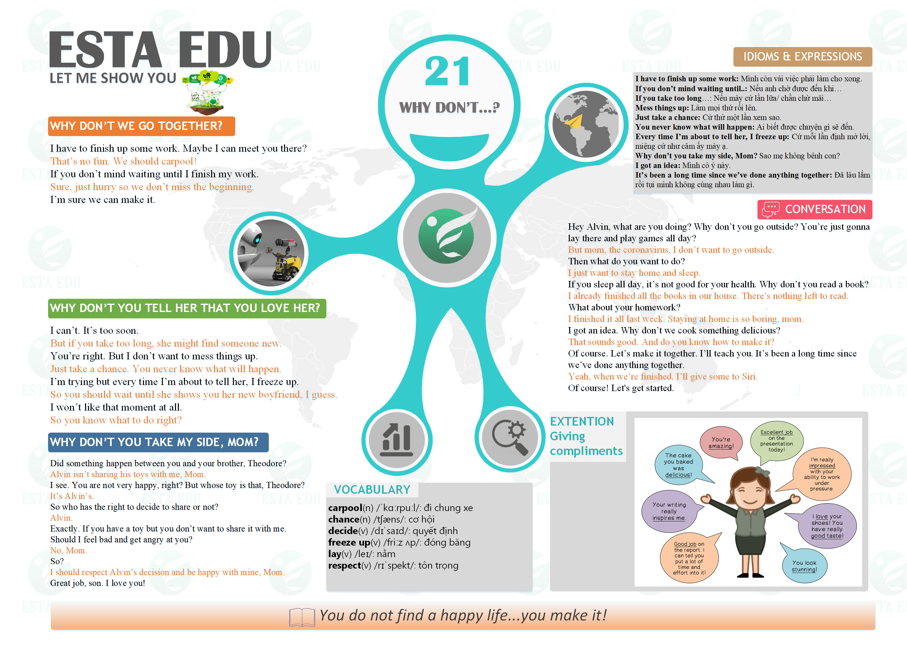
I. ĐOẠN VĂN
1) Tóm tắt
Đoạn văn là một loạt "cuộc gọi lời" bằng Why don't…?:
- Đi cùng nhau thôi: "Why don't we go together?" — bạn còn việc phải làm (finish up some work) rồi mới gặp sau; đằng kia "chán quá đi" — "We should carpool!"; kết quả: "just hurry so we don't miss the beginning" — "I'm sure we can make it".
- Thổ lộ với nàng: "Why don't you tell her that you love her?" — "It's too soon"; chần chừ thì nàng tìm người mới; mỗi lần định mở lời thì freeze up (câm như hến) — khuyên kiểu "Just take a chance. You never know what will happen."
- Mẹ con Theodore: con than mẹ không bênh con; mẹ hỏi ngược — đồ chơi của ai thì quyết định việc chia hay không là của Alvin; con phải respect Alvin's decision và vui với phần của mình — mẹ khen "Great job, son!"
- Conversation: Alvin nằm lay chơi game cả ngày vì coronavirus; mẹ rủ đọc sách — đã đọc hết, bài tập cũng xong, nhà chán lắm; mẹ "bật ra": "I got an idea. Why don't we cook something delicious? How about cooking spaghetti?" — làm cùng nhau, "It's been a long time since we've done anything together", xong còn cho Siri ăn nữa.
Điểm chốt: Why don't…? vừa là hỏi lý do ("sao bạn không…?") vừa là đề xuất ("sao ta không…?"); trả lời bằng Let's… / How about… / should… hoặc lý giải thẳng ("It's too soon").
2) Khi nào sử dụng?
- Đề xuất một việc chung: Why don't we cook something to eat now? / Why don't we go together? — "cùng nhau" thì dùng we.
- Hỏi lý do / động viên người khác: Why don't you wear something white today? / Why don't you go outside? — "chỉ riêng bạn" thì dùng you.
- Bàn về người thứ ba: Why doesn't she break up with her boyfriend? / Why doesn't he ask for help?
- Hai cách trả lời: ① hưởng ứng — Oh, yes. Let's cook Pho Bo now.; ② lý giải — It's raining so I think it's not good to wear white clothes. hoặc I can't. It's too soon.
- Thêm gia vị: phủ định "chẳng có gì vui" bằng That's no fun = There is not any fun; đổi tông gợi ý bằng How about…? / Let's… / S + should/could/need + V.
3) Bảng cụm từ giao tiếp (IDIOMS & EXPRESSIONS + câu đáng nhớ)
Đọc nhanh như vầy: ⚠️ là lỗi "dịch từ tiếng Việt" hay gặp (gạch = đừng nói) · 💬 là khi nghe ai đó nói cụm này, mình bắt chuyện tiếp bằng câu nào.
| # | Cụm từ | Nghĩa (VI) | Khi nào dùng | Câu mẫu trong bài | ⚠️ Lỗi hay sai | 💬 Đáp lại |
|---|---|---|---|---|---|---|
| 1 | I have to finish up some work | Mình còn vài việc phải làm cho xong | Nói lý do chưa đi/chưa xong việc | I have to finish up some work. Maybe I can meet you there? | Sure, see you there! (Được, gặp cậu ở đấy nhé) | |
| 2 | If you don't mind waiting | Nếu anh chờ được đến khi… | Xin người khác chờ mình, nói khéo | If you don't mind waiting until I finish my work. | No problem, take your time. (Không sao, cậu cứ từ từ) | |
| 3 | If you take too long… | Nếu mày cứ lân lừa/ chần chừ mãi… | Giục/chọc ai chần chừ quá lâu | If you take too long, she might find someone new. | Okay okay, I'm going now! (Ừ ừ, đi ngay đây!) | |
| 4 | Mess things up | Làm mọi thứ rối lên | Lo mình làm hỏng chuyện | You're right. But I don't want to mess things up. | You'll do fine, trust me! (Cậu làm được mà, tin tớ đi) | |
| 5 | Just take a chance | Cứ thử một lần xem sao | Động viên dám thử | Just take a chance. | Okay, I'll give it a try! (Ừ, thử một lần xem sao) | |
| 6 | You never know what will happen | Ai biết được chuyện gì sẽ đến | Thuyết phục khi có ai ngại ngần | Just take a chance. You never know what will happen. | You're right, I'll try. (Cậu nói đúng, tớ thử vậy) | |
| 7 | Every time I'm about to tell her, I freeze up | Cứ mỗi lần định mở lời, miệng cứ như câm ậy mà ạ | Tả cảnh đứng hình vì hồi hộp | I'm trying but every time I'm about to tell her, I freeze up. | Take a deep breath first. (Thở sâu một hơi đã) | |
| 8 | Why don't you take my side, Mom? | Sao mẹ không bênh con? | Cầu bênh/kêu với bố mẹ | Why don't you take my side, Mom? | Because it's not fair, honey. (Vì không công bằng mà con) | |
| 9 | I got an idea | Mình có ý này | Mở đầu câu đề xuất | I got an idea. Why don't we cook something delicious? | Ooh, I'm listening! (Ồ, tớ đang nghe nè!) | |
| 10 | It's been a long time since we've done anything together | Đã lâu lắm rồi tụi mình không cùng nhau làm gì | Nhắc kỷ niệm để rủ nhau | It's been a long time since we've done anything together. | Yeah, let's do it! (Ừ, làm ngay đi!) |
4) Từ vựng (Vocabulary)
| Từ | Từ loại / Phiên âm | Nghĩa |
|---|---|---|
| Carpool | (n) /ˈkaːrpuːl/ | Đi chung xe |
| Chance | (n) /tʃæns/ | Cơ hội |
| Decide | (v) /dɪˈsaɪd/ | Quyết định |
| Freeze up | (v) /friːz ʌp/ | Đóng băng (đứng hình) |
| Lay | (v) /leɪ/ | Nằm |
| Respect | (v) /rɪˈspekt/ | Tôn trọng |
| Take a day off | (v) /deɪ ɔːf/ | Nghỉ 1 ngày |
| Your own + N | (adj) /oʊn/ | … của riêng bạn (your own room, family, money) |
| Practice + V-ing | (v) /ˈpræktɪs/ | Tập, thực hành (practice speaking / dancing) |
| Be willing to | (v) /ˈwɪlɪŋ/ | Sẵn lòng làm gì đó |
| Accept any consequences | (n) /ˈkɑːnsəkwensɪz/ | Chấp nhận dù kết quả thế nào |
Extension (Giving compliments — cách khen người):
- The cake you baked was delicious!
- Your writing really inspires me.
- Good job on the report. I can tell you put a lot of time and effort into it!
- I'm really impressed with your ability to work under pressure.
- I love your shoes! You have really good taste!
- You look stunning!
- You're amazing!
- Excellent job on the presentation today!
5) Đoạn hội thoại gốc (Free Talk)
Why don’t we go together?
I have to finish up some work. Maybe I can meet you there?
That’s no fun. We should carpool!
If you don’t mind waiting until I finish my work.
Sure, just hurry so we don’t miss the beginning.
I’m sure we can make it.
Why don’t you tell her that you love her?
I can’t. It’s too soon.
But if you take too long, she might find someone new.
You’re right. But I don’t want to mess things up.
Just take a chance. You never know what will happen.
I’m trying but every time I’m about to tell her, I freeze up.
So you should wait until she shows you her new boyfriend, I guess.
I won’t like that moment at all.
So you know what to do right?
Why don’t you take my side, Mom?
Did something happen between you and your brother, Theodore?
Alvin isn’t sharing his toys with me, mom.
I see. You are not very happy right? But whose toy is that, Theodore?
It’s Alvin’s.
So who has the right to decide to share or not?
Alvin.
Exactly If you have a toy but you don’t want to share it with me.
Should I feel bad and get angry at you?
No mom.
So?
I should respect Alvin’s decision and be happy with mine, Mom.
Great job, son. I love you!Conversation (tiếp tục):
Hey Alvin, what are you doing? Why don’t you go outside?
You’re just gonna lay there and play games all day?
But mom, the coronavirus. I don’t want to go outside.
Then what do you want to do?
I just want to stay home and sleep.
If you sleep all day, it’s not good for your health. Why don’t you read a book?
I already finished all the books in our house. There’s nothing left to read.
What about your homework?
I finished it all last week. Staying at home is so boring, mom.
I got an idea. Why don’t we cook something delicious? How about cooking spaghetti?
That sounds good. Do you know how to make it?
Of course. Let’s make it together. I’ll teach you.
It’s been a long time since we’ve done anything together.
Yeah, when we’re finished, I’ll give some to Siri.
Of course! Let's get started.II. NGỮ PHÁP
Tổng quan: 6 điểm ngữ pháp trong bài
| Điểm | Tên | Ứng dụng nói |
|---|---|---|
| 1 | Why don't + S + V (đề xuất / hỏi lý do) | Mở lời rủ & hỏi "sao không…?" |
| 2 | No + N = not…any + N (Không / chả…) | Phủ định "chẳng có gì" |
| 3 | How about + V-ing/noun | Gợi ý phương án khác |
| 4 | Let's + verb | Rủ/gọi hành động |
| 5 | S + should/could/need + V | Khuyên, nêu bổn phận |
| 6 | Why don't/doesn't + S + V | Bàn về người thứ ba |
Điểm 1. Why don't + S + V (đề xuất / hỏi lý do): WHY DON'T + S + V (nguyên mẫu)?
Cách dùng: Bản chất là một câu hỏi phủ định dùng để mời/rủ — "sao lại không… nhỉ?" — nghe mềm, ít áp lực hơn mệnh lệnh. Why don't we…? là đề xuất làm chung, còn Why don't you…? là khuyên/hỏi lý do riêng của người kia. Đừng đảo trật tự thành Why you don't…? — don't luôn đứng trước chủ ngữ; với he/she/it thì đổi thành doesn't. Mẹo nói: nhấn nhẹ vào don't, giọng đi lên cuối câu để nghe ra là "rủ" chứ không phải "chất vấn".
Phản xạ hỏi–đáp:
- ❓ Hỏi rủ:
Why don't we go together?(Sao tụi mình không đi cùng nhau nhỉ?) - ➖ Lý giải để từ chối:
I can't. It's too soon.(Tớ không nổi — còn quá sớm) - 💬 Hưởng ứng đáp lại:
Sounds good! Let's get started.(Nghe được đấy! Bắt tay làm luôn)
Ví dụ:
- Ví dụ 1: Never say:
Why you don't go outside?→ Let's say: Why don't you go outside? (Sao con không ra ngoài chơi?) - Ví dụ 2: Why don't we go together? (Sao tụi mình không đi cùng nhau nhỉ?)
- Ví dụ 3: Why don't you sleep a bit more? (Sao em không ngủ thêm miếng nữa?)
- Ví dụ 4: Why don't we drink now? (Sao giờ không nhậu luôn nhỉ?)
- Ví dụ 5: Why don't you tell her that you love her? (Sao cậu không nói với nàng là cậu yêu nàng đi?)
Biến tấu (tự luyện):
- Đổi chủ ngữ we → they:
Why don't they go together?(Sao bọn họ không đi cùng nhau nhỉ?) - Đổi thì về quá khứ (nhắc chuyện cũ):
Why didn't you tell her back then?(Sao hồi đó cậu không nói với nàng đi?)
Điểm 2. No + N = not…any + N: NO + N = NOT … ANY + N (Không / chả…)
Cách dùng: Bản chất: phủ định gắn thẳng vào danh từ bằng no — câu ngắn, dứt khoát, hợp cảm thán kiểu That's no fun!. Muốn diễn dài hơn thì đổi sang not … any: not any fun, not any friends — nghĩa y như nhau. Cản trở lớn nhất là lẫn cả hai vào một câu: I have not no friends — tiếng Anh một câu chỉ một chỗ phủ định thôi. Mẹo nói: no + N đọc nhanh, nặng đầu; not … any thì nhấn chữ "not".
Phản xạ hỏi–đáp:
- ➕ Nói:
That's no fun. We should carpool!(Chả có gì vui cả. Đi chung xe đi!) - ➖ Phủ định:
There isn't any milk left.(Chả còn giọt sữa nào) - 💬 Đáp lại:
Then let's buy some!(Vậy thì mua thêm đi!)
Ví dụ:
- Ví dụ 1: That's no fun = There is not any fun. (Chả có gì vui đâu nha)
- Ví dụ 2: I have no friends = I do not have any friends. (Tôi không có bạn bè)
- Ví dụ 3: Never say:
I have not any brothers.→ Let's say: I have no brothers. (Tớ không có anh em nào) - Ví dụ 4: There's no milk left = There is not any milk left. (Tủ lạnh chả còn giọt sữa nào)
- Ví dụ 5: There's no homework left = There is not any homework left. (Chẳng còn bài tập nào để làm)
Biến tấu (tự luyện):
- Đổi danh từ sau no:
I have no time today.(Hôm nay tớ chẳng có tí thời gian nào) - Đổi chủ ngữ I → we:
We have no homework left.(Bọn tớ chẳng còn bài tập nào)
Điểm 3. How about + V-ing/noun: HOW ABOUT + V-ING / NOUN …?
Cách dùng: Bản chất là ném ra một phương án cho đối phương chọn — dùng khi phương án đầu bị từ chối, nghe "dưỡng" chứ không ép. Sau How about luôn là V-ing hoặc danh từ — nói How about cook là nát ngay. Khác What about…? (quay lại chuyện cũ / loại trừ: What about dinner?). Mẹo nói: giọng đi lên ở cuối câu, kéo nhẹ chữ "about" để nghe ra là mình đang "rước ý kiến".
Phản xạ hỏi–đáp:
- ❓ Gợi ý:
How about cooking spaghetti?(Nấu mì Ý thì sao nhỉ?) - ➕ Hưởng ứng:
That sounds good! Do you know how to make it?(Nghe được đấy! Cậu biết nấu không?) - 💬 Đáp lại (hoãn khéo):
Maybe later — I'm full now.(Để lát đi — no quá rồi)
Ví dụ:
- Ví dụ 1: How about learning English in a crazy way? (Hay mình học tiếng Anh theo cách điên rồ xem sao?)
- Ví dụ 2: If you don't want to go outside, how about watching a movie? (Hay là mình xem phim nếu em không muốn ra ngoài?)
- Ví dụ 3: I got an idea. How about cooking spaghetti? (Mình có ý này. Nấu mì Ý thì sao nhỉ?)
- Ví dụ 4: How about watching your favorite show tonight? (Tối nay mình xem chương trình cậu thích nhé?)
- Ví dụ 5: How about a short break? (Nghỉ tay một chút nhé?)
Biến tấu (tự luyện):
- Đổi V-ing:
How about watching a movie tonight?(Tối nay mình xem phim thì sao?) - Đổi danh từ:
How about a short walk?(Đi bộ một chút thì sao nhỉ?)
Điểm 4. Let's + verb: LET'S + V (nguyên mẫu) …
Cách dùng: Let's = "let us" rút gọn — gộp lời rủ và hành động vào một nhịp, luôn có ý cùng nhau ngầm, ai nghe cũng thấy mình được mời vào. Sau Let's là V nguyên mẫu trần: Let's to go ✗. Muốn phủ định thì nói Let's not… (đừng nói Let's don't). Mẹo nói: giọng rơi nhẹ cuối câu như một "ra lệnh vui", trả lời nhanh bằng Sounds good! / Of course!.
Phản xạ hỏi–đáp:
- ➕ Rủ:
Let's cook Pho Bo now.(Giờ mình nấu phở bò luôn nhé) - ➖ Phủ định:
Let's not argue anymore.(Thôi mình đừng cãi nhau nữa) - 💬 Đáp lại:
Of course! Let's get started.(Dĩ nhiên rồi! Bắt đầu luôn nhé)
Ví dụ:
- Ví dụ 1: Let's try this way of learning. (Hãy thử cách học này nhé!)
- Ví dụ 2: Let's go somewhere quiet. (Hãy đi tới chỗ nào yên tĩnh í.)
- Ví dụ 3: Let's tell her the truth. (Hãy nói thật với cô ấy).
- Ví dụ 4: Oh, yes. Let's cook Pho Bo now. (Ừ, giờ mình nấu phở bò luôn nhé.)
- Ví dụ 5: Let's make it together. I'll teach you. (Cùng làm đi, anh dạy cho.)
Biến tấu (tự luyện):
- Đổi động từ:
Let's go somewhere quiet.→Let's try somewhere new.(Đi chỗ yên tĩnh → Thử chỗ mới nào) - Thêm đuôi xin ý kiến cho mềm:
Let's take a break, shall we?(Nghỉ tay chút nhé, được không?)
Điểm 5. S + should/could/need + V: S + SHOULD / COULD / NEED + V …
Cách dùng: Ba nấc lời khuyên từ nhẹ tới nặng: should = "nên" (đúng đắn, đáng làm), could = "có thể" (mở ra lựa chọn, đỡ ép), need (to) = "cần" (gần bắt buộc). Cản trở: quên hoà need → needs với he/she/it — She needs to tell us. Mẹo nói: câu càng nặng thì dứt giọng càng mạnh; muốn mềm hơn thì chèn maybe / I think vào đầu: Maybe you should try….
Phản xạ hỏi–đáp:
- ➕ Khuyên:
You should take a chance.(Cậu nên thử một lần đi) - ➖ Phủ định:
You shouldn't wait too long.(Đừng chờ quá lâu đâu) - 💬 Đáp lại:
You're right, I should try.(Cậu nói đúng, tớ nên thử)
Ví dụ:
- Ví dụ 1: We should learn more seriously. (Chúng ta cần học hành một cách nghiêm túc hơn).
- Ví dụ 2: I should try that cafe next week. (Tuần sau cậu nên thử ghé quán cà phê đó nha).
- Ví dụ 3: You could do Yoga if you want to be healthier. (Bạn nên tập Yoga nếu muốn khỏe mạnh hơn nhé).
- Ví dụ 4: She needs to tell us if she is going to be late. (Cô ấy cần báo cho chúng ta nếu cô ấy tới trễ).
- Ví dụ 5: We should carpool! (Mình đi chung xe nhé!)
Biến tấu (tự luyện):
- Đổi should → could cho mềm:
You could do Yoga if you want.(Cậu có thể tập Yoga nếu muốn) - Đổi chủ ngữ we → she:
She should learn more seriously.(Cô ấy nên học nghiêm túc hơn)
Điểm 6. Why don't/doesn't + S + V (biến thể): WHY DOESN'T / DON'T + S + V…?
Cách dùng: Cùng khung với Điểm 1 nhưng bàn về người thứ ba: you/we/they + don't, he/she/it + doesn't — nghe thấy "doesn't" là biết đang nói về ai đó khác, không phải người đối diện. Hay bọc trong "If you…, why don't you…?" để khuyên có điều kiện, mềm như gợi ý chứ không chê. Cản trở: Why she doesn't…? — chữ why vẫn phải đi đầu câu, doesn't nằm sau chủ từ. Mẹo nói: nhấn vào don't/doesn't cho câu hỏi rõ nhịp.
Phản xạ hỏi–đáp:
- ❓ Hỏi về người thứ ba:
Why doesn't she break up with her boyfriend?(Sao cô í không chia tay cái cậu bạn trai đi nhỉ?) - ➖ Bênh lại (phủ định):
Maybe he just isn't ready to quit.(Có khi anh ấy đơn giản chưa sẵn sàng thôi) - 💬 Đáp lại:
Let's ask him first, okie?(Mình hỏi anh ấy trước nhé?)
Ví dụ:
- Ví dụ 1: Why don't you try drinking with Emerald? (Sao cậu không thử nhậu với bà Mít?)
- Ví dụ 2: Why doesn't she break up with her boyfriend? (Sao cô í không chia tay cái cậu bạn trai đi nhỉ?)
- Ví dụ 3: If you hate your job, then why don't you quit? (Nếu không thích công việc đó vậy sao cậu không nghỉ đi? :))
- Ví dụ 4: Why doesn't he ask for help? (Sao bạn ấy không chịu nhờ người giúp?)
- Ví dụ 5: Why doesn't he share his toys with his brother? (Sao bé không chịu chia đồ chơi cho em trai nhỉ?)
Biến tấu (tự luyện):
- Đổi chủ ngữ she → he:
Why doesn't he break up with her?(Sao anh í không chia tay cô ấy đi nhỉ?) - Bọc điều kiện:
If you're bored at home, why don't you go outside?(Nếu ở nhà chán thì sao không ra ngoài nhỉ?)
III. LUYỆN NÓI (drill)
Echo drill (nói to 3 lần, nhanh hơn mỗi lần)
- Why don't we go together? — I have to finish up some work. Maybe I can meet you there?
- That's no fun. We should carpool!
- Just take a chance. You never know what will happen.
- Why don't you take my side, Mom? — Did something happen between you and your brother, Theodore?
- I got an idea. Why don't we cook something delicious? How about cooking spaghetti?
5 câu hỏi tự luyện (tự hỏi + trả lời)
- Why don't you take a day off and go somewhere nice? — Sounds great! Let's plan for … (Where? When?)
- Why don't we go to the cinema together? — I'd love to! Just hurry so we don't miss the beginning.
- Why don't you drink more water and do more exercise? — You're right, I should … . I'm willing to try.
- Why doesn't he ask for help? — Maybe he isn't willing to ask. What do you think if we help him first?
- Why don't we suggest some new solutions for our team/class? — I got an idea. How about practicing speaking English more? What else do you think we need (more time, money, energy, patience…)? Are you willing to accept any consequences?
✅ Checkpoint: mở lời bằng Why don't we/you/they…? (đề xuất) và Why doesn't she/he…? (hỏi người thứ ba) — trả lời bằng Let's… / How about… / S + should… hoặc lý giải thẳng. Nói to 5 câu từ sheet FREE TALK và ghi âm lại.
22What would you do if...?Giả sử… thì bạn làm gì?
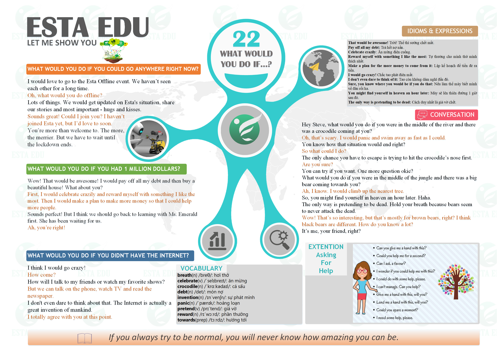
I. ĐOẠN VĂN
1) Tóm tắt
Đoạn văn là một loạt "cuộc chơi giả định" bằng What would you do if…?:
- Đi bất cứ đâu ngay bây giờ: muốn tới the center Offline event — gặp nhau lâu rồi rồi; offline thì get updated on the center's situation, share our stories và quan trọng nhất — hugs and kisses; ai chưa vào the center cũng được mời — "The more, the merrier", nhưng phải chờ lockdown kết thúc.
- Một triệu đô: "I would pay off all my debt and then buy a beautiful house!"; kia thì celebrate crazily, tự thưởng cho mình thứ mình thích, rồi make a plan để tiền đẻ ra tiền giúp được nhiều người — xong thì "về học với Ms. Emerald" nữa chứ.
- Không internet: "I think I would go crazy!" — làm sao nói chuyện với bạn, xem show yêu thích? — nhưng còn điện thoại, TV, báo chí; chốt: "The Internet is actually a great invention of mankind".
- Conversation "game sinh tồn": gặp crocodile ở giữa sông — I would panic and swim away as fast as I could — bí kíp: đập vào mũi con cá sấu trước; gặp bear giữa rừng — leo lên cây gần nhất? — "vậy mày lên thiên đường sau 1 giờ à" — cách duy nhất: pretend to be dead, hold your breath vì gấu gần như không tấn công người chết.
Điểm chốt: hỏi giả định bằng What would you do if + S + V (quá khứ đơn)? — trả lời luôn I would / I'd + V; would thay will vì chuyện chưa có thật.
2) Khi nào sử dụng?
- Hỏi phản ứng với giả định không có thật ở hiện tại: What would you do if you had a million dollars? / What would you do if you didn't have the internet?
- Giả định ngộ nghĩnh để làm quen: What would you do if I said "I love you"? — I would run away. ))
- Câu chuyện tưởng tượng sinh tồn: What would you do if you were in the middle of the river and there was a crocodile coming at you?
- Trả lời luôn bắt đầu bằng I would / I'd + V (nguyên mẫu); hưởng ứng thì thêm Wow! That would be awesome!
- Khuyên người khác theo kiểu giả định: If I were you / in your position, I'd + V…
- Biến thể "muốn hoá thân": Which flower/animal would you love to be? Who would you be/ do it with? Where would you want to be?
3) Bảng cụm từ giao tiếp (IDIOMS & EXPRESSIONS + câu đáng nhớ)
Đọc nhanh như vầy: ⚠️ là lỗi "dịch từ tiếng Việt" hay gặp (gạch = đừng nói) · 💬 là khi nghe ai đó nói cụm này, mình bắt chuyện tiếp bằng câu nào.
| # | Cụm từ | Nghĩa (VI) | Khi nào dùng | Câu mẫu trong bài | ⚠️ Lỗi hay sai | 💬 Đáp lại |
|---|---|---|---|---|---|---|
| 1 | That would be awesome! | Trời! Thế thì sướng chết mất. | Hưởng ứng một giả định vui | Wow! That would be awesome! | Yeah, let's make it happen! (Ừ, biến nó thành thật đi!) | |
| 2 | Pay off all my debt | Trả hết nợ nần | Kể việc đầu tiên làm khi giàu | I would pay off all my debt and then buy a beautiful house! | Debt-free, what a life! (Không nợ rồi, sướng nhỉ) | |
| 3 | Celebrate crazily | Ăn mừng điên cuồng | Tả pháo hoá ăn mừng | First, I would celebrate crazily… | Party at your place then! (Vậy tiệc ở nhà cậu nhé!) | |
| 4 | Reward myself with something I like the most | Tự thưởng cho mình thứ mình thích nhất | Nói phần "chăm sóc bản thân" | …and reward myself with something I like the most. | You deserve it! (Cậu xứng đáng mà!) | |
| 5 | Make a plan for the more money to come from it | Lập kế hoạch để tiền đẻ ra tiền | Nói kế hoạch sinh lời/cho đi | Then I would make a plan to make more money so that I could help more people. | Money makes money, right? (Tiền đẻ tiền, đúng không?) | |
| 6 | I would go crazy! | Chắc tao phát điên mất. | Phản ứng phóng đại với giả định xấu | What would you do if you didn't have the internet? — I think I would go crazy! | Me too, no way I survive! (Tớ cũng vậy, sống nổi đâu!) | |
| 7 | I don't even dare to think of it | Tao còn không dám nghĩ đến đó. | Từ chối cả việc tưởng tượng | I don't even dare to think about that. | Come on, just imagine! (Thôi mà, cứ tưởng tượng đi!) | |
| 8 | Sure, you know where you would be if you do that | Nếu làm thế mày biết mình về đâu rồi ha. | Trêu người "chọn cách sai" | You know how that situation would end right? | I know, I know — heaven, right? (Biết mà — thiên đường đúng không?) | |
| 9 | You might find yourself in heaven an hour later | Mày sẽ lên thiên đường 1 giờ sau đó. | Chọc giải pháp nguy hiểm (gấu thì trèo cây) | So you might find yourself in heaven an hour later. Haha. | Wow, thanks for the tip! (Ồ, cảm ơn bí kíp nhé!) | |
| 10 | The only way is pretending to be dead | Cách duy nhất là giả vờ chết. | Chỉ "bí kíp sống sót" | The only way is pretending to be dead. | Sounds risky but okay! (Nghe mạo hiểm nhưng được!) |
4) Từ vựng (Vocabulary)
| Từ | Từ loại / Phiên âm | Nghĩa |
|---|---|---|
| Breath | (n) /breθ/ | Hơi thở |
| Celebrate | (v) /ˈselɪbreɪt/ | Ăn mừng |
| Crocodile | (n) /ˈkrɑːkədaɪl/ | Cá sấu |
| Debt | (n) /det/ | Món nợ |
| Invention | (n) /ɪnˈvenʃn/ | Sự phát minh |
| Panic | (n) /ˈpænɪk/ | Hoảng loạn |
| Pretend | (v) /prɪˈtend/ | Giả vờ |
| Reward | (n) /rɪˈwɔːrd/ | Phần thưởng |
| Towards | (prep) /tɔːrdz/ | Hướng tới |
| Wing | (n) /wɪŋ/ | Cánh |
| Invisible | (adj) /ɪnˈvɪzəbl/ | Vô hình |
| Read s.o's mind | (v) /maɪnd/ | Đọc được suy nghĩ của ai đó |
Extension (Asking For Help — cách nhờ giúp đỡ):
- Can you give me a hand with this?
- Could you help me for a second?
- Can I ask a favour?
- I wonder if you could help me with this?
- I could do with some help, please.
- I can't manage. Can you help?
- Give me a hand with this, will you?
- Lend me a hand with this, will you?
- Could you spare a moment?
- I need some help, please.
5) Đoạn hội thoại gốc (Free Talk)
What would you do if you could go anywhere right now?
I would love to go to the the center Offline event. We haven’t seen each other for a long time.
Oh, what would you do offline?
Lots of things. We would get updated on the center's situation, share our stories and most important - hugs and kisses.
Sounds great! Could I join you? I haven’t joined the center yet but I’d love to soon.
You’re more than welcome to. The more, the merrier. But we have to wait until the lockdown ends.
What would you do if you had a million dollars?
Wow! That would be awesome! I would pay off all my debt and then buy a beautiful house! What about you?
First, I would celebrate crazily and reward myself with something I like the most. Then I would make a plan to make more money so that I could help more people.
Sounds perfect! But I think we should go back to learning with Ms. Emerald first. She has been waiting for us.
Ah, you’re right!
What would you do if you didn't have the internet?
I think I would go crazy!
How come?
How will I talk to my friends or watch my favorite shows?
But we can talk on the phone, watch TV and read the newspaper.
I don't even dare to think about that. The Internet is actually a great invention of mankind.
I totally agree with you at this point.Conversation (tiếp tục):
Hey Steve, what would you do if you were in the middle of the river and there was a crocodile coming at you?
Oh, that’s scary. I would panic and swim away as fast as I could.
You know how that situation would end right?
So what could I do?
The only chance you have to escape is trying to hit the crocodile’s nose first.
Are you sure?
You can try if you want. One more question, okie? What would you do if you were in the middle of the jungle and there was a big bear coming towards you?
Ah, I know. I would climb up the nearest tree.
So you might find yourself in heaven an hour later. Ha ha. The only way is pretending to be dead. Hold your breath because bears seem to never attack the dead.
Wow! That’s so interesting, but that’s mostly for brown bears right? I think black bears are different. How do you know a lot?
It’s me, your friend, right?II. NGỮ PHÁP
Tổng quan: 4 điểm ngữ pháp trong bài
| Điểm | Tên | Ứng dụng nói |
|---|---|---|
| 1 | Go + adj (trở nên/ đi tới mức…) | Tả trạng thái "phát điên, đi quá xa" |
| 2 | What would you do if S + V2/ed? | Mở chuyện giả định |
| 3 | Conditional Type II (Điều kiện loại 2) | Giả định trái thực tế + lời khuyên |
| 4 | "Could" ở mệnh đề IF | Giả định khả năng |
Điểm 1. Go + adj (trở nên/ đi tới mức…): GO + ADJECTIVE
Cách dùng: Bản chất: go = "rơi vào / trượt tới mức" — nói sự chuyển trạng thái, đa phần là xấu đi: go crazy, go mad, go grey, go bad. Dễ nhầm với get + adj — get trung tính, đi lên hay đi xuống đều được (get cold, get better), còn go chuyên chở xuống dốc, nên go happy nghe lạ, người ta dùng become/get happy. Mẹo nói: nhấn mạnh tính từ sau go và kéo dài một nhịp — "I would gooo craaazy!" — độ phóng đại lập tức lên.
Phản xạ hỏi–đáp:
- ➕ Nói:
I think I would go crazy!(Chắc tớ phát điên mất!) - ➖ Phủ định:
I won't go mad, don't worry.(Tớ không điên đâu, đừng lo) - 💬 Đáp lại:
You already are, haha! (Cậu điên sẵn rồi, haha!)
Ví dụ:
- Ví dụ 1: She may go crazy if you leave her. (Cô ấy có thể phát điên nếu cậu rời bỏ cô)
- Ví dụ 2: I might go mad first if I stay. (Nhưng ở lại thì tớ điên trước mặt)
- Ví dụ 3: Don't let things go too far. (Đừng để chuyện đi quá xa)
- Ví dụ 4: What would you do if you didn't have the internet? — I think I would go crazy! (Nếu không có mạng bạn sẽ làm gì? — Chắc tớ phát điên mất!)
- Ví dụ 5: Don't talk to him when he is angry — he may go mad. (Đừng nói chuyện với anh ấy lúc đang nóng giận — có khi anh ấy nổi điên)
Biến tấu (tự luyện):
- Đổi adj:
I would go mad without my morning coffee.(Không có cà phê sáng chắc tớ điên mất) - Đổi thì về quá khứ:
She went crazy when she heard the news.(Cô ấy phát điên lên khi nghe tin đó)
Điểm 2. What would you do if S + V2/ed: WHAT WOULD YOU DO IF + S + V2/ED (Quá khứ đơn)?
Cách dùng: Bản chất: hỏi phản ứng với chuyện chưa có thật — dấu hiệu giả định là vế sau IF lùi về Quá khứ đơn dù nghĩa vẫn là hiện tại/tương lai, và vế chính dùng WOULD thay WILL. Hỏi hành động thì What would you do…?, hỏi cảm giác thì How would you feel…? — cùng một giả định, hai mỏ khoét khác nhau. Cản trở: What would you do if you will have…? — chữ if chặn will. Mẹo nói: đọc mượt "What would you…" như một nhịp duy nhất, đừng tách rời từng từ.
Phản xạ hỏi–đáp:
- ❓ Hỏi giả định:
What would you do if you had a million dollars?(Nếu có một triệu đô, cậu sẽ làm gì?) - ➖ Phủ định (chịu thua):
I don't even dare to think about that.(Tớ còn không dám nghĩ tới) - 💬 Đáp lại:
Wow! That would be awesome!(Trời! Thế thì sướng chết mất!)
Ví dụ:
- Ví dụ 1: What would you do if we broke up? — I'd cry. (Cậu sẽ làm gì nếu chúng tớ chia tay? — Tớ sẽ khóc)
- Ví dụ 2: What would you do if you could go anywhere right now? (Nếu ngay lúc này cậu có thể đi bất cứ đâu, cậu sẽ làm gì?)
- Ví dụ 3: What would you do if you had a million dollars? (Nếu có một triệu đô, bạn sẽ làm gì?)
- Ví dụ 4: What would you do if you didn't have the internet? (Nếu không có internet, bạn sẽ làm gì?)
- Ví dụ 5: What would you do if you were in the middle of the jungle and there was a big bear coming towards you? (Nếu đang ở giữa rừng mà có con gấu to lao tới, bạn sẽ làm gì?)
Biến tấu (tự luyện):
- Đổi giả định:
What would you do if you met your idol?(Nếu gặp thần tượng của mình, cậu sẽ làm gì?) - Đổi chủ ngữ you → I (tự vấn):
What would I do if I failed?(Nếu thất bại, tớ sẽ làm gì đây?)
Điểm 3. Conditional Type II (Điều kiện loại 2): IF + S + V (Quá khứ đơn), S + WOULD / COULD + V
Cách dùng: Bản chất: khung chuẩn của giả định trái thực tế ở hiện tại — If + quá khứ đơn, S + would/could + V. "were" dùng cho mọi chủ ngữ: If I were you — học chuẩn thì đừng nói If I was you (đời thường vẫn nghe được, nhưng "were" mới là dấu hiệu giả định gọn gàng). Đây cũng là khung khuyên mềm nhất trong tiếng Anh nói: If I were you / in your position, I'd…. Mẹo nói: nhấn chữ were một nhịp để báo hiệu "tôi đang giả định đấy nhé".
Phản xạ hỏi–đáp:
- ❓ Xin khuyên:
If you were me, what would you do?(Nếu cậu là tớ, cậu sẽ làm gì?) - ➕ Đưa khuyên:
If I were you, I'd hit the crocodile's nose first.(Nếu tớ là cậu, tớ đập mũi nó trước) - 💬 Đáp lại:
Good point, I'll try that. (Hay đấy, tớ thử vậy đi)
Ví dụ:
- Ví dụ 1: If I were there, I would hug you tight. (Nếu giờ tôi ở đó, tôi sẽ ôm em thật chặt.)
- Ví dụ 2: If you had a million dollars, what would you do? (Nếu bạn có một triệu đô, bạn sẽ làm gì?)
- Ví dụ 3: If I were you, I would let her go. (Nếu tôi là bạn, tôi sẽ để cô ấy ra đi.)
- Ví dụ 4: If I were in your position, I'd try to hit the crocodile's nose first. (Nếu tôi ở vị trí của cậu, tớ sẽ đập mũi con cá sấu trước.)
- Ví dụ 5: Never say:
If I have wings, I would fly to you.→ Let's say: If I had wings, I would fly to you. (Nếu tôi có cánh, tôi sẽ bay tới bên em)
Biến tấu (tự luyện):
- Đổi chủ ngữ:
If she had a million dollars, she would buy a beautiful house.(Nếu cô ấy có một triệu đô, cô ấy sẽ mua một căn nhà đẹp) - Đổi would → could (khả năng):
If I had wings, I could fly to you every day.(Nếu có cánh, tớ có thể bay tới bên cậu mỗi ngày)
Điểm 4. "Could" ở mệnh đề IF: IF + S + COULD + V…, S + WOULD + V
Cách dùng: Bản chất: could trong vế IF = "nếu mà được…" — khả năng trên lý thuyết nhưng thực tế không thực hiện nổi (bay, đọc được suy nghĩ người khác). Vế chính vẫn would + V, đừng kéo will vào. Dễ nhầm: If I can… (chuyện thật, có thể xảy ra) vs If I could… (giả định, mơ thôi) — chỉ khác một chữ mà đổi cả thế giới câu. Mẹo nói: cặp could… would… đọc như hỏi–đáp, nhịp nhẹ, đều.
Phản xạ hỏi–đáp:
- ❓ Hỏi:
What would you do if you could read people's mind?(Nếu đọc được suy nghĩ người khác, cậu sẽ làm gì?) - ➖ Phủ định (thực tế):
I couldn't stay away from my phone for a day.(Tớ chịu xa điện thoại một ngày thôi cũng không nổi) - 💬 Đáp lại:
Me neither, honestly! (Tớ cũng không nổi, thật đấy!)
Ví dụ:
- Ví dụ 1: If he could speak English, he would get that job. (Nếu biết tiếng Anh, anh ấy sẽ có được công việc đó.)
- Ví dụ 2: If I could fly, I would join the the center Offline event every year. (Nếu tôi bay được, tôi sẽ tham dự the center Offline hằng năm)
- Ví dụ 3: If I could read people's mind, I would know what you think of me. (Nếu đọc được suy nghĩ người khác, tớ sẽ biết cậu nghĩ gì về tớ)
- Ví dụ 4: If I could stay away from my smartphone for a month, I would read twenty books. (Nếu tớ chịu xa điện thoại một tháng, tớ sẽ đọc hai chục cuốn sách)
- Ví dụ 5: If I could be invisible for a day, I would go around and hear everyone's stories. (Nếu một ngày tớ vô hình, tớ sẽ đi đủ chỗ nghe mọi người tâm chuyện)
Biến tấu (tự luyện):
- Đổi khả năng:
If I could cook well, I would open a small food stand.(Nếu nấu ăn ngon, tớ sẽ mở một quán nhỏ) - Đổi chủ ngữ:
If she could fly, she would visit us every week.(Nếu cô ấy bay được, tuần nào cô ấy cũng ghé chơi)
III. LUYỆN NÓI (drill)
Echo drill (nói to 3 lần, nhanh hơn mỗi lần)
- What would you do if you could go anywhere right now? — I would love to go to the the center Offline event.
- What would you do if you had a million dollars? — Wow! That would be awesome! I would pay off all my debt and then buy a beautiful house!
- What would you do if you didn't have the internet? — I think I would go crazy! I don't even dare to think about that.
- What would you do if you were in the middle of the river and there was a crocodile coming at you? — I would panic and swim away as fast as I could.
- The only way is pretending to be dead. Hold your breath because bears seem to never attack the dead.
5 câu hỏi tự luyện (tự hỏi + trả lời)
- What would you do if all of your dreams came true? — I would … first, and then …
- What would you do if you had wings / could be invisible? — I would fly to … / I would … . Which flower/animal would you love to be? Why would you choose it?
- What would you do if you could be back to the time when you were 18? — I would … again, and this time I would …
- What would you do if you had to choose between being rich and beautiful? — I would choose … because … . Who would you be/ do it with?
- What would you do if you had to stay away from internet and smartphone for a week? — I think I would go crazy! But I could … instead. Where would you want to be?
✅ Checkpoint: hỏi giả định bằng What would you do if + S + V (quá khứ đơn)? — trả lời luôn bằng I would / I'd + V (khuyên thì If I were you, I'd…). Thử 5 giả định lớn (triệu đô, mất mạng, hoá cánh, gặp cá sấu/gấu…) và ghi âm lại.
23What should I do to ...?Mình nên làm gì để…?
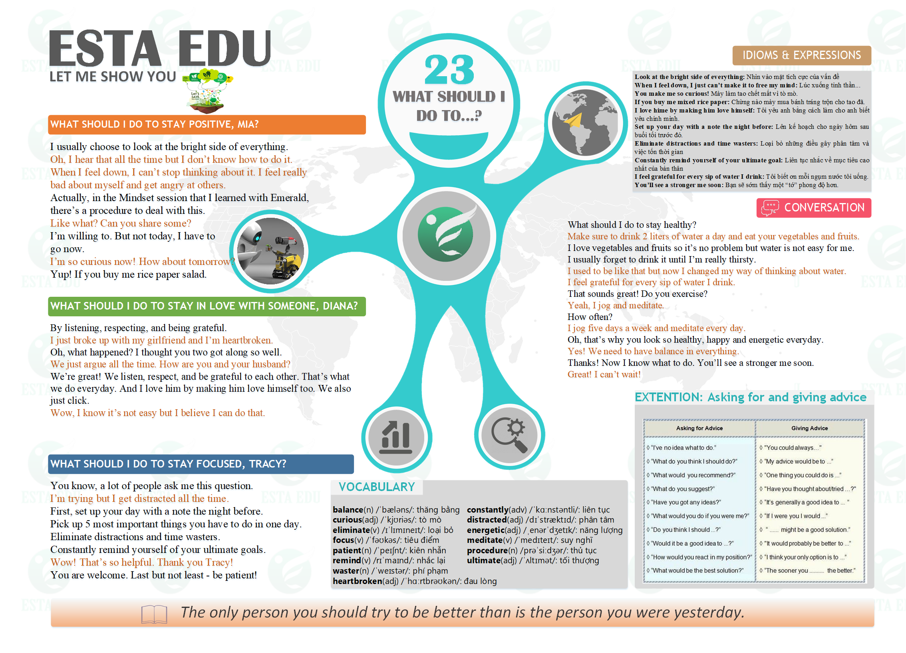
I. ĐOẠN VĂN
1) Tóm tắt
Đoạn văn là "cửa hàng xin lời khuyên":
- Stay positive: Mia chọn nhìn mặt tích cực của mọi việc; người kia nghe hoài mà không biết làm — khi xuống tinh thần thì cứ ám ảnh mãi, tự trách mình rồi dễ cáu người khác. Bí kíp nằm trong Mindset session của Emerald — mai kể cho nghe, giá "hối lộ" là một phần bánh tráng trộn!
- Stay in love: Diana trả lời gọn — nghe, tôn trọng, biết ơn. Anh vừa chia tay nên đau lòng (vốn "hợp nhau lắm mà vẫn cãi nhau hoài"); Diana kể nhà mình nghe – tôn trọng – biết ơn mỗi ngày, và yêu chồng bằng cách làm anh yêu chính bản thân mình — "vợ chồng mình cũng rất hợp gu".
- Stay focused: Tracy 4 bước: viết note cho ngày mai từ tối hôm trước; chọn 5 việc quan trọng nhất mỗi ngày; loại bỏ thứ phân tâm và ăn mòn thời gian; liên tục nhắc nhớ mục tiêu tối thượng — xong còn dặn: kiên nhẫn nhé!
- Conversation "stay healthy": 2 lít nước mỗi ngày — ăn rau quả thì dễ, uống nước thì hay quên; đổi tư duy: biết ơn từng ngụm nước; jog 5 buổi/tuần + meditate mỗi ngày; tất cả nhờ cân bằng trong mọi thứ — "Sớm thôi bạn sẽ thấy một 'tôi' mạnh mẽ hơn!"
Điểm chốt: hỏi "What should I do to…?" chỉ cần thêm V nguyên mẫu sau TO; trả lời xoay quanh các công thức: STAY + adj, MAKE sb do sth / MAKE sb + adj, và mấy mệnh lệnh mềm (Set up…, Eliminate…, Remind yourself…).
2) Khi nào sử dụng?
- Xin lời khuyên cho mục tiêu thường ngày: học tiếng Anh hiệu quả hơn, nấu ăn ngon hơn, quản lý thời gian/tiền, cân bằng cuộc sống, nhiều thu nhập hơn, nâng kỹ năng làm việc, chất lượng cuộc sống, để được hạnh phúc.
- Xin chỉ dẫn tình huống cụ thể: mặc gì đi phỏng vấn, nói gì để làm người ấy bình tĩnh lại, cách nhắc khéo về lỗi, làm sao để đối phương cảm nhận được tình yêu của mình.
- Trả lời bằng công thức mạnh: Look at the bright side…, Make sure to…, Remember to stay calm…, Set up your day…
- Mở rộng: xin & đưa lời khuyên kiểu If I were you… / You could always… (xem Extension).
3) Bảng cụm từ giao tiếp (IDIOMS & EXPRESSIONS + câu đáng nhớ)
Đọc nhanh như vầy: ⚠️ là lỗi "dịch từ tiếng Việt" hay gặp (gạch = đừng nói) · 💬 là khi nghe ai đó nói cụm này, mình bắt chuyện tiếp bằng câu nào.
| # | Cụm từ | Nghĩa (VI) | Khi nào dùng | Câu mẫu trong bài | ⚠️ Lỗi hay sai | 💬 Đáp lại |
|---|---|---|---|---|---|---|
| 1 | Look at the bright side of everything | Nhìn vào mặt tích cực của mọi vấn đề | Chuyển tâm thế cho người đang chán nản | I usually choose to look at the bright side of everything. | Easier said than done! (Nói dễ hơn làm lắm!) | |
| 2 | When I feel down, I just can't make it to free my mind | Khi xuống tinh thần, mình bị suy nghĩ đó đeo bám, không gỡ ra khỏi đầu được | Mô tả cảm giác "ám ảnh khó tách ra" | When I feel down, I can't stop thinking about it. | Let it go, seriously. (Buông đi, thật sự đấy) | |
| 3 | You make me so curious! | Mày làm tao chết mệt vì tò mò | Hay bị "câu" chuyện hay nhưng dừng giữa chừng | I'm so curious now! How about tomorrow? | Haha, then see you tomorrow! (Haha, vậy mai gặp nhé!) | |
| 4 | If you buy me mixed rice paper | Mua bánh tráng trộn cho tao đã (mới kể) | Đùa "hối lộ" nhỏ khi xin bí kíp | Yup! If you buy me rice paper salad. | Deal! One portion for you. (Chốt! Một phần cho cậu) | |
| 5 | I love him by making him love himself | Tôi yêu anh bằng cách làm anh biết yêu chính mình | Chia sẻ "công thức" giữ tình yêu | I love him by making him love himself too. | That's deep. I like it! (Sâu sắc thật. Tớ thích!) | |
| 6 | Set up your day with a note the night before | Lên kế hoạch cho ngày hôm sau từ buổi tối trước đó | Hướng dẫn tổ chức một ngày hiệu quả | First, set up your day with a note the night before. | Okay, tonight I'll write mine. (Ok, tối nay tớ viết liền) | |
| 7 | Eliminate distractions and time wasters | Loại bỏ thứ gây phân tâm và ăn mòn thời gian | Khuyên giữ tập trung | Eliminate distractions and time wasters. | Starting with my phone. (Bắt đầu từ cái điện thoại) | |
| 8 | Constantly remind yourself of your ultimate goal | Liên tục nhắc nhớ về mục tiêu cao nhất của bản thân | Giữ động lực về đích xa | Constantly remind yourself of your ultimate goal. | Sticky notes everywhere, got it! (Dán note khắp nơi, hiểu rồi!) | |
| 9 | I feel grateful for every sip of water I drink | Tôi biết ơn từng ngụm nước tôi uống | Lòng biết ơn với thói quen sống lành | I feel grateful for every sip of water I drink. | That mindset is lovely! (Tư duy đó dễ thương ghê!) | |
| 10 | You'll see a stronger me soon | Bạn sẽ sớm thấy một "tôi" mạnh mẽ hơn | Cam kết thay đổi khi nhận lời khuyên | Thanks! Now I know what to do. You'll see a stronger me soon. | I can't wait! (Tớ nóng lòng chờ lắm rồi!) |
4) Từ vựng (Vocabulary)
| Từ | Từ loại / Phiên âm | Nghĩa |
|---|---|---|
| Balance | (n) /ˈbæləns/ | Thăng bằng |
| Curious | (adj) /ˈkjʊriəs/ | Tò mò |
| Eliminate | (v) /ɪˈlɪmɪneɪt/ | Loại bỏ |
| Focus | (v) /ˈfoʊkəs/ | Tập trung (tiêu điểm) |
| Patient | (adj) /ˈpeɪʃnt/ | Kiên nhẫn |
| Remind | (v) /rɪˈmaɪnd/ | Nhắc lại |
| Waster | (n) /ˈweɪstər/ | Thứ lãng phí (thời gian) |
| Heartbroken | (adj) /ˈhɑːrtbroʊkən/ | Đau lòng |
| Manage one's time/ money | (Cụm) | Quản lý thời gian, tiền |
| Life balance | (n) | Cân bằng cuộc sống |
| Life quality | (n) | Chất lượng cuộc sống |
| Constantly | (adv) /ˈkɑːnstəntli/ | Liên tục |
| Distracted | (adj) /dɪˈstræktɪd/ | Phân tâm |
| Energetic | (adj) /ˌenərˈdʒetɪk/ | Tràn đầy năng lượng |
| Meditate | (v) /ˈmedɪteɪt/ | Thiền (tâm linh) |
| Procedure | (n) /prəˈsiːdʒər/ | Thủ tục |
| Ultimate | (adj) /ˈʌltɪmət/ | Tối thượng |
Extension (Asking for and giving advice):
- Hỏi xin lời khuyên: "I've no idea what to do." / "What do you think I should do?" / "What would you recommend?" / "What do you suggest?" / "Have you got any ideas?" / "What would you do if you were me?" / "Do you think I should …?" / "Would it be a good idea to …?" / "How would you react in my position?" / "What would be the best solution?"
- Đưa lời khuyên: "You could always …" / "My advice would be to …" / "One thing you could do is …" / "Have you thought about/tried …?" / "It's generally a good idea to …" / "If I were you I would …" / "……… might be a good solution." / "It would probably be better to …" / "I think your only option is to …" / "The sooner you …, the better."
5) Đoạn hội thoại gốc (Free Talk)
What should I do to stay positive, Mia?
I usually choose to look at the bright side of everything.
Oh, I hear that all the time but I don’t know how to do it. When I feel down, I can’t stop thinking about it. I feel really bad about myself and get angry at others.
Actually, in the Mindset session that I learned with Emerald, there’s a procedure to deal with this.
Like what? Can you share some?
I’m willing to. But not today, I have to go now.
I’m so curious now! How about tomorrow?
Yup! If you buy me rice paper salad.
What should I do to stay in love with someone, Diana?
By listening, respecting, and being grateful.
I just broke up with my girlfriend and I’m heartbroken.
Oh, what happened? I thought you two got along so well.
We just argue all the time. How are you and your husband?
We’re great! We listen, respect, and be grateful to each other. That’s what we do everyday. And I love him by making him love himself too. We also just click.
Wow, I know it’s not easy but I believe I can do that.
What should I do to stay focused, Tracy?
You know, a lot of people ask me this question.
I’m trying but I get distracted all the time.
First, set up your day with a note the night before. Pick up 5 most important things you have to do in one day. Eliminate distractions and time wasters. Constantly remind yourself of your ultimate goals.
Wow! That’s so helpful. Thank you Tracy!
You are welcome. Last but not least - be patient!Conversation (tiếp tục):
What should I do to stay healthy?
Make sure to drink 2 liters of water a day and eat your vegetables and fruits.
I love vegetables and fruits so it’s no problem but water is not easy for me. I usually forget to drink it until I’m really thirsty.
I used to be like that but now I changed my way of thinking about water. I feel grateful for every sip of water I drink.
That sounds great! Do you exercise?
Yeah, I jog and meditate.
How often?
I jog five days a week and meditate every day.
Oh, that’s why you look so healthy, happy and energetic everyday.
Yes! We need to have balance in everything.
Thanks! Now I know what to do. You’ll see a stronger me soon.
Great! I can’t wait!II. NGỮ PHÁP
Tổng quan: 4 điểm ngữ pháp trong bài
| Điểm | Tên | Ứng dụng nói |
|---|---|---|
| 1 | STAY + ADJ (Giữ vững trạng thái) | stay strong / healthy / calm / positive / focused |
| 2 | MAKE + SB + V (Bắt/ khiến ai làm gì) | make me get married, make him calm down |
| 3 | MAKE + SB + ADJ / V(pp) (Làm ai (cảm thấy) thế nào) | make you happy/ relaxed |
| 4 | GET "đa năng" (Nhận / Trở nên / Di chuyển / Bị động) | get a drink, get up, get paid |
Điểm 1. STAY + ADJ (Giữ vững trạng thái): STAY + ADJ
Cách dùng: Bản chất: stay + adj = "giữ nguyên trạng thái đang có" — không phải "trở nên", mà là không cho mình trượt khỏi trạng thái đó, nên cực hợp lời khuyên: stay strong, stay calm, stay positive. Dễ nhầm với keep + adj — keep chủ động như một nhiệm vụ (keep your desk clean), stay thiên về tự nhủ/gìn giữ. Sau stay là adj trần: stay quietly ✗ — đừng thêm -ly. Mẹo nói: bắn gọn như khẩu lệnh, một nhịp "stay-calm" là đủ sức nặng.
Phản xạ hỏi–đáp:
- ➕ Khuyên:
Stay positive, it's just one bad day.(Giữ tích cực nhé, chỉ là một ngày xấu thôi) - ➖ Phủ định:
Don't stay up too late.(Đừng thức khuya quá nhé) - 💬 Đáp lại:
I will, promise! (Tớ sẽ giữ mà, hứa đấy!)
Ví dụ:
- Ví dụ 1: Stay strong! (Mạnh mẽ lên nhé!)
- Ví dụ 2: Stay healthy! (Giữ khoẻ nhé!)
- Ví dụ 3: Remember to stay calm in front of him. (Giữ bình tĩnh trước anh ấy nhé (trai đẹp ☺))
- Ví dụ 4: I usually choose to look at the bright side of everything to stay positive. (Tôi thường chọn nhìn mặt sáng để giữ tâm thế tích cực)
- Ví dụ 5: Never say:
You should stay quietly.→ Let's say: You should stay quiet. (Sau STAY là ADJ, đừng thêm -ly)
Biến tấu (tự luyện):
- Đổi adj:
Stay healthy during the rainy season.(Mùa mưa nhớ giữ khoẻ nhé) - Đổi thì về quá khứ:
I stayed calm during the interview.(Tớ giữ bình tĩnh suốt buổi phỏng vấn)
Điểm 2. MAKE + SB + V (Bắt/ khiến ai làm gì…): MAKE + SB + V (nguyên mẫu, KHÔNG "to")
Cách dùng: Bản chất: make sb + V trần, không "to" — nghĩa là "bắt/khiến", vẫn có độ ép trong đó. Cản trở lớn nhất: ask / allow / tell sb to V đều mang "to", riêng make và let thì không — Mom made me to wash ✗. Muốn "thuyết phục" thay vì "bắt buộc" thì đổi sang get sb to V. Mẹo nói: đọc cả cụm liền một hơi "make-him-calm-down" — 3 nhịp không ngắt, nghe tự nhiên như người bản xứ.
Phản xạ hỏi–đáp:
- ❓ Hỏi:
What should I say to make her calm down?(Mình nên nói gì để cô ấy bình tĩnh lại?) - ➖ Phủ định:
No one can make me do that.(Chẳng ai bắt tớ làm chuyện đó nổi) - 💬 Đáp lại:
Fine, I'll do it for you. (Được thôi, tớ làm cho cậu)
Ví dụ:
- Ví dụ 1: My mom didn't make me get married. (Mẹ thường không bắt tôi phải kết hôn)
- Ví dụ 2: No one can make us do anything if we don't like. (Chà ai có thể buộc ta làm gì nếu ta không muốn)
- Ví dụ 3: What should I say to make her, him calm down? (Tôi nên nói gì để làm người ấy bình tĩnh lại nhỉ?)
- Ví dụ 4: Writing a note the night before will make you stay focused. (Chú ý ghi note từ tối trước sẽ giúp bạn giữ tập trung)
- Ví dụ 5: Never say:
Mom made me to wash the dishes.→ Let's say: Mom made me wash the dishes. (Sau MAKE: V nguyên mẫu, không "to")
Biến tấu (tự luyện):
- Đổi thì về quá khứ:
My mom made me wash the dishes yesterday.(Hôm qua mẹ bắt tớ rửa bát) - Đổi động từ:
What should I say to make him smile?(Nói gì để anh ấy mỉm cười nhỉ?)
Điểm 3. MAKE + SB + ADJ / V(pp) (Làm ai đó (cảm thấy) thế nào…): MAKE + SB + ADJ / V(pp)
Cách dùng: Bản chất: nói kết quả cảm xúc mình tạo ra cho người khác — make sb happy / relaxed / shocked. Cản trở lớn nhất: cặp -ed vs -ing — bored = người thấy chán, boring = thứ gây chán; The lesson makes me boring nghĩa thành "bài học làm tớ chán ngắt (ở thế bị động ngược đời)" luôn đấy. V(p.p) cũng chui được vào slot này: make yourself heard. Mẹo nói: nhấn vào tính từ cuối câu — đó là "khoản đầu tư cảm xúc" của cả câu.
Phản xạ hỏi–đáp:
- ➕ Nói:
Learning English every day makes me energetic!(Học tiếng Anh mỗi ngày làm mình tràn đầy năng lượng!) - ➖ Phủ định:
Don't make her upset, please.(Đừng làm cô ấy buồn nhé) - 💬 Đáp lại:
You always make me smile. (Cậu luôn làm tớ mỉm cười đấy)
Ví dụ:
- Ví dụ 1: I want to make you happy. (Em muốn làm anh vui)
- Ví dụ 2: I hope it makes you relaxed. (Hy vọng điều đó làm bạn thư thái)
- Ví dụ 3: Learning English every day makes me energetic! (Học tiếng Anh mỗi ngày làm mình tràn đầy năng lượng!)
- Ví dụ 4: The news made her shocked. (Tin đó làm cô ấy choáng váng)
- Ví dụ 5: Never say:
The lesson makes me boring.→ Let's say: The lesson makes me bored. (Bored = tôi thấy chán; boring = thứ gây chán)
Biến tấu (tự luyện):
- Đổi adj:
This song makes me relaxed.(Bài này làm tớ thư thái) - Đổi chủ ngữ:
His jokes make everyone happy.(Truyện cười của anh ấy làm ai cũng vui)
Điểm 4. GET "đa năng": GET + N/Pro · GET + ADJ · GET + Giới từ · GET + V(p.p)
Cách dùng: Bản chất: get đổi vai theo từ đứng sau: + N = nhận/có được (get a drink, get paid), + adj = trở nên (get cold), + giới từ = di chuyển (get up), + V(p.p) = tự làm cho mình hoặc mang nghĩa bị động (get dressed). Cản trở: dịch cứng "get = nhận" là sai bét — I'm getting cold đâu phải "nhận lạnh". Mẹo nói: nhìn từ đi ngay sau get rồi mới chọn nghĩa; đọc "get" nhanh, nuốt nhẹ, đừng nhấn.
Phản xạ hỏi–đáp:
- ➕ Nói:
I usually get up at six o'clock.(Tớ thường dậy lúc 6 giờ sáng) - ➖ Phủ định:
I don't get paid until the 10th.(Đến mùng 10 tớ mới lãnh lương) - 💬 Đáp lại:
Let me get you a drink then.(Vậy để tớ lấy nước giúp cậu)
Ví dụ:
- Ví dụ 1: Let us get you a drink. (Để chúng tôi lấy đồ uống giúp cậu nhé)
- Ví dụ 2: I'm getting cold. (Tớ đang lạnh buốt)
- Ví dụ 3: I usually get up at six o'clock. (Tôi thường dậy lúc 6 giờ sáng)
- Ví dụ 4: I had only 4 minutes to get dressed. (Tôi chỉ có 4 phút để mặc quần áo)
- Ví dụ 5: I get paid on the 10th of this month. (Tôi nhận lương vào ngày 10 tháng này)
Biến tấu (tự luyện):
- Đổi get + N → get + adj:
It's getting cold in here.(Ở đây đang lạnh dần đấy) - Đổi chủ ngữ:
She gets paid every Friday.(Cô ấy lãnh lương thứ sáu hằng tuần)
III. LUYỆN NÓI (drill)
Echo drill (nói to 3 lần, nhanh hơn mỗi lần)
- What should I do to stay positive, Mia? — I usually choose to look at the bright side of everything.
- By listening, respecting, and being grateful. And I love him by making him love himself too.
- First, set up your day with a note the night before. Eliminate distractions and time wasters.
- Make sure to drink 2 liters of water a day and eat your vegetables and fruits.
- You are welcome. Last but not least - be patient!
5 câu hỏi tự luyện (tự hỏi + trả lời)
- What should I do to learn English more effectively? — First, set up your day with a note the night before and eliminate…
- What should I do to keep my life balance / improve our life quality? — I manage my time and money, jog five days a week…
- What should I wear to a job interview? — (biến thể "What should I…") My advice would be to wear… because…
- What should I say to make him calm down? — Just stay calm and remind him to look at the bright side of everything.
- Do you think I should (be more patient/ speak more, less)? — (To talk more) Yes, stay patient and…; if I were you I would…
✅ Checkpoint: hỏi "What should I do to…?" về 5 mục tiêu thật (học, sức khoẻ, tình yêu, tập trung, tiền) — trả lời bằng ít nhất 2 công thức: STAY + adj, MAKE sb do/ MAKE sb + adj. Ghi âm lại.
24What are you going to do ...?Bạn định… gì / như thế nào?
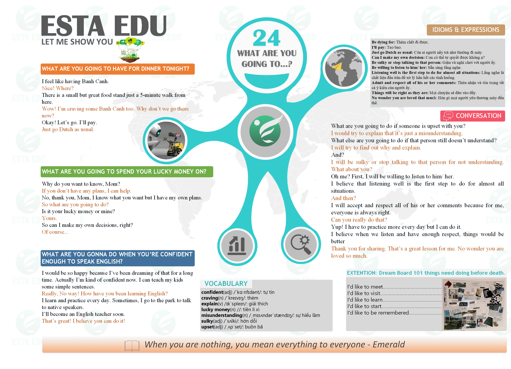
I. ĐOẠN VĂN
1) Tóm tắt
Đoạn văn là "buổi lên kế hoạch cho tương lai":
- Tối nay ăn gì?: đang thèm Bánh Canh; biết một quán nhỏ mà cực ngon năm phút đi bộ; hai người rủ nhau đi liền — "mình bao!" — "của ai người nấy trả như thường nhé".
- Tiền lì xì: mẹ hỏi định tiêu lì xì vào gì — "sao tự nhiên hỏi con làm gì mẹ?"; con khăng khăng "mình có kế hoạch riêng rồi"; mẹ hỏi thẳng: "tiền lì xì là của mẹ hay của con?" — "Của con." — "thế con tự quyết được rồi nhé?" — "Tất nhiên…"!
- Khi tự tin nói English rồi sẽ làm gì?: đã mơ từ lâu; nay hơi tự tin rồi, có thể dạy con vài câu đơn giản; được dồn câu hỏi: "Really, No way! Lâu nay cậu học tiếng Anh kiểu gì thế?" — học & luyện mỗi ngày, có lúc ra công viên nói chuyện với người bản xứ; sắp tới sẽ thành giáo viên tiếng Anh.
- Conversation "nếu có ai giận bạn": giải pháp từng bước: giải thích đó là hiểu lầm; vẫn không hiểu thì tìm ra vì sao rồi giải thích; nếu dỗi thì đấy: giận dỗi, nghỉ chơi với người ấy; còn người kia nhìn xa hơn: đầu tiên là sẵn sàng lắng nghe — "lắng nghe là bước đầu tiên gần như của mọi tình huống"; rồi thừa nhận và tôn trọng mọi ý kiến của người ta — "khi mình lắng nghe và có đủ sự tôn trọng, mọi chuyện sẽ đâu vào đấy" — "Hèn gì bạn được yêu thương đến thế!"
Điểm chốt: hỏi "What are you going to do…?"; trả lời đầy đủ bằng I'M GONNA… / I WILL + V (đã hẹn trước thì going to, bất ngờ, chưa chắc thì will).
2) Khi nào sử dụng?
- Hỏi kế hoạch tương lai gần: tối nay ăn gì, tuần này làm gì, tiêu lì xì kiểu gì.
- Hỏi đích lớn hơn: trong 2 năm tới làm gì, sau chương trình English class này làm gì (chính là sheet FREE TALK của bài).
- Hỏi nếu: What are you going to do if someone is upset with you? — ai giận thì xử lý sao.
- Trả lời: I'm gonna… (kế hoạch từ trước) / I will… (quyết tại chỗ, chưa chắc) — kèm kiểu a 7-year-old girl / a 5-minute walk để nói chi tiết.
3) Bảng cụm từ giao tiếp (IDIOMS & EXPRESSIONS + câu đáng nhớ)
Đọc nhanh như vầy: ⚠️ là lỗi "dịch từ tiếng Việt" hay gặp (gạch = đừng nói) · 💬 là khi nghe ai đó nói cụm này, mình bắt chuyện tiếp bằng câu nào.
| # | Cụm từ | Nghĩa (VI) | Khi nào dùng | Câu mẫu trong bài | ⚠️ Lỗi hay sai | 💬 Đáp lại |
|---|---|---|---|---|---|---|
| 1 | Be dying for | Thèm chết đi được | Cơn thèm ăn/điều gì đó rất mạnh | (trong bài dùng cặp anh em: I feel like having Banh Canh. / I'm craving some Banh Canh too.) | Me too, let's go now! (Tớ cũng vậy, đi liền đi!) | |
| 2 | I'll pay | Mình bao | Rủ nhau đi ăn và tự trả tiền | Okay! Let's go. I'll pay. | No way, go Dutch! (Đâu được, chia đôi thôi!) | |
| 3 | Just go Dutch as usual | Của ai người nấy trả như thường đi mà | Từ chối "bao" hay trả về phong cách chia đều | Just go Dutch as usual. | Fine, split it is! (Ừ thì chia đôi!) | |
| 4 | Can I make my own decision | Con có thể tự quyết được không ạ? | Đòi quyền tự quyết với bố mẹ (mềm khéo) | So can I make my own decisions, right? | Sure, it's yours. (Được thôi, của con mà) | |
| 5 | Be sulky or stop talking to that person | Giận dỗi và nghỉ chơi với người ấy | Mô tả cách "xử lý" khi không được hiểu | I will be sulky or stop talking to that person for not understanding. | Don't be like that! (Đừng hờn dỗi thế chứ!) | |
| 6 | Be willing to listen to him/ her | Sẵn sàng lắng nghe | Bật công thức bước đầu khi ai đó đang khó chịu | First, I will be willing to listen to him/ her. | Okay, I'm all ears. (Ok, tớ lắng nghe đây) | |
| 7 | Listening well is the first step to do for almost all situations | Lắng nghe là "chất liệu" đầu tiên để xử lý gần như mọi tình huống | Chia sẻ triết lý sống | I believe that listening well is the first step to do for almost all situations. | I should learn that too. (Tớ cũng nên học đấy) | |
| 8 | Admit and respect all of his or her comments | Thừa nhận và tôn trọng mọi ý kiến của người ấy | Trả lời "và rồi làm sao nữa?" | I will accept and respect all of his or her comments. | Easy to say, haha! (Nói thì dễ, haha!) | |
| 9 | Things will be right as they are | Mọi chuyện sẽ đâu vào đấy | An ủi sau khi đã dùng đủ cách | I believe when we listen and have enough respect, things would be better. | Hope so, fingers crossed! (Mong vậy, cầu cho lên!) | |
| 10 | No wonder you are loved that much | Hèn gì mọi người yêu thương mày đến thế | Khen ngợi một cách dễ thương sau bài học | That's a great lesson for me. No wonder you are loved so much. | Thanks to friends like you! (Nhờ có bạn như cậu đó!) |
4) Từ vựng (Vocabulary)
| Từ | Từ loại / Phiên âm | Nghĩa |
|---|---|---|
| Confident | (adj) /ˈkɑːnfɪdənt/ | Tự tin |
| Craving | (n) /ˈkreɪvɪŋ/ | Cơn thèm |
| Explain | (v) /ɪkˈspleɪn/ | Giải thích |
| Lucky money | (n) | Tiền lì xì |
| Misunderstanding | (n) /ˌmɪsʌnderˈstændɪŋ/ | Sự hiểu lầm |
| Sulky | (adj) /ˈsʌlki/ | Hờn dỗi |
| Upset | (adj) /ʌpˈset/ | Buồn bã, khó chịu |
| Be in bad mood | (Cụm) | Tâm trạng không tốt |
| Maximize | (v) | Tối đa hoá |
| Minimize | (v) | Tối ưu hoá, giảm thiểu |
| Profit | (n) | Lợi nhuận |
| Cost | (n) | Chi phí |
| Upgrade | (v) | Nâng cấp |
Extension (Dream Board — 101 things to do before death):
- I'd like to meet…………………………
- I'd like to visit…………………………
- I'd like to learn…………………………
- I'd like to start…………………………
- I'd like to be remembered…………………………
5) Đoạn hội thoại gốc (Free Talk)
What are you going to have for dinner tonight?
I feel like having Banh Canh.
Nice! Where?
There is a small but great food stand just a 5-minute walk from here.
Wow! I’m craving some Banh Canh too. Why don’t we go there now?
Okay! Let’s go. I’ll pay.
Just go Dutch as usual.
What are you going to spend your lucky money on?
Why do you want to know, Mom?
If you don’t have any plans, I can help.
No, thank you, Mom, I know what you want but I have my own plans.
So what are you going to do?
Is it your lucky money or mine?
Yours.
So I can make my own decisions, right?
Of course...
What are you gonna do when you’re confident enough to speak English?
I would be so happy because I’ve been dreaming of that for a long time. Actually I’m kind of confident now. I can teach my kids some simple sentences.
Really, No way! How have you been learning English?
I learn and practice every day. Sometimes, I go to the park to talk to native speakers.
I’ll become an English teacher soon.
That’s great! I believe you can do it!Conversation (tiếp tục):
What are you going to do if someone is upset with you?
I would try to explain that it’s just a misunderstanding.
What else are you going to do if that person still doesn’t understand?
I will try to find out why and explain.
And?
I will be sulky or stop talking to that person for not understanding. What about you?
Oh me? First, I will be willing to listen to him/ her. I believe that listening well is the first step to do for almost all situations.
And then?
I will accept and respect all of his or her comments because for me, everyone is always right.
Can you really do that?
Yup! I have to practice more every day but I can do it. I believe when we listen and have enough respect, things would be better.
Thank you for sharing. That’s a great lesson for me. No wonder you are loved so much.II. NGỮ PHÁP
Tổng quan: 6 điểm ngữ pháp trong bài
| Điểm | Tên | Ứng dụng nói |
|---|---|---|
| 1 | BE GOING TO vs WILL (Kế hoạch vs bất ngờ) | What are you going to do…? — I'm gonna… / I will… |
| 2 | (a/an) + number-N + N (Số-N như tính từ) | a 7-year-old girl, a 5-minute walk |
| 3 | Echo question + phản xạ ngạc nhiên | Really? / Are you serious? / No way? — Are you? |
| 4 | WHAT + a/an + adj + N (Cảm thán) | What a crazy decision! |
| 5 | HOW + adj/ adv + S + V (Cảm thán) | How crazy you are! |
| 6 | YOU DON'T SAY! (= Really!) | "Ôi thật luôn á!" |
Điểm 1. BE GOING TO + V / WILL + V (Kế hoạch vs bất ngờ): BE GOING TO + V · WILL + V
Cách dùng: Bản chất: be going to + V là kế hoạch đã cài sẵn từ trước, will + V là quyết định bật ra lúc nói hoặc chuyện chưa chắc — hỏi kế hoạch thì câu trả lời thường "tự chọn" going to. Will còn giữ vai hứa hẹn & đề nghị: I'll pay là hứa ngay tại bàn ăn. Cản trở: What you gonna do tonight? — phải có are; gonna chỉ dùng khi nói, đừng viết vào email. Mẹo nói: "gonna" đọc nuốt, nhanh; "I will" thì dứt một nhịp cho nghe ra lời hứa.
Phản xạ hỏi–đáp:
- ❓ Hỏi kế hoạch:
What are you going to do this weekend?(Cuối tuần này cậu định làm gì?) - ➖ Phủ định:
I'm not going to spend it all.(Tớ không định tiêu hết đâu) - 💬 Đáp lại:
Me neither, I'll save it. (Tớ cũng vậy, tớ để dành)
Ví dụ:
- Ví dụ 1: What are you going to do this weekend? (Cuối tuần này cậu tính làm gì?)
- Ví dụ 2: I don't know. Maybe I will go to the campus. (Tớ chưa biết nữa. Có thể sẽ ghé the campus thôi — chưa chắc nên dùng WILL)
- Ví dụ 3: What are you gonna tell her tonight? (Tối nay cậu định nói gì với cô ấy?)
- Ví dụ 4: I'm gonna say nothing because I'm so worried now. (Tớ định chẳng nói gì vì đang lo lắng lắm)
- Ví dụ 5: Never say:
What you gonna do tonight?→ Let's say: What are you gonna do tonight? (Sau WHAT phải có "are" nhé!)
Biến tấu (tự luyện):
- Đổi going to → will (hứa tại chỗ):
I'll pay for dinner.(Bữa tối để tớ bao) - Đổi chủ ngữ:
She is going to become an English teacher.(Cô ấy sẽ thành giáo viên tiếng Anh)
Điểm 2. (a/an) + number-N + N (Số + Danh đóng vai tính từ): (a/an) + NUMBER-N (không có -S) + N
Cách dùng: Bản chất: cả khối số + danh từ đeo gạch nối thì hóa thành một tính từ bổ nghĩa cho danh từ sau — "7-year-old" mô tả "girl", "5-minute" mô tả "walk" — nên danh từ trong khối bỏ -s. Phải có a/an đứng trước khi danh từ chính đếm được số ít. Cản trở: a 5 minutes walk — "minutes" có s là cả khối sụp. Mẹo nói: đọc liền một hơi "a-five-minute-walk", không ngắt giữa các nhịp.
Phản xạ hỏi–đáp:
- ➕ Nói:
It's just a 5-minute walk from here.(Đi bộ có 5 phút từ đây thôi) - ➖ Sửa lỗi quen:
a 5 minutes walk→a 5-minute walk✓ (Số-N làm tính từ thì bỏ s) - 💬 Đáp lại:
Perfect, let's walk there. (Tuyệt, đi bộ tới nhé)
Ví dụ:
- Ví dụ 1: She is talking to a 7-year-old girl. (Chị ấy đang nói chuyện với một cô bé 7 tuổi)
- Ví dụ 2: There is a small but great food stand just a 5-minute walk from here. (Qua đây một đoạn, có quán nhỏ mà ngon tuyệt, đi bộ có 5 phút thôi)
- Ví dụ 3: This is a 2-day course. (Đây là một khoá học hai ngày)
- Ví dụ 4: I need a 3-month plan to speak English well. (Tôi cần một kế hoạch ba tháng để nói tốt tiếng Anh)
- Ví dụ 5: Never say:
a 5 minutes walk→ Let's say: a 5-minute walk. (No S behind 5 minutes — the center đính chính lỗi này trong map 24 rồi đấy!)
Biến tấu (tự luyện):
- Đổi số & danh từ:
He is a 10-year-old boy who loves English.(Bé trai 10 tuổi mê tiếng Anh) - Đổi danh từ chính:
This is a 2-week course.(Đây là một khoá học hai tuần)
Điểm 3. ECHO QUESTION + phản xạ ngạc nhiên: AUX.V + Pro? — Really? / Are you serious? / No way?
Cách dùng: Bản chất: bắt tin "sốc" thì lặp lại đúng trợ động từ + đại từ của câu vừa nghe — câu gốc dùng be thì echo Are you?, dùng will thì Will you?, dùng have thì Have you?. Echo sai trợ động từ là "sụp nền": You are getting married. Do you? ✗. Nghe nghi ngờ nặng hơn thì nhảy sang Are you serious? / No way!. Mẹo nói: giọng đi lên cuối câu, đọc nhanh như tiếng "kêu bất ngờ" chứ đừng hỏi như thẩm phán.
Phản xạ hỏi–đáp:
- ❓ Echo ngạc nhiên:
You are getting married. Are you?(Ông sắp kết hôn hả?) - ➕ Hồi nghi nặng hơn:
No way! Are you serious?(Không thể nào! Thiệt hả cậu?) - 💬 Đáp lại:
Yes, really! I'll show you. (Thật mà! Tớ chứng minh cho coi)
Ví dụ:
- Ví dụ 1: You are getting married. Are you? (Ông sắp kết hôn hả?)
- Ví dụ 2: You've thought carefully. Have you? (Thế cậu nghĩ kỹ chưa đấy?)
- Ví dụ 3: Really, No way! How have you been learning English? (Thật luôn à! Lâu nay cậu học tiếng Anh kiểu gì thế?)
- Ví dụ 4: "I'll pay." — "Will you?" ("Mình bao." — "Cậu bao thật à?")
- Ví dụ 5: Never say:
You are getting married. Do you?→ Let's say: You are getting married. Are you? (Echo phải dùng đúng trợ động từ của câu gốc)
Biến tấu (tự luyện):
- Đổi trợ động từ (have → did):
"She passed the test." — "Did she?"(“Cô ấy đậu rồi.” — “Thật hả?”) - Đổi giọng (càng sốc càng dài):
Are you serious? No way!(Thiệt hả? Không thể nào!)
Điểm 4. WHAT + a/an + adj + N (Cảm thán — "quá trời quá đất!"): WHAT + a/an + ADJ + N (!)
Cách dùng: Bản chất: cảm thán về một sự vật/điều gì đó — What a + adj + danh từ đếm được số ít. Đếm được số ít phải có a/an: What nice house! ✗. Danh từ không đếm được hay số nhiều thì không có mạo từ: What nice weather! / What nice shoes! Mẹo nói: nhấn hết lực vào tính từ, giọng rơi xuống danh từ — "What a CRAZY decision!" — cảm xúc tự đến.
Phản xạ hỏi–đáp:
- ➕ Cảm thán:
What a great lesson!(Một bài học hay thật!) - ➖ Sửa lỗi quen:
What nice house!→What a nice house!✓ (Đếm được số ít phải có a) - 💬 Đáp lại:
Right? I learned a lot. (Đúng không? Tớ học được nhiều lắm)
Ví dụ:
- Ví dụ 1: What a crazy decision! (Một quyết định điên rồ mà!)
- Ví dụ 2: What a small but great food stand! (Một quán nhỏ mà ngon thật đấy!)
- Ví dụ 3: What a great lesson! (Một bài học hay thật!)
- Ví dụ 4: What a long journey! (Một hành trình dài thật!)
- Ví dụ 5: Never say:
What nice house!→ Let's say: What a nice house! (Đếm được số đơn phải có a/an)
Biến tấu (tự luyện):
- Đổi adj + N:
What a lovely surprise!(Một bất ngờ dễ thương quá trời!) - Số nhiều/không đếm được (bỏ a/an):
What nice shoes!(Đôi giày đẹp quá trời!)
Điểm 5. HOW + adj/ adv + S + V (Cảm thán — "thế này thật quá!"): HOW + ADJ/ADV + S + V (!)
Cách dùng: Bản chất: cảm thán về tính chất/mức độ của người hay sự việc — sau HOW là adj + S + V giữ nguyên trật tự khẳng định, không đảo trợ động từ như câu hỏi: How crazy is he! ✗. Dễ nhầm với What a + N — thán về sự vật thì What a, thán về mức độ thì How. Mẹo nói: nhấn tính từ ngay sau HOW rồi hạ giọng ở cuối — "How CRAZY he is!" — nghe đúng chất "than thở".
Phản xạ hỏi–đáp:
- ➕ Cảm thán:
How well you listen!(Cậu lắng nghe giỏi thật đấy!) - ➖ Sửa lỗi quen:
How crazy is he!→How crazy he is!✓ (Không đảo trợ động từ) - 💬 Đáp lại:
Thank you, you too! (Cảm ơn, cậu cũng vậy!)
Ví dụ:
- Ví dụ 1: How crazy you are! (Sao mà cậu "khìn" vậy chít!)
- Ví dụ 2: How healthy you look! (Trông cậu khoẻ thật!)
- Ví dụ 3: How well you listen! (Cậu lắng nghe giỏi thật đấy!)
- Ví dụ 4: How fast you are learning English! (Cậu học tiếng Anh nhanh thật đấy!)
- Ví dụ 5: Never say:
How crazy is he!→ Let's say: How crazy he is! (Sau HOW: adj + S + V, không đảo "is")
Biến tấu (tự luyện):
- Đổi adj:
How confident she looks!(Trông cô ấy tự tin thật!) - Đổi chủ ngữ & trạng từ:
How fast they are learning English!(Bọn họ học tiếng Anh nhanh thật đấy!)
Điểm 6. YOU DON'T SAY! (= Really!): YOU DON'T SAY! = REALLY!
Cách dùng: Bản chất: phản ứng "sốc" kiểu "Ôi thật luôn á!" — vừa ngạc nhiên vừa đùa, dùng thay Really cho đỡ nhạt. Câu này chốt gọn, không nhận tân ngữ: You don't say me! ✗. Đừng nhầm nghĩa từng chữ "bạn không nói" — nghĩa thực nằm trong giọng điệu. Mẹo nói: đọc lướt nhanh, kéo nhẹ từ cuối "You don't sayyy!", thêm No way! phía sau khi muốn sốc gấp đôi.
Phản xạ hỏi–đáp:
- ➕ Nói:
Actually I'm kind of confident now.(Giờ tớ hơi tự tin rồi đó) - ➖ Sửa lỗi quen:
You don't say me!→You don't say!✓ (Cụm chốt gọn, không thêm tân ngữ) - 💬 Đáp lại:
Totally true, believe me! (Thật luôn, tin tớ đi!)
Ví dụ:
- Ví dụ 1: You are getting married? — You don't say! (Em sắp cưới à? — Ôi thật luôn á!)
- Ví dụ 2: Actually I'm kind of confident now. — You don't say! (Giờ tớ hơi tự tin rồi. — Ôi thật luôn á!)
- Ví dụ 3: I'm craving some Banh Canh too. — You don't say! (Tớ cũng đang thèm bánh canh nè. — Ôi trùng hợp ghê!)
- Ví dụ 4: You'll become an English teacher soon. — You don't say! (Cậu sắp thành giáo viên tiếng Anh rồi à? — Ôi giỏi ghê!)
- Ví dụ 5: Never say:
You don't say me!→ Let's say: You don't say! (Câu này chốt gọn, không thêm tân ngữ đâu!)
Biến tấu (tự luyện):
- Đổi ngữ cảnh (thay Really):
"I got the job." — "You don't say!"(“Tớ trúng tuyển rồi.” — “Ôi thật luôn á!”) - Đổi giọng, sốc gấp đôi:
You don't say! No way!(Ôi thật luôn á! Không thể nào!)
III. LUYỆN NÓI (drill)
Echo drill (nói to 3 lần, nhanh hơn mỗi lần)
- What are you going to have for dinner tonight? — I feel like having Banh Canh.
- Wow! I'm craving some Banh Canh too. Why don't we go there now?
- Okay! Let's go. I'll pay. — Just go Dutch as usual.
- What are you gonna do when you're confident enough to speak English? — I'll become an English teacher soon.
- I will be willing to listen to him/ her. — No wonder you are loved so much.
5 câu hỏi tự luyện (tự hỏi + trả lời)
- What are you going to do on your birthday? — I'm gonna invite friends for…, and of course Banh Canh.
- What are you going to do when you are in a bad mood? — I'm going to jog and meditate to free my mind…
- What are you going to do in the next 2 years (after our English class)? — I'm going to be more successful and upgrade myself…
- What are you going to do to have more free time / keep the environment clean? — I will maximize my time and minimize the costs…
- Do you want to do anything special? Who do you want to be with? — (To talk more) I think I can do it well, and I'm going to start this weekend with…
✅ Checkpoint: hỏi & trả lời "What are you going to do…?" cho 5 mốc (tối nay, cuối tuần, sinh nhật, 2 năm tới, nếu ai giận) — đã định từ trước thì gonna, chưa chắc thì WILL. Ghi âm lại.